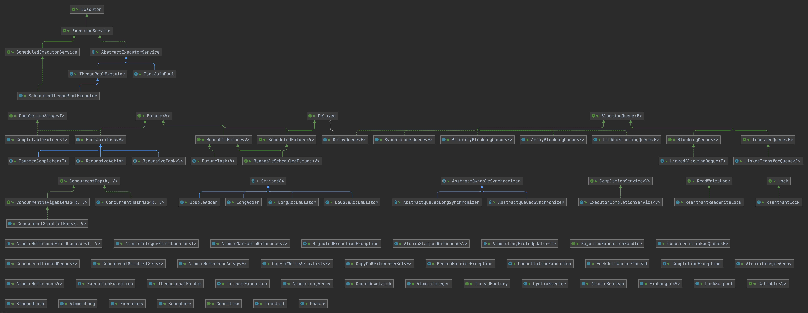

线程安全与锁优化
版本说明：本文主要基于 JDK 6 ~ JDK 14 的 HotSpot 虚拟机实现。需要注意的是，从 JDK 15 开始，偏向锁已被默认关闭并标记为废弃（JEP 374）。如果你使用的是 JDK 15+，文中关于偏向锁的内容仅作为历史参考。
线程安全
什么是线程安全
“当多个线程访问一个对象时，如果不用考虑这些线程在运行时环境下的调度和交替执行，也不需要进行额外的同步，或者在调用方法进行任何其他的协调操作，调用这个对象的行为都可以获得正确的结果，那么这个对象就是线程安全的。”
相对的线程安全，可以分成五个等级。但在深入讨论线程安全的分类之前，我们需要先理解 Java 内存模型——它是理解线程安全问题的理论基础。
Java 内存模型基础
Java 内存模型（Java Memory Model，JMM）是 Java 语言规范的一部分，定义了多线程程序中共享变量的访问规则。理解 JMM 是理解线程安全问题的基础。
为什么需要内存模型？
现代计算机系统中，CPU 与主内存之间存在巨大的速度差异。为了弥补这一差距，硬件层面引入了多级缓存（L1、L2、L3 Cache）。这带来了一个问题：当多个 CPU 核心同时操作同一块内存时，各自缓存中的数据可能不一致。
graph TB
subgraph "多核 CPU 的缓存架构"
direction TB
subgraph "CPU 0"
C0["Core 0"]
L1_0["L1 Cache"]
L2_0["L2 Cache"]
C0 --> L1_0 --> L2_0
end
subgraph "CPU 1"
C1["Core 1"]
L1_1["L1 Cache"]
L2_1["L2 Cache"]
C1 --> L1_1 --> L2_1
end
L3["L3 Cache（共享）"]
MEM["主内存（Main Memory）"]
L2_0 --> L3
L2_1 --> L3
L3 --> MEM
style C0 fill:#e1f5ff
style C1 fill:#e1f5ff
style L1_0 fill:#c8e6c9
style L1_1 fill:#c8e6c9
style L2_0 fill:#fff9c4
style L2_1 fill:#fff9c4
style L3 fill:#ffecb3
style MEM fill:#ffcdd2
end
note["问题：Core 0 修改了变量 x，<br/>Core 1 的缓存中可能还是旧值"]
style note fill:#fff9c4JMM 的作用就是屏蔽底层硬件差异，为 Java 程序员提供一套统一的内存访问规则。
JMM 的抽象模型
JMM 将内存分为两个层次：
graph TB
subgraph "JMM 抽象模型"
direction TB
subgraph "线程 1"
T1["线程 1"]
WM1["工作内存<br/>（Working Memory）<br/>━━━━━━━━━━━━━━━━━━━━<br/>变量 x 的副本<br/>变量 y 的副本"]
end
subgraph "线程 2"
T2["线程 2"]
WM2["工作内存<br/>（Working Memory）<br/>━━━━━━━━━━━━━━━━━━━━<br/>变量 x 的副本<br/>变量 y 的副本"]
end
MM["主内存（Main Memory）<br/>━━━━━━━━━━━━━━━━━━━━<br/>共享变量 x<br/>共享变量 y"]
T1 --> WM1
T2 --> WM2
WM1 <-->|"read/load<br/>store/write"| MM
WM2 <-->|"read/load<br/>store/write"| MM
style T1 fill:#e1f5ff
style T2 fill:#e1f5ff
style WM1 fill:#c8e6c9
style WM2 fill:#c8e6c9
style MM fill:#ffcdd2
end| 概念 | 说明 |
|---|---|
| 主内存（Main Memory） | 所有线程共享的内存区域，存储共享变量 |
| 工作内存（Working Memory） | 每个线程私有的内存区域，存储该线程使用的共享变量的副本 |
关键规则：
- 线程对共享变量的所有操作都必须在工作内存中进行，不能直接读写主内存
- 不同线程之间无法直接访问对方的工作内存，必须通过主内存传递
线程安全的三大特性
JMM 围绕三个核心特性来定义线程安全：
1. 原子性（Atomicity）
定义：一个操作要么全部执行完成，要么完全不执行，不会被其他线程中断。
问题示例：i++ 不是原子操作
1 | |
sequenceDiagram
participant T1 as 线程 1
participant M as 主内存 (i=0)
participant T2 as 线程 2
T1->>M: 读取 i=0
T2->>M: 读取 i=0
T1->>T1: 计算 0+1=1
T2->>T2: 计算 0+1=1
T1->>M: 写入 i=1
T2->>M: 写入 i=1
Note over M: 预期 i=2，实际 i=1<br/>（丢失更新）保证原子性的方式：
synchronized关键字java.util.concurrent.atomic包中的原子类Lock接口的实现类
2. 可见性（Visibility）
定义：当一个线程修改了共享变量的值，其他线程能够立即看到这个修改。
问题示例：没有可见性保证的循环
1 | |
为什么会看不到？
- 线程 1 可能将
running缓存在 CPU 寄存器或 L1 Cache 中 - 线程 2 的修改只写入了主内存，没有通知线程 1 刷新缓存
- 结果：线程 1 一直读取的是缓存中的旧值
保证可见性的方式：
volatile关键字synchronized关键字（进入和退出同步块时会刷新缓存）final关键字（对于不可变对象）
3. 有序性（Ordering）
定义：程序执行的顺序按照代码的先后顺序执行。
问题：编译器和处理器可能对指令进行重排序以优化性能。
1 | |
经典问题：双重检查锁定（DCL）的问题
1 | |
instance = new Singleton() 实际上是三个操作：
- 分配内存空间
- 初始化对象
- 将 instance 指向分配的内存
由于重排序，可能变成 1 → 3 → 2，导致其他线程看到一个未完全初始化的对象。
保证有序性的方式：
volatile关键字（禁止特定类型的重排序）synchronized关键字（同一时刻只有一个线程执行）- happens-before 规则
happens-before 规则
happens-before 是 JMM 的核心概念，它定义了操作之间的可见性关系。
定义：如果操作 A happens-before 操作 B，那么 A 的执行结果对 B 可见，且 A 的执行顺序在 B 之前。
注意：happens-before 不是指时间上的先后，而是指可见性的保证。
JMM 定义的 happens-before 规则
| 规则 | 说明 |
|---|---|
| 程序顺序规则 | 同一个线程中，前面的操作 happens-before 后面的操作 |
| 监视器锁规则 | 对一个锁的解锁 happens-before 对同一个锁的加锁 |
| volatile 变量规则 | 对 volatile 变量的写 happens-before 对同一变量的读 |
| 传递性规则 | 如果 A happens-before B，B happens-before C，则 A happens-before C |
| 线程启动规则 | Thread.start() happens-before 该线程中的任何操作 |
| 线程终止规则 | 线程中的任何操作 happens-before 其他线程检测到该线程终止 |
| 中断规则 | 对线程 interrupt() 的调用 happens-before 被中断线程检测到中断 |
| 对象终结规则 | 对象的构造函数执行完成 happens-before finalize() 方法的开始 |
graph LR
subgraph "happens-before 示例"
direction TB
subgraph "线程 1"
A["x = 1"]
B["unlock(m)"]
A -->|"程序顺序规则"| B
end
subgraph "线程 2"
C["lock(m)"]
D["读取 x"]
C -->|"程序顺序规则"| D
end
B -->|"监视器锁规则"| C
A -->|"传递性：x=1 对线程 2 可见"| D
style A fill:#c8e6c9
style B fill:#fff9c4
style C fill:#fff9c4
style D fill:#e1f5ff
endvolatile 关键字
volatile 是 Java 提供的最轻量级的同步机制，它保证了可见性和有序性，但不保证原子性。
volatile 的语义
- 可见性：对 volatile 变量的写入会立即刷新到主内存，读取会从主内存重新加载
- 有序性：禁止 volatile 变量与普通变量之间的重排序
volatile 的内存屏障
JVM 通过插入**内存屏障（Memory Barrier）**来实现 volatile 的语义：
| 屏障类型 | 说明 |
|---|---|
| LoadLoad | 确保 Load1 数据的装载先于 Load2 及后续装载指令 |
| StoreStore | 确保 Store1 数据对其他处理器可见先于 Store2 及后续存储指令 |
| LoadStore | 确保 Load1 数据装载先于 Store2 及后续存储指令刷新到内存 |
| StoreLoad | 确保 Store1 数据对其他处理器可见先于 Load2 及后续装载指令 |
graph TB
subgraph "volatile 写操作的内存屏障"
direction TB
SS1["StoreStore 屏障"]
VW["volatile 写"]
SL1["StoreLoad 屏障"]
SS1 --> VW --> SL1
note1["禁止上面的普通写<br/>与 volatile 写重排序"]
note2["禁止 volatile 写<br/>与下面的读/写重排序"]
SS1 -.-> note1
SL1 -.-> note2
style VW fill:#ffcdd2
end
subgraph "volatile 读操作的内存屏障"
direction TB
VR["volatile 读"]
LL1["LoadLoad 屏障"]
LS1["LoadStore 屏障"]
VR --> LL1 --> LS1
note3["禁止 volatile 读<br/>与下面的读重排序"]
note4["禁止 volatile 读<br/>与下面的写重排序"]
LL1 -.-> note3
LS1 -.-> note4
style VR fill:#c8e6c9
end深入理解内存屏障
上面我们介绍了 JVM 层面的四种内存屏障（LoadLoad、LoadStore、StoreLoad、StoreStore），但这只是冰山一角。要真正理解内存屏障的本质，我们需要深入到 CPU 和缓存的层面。
为什么需要内存屏障？
现代 CPU 为了提高性能，引入了多级缓存和各种优化机制，这些机制可能导致内存操作的可见性和顺序性问题：
graph TB
subgraph "CPU 的写操作优化"
direction TB
CPU["CPU Core"]
SB["Store Buffer<br/>（写缓冲区）<br/>━━━━━━━━━━━━━━━━━━━━<br/>暂存写操作<br/>异步刷新到缓存"]
L1["L1 Cache"]
L2["L2 Cache"]
MEM["主内存"]
CPU -->|"1. 写入"| SB
SB -->|"2. 异步刷新"| L1
L1 --> L2 --> MEM
note1["问题：写入 Store Buffer 后<br/>CPU 认为写操作完成<br/>但其他 CPU 还看不到"]
style SB fill:#ffcdd2
style note1 fill:#fff9c4
end
subgraph "CPU 的读操作优化"
direction TB
CPU2["CPU Core"]
IQ["Invalidate Queue<br/>（失效队列）<br/>━━━━━━━━━━━━━━━━━━━━<br/>暂存失效消息<br/>延迟处理"]
L1_2["L1 Cache"]
CPU2 -->|"读取"| L1_2
IQ -->|"延迟失效"| L1_2
note2["问题：失效消息在队列中<br/>但缓存行还未真正失效<br/>可能读到过期数据"]
style IQ fill:#ffcdd2
style note2 fill:#fff9c4
endStore Buffer（写缓冲区）：
- CPU 执行写操作时，不会直接写入缓存，而是先写入 Store Buffer
- 这样 CPU 可以继续执行后续指令，不用等待缓存一致性协议完成
- 问题：其他 CPU 可能看不到 Store Buffer 中的数据
Invalidate Queue（失效队列）：
- 当 CPU 收到缓存失效消息时，不会立即处理，而是放入 Invalidate Queue
- 这样 CPU 可以快速响应，不用等待缓存失效完成
- 问题：缓存行可能还未真正失效，读到过期数据
内存屏障的本质
内存屏障（Memory Barrier / Memory Fence）是 CPU 提供的指令，用于强制刷新 Store Buffer 或处理 Invalidate Queue：
| CPU 架构 | 写屏障指令 | 读屏障指令 | 全屏障指令 |
|---|---|---|---|
| x86/x64 | sfence |
lfence |
mfence |
| ARM | dmb st |
dmb ld |
dmb ish |
| POWER | lwsync |
lwsync |
sync |
graph LR
subgraph "内存屏障的作用"
direction TB
subgraph "写屏障（Store Barrier）"
WB["sfence / dmb st"]
WB_DESC["强制刷新 Store Buffer<br/>确保之前的写操作<br/>对其他 CPU 可见"]
end
subgraph "读屏障（Load Barrier）"
RB["lfence / dmb ld"]
RB_DESC["强制处理 Invalidate Queue<br/>确保读到最新数据"]
end
subgraph "全屏障（Full Barrier）"
FB["mfence / dmb ish"]
FB_DESC["同时具有读屏障和写屏障的效果<br/>最强的顺序保证"]
end
style WB fill:#c8e6c9
style RB fill:#e1f5ff
style FB fill:#ffcdd2
endJVM 如何映射内存屏障
JVM 的四种抽象屏障会根据不同的 CPU 架构映射到具体的指令：
| JVM 屏障 | x86/x64 | ARM | 作用 |
|---|---|---|---|
| LoadLoad | 空操作（x86 保证） | dmb ishld |
禁止读-读重排序 |
| StoreStore | 空操作（x86 保证） | dmb ishst |
禁止写-写重排序 |
| LoadStore | 空操作（x86 保证） | dmb ish |
禁止读-写重排序 |
| StoreLoad | mfence 或 lock 前缀 |
dmb ish |
禁止写-读重排序 |
为什么 x86 大部分屏障是空操作？
x86 架构采用强内存模型（TSO - Total Store Order），硬件层面已经保证了大部分顺序性，只有 StoreLoad 重排序需要显式屏障。这也是为什么 Java 在 x86 上的并发性能通常比 ARM 更好。
volatile 的底层实现
重要说明：JMM 规范与 JVM 实现的区别
在讨论 volatile 的实现之前，需要明确区分两个层次：
| 层次 | 定义者 | 内容 |
|---|---|---|
| JMM 规范 | JLS 17.4 | 定义 happens-before 语义，不规定具体实现 |
| JVM 实现 | HotSpot 等 | 使用内存屏障实现 JMM 语义，因架构而异 |
根据 JLS 17.4.4，volatile 变量的语义是：
- 对 volatile 变量的写操作 happens-before 后续对同一变量的读操作
- 这保证了可见性和有序性，但 JLS 并未规定必须使用哪种内存屏障
JSR-133 Cookbook 的实现指南（非规范，仅供参考）：
当 JVM 编译 volatile 变量的读写时，会插入相应的内存屏障：
1 | |
1 | |
x86 架构的实际实现：
由于 x86 采用强内存模型（TSO），大部分屏障是空操作：
| 屏障类型 | x86 上的实现 | 原因 |
|---|---|---|
| StoreStore | 空操作 | x86 保证 Store-Store 顺序 |
| LoadLoad | 空操作 | x86 保证 Load-Load 顺序 |
| LoadStore | 空操作 | x86 保证 Load-Store 顺序 |
| StoreLoad | 需要显式屏障 | x86 允许 Store-Load 重排序 |
1 | |
lock 前缀会锁定缓存行（或总线），确保写操作对所有 CPU 可见。
关键理解：内存屏障是 JVM 实现 JMM 语义的手段，不是 JMM 规范本身。不同 JVM、不同 CPU 架构可能使用不同的屏障组合，只要最终满足 happens-before 语义即可。
内存屏障 vs GC 屏障：名字相同，本质不同
你可能听说过 G1、ZGC 也使用"屏障"（Barrier），但这与 CPU 内存屏障是完全不同的概念：
| 维度 | CPU 内存屏障 | GC 屏障 |
|---|---|---|
| 层次 | 硬件指令 | 软件代码 |
| 目的 | 保证内存操作的可见性和顺序性 | 维护 GC 的正确性（如记录引用变化） |
| 实现 | CPU 指令（mfence、dmb 等） | JIT 编译器插入的代码片段 |
| 性能影响 | 阻止 CPU 优化，有一定开销 | 每次引用操作都执行，开销更大 |
G1 的写屏障（Write Barrier）
G1 使用写屏障来维护 Remembered Set（记录跨 Region 引用）：
1 | |
ZGC 的读屏障（Load Barrier）
ZGC 使用读屏障来实现并发重定位：
1 | |
graph TB
subgraph "两种'屏障'的对比"
direction LR
subgraph "CPU 内存屏障"
MB["mfence / dmb"]
MB_USE["用途：保证内存可见性"]
MB_WHEN["时机：volatile 读写、锁操作"]
MB_HOW["实现：CPU 指令"]
end
subgraph "GC 屏障"
GB["Write/Load Barrier"]
GB_USE["用途：维护 GC 正确性"]
GB_WHEN["时机：每次引用读写"]
GB_HOW["实现：JIT 插入的代码"]
end
style MB fill:#e1f5ff
style GB fill:#c8e6c9
end为什么都叫"屏障"？
两者都是在某个操作前后插入额外的逻辑，起到"拦截"或"保护"的作用，因此都被称为"屏障"。但它们解决的问题完全不同：
- CPU 内存屏障：解决多核 CPU 的缓存一致性问题
- GC 屏障：解决并发 GC 的正确性问题
MESI 协议：缓存一致性的基石
在讨论内存屏障时，我们提到了"缓存一致性"。那么 CPU 是如何保证多核之间缓存一致的呢？答案是 MESI 协议。
重要说明：MESI 协议不是 x86 专属的，而是一种通用的缓存一致性协议。它最初由 Intel 在 1980 年代提出，但被广泛应用于多种处理器架构：
| 处理器架构 | 使用的协议 | 说明 |
|---|---|---|
| x86/x64 | MESI、MESIF | Intel 使用 MESIF（增加 Forward 状态），AMD 使用 MOESI |
| ARM | MOESI、MESI 变体 | ARM 的 big.LITTLE 架构使用类似协议 |
| SPARC | MOESI | Sun/Oracle 的 SPARC 处理器 |
| PowerPC | MESI 扩展 | IBM 的 Power 系列处理器 |
| RISC-V | 可配置 | 支持多种一致性协议 |
本文以 MESI 为例讲解，因为它是最基础、最经典的缓存一致性协议，其他协议（如 MOESI、MESIF）都是在 MESI 基础上的扩展。
MESI 的四种状态
MESI 是一种缓存一致性协议，每个缓存行（Cache Line）都有四种状态：
| 状态 | 全称 | 含义 |
|---|---|---|
| M | Modified | 缓存行被修改，与主内存不一致，只有当前 CPU 有效副本 |
| E | Exclusive | 缓存行与主内存一致，只有当前 CPU 有副本 |
| S | Shared | 缓存行与主内存一致，多个 CPU 都有副本 |
| I | Invalid | 缓存行无效，需要从主内存或其他 CPU 重新加载 |
stateDiagram-v2
[*] --> I: 初始状态
I --> E: 本地读取（其他 CPU 无副本）
I --> S: 本地读取（其他 CPU 有副本）
I --> M: 本地写入
E --> S: 其他 CPU 读取
E --> M: 本地写入
E --> I: 其他 CPU 写入
S --> M: 本地写入（需先失效其他副本）
S --> I: 其他 CPU 写入
M --> S: 其他 CPU 读取（需先写回主内存）
M --> I: 其他 CPU 写入（需先写回主内存）
M --> E: 写回主内存MESI 的工作流程
上面的状态图展示了 MESI 协议的基本状态转换，但实际的 CPU 实现中还有两个关键组件：Store Buffer 和 Invalidate Queue。它们是性能优化的关键，也是导致内存可见性问题的根源。
graph TB
subgraph "CPU 0"
CPU0_CORE["CPU 0 Core"]
SB0["Store Buffer<br/>━━━━━━━━━━━━━━<br/>写入缓冲区<br/>暂存待写入的数据"]
CACHE0["L1 Cache<br/>━━━━━━━━━━━━━━<br/>MESI 状态管理"]
IQ0["Invalidate Queue<br/>━━━━━━━━━━━━━━<br/>失效队列<br/>暂存待处理的失效消息"]
CPU0_CORE -->|"1. 写入"| SB0
SB0 -->|"2. 刷新到缓存"| CACHE0
IQ0 -->|"4. 处理失效"| CACHE0
end
BUS["系统总线（Bus）"]
subgraph "CPU 1"
CPU1_CORE["CPU 1 Core"]
SB1["Store Buffer"]
CACHE1["L1 Cache"]
IQ1["Invalidate Queue"]
CPU1_CORE -->|"读取"| CACHE1
IQ1 -->|"处理失效"| CACHE1
end
CACHE0 <-->|"3. Invalidate 消息"| BUS
BUS <-->|"放入队列"| IQ1
CACHE1 <-->|"Read/Response"| BUS
style SB0 fill:#ffcdd2
style SB1 fill:#ffcdd2
style IQ0 fill:#fff9c4
style IQ1 fill:#fff9c4Store Buffer 和 Invalidate Queue 的作用：
| 组件 | 作用 | 带来的问题 |
|---|---|---|
| Store Buffer | CPU 写入时先写入 Store Buffer，不等待其他 CPU 确认，提高写入性能 | 写入可能延迟对其他 CPU 可见 |
| Invalidate Queue | CPU 收到 Invalidate 消息后先放入队列，不立即处理，提高响应速度 | 可能读到已被其他 CPU 修改的旧值 |
这就是为什么需要内存屏障的根本原因：
sequenceDiagram
participant CPU0 as CPU 0
participant SB0 as Store Buffer 0
participant C0 as Cache 0
participant BUS as 总线
participant IQ1 as Invalidate Queue 1
participant C1 as Cache 1
participant CPU1 as CPU 1
Note over CPU0,CPU1: 问题场景：没有内存屏障时
CPU0->>SB0: 写入 x = 1
Note over SB0: x = 1 暂存在 Store Buffer
CPU0->>CPU0: 继续执行其他指令
CPU1->>C1: 读取 x
Note over CPU1: 读到旧值 x = 0！
SB0->>C0: 稍后刷新到缓存
C0->>BUS: 发送 Invalidate
BUS->>IQ1: 放入 Invalidate Queue
Note over IQ1: 失效消息还在队列中...
Note over CPU0,CPU1: 解决方案：使用内存屏障
rect rgb(200, 230, 200)
Note over CPU0: Store Barrier（写屏障）
CPU0->>SB0: 强制刷新 Store Buffer
SB0->>C0: 立即写入缓存
end
rect rgb(200, 200, 230)
Note over CPU1: Load Barrier（读屏障）
CPU1->>IQ1: 强制处理 Invalidate Queue
IQ1->>C1: 使缓存行失效
CPU1->>C1: 读取 x
Note over CPU1: 读到新值 x = 1
end关键理解：
- MESI 协议本身是正确的，它最终会保证所有 CPU 看到一致的值
- 但 Store Buffer 和 Invalidate Queue 引入了延迟，导致"最终一致"而非"即时一致"
- 内存屏障的作用就是强制刷新这些缓冲区，确保写入立即可见
MESI 与 JMM 的关系
MESI 是硬件层面的缓存一致性协议，JMM 是语言层面的内存模型。两者的关系是：
graph TB
subgraph "层次关系"
direction TB
JMM["Java 内存模型（JMM）<br/>━━━━━━━━━━━━━━━━━━━━<br/>定义 happens-before 规则<br/>定义 volatile、synchronized 语义<br/>屏蔽底层硬件差异"]
JVM["JVM 实现<br/>━━━━━━━━━━━━━━━━━━━━<br/>将 JMM 语义映射到<br/>具体的内存屏障指令"]
CPU["CPU 硬件<br/>━━━━━━━━━━━━━━━━━━━━<br/>MESI 协议保证缓存一致性<br/>内存屏障指令控制顺序"]
JMM --> JVM --> CPU
style JMM fill:#e1f5ff
style JVM fill:#c8e6c9
style CPU fill:#fff9c4
end关键理解：
- MESI 保证最终一致性：通过 Invalidate 消息，MESI 最终会让所有 CPU 看到相同的值
- 但 MESI 不保证即时可见性：由于 Store Buffer 和 Invalidate Queue 的存在，写操作可能延迟可见
- 内存屏障弥补这个差距：强制刷新 Store Buffer 或处理 Invalidate Queue
“锁缓存”（Cache Line Locking）
你可能听说过"锁缓存"这个概念，它与 MESI 密切相关：
锁缓存是 x86 CPU 的一种优化机制：当执行带 lock 前缀的指令时，如果操作的数据在缓存中，CPU 不会锁定整个总线，而是只锁定对应的缓存行。
graph TB
subgraph "lock 前缀的两种实现"
direction LR
subgraph "总线锁（Bus Lock）"
BL["锁定整个总线"]
BL_WHEN["条件：数据跨缓存行<br/>或缓存行不在 M/E 状态"]
BL_COST["开销：非常大<br/>阻塞所有 CPU 的内存访问"]
end
subgraph "缓存锁（Cache Lock）"
CL["只锁定缓存行"]
CL_WHEN["条件：数据在单个缓存行内<br/>且缓存行在 M/E 状态"]
CL_COST["开销：较小<br/>只影响该缓存行的访问"]
end
style BL fill:#ffcdd2
style CL fill:#c8e6c9
endCAS 操作与缓存锁：
1 | |
lock cmpxchg 指令会：
- 如果数据在缓存中且满足条件，使用缓存锁
- 将缓存行状态设为 M（Modified）
- 发送 Invalidate 消息给其他 CPU
- 其他 CPU 的对应缓存行变为 I（Invalid）
这就是 CAS 能保证原子性的硬件基础。
为什么有了 MESI 还需要内存屏障？
这是一个常见的困惑。答案是：MESI 保证一致性，但不保证可见性的时机。
graph TB
subgraph "MESI 的局限性"
direction TB
WRITE["CPU 0 执行写操作"]
SB["写入 Store Buffer"]
MESI["MESI 协议开始工作<br/>（发送 Invalidate 消息）"]
IQ["CPU 1 收到消息<br/>放入 Invalidate Queue"]
DELAY["延迟处理..."]
INVALID["缓存行真正失效"]
WRITE --> SB --> MESI --> IQ --> DELAY --> INVALID
note1["问题：在 DELAY 期间<br/>CPU 1 可能读到旧值"]
style SB fill:#ffcdd2
style IQ fill:#ffcdd2
style note1 fill:#fff9c4
endStore Buffer 和 Invalidate Queue 是性能优化，它们让 CPU 不用等待 MESI 协议完成就能继续执行。但这也带来了可见性延迟。
内存屏障的作用就是在需要时强制等待这些异步操作完成：
- 写屏障：等待 Store Buffer 刷新
- 读屏障：等待 Invalidate Queue 处理
synchronized 与内存屏障
JLS 17.4.4 对 synchronized 的规范定义：
根据 JLS 规范，synchronized 的内存语义通过 happens-before 关系定义：
- 对一个 monitor 的解锁操作 happens-before 后续对同一 monitor 的加锁操作
这意味着：在解锁之前的所有写操作，对于后续获取同一锁的线程都是可见的。
JVM 实现层面（非规范，仅供理解）：
1 | |
JSR-133 Cookbook 建议的屏障（实现指南，非规范）：
| 操作 | 建议屏障 | 语义 |
|---|---|---|
| monitorenter 之后 | LoadLoad + LoadStore | 获取语义（acquire） |
| monitorexit 之前 | StoreStore + StoreLoad | 释放语义（release） |
实际实现因架构而异：
| 架构 | monitorenter 实现 | monitorexit 实现 |
|---|---|---|
| x86 | lock cmpxchg（隐含全屏障） |
lock 前缀指令或普通写 |
| ARM | dmb + ldrex/strex |
dmb + 普通写 |
| AArch64 | ldaxr/stxr（acquire） |
stlr（release） |
关键理解：JLS 规定的是 happens-before 语义，具体使用哪种内存屏障是 JVM 的实现细节。在 x86 上，由于其强内存模型，lock 前缀指令已经提供了足够的内存屏障语义。
这就是为什么 synchronized 能保证可见性：释放锁时的 StoreLoad 屏障确保所有写操作对获取锁的线程可见。
小结
| 概念 | 层次 | 作用 |
|---|---|---|
| MESI 协议 | 硬件 | 保证多核缓存的最终一致性 |
| Store Buffer / Invalidate Queue | 硬件 | 性能优化，但导致可见性延迟 |
| CPU 内存屏障 | 硬件指令 | 强制刷新缓冲区，保证可见性时机 |
| JMM 内存屏障 | JVM 抽象 | 屏蔽硬件差异，提供统一语义 |
| volatile / synchronized | Java 语言 | 通过内存屏障实现可见性和有序性 |
| GC 屏障 | JVM 软件 | 维护 GC 正确性，与内存屏障无关 |
理解这些概念的层次关系，有助于：
- 正确理解 volatile 和 synchronized 的底层原理
- 区分不同"屏障"概念，避免混淆
- 理解为什么 Java 在不同 CPU 架构上的并发行为可能不同
volatile 的正确使用场景
适用场景：
- 状态标志（如上面的
running变量） - 一次性安全发布（配合 final 字段）
- 双重检查锁定（DCL）的修复
修复后的 DCL：
1 | |
为什么 synchronized 不能替代 volatile？
有人可能会问：synchronized 不是也保证可见性吗？为什么还需要 volatile？
关键在于：第一次检查 if (instance == null) 发生在 synchronized 块外部。
sequenceDiagram
participant T1 as 线程 1
participant T2 as 线程 2
participant instance as instance 变量
Note over T1,instance: 没有 volatile 的问题场景
T1->>T1: 进入 synchronized
T1->>instance: instance = new Singleton()
Note over T1,instance: 对象可能未完全初始化<br/>但引用已经非 null
T1->>T1: 退出 synchronized
T2->>instance: 第一次检查：instance == null?
Note over T2,instance: 在 synchronized 外部读取！<br/>可能看到部分构造的对象
T2->>T2: instance != null，跳过 synchronized
T2->>T2: 使用未完全初始化的对象 💥具体分析：
| 检查位置 | 是否在 synchronized 内 | 可见性保证 |
|---|---|---|
第一次检查 if (instance == null) |
❌ 否 | 无保证，可能看到部分构造的对象 |
第二次检查 if (instance == null) |
✅ 是 | 有保证，synchronized 提供可见性 |
volatile 的作用：
- 禁止指令重排序：确保
new Singleton()的三个步骤（分配内存、初始化、赋值引用）不会被重排序 - 保证可见性：确保第一次检查（在 synchronized 外部）也能看到完全初始化的对象
如果所有访问都在 synchronized 内部呢？
如果你能保证所有对 instance 的访问都通过 getInstance() 方法，并且都进入 synchronized 块，那么理论上 synchronized 的可见性就足够了。但 DCL 的设计目的就是避免每次都进入 synchronized，所以第一次检查必须在锁外部，这就需要 volatile。
不适用场景：
- 复合操作（如
i++） - 需要原子性保证的场景
synchronized 与 volatile 的对比
| 特性 | synchronized | volatile |
|---|---|---|
| 原子性 | 保证 | 不保证 |
| 可见性 | 保证 | 保证 |
| 有序性 | 保证 | 保证（部分） |
| 阻塞 | 会阻塞 | 不会阻塞 |
| 性能 | 较重 | 较轻 |
| 使用场景 | 复合操作、临界区 | 状态标志、一次性发布 |
关于"一致性"的说明
本文多处提到"一致性"这个词，需要特别说明：一致性（Consistency）不是 JMM 的专有属性。
JMM 的三大核心属性是：
- 原子性（Atomicity）
- 可见性（Visibility）
- 有序性（Ordering）
而"一致性"在不同上下文中有不同含义：
| 术语 | 含义 | 所属领域 |
|---|---|---|
| 缓存一致性（Cache Coherence） | 多核 CPU 缓存之间的数据一致 | 硬件/MESI 协议 |
| 内存一致性模型（Memory Consistency Model） | 定义多处理器系统中内存操作的可见顺序 | 硬件/操作系统 |
| 顺序一致性（Sequential Consistency） | 最强的内存模型，所有操作按全局顺序执行 | 理论模型 |
| 数据一致性（Data Consistency） | 分布式系统中数据副本的一致 | 分布式系统/ACID |
| 最终一致性（Eventual Consistency） | 数据最终会达到一致状态 | 分布式系统/BASE |
JMM 与一致性的关系：
- JMM 通过 happens-before 规则定义了操作之间的可见性关系
- JMM 提供的是一种弱于顺序一致性的内存模型（允许一定程度的重排序）
- JMM 的目标是在性能和正确性之间取得平衡
final 字段的内存语义
除了 volatile 和 synchronized，final 字段也是 JMM 的重要组成部分。final 字段的内存语义保证了不可变对象的线程安全发布。
final 字段的写入语义
当构造函数完成时，JVM 会在 final 字段写入之后插入一个 StoreStore 屏障，确保：
- final 字段的写入不会被重排序到构造函数之外
- 其他线程在看到对象引用时，一定能看到 final 字段的正确值
sequenceDiagram
participant T1 as 线程 1（构造）
participant MEM as 主内存
participant T2 as 线程 2（读取）
Note over T1: 构造函数开始
T1->>MEM: 写入 final 字段 x = 42
Note over T1: StoreStore 屏障
T1->>MEM: 发布对象引用 obj = this
Note over T1: 构造函数结束
T2->>MEM: 读取 obj 引用
T2->>MEM: 读取 obj.x
Note over T2: 保证看到 x = 42final 字段的读取语义
当首次读取包含 final 字段的对象引用时，JVM 会在读取 final 字段之前插入一个 LoadLoad 屏障，确保：
- 先读取对象引用，再读取 final 字段
- 不会读取到 final 字段的默认值（如 0 或 null）
正确使用 final 的示例
1 | |
final 语义的限制
重要：final 的内存语义有一个前提条件——对象引用必须被正确发布。如果在构造函数中将 this 引用泄露出去，final 的语义保证将失效：
1 | |
final vs volatile vs synchronized
| 特性 | final | volatile | synchronized |
|---|---|---|---|
| 可见性 | 构造完成后保证 | 每次读写都保证 | 临界区内保证 |
| 有序性 | 禁止构造函数内外重排序 | 禁止读写重排序 | 禁止临界区内外重排序 |
| 原子性 | 不保证（只写一次） | 不保证 | 保证 |
| 适用场景 | 不可变对象 | 状态标志、DCL | 复合操作 |
| 性能开销 | 最低（只在构造时） | 较低 | 较高 |
小结
理解 JMM 是理解 Java 并发编程的基础：
- JMM 的作用：屏蔽硬件差异，提供统一的内存访问规则
- 三大特性：原子性、可见性、有序性（注意：不包括"一致性"）
- happens-before：定义操作之间可见性关系的核心规则
- volatile：轻量级同步机制，保证可见性和有序性
- final：不可变对象的安全发布保证
- synchronized：重量级同步机制，保证原子性、可见性和有序性
有了这些基础知识，我们就可以更好地理解后续章节中的线程安全分类和锁优化技术。
线程安全的分类
不可变（Immutable）
不可变的数据，都是线程安全的。不可变的对象引用，加上所有field都是不可变的。如果有得选，尽量连方法都是final的。
绝对线程安全（Absolute Thread Safety）
Vector 不是绝对线程安全的。它也会出现并发修改时 Out of Range 的异常（注意，不是 ConcurrentModification 的异常）。
相对线程安全（Relative Thread Safety）
需要保证对这个对象的单独操作是线程安全的，在调用的时候不需要加上额外的保障措施。对于特定顺序的连续操作，就需要额外的同步来保证调用的正确性了。
线程对立
Vector 是相对线程安全的。
线程兼容（Thread Compatible）
可以通过特殊手段做到线程安全的普通类，绝大部分类都属于线程兼容的。
线程对立（Thread Hostile）
线程对立，是不管调用端是否采取了同步措施，都无法在多线程环境中使用的代码。常见的线程对立的操作还有 suspend()，resume()， System.setIn()，System.setOut()和System.runFinalizerOnExit()。
线程安全的实现
互斥同步（Mutual Exclusion & Synchronization)
这是最常见（也是我们在考虑并发问题的时候，首先应该考虑的万能解决方案，也是《Java并发编程实践》和《Thinking in Java 》中最推荐的做法。）的保障并发正确性的手段。同步（Synchronization）是指协调多个线程的执行，保证共享数据在同一时刻只被一条（或使用信号量时多条）线程访问。互斥（Mutual Exclusion）是实现同步的一种手段，临界区（Critical Section）、互斥量（Mutex）和信号量都是实现互斥的常见方式。互斥是因，同步是果；互斥是方法，同步是目的。这两个概念源自操作系统理论（Dijkstra 1965 年提出信号量时引入），同样出现在 OS 层面。同步的终极目标是将并发的乱序转化为类似无并发时的有序。
[辨析] 临界区、同步块与锁保护区域
这三个概念经常被混淆，但实际上是层次关系：
-
临界区（Critical Section）：通用并发编程领域的抽象概念，指"访问共享资源的代码段"。例如：
x = 1; y = 2;这段代码如果需要互斥访问，它就是一个临界区。 -
同步块（Synchronized Block）：Java 语言层面的语法结构，是临界区的一种实现方式。例如：
synchronized (lock) { x = 1; }，其中的{ x = 1; }是临界区，synchronized (lock) { }是同步块。 -
锁保护区域（Lock-Protected Region）：运行时概念，指实际被
synchronized或ReentrantLock保护的具体代码区域。例如：当线程执行到synchronized (lock)内的代码时，这块正在执行的代码就是锁保护区域。
层次关系图：
graph TD
A[临界区 Critical Section<br/>抽象概念<br/>访问共享资源的代码段] --> B[同步块 Synchronized Block<br/>Java 语法结构<br/>临界区的实现方式]
B --> C[锁保护区域 Lock-Protected Region<br/>运行时实例<br/>被锁保护的具体代码]
style A fill:#e1f5ff
style B fill:#fff4e1
style C fill:#e8f5e9关键区别：
- 临界区是抽象概念，描述"需要保护什么"
- 同步块是语法工具，描述"如何保护"
- 锁保护区域是运行时实例，描述"当前正在保护什么"
在 Java 里面，最基本的互斥手段就是 synchronized 关键字。它经过编译后，会转化为 monitorenter 和 monitorexit 这两个字节码指令（bytecode instructions）。在执行这两个字节码指令之前，需要先将锁对象的引用压入操作数栈，指令会从栈顶获取这个引用来确定加锁/解锁的对象。这个引用不是一个普通对象实例，就是一个 Class 对象（对于 synchronized 静态方法）。
根据虚拟机规范，在执行 monitorenter 指令时，首先尝试获取对象的锁（实际上就是去用线程信息写 markword）。如果这个对象没有被锁定，或者当前线程已经拥有了那个对象的锁，那么把锁的计数器加1。相应地，在执行 monitorexit 时，会对计数器减1，当计数器为0时，锁就被释放了。从某种意义上来讲，这种设计可以在分布式场景下用 Redis 实现。如果获取锁失败了，那么就会进入阻塞状态，直到对象锁被释放为止。虚拟机规范对 monitorenter 和 monitorexit 两条指令的行为描述中，有两点是需要特别注意的。首先，synchronized同步块对同一条线程来说是可重入的，不会出现自己把自己锁死（阻塞）的情况。其次，同步块在已进入的线程执行完之前，会阻塞后面其他线程的进入。对于映射到操作系统原生进程的实现，不管是阻塞还是唤醒线程，都需要操作系统的调用帮忙，也就会牵涉到用户态转变入核心态的问题（系统控制权从用户空间转入内核空间）。这种切换需要消耗很多 CPU 时间。这也是为什么它是昂贵的原因，时间是最昂贵的。对于很多简单的getter()、setter（）操作，花在状态切换上的时间，甚至会多过用户代码执行的时间。甚至可以认为，这样的状态切换需要使用很多的汇编指令代码，以至于要使用很多的 cpu 时钟周期。因此synchronized本身是一种重量级（Heavyweight）操作。JVM（注意，不是Java语言） 本身可能会对重量锁进行优化，使用偏向锁/轻量级锁/锁自旋而非阻塞来避免频繁地切入核心态之中（自旋难道就不浪费CPU 时间了吗？）。
J.U.C包里专门提供了Reentrantlock来实现同步。它同样具有 synchronized 具有的可重入、阻塞其他求锁者的特性。但它还具有三个额外的特点，支持某些场景下的任务调度需求：
- 等待可中断。Lock 接口有实现类可以实现试锁，超时试锁等功能，各种接口都有 interruptibly 版本。这样 synchronized中，其他求锁线程傻等的情况可以避免。
- 公平锁。公平锁指的是按照求锁顺序来分配锁（求锁也是有顺序的，fifo 天然就是公平的）。默认的锁（synchronized 和 ReentrantLock 的默认构造函数）是非公平的，随机给予锁，这样性能更好。synchronized 本身并不内置公平锁，AQS 的非公平锁通过允许插队（新来的线程可以直接尝试 CAS 获取锁，不用排队），来减少 cpu 时间片花在调度/cpu上下文切换上的开销，来获得更高的吞吐。非公平锁的吞吐会更好，而公平锁可避免线程饥饿。ReentrantLock 默认使用非公平锁。
- 绑定多个条件。在 synchronized 的时代，多个 condition 就意味着多层 synchronized。
为什么需要可中断锁？使用场景分析
lock() 不支持中断，线程会一直阻塞直到获取锁。这与原始的 synchronized 行为一致：一旦进入等待，就无法中途退出。而 lockInterruptibly() 的引入，让加解锁不再是单一的对称重复操作，提供了更灵活的控制。
可中断锁的核心价值：让线程在等待锁的过程中能够响应外部中断信号，提前退出等待状态。
典型使用场景
场景 1：线程池优雅关闭
1 | |
为什么场景 1 需要可中断锁？
- 线程池调用
shutdownNow()时，会对所有工作线程调用interrupt() - 如果工作线程使用
lock()阻塞在锁上，无法响应中断，会一直傻等到获取锁 - 使用
lockInterruptibly()，线程会立即抛出InterruptedException，可以快速响应关闭
场景 2：任务超时取消
1 | |
为什么场景 2 需要可中断锁？
- 任务可能因为锁竞争严重而长时间无法获取锁
- 外部调用者可能因为超时需要取消任务
- 使用
lockInterruptibly()或tryLock(timeout)，可以让任务快速响应取消
场景 3：分布式锁的锁续期失败
1 | |
为什么场景 3 需要可中断锁？
- 分布式锁可能因为网络问题、Redis 故障等原因续期失败
- 需要快速放弃锁持有，避免其他节点长时间等待
- 可中断锁可以让线程快速响应异常情况
可中断锁 vs 不可中断锁
| 特性 | lock() |
lockInterruptibly() |
|---|---|---|
| 响应中断 | ❌ 不响应 | ✅ 响应 |
| 中断时行为 | 继续阻塞 | 抛出 InterruptedException |
| 适用场景 | 简单互斥，不需要取消 | 需要快速响应外部取消信号 |
| 底层实现 | AQS acquire() |
AQS acquireInterruptibly() |
| 线程状态 | BLOCKED 或 WAITING |
WAITING（可被中断唤醒） |
synchronized 为什么不支持中断？
synchronized 不支持中断是历史设计和 JVM 实现限制的结果：
- 历史原因：
synchronized是 Java 1.0 就存在的语言特性，当时还没有考虑线程中断机制 - JVM 实现：
synchronized的monitorenter指令直接映射到操作系统的互斥锁，无法在中途取消等待 - 语义设计：
synchronized设计为"简单的互斥"，ReentrantLock设计为"高级的同步工具"
总结：
- 优先使用
synchronized：对于简单的互斥场景，synchronized的性能和可读性都更好 - 需要可中断时使用
lockInterruptibly()：线程池关闭、任务取消、超时控制等场景 - 需要超时时使用
tryLock(timeout)：避免长时间等待锁
这种设计体现了 Java 并发库的渐进式复杂度：简单场景用简单工具，复杂场景用高级工具。
synchronized 的性能屡屡被 JVM 的实现者改进，因此还是优先要使用synchronized（《TIJ》、《Java 并发实践》和《深入理解 Java 虚拟机》到此达到了同一结论）。
synchronized 的公平性深入分析
synchronized 是一个非公平锁，这一特性源于其底层实现机制。理解 synchronized 的非公平性，需要从 JVM 的 ObjectMonitor 实现说起。
为什么 synchronized 是非公平的
flowchart TB
subgraph "synchronized 获取锁的竞争过程"
T_NEW["新到达的线程"]
T_QUEUE["队列中等待的线程"]
LOCK["锁（ObjectMonitor）"]
T_NEW -->|"1. 直接尝试 CAS"| LOCK
T_QUEUE -->|"2. 被唤醒后尝试"| LOCK
RESULT{"谁先成功?"}
LOCK --> RESULT
RESULT -->|"新线程先 CAS 成功"| WIN_NEW["新线程获得锁"]
RESULT -->|"队列线程先成功"| WIN_QUEUE["队列线程获得锁"]
style T_NEW fill:#ffcdd2
style T_QUEUE fill:#c8e6c9
style WIN_NEW fill:#ffcdd2
endsynchronized 的非公平性体现在以下几个层面：
| 层面 | 非公平行为 | 原因 |
|---|---|---|
| 偏向锁 | 偏向第一个获取锁的线程 | 优化单线程场景 |
| 轻量级锁 | 自旋竞争，先 CAS 成功者获胜 | 避免线程阻塞开销 |
| 重量级锁 | 新线程可直接尝试获取，不必排队 | 减少上下文切换 |
ObjectMonitor 的 EntryList 竞争机制
当 synchronized 升级为重量级锁后，底层使用 ObjectMonitor 管理等待线程。ObjectMonitor 维护两个队列：
graph TB
subgraph "ObjectMonitor 结构"
OWNER["_owner<br/>当前持有锁的线程"]
subgraph "EntryList"
E1["等待线程 1"]
E2["等待线程 2"]
E3["等待线程 3"]
end
subgraph "cxq (Contention Queue)"
C1["新竞争线程 A"]
C2["新竞争线程 B"]
end
NEW_THREAD["新到达的线程"]
NEW_THREAD -->|"1. 先尝试直接获取"| OWNER
NEW_THREAD -->|"2. 失败则进入 cxq"| C1
OWNER -->|"释放锁时"| WAKE["唤醒策略"]
WAKE -->|"可能唤醒"| E1
WAKE -->|"也可能唤醒"| C1
end
style NEW_THREAD fill:#fff9c4
style OWNER fill:#c8e6c9关键点：当锁被释放时，JVM 并不保证 EntryList 中等待最久的线程一定能获得锁。新到达的线程可以"插队"直接尝试获取锁，这就是非公平的本质。
synchronized 与 ReentrantLock 公平性对比
graph LR
subgraph "synchronized（非公平，不可配置）"
S_NEW["新线程"] -->|"直接 CAS"| S_LOCK["锁"]
S_QUEUE["队列线程"] -->|"被唤醒后竞争"| S_LOCK
end
subgraph "ReentrantLock（可配置）"
subgraph "非公平模式（默认）"
NF_NEW["新线程"] -->|"直接 CAS"| NF_LOCK["锁"]
NF_QUEUE["队列线程"] -->|"被唤醒后竞争"| NF_LOCK
end
subgraph "公平模式"
F_NEW["新线程"] -->|"检查队列"| F_CHECK{"队列空?"}
F_CHECK -->|"否"| F_ENQUEUE["必须排队"]
F_CHECK -->|"是"| F_LOCK["锁"]
F_QUEUE["队列线程"] -->|"按顺序获取"| F_LOCK
end
end| 特性 | synchronized | ReentrantLock（非公平） | ReentrantLock（公平） |
|---|---|---|---|
| 公平性 | 非公平 | 非公平 | 公平 |
| 可配置 | 否 | 是 | 是 |
| 吞吐量 | 高 | 高 | 较低 |
| 线程饥饿风险 | 存在 | 存在 | 无 |
| 适用场景 | 通用 | 高吞吐优先 | 顺序敏感场景 |
非公平锁的性能优势
非公平锁的设计是一个经过深思熟虑的权衡。其性能优势来源于：
- 减少线程唤醒开销：新线程可能在队列线程被唤醒之前就获得锁并完成工作
- 减少上下文切换：避免不必要的线程状态转换
- 提高 CPU 缓存命中率：刚释放锁的线程再次获取锁时，相关数据可能还在缓存中
sequenceDiagram
participant T1 as 线程1（持有锁）
participant T2 as 线程2（队列中）
participant T3 as 线程3（新到达）
participant Lock as 锁
Note over T1,Lock: 非公平锁场景
T1->>Lock: 释放锁
T3->>Lock: 同时到达，直接 CAS
T3->>Lock: CAS 成功，获得锁
Note over T3: T3 执行临界区（很短）
T3->>Lock: 释放锁
Lock->>T2: 唤醒 T2
T2->>Lock: 获得锁
Note over T1,Lock: 如果是公平锁
Note over T3: T3 必须等待 T2 先执行
Note over T3: 增加了一次上下文切换非阻塞同步（Non-Blocking Synchronization)
也就是我们常说的乐观策略。不需要加锁，也就不需要负担线程状态切换的代价。但代价是，如果真的发生了冲突，乐观操作需要付出的代价就是补偿（compensation）。最常见的补偿，应该就是不断重试（又要引入自旋了）。乐观锁的核心基石，实际上是 CAS（CompareAndSet或者 CompareAndSwap），这两个操作必须是原子化操作，这就要求现代的处理器提供这样的指令原语（instruction primitive）。JVM 虚拟机里，专门通过 Unsafe 包来向上层提供这种原语的语义。
CAS操作有一个很讨厌的 ABA 问题。虽然 ABA 问题本身在大部分情况下不会引起问题，但J.U.C还是提供了一个 AtomicStampedReference操作来避免这个问题（所以说，带版本的原子值才是最安全的）。在大多数情况下，进入互斥同步，还比用这些鸡肋功能要高效。所有自旋都满足如下规律：低度竞争自旋优于真正的 mutex 互斥锁定，高度竞争自旋会浪费 cpu-低度竞争适合线程活跃等待，高度竞争适合线程阻塞等待。
无同步方案
可重入代码（Reentrant Code）
也叫纯代码（Pure Code）。在它执行的任意时刻中断它，转而去执行另一段代码，再切换上下文回来以后，不会发生任何错误。所有可重入的代码都是线程安全的，但并非所有线程安全的代码都是可重入的。
可重入代码的特征：
- 不依赖任何非常量的全局变量或静态变量
- 不修改自身的代码
- 不调用不可重入的函数
- 所有数据都通过参数传递或使用局部变量（栈封闭）
这类似于函数式编程里的纯函数，函数的行为完全由输入参数决定，结果可预测，不依赖也不修改外部状态。这也是为什么函数式编程在高并发下是安全的，它们天然满足栈封闁的标准。
线程本地存储（Thread Local Storage）
请参阅专题文章：ThreadLocal 的设计模式
对象头
需要参考：
在 32 位虚拟机里：
1 | |

我们大致上认为一个对象应该分为 object header 和 object body，然后再把 header 分为 Mark Word 和 Klass Pointer。
为什么叫 Mark Word？
- Mark = 标记/标志，因为这个字段用于存储对象的各种运行时标记信息
- Word = 机器字长（32 位或 64 位），表示它占用一个机器字的空间
- 存储内容（根据锁状态动态变化）：
- 无锁状态：对象的 hashCode、GC 分代年龄（age）、锁标志位
- 偏向锁状态：偏向线程 ID、epoch、GC 分代年龄、锁标志位
- 轻量级锁状态：指向栈中 Lock Record 的指针
- 重量级锁状态：指向 Monitor 对象的指针
- GC 标记状态：用于垃圾回收
为什么叫 Klass Word（类型字）？
- Klass 是 HotSpot 虚拟机中对 Java 类元数据的 C++ 表示（注意不是 Class，而是 Klass，这是 HotSpot 源码中的命名约定）
- Word = 机器字长（32 位或 64 位），表示它占用一个机器字的空间
- 本质上是一个指针，指向方法区中该对象所属类的元数据（Klass 对象）
- 存储内容：指向方法区中
InstanceKlass（普通对象）或ArrayKlass（数组对象）的指针 - 作用：JVM 通过这个指针确定对象是哪个类的实例，从而找到类的方法表、字段布局等信息
术语说明：在不同的技术文档中，你可能会看到 Klass Word 和 Klass Pointer 两种叫法，它们指的是同一个东西。Klass Word 强调它占用一个机器字的空间（与 Mark Word 对应），Klass Pointer 强调它的本质是一个指针。本文统一使用 Klass Word 以与对象头结构图保持一致。
Klass Pointer 与类元数据的关系
Klass Pointer 指向的究竟是什么？当 .class 文件被类加载器加载进 JVM 后，字节码中的类型信息会被解析并存储在方法区（JDK 8+ 为 Metaspace）中，形成 HotSpot 内部的 C++ 数据结构——Klass。
图：从 .class 文件到对象实例的完整链路
graph TB
subgraph "编译期"
JAVA["Java 源文件<br/>━━━━━━━━━━━━━━━━━━━━<br/>MyClass.java"]
JAVAC["javac 编译器"]
CLASS["字节码文件<br/>━━━━━━━━━━━━━━━━━━━━<br/>MyClass.class<br/>（魔数、版本、常量池、<br/>字段表、方法表...）"]
JAVA --> JAVAC --> CLASS
style JAVA fill:#e8f5e9
style CLASS fill:#fff9c4
end
subgraph "运行期 - 类加载"
CL["类加载器<br/>ClassLoader"]
CLASS --> CL
end
subgraph "方法区 / Metaspace"
direction TB
subgraph "Klass 层次结构（C++ 对象）"
KLASS["Klass（抽象基类）<br/>━━━━━━━━━━━━━━━━━━━━<br/>所有类元数据的基类"]
IK["InstanceKlass<br/>━━━━━━━━━━━━━━━━━━━━<br/>普通类的元数据<br/>• vtable（虚方法表）<br/>• itable（接口方法表）<br/>• 字段布局信息<br/>• 常量池引用<br/>• 方法字节码"]
AK["ArrayKlass<br/>━━━━━━━━━━━━━━━━━━━━<br/>数组类的元数据"]
OAK["ObjArrayKlass<br/>━━━━━━━━━━━━━━━━━━━━<br/>对象数组<br/>如 String[]"]
TAK["TypeArrayKlass<br/>━━━━━━━━━━━━━━━━━━━━<br/>基本类型数组<br/>如 int[], byte[]"]
KLASS --> IK
KLASS --> AK
AK --> OAK
AK --> TAK
end
MIRROR["java.lang.Class 对象<br/>（Mirror 对象）<br/>━━━━━━━━━━━━━━━━━━━━<br/>Java 层面的类对象<br/>MyClass.class"]
IK <-->|"双向引用"| MIRROR
style KLASS fill:#e1f5ff
style IK fill:#c8e6c9
style AK fill:#fff9c4
style OAK fill:#ffecb3
style TAK fill:#ffecb3
style MIRROR fill:#f3e5f5
end
CL -->|"解析字节码<br/>创建 Klass"| IK
subgraph "堆（Heap）"
direction TB
subgraph "普通对象实例"
OBJ1["对象实例 obj1<br/>━━━━━━━━━━━━━━━━━━━━<br/>Object Header:<br/>┌─────────────────┐<br/>│ Mark Word (8B) │<br/>├─────────────────┤<br/>│ Klass Ptr (4/8B)│───────<br/>└─────────────────┘<br/>━━━━━━━━━━━━━━━━━━━━<br/>Instance Data"]
end
subgraph "数组对象实例"
ARR["数组实例 arr<br/>━━━━━━━━━━━━━━━━━━━━<br/>Object Header:<br/>┌─────────────────┐<br/>│ Mark Word (8B) │<br/>├─────────────────┤<br/>│ Klass Ptr (4/8B)│───────<br/>├─────────────────┤<br/>│ Array Length(4B)│<br/>└─────────────────┘<br/>━━━━━━━━━━━━━━━━━━━━<br/>Array Elements"]
end
style OBJ1 fill:#e1f5ff
style ARR fill:#fff9c4
end
OBJ1 -->|"Klass Pointer"| IK
ARR -->|"Klass Pointer"| OAK
note1["关键理解：<br/>1. Klass 是 HotSpot 中类元数据的 C++ 表示<br/>2. InstanceKlass 对应普通 Java 类<br/>3. ArrayKlass 对应数组类型<br/>4. 每个对象的 Klass Pointer 指向其类型的 Klass<br/>5. java.lang.Class 是 Klass 在 Java 层的镜像"]
style note1 fill:#fff9c4图：Klass Pointer 的指针压缩
graph LR
subgraph "64 位 JVM - 未压缩"
OH1["Object Header<br/>━━━━━━━━━━━━━━━━━━━━<br/>Mark Word: 8 bytes<br/>Klass Ptr: 8 bytes<br/>━━━━━━━━━━━━━━━━━━━━<br/>总计: 16 bytes"]
style OH1 fill:#ffcdd2
end
subgraph "64 位 JVM - 压缩指针（默认）"
OH2["Object Header<br/>━━━━━━━━━━━━━━━━━━━━<br/>Mark Word: 8 bytes<br/>Klass Ptr: 4 bytes<br/>━━━━━━━━━━━━━━━━━━━━<br/>总计: 12 bytes<br/>（+ 4 bytes padding = 16）"]
style OH2 fill:#c8e6c9
end
OH1 -->|"-XX:+UseCompressedClassPointers<br/>（堆 < 32GB 时默认开启）"| OH2
note["压缩指针原理：<br/>• 将 64 位指针压缩为 32 位<br/>• 通过左移 3 位还原（8 字节对齐）<br/>• 可寻址 32GB 的 Metaspace"]
style note fill:#fff9c4核心概念澄清：
| 概念 | 层面 | 说明 |
|---|---|---|
| Klass | C++ (HotSpot 内部) | 类元数据的抽象基类，是 HotSpot 对 Java 类型系统的内部表示 |
| InstanceKlass | C++ (HotSpot 内部) | 普通 Java 类的元数据，包含 vtable、字段布局、方法字节码等 |
| ArrayKlass | C++ (HotSpot 内部) | 数组类型的元数据，分为 ObjArrayKlass 和 TypeArrayKlass |
| java.lang.Class | Java | Klass 在 Java 层的"镜像"对象，通过 MyClass.class 获取 |
| Klass Pointer | 对象头 | 每个对象实例中指向其 Klass 的指针，占 1 个机器字（可压缩） |
为什么叫 Klass 而不是 Class？
这是 HotSpot 源码的命名约定。由于 C++ 中 class 是保留关键字，无法用作类名，因此 HotSpot 开发者使用 Klass 来表示 Java 类的元数据。这个命名也体现了它与 Java 层 java.lang.Class 的区别——Klass 是 VM 内部的 C++ 对象，而 Class 是 Java 层的反射对象。
为什么放在对象头？
- 这两个信息是 JVM 管理对象的核心元数据，每个对象都必须携带
- Mark Word 支持 synchronized 锁机制和 GC
- Klass Word 支持方法调用（虚方法表查找）和类型检查（instanceof）
两个 Word 的结构特性差异：
在不同的 JVM 实现中（32 位 vs 64 位），这两个 Word 都是固定的机器字长（32 bits 或 64 bits），但它们的结构可变性完全不同：
| 字段 | 大小 | 结构是否可变 | 说明 |
|---|---|---|---|
| Mark Word | 32/64 bits | 可变 | 根据锁状态动态变化，像 C 语言的 union，同一块内存在不同状态下存储不同含义的数据 |
| Klass Word | 32/64 bits | 固定 | 始终是一个指向方法区类元数据的指针，结构从不改变 |
这种设计体现了不同的职责：
- Klass Word 是静态的：对象的类型在创建后就确定了，永远不会改变，所以 Klass Word 只需要存储一个固定的指针
- Mark Word 是动态的：对象的运行时状态（锁状态、GC 年龄、hashCode 等）会随着程序执行而变化，所以 Mark Word 需要能够"变形"来适应不同的场景
锁升级时原始信息去哪了？
Mark Word 的各种状态是互斥的，锁升级时原始信息（hashCode、age 等）会被转移保存。关于三种锁对 Mark Word 的详细处理策略，请参见下文偏向锁章节的"三种锁对 Mark Word 的处理策略"。
这也解释了为什么轻量级锁解锁时必须用 CAS 把 Displaced Mark Word 写回——就是为了恢复原始的 Mark Word 信息。如果 CAS 失败，说明锁已膨胀，原始信息已转移到 ObjectMonitor 中。
Mark Word 本身在对象生命周期里面表现得像 union 一样可变，是让研究 synchronized 的人最头痛的。

通常我们可以看到 thread 会维护 lock record/monitor record；monitor 会维护两种 set 和 owner（aqs 原理的原型），似乎可以被看成操作系统的 mutext lock 在 jvm 里的句柄；object 本身使用一个 object header。
Mark Word 与 Monitor 的关系
核心要点：Mark Word 只保存 Monitor 的引用（指针），而不保存 Monitor 的具体信息。
虽然 Mark Word 是一个多变的数据结构（根据锁状态动态变化），但在重量级锁状态下，它会保存指向 Monitor 对象的指针。而真正的锁管理信息——包括 Owner（当前持有锁的线程）、EntryList（阻塞等待锁的线程队列）、WaitSet（调用 wait() 后等待的线程集合）——都存储在 Monitor 这个独立的数据结构中。
Monitor（ObjectMonitor）的核心字段：
| 字段 | 类型 | 说明 |
|---|---|---|
_header |
markOop | 保存对象原始的 Mark Word（用于锁释放时恢复） |
_owner |
void* | 指向当前持有锁的线程 |
_EntryList |
ObjectWaiter* | 阻塞在 synchronized 入口处的线程链表 |
_WaitSet |
ObjectWaiter* | 调用 wait() 后进入等待状态的线程集合 |
_recursions |
intptr_t | 锁的重入次数 |
_count |
volatile intptr_t | 等待获取锁的线程数 |
图1：锁对象、Mark Word 与 Monitor 的引用关系
graph TB
subgraph "Java 对象"
OBJ[Object]
subgraph "Object Header"
MW[Mark Word<br/>64 bits]
KP[Klass Pointer]
end
BODY[Object Body<br/>实例数据]
OBJ --> MW
OBJ --> KP
OBJ --> BODY
end
subgraph "Monitor 对象（ObjectMonitor）"
MON[ObjectMonitor]
HEADER["_header<br/>原始 Mark Word 备份"]
OWNER["_owner<br/>当前持锁线程"]
ENTRY["_EntryList<br/>阻塞等待队列"]
WAIT["_WaitSet<br/>wait() 等待集合"]
REC["_recursions<br/>重入次数"]
MON --> HEADER
MON --> OWNER
MON --> ENTRY
MON --> WAIT
MON --> REC
end
subgraph "线程"
T1[Thread-1<br/>持有锁]
T2[Thread-2<br/>阻塞等待]
T3[Thread-3<br/>wait 等待]
end
MW -->|"重量级锁状态<br/>ptr_to_heavyweight_monitor"| MON
OWNER -->|指向| T1
ENTRY -->|包含| T2
WAIT -->|包含| T3
style MW fill:#e1f5ff
style MON fill:#fff4e6
style HEADER fill:#e8f5e9
style OWNER fill:#ffcdd2
style ENTRY fill:#fff9c4
style WAIT fill:#e1bee7图2：不同锁状态下 Mark Word 的内容变化
graph TB
subgraph "无锁状态 (01)"
MW1["Mark Word<br/>━━━━━━━━━━━━━━━━━━━━━━━━━━━━<br/>unused:25 | hashcode:31 | unused:1 | age:4 | 0 | 01<br/>━━━━━━━━━━━━━━━━━━━━━━━━━━━━<br/>直接存储 hashCode 和 GC 年龄"]
style MW1 fill:#c8e6c9
end
subgraph "偏向锁状态 (01)"
MW2["Mark Word<br/>━━━━━━━━━━━━━━━━━━━━━━━━━━━━<br/>thread:54 | epoch:2 | unused:1 | age:4 | 1 | 01<br/>━━━━━━━━━━━━━━━━━━━━━━━━━━━━<br/>存储偏向线程 ID，无需 Monitor"]
style MW2 fill:#fff9c4
end
subgraph "轻量级锁状态 (00)"
MW3["Mark Word<br/>━━━━━━━━━━━━━━━━━━━━━━━━━━━━<br/>ptr_to_lock_record:62 | 00<br/>━━━━━━━━━━━━━━━━━━━━━━━━━━━━<br/>指向线程栈帧中的 Lock Record<br/>原始 Mark Word 保存在 Lock Record 中"]
LR["Lock Record<br/>（线程栈帧中）<br/>━━━━━━━━━━━━<br/>Displaced Mark Word<br/>（原始 Mark Word 备份）"]
MW3 -.->|指向| LR
style MW3 fill:#bbdefb
style LR fill:#e3f2fd
end
subgraph "重量级锁状态 (10)"
MW4["Mark Word<br/>━━━━━━━━━━━━━━━━━━━━━━━━━━━━<br/>ptr_to_heavyweight_monitor:62 | 10<br/>━━━━━━━━━━━━━━━━━━━━━━━━━━━━<br/>只存储 Monitor 指针！<br/>所有锁信息都在 Monitor 中"]
MON4["ObjectMonitor<br/>━━━━━━━━━━━━━━━━━━━━<br/>_header: 原始 Mark Word<br/>_owner: 持锁线程<br/>_EntryList: 阻塞队列<br/>_WaitSet: 等待集合<br/>_recursions: 重入次数"]
MW4 -.->|指向| MON4
style MW4 fill:#ffcdd2
style MON4 fill:#ffebee
end
MW1 -->|"第一次加锁<br/>（无竞争）"| MW2
MW2 -->|"出现竞争<br/>撤销偏向"| MW3
MW3 -->|"竞争激烈<br/>锁膨胀"| MW4图3：重量级锁下 Monitor 的工作机制
sequenceDiagram
participant T1 as Thread-1
participant OBJ as 锁对象
participant MW as Mark Word
participant MON as ObjectMonitor
participant T2 as Thread-2
participant T3 as Thread-3
Note over OBJ,MON: 初始状态：无锁
T1->>OBJ: synchronized(obj)
OBJ->>MW: 检查锁状态
MW->>MON: 锁膨胀，创建 Monitor
Note over MW: Mark Word 变为<br/>ptr_to_monitor | 10
MON->>MON: _owner = Thread-1
Note over T1,MON: Thread-1 成功获取锁
T2->>OBJ: synchronized(obj)
OBJ->>MW: 检查锁状态
MW->>MON: 获取 Monitor 引用
MON->>MON: 检查 _owner != null
MON->>MON: Thread-2 加入 _EntryList
Note over T2: Thread-2 阻塞等待
T1->>MON: obj.wait()
MON->>MON: Thread-1 移入 _WaitSet
MON->>MON: _owner = null
MON->>MON: 从 _EntryList 唤醒 Thread-2
MON->>MON: _owner = Thread-2
Note over T2,MON: Thread-2 获取锁
T3->>MON: obj.notify()
MON->>MON: 从 _WaitSet 移出 Thread-1
MON->>MON: Thread-1 加入 _EntryList
Note over T1: Thread-1 等待重新竞争锁图4：锁状态转换与数据存储位置
graph LR
subgraph "锁状态"
UNLOCK[无锁<br/>01]
BIASED[偏向锁<br/>01]
LIGHT[轻量级锁<br/>00]
HEAVY[重量级锁<br/>10]
end
subgraph "原始信息存储位置"
IN_MW["在 Mark Word 中"]
IN_LR["在 Lock Record 中<br/>（线程栈帧）"]
IN_MON["在 Monitor 的<br/>_header 字段中"]
end
subgraph "锁管理信息"
NO_LOCK["无需管理"]
THREAD_ID["线程 ID 在 Mark Word"]
LR_PTR["Lock Record 指针在 Mark Word"]
MON_ALL["Owner/EntryList/WaitSet<br/>全部在 Monitor 中"]
end
UNLOCK -->|hashCode/age| IN_MW
UNLOCK -->|锁信息| NO_LOCK
BIASED -->|hashCode/age| IN_MW
BIASED -->|锁信息| THREAD_ID
LIGHT -->|hashCode/age| IN_LR
LIGHT -->|锁信息| LR_PTR
HEAVY -->|hashCode/age| IN_MON
HEAVY -->|锁信息| MON_ALL
UNLOCK -->|首次加锁| BIASED
BIASED -->|竞争| LIGHT
LIGHT -->|膨胀| HEAVY
style UNLOCK fill:#c8e6c9
style BIASED fill:#fff9c4
style LIGHT fill:#bbdefb
style HEAVY fill:#ffcdd2
style IN_MW fill:#e8f5e9
style IN_LR fill:#e3f2fd
style IN_MON fill:#ffebee关键理解：
-
Mark Word 是"指针容器"而非"数据容器"：在轻量级锁和重量级锁状态下，Mark Word 不再直接存储 hashCode 等原始信息，而是存储指向其他数据结构的指针。
-
Monitor 是独立的数据结构：ObjectMonitor 是 JVM 在 C++ 层面实现的对象，它独立于 Java 对象存在。当锁膨胀为重量级锁时，JVM 会创建（或复用）一个 ObjectMonitor 对象，并将其地址写入 Mark Word。
-
原始信息的"流转"：
- 无锁/偏向锁：原始信息直接在 Mark Word 中
- 轻量级锁：原始信息被拷贝到线程栈帧的 Lock Record 中
- 重量级锁：原始信息被保存到 Monitor 的
_header字段中
-
解锁时的恢复：无论是轻量级锁还是重量级锁，解锁时都需要将原始的 Mark Word 恢复回去。这就是为什么轻量级锁解锁时需要 CAS 操作——它要把 Lock Record 中保存的 Displaced Mark Word 写回对象头。
Monitor 与操作系统同步原语的关系
什么是原语（Primitive）？
在讨论锁的底层实现之前，我们需要先理解一个核心概念：原语（Primitive）。
原语的定义：
原语是指由若干条机器指令组成的、用于完成特定功能的不可分割的基本操作。"不可分割"意味着原语的执行过程不会被中断——要么全部执行完成，要么完全不执行，不存在执行到一半的中间状态。
原语的层次结构：
在计算机系统中，原语存在于不同的层次，它们之间有明确的依赖关系：
graph TB
subgraph "应用层"
JAVA["Java 同步机制<br/>━━━━━━━━━━━━━━━━━━━━<br/>synchronized<br/>ReentrantLock<br/>Semaphore"]
style JAVA fill:#c8e6c9
end
subgraph "JVM 层"
JVM["JVM 同步原语<br/>━━━━━━━━━━━━━━━━━━━━<br/>ObjectMonitor<br/>Parker<br/>Unsafe.park/unpark"]
style JVM fill:#fff9c4
end
subgraph "操作系统层"
OS["操作系统同步原语<br/>━━━━━━━━━━━━━━━━━━━━<br/>Mutex（互斥量）<br/>Semaphore（信号量）<br/>Condition Variable（条件变量）<br/>Futex（Linux 快速用户态互斥）"]
style OS fill:#ffcc80
end
subgraph "硬件/CPU 层"
CPU["CPU 指令原语<br/>━━━━━━━━━━━━━━━━━━━━<br/>CAS（Compare-And-Swap）<br/>LL/SC（Load-Linked/Store-Conditional）<br/>Memory Barrier（内存屏障）<br/>LOCK 前缀指令（x86）"]
style CPU fill:#ffcdd2
end
JAVA -->|"依赖"| JVM
JVM -->|"依赖"| OS
OS -->|"依赖"| CPU
note1["关键理解：<br/>上层原语由下层原语组合实现<br/>最底层是 CPU 提供的原子指令"]
style note1 fill:#e1f5ffCPU 指令原语（Instruction Primitives）：
CPU 指令原语是最底层的原子操作，由硬件直接保证其原子性。常见的 CPU 指令原语包括：
| 指令原语 | 架构 | 功能 | 在 Java 中的体现 |
|---|---|---|---|
| CAS（Compare-And-Swap） | x86: CMPXCHGARM: LDREX/STREX |
比较并交换：如果内存值等于预期值，则更新为新值 | Unsafe.compareAndSwapInt()AtomicInteger.compareAndSet() |
| LOCK 前缀 | x86 | 锁定总线或缓存行，确保后续指令的原子性 | CAS 指令的底层实现 |
| Memory Barrier | 所有架构 | 防止指令重排序，确保内存可见性 | volatile 的底层实现 |
| XCHG | x86 | 原子交换两个值 | 自旋锁的底层实现 |
操作系统同步原语（OS Synchronization Primitives）：
操作系统基于 CPU 指令原语，提供了更高级的同步机制：
| OS 原语 | 功能 | 特点 | 对应的 Java 机制 |
|---|---|---|---|
| Mutex（互斥量） | 保证同一时刻只有一个线程进入临界区 | 阻塞式，需要系统调用 | synchronized（重量级锁） |
| Semaphore（信号量） | 控制同时访问资源的线程数量 | 可以允许多个线程同时访问 | java.util.concurrent.Semaphore |
| Condition Variable（条件变量） | 线程等待特定条件成立 | 必须与 Mutex 配合使用 | Object.wait()/notify() |
| Futex（Fast Userspace Mutex） | Linux 特有的快速互斥量 | 无竞争时在用户态完成，有竞争时才进入内核 | JVM 在 Linux 上的锁实现 |
指令原语与操作系统原语的关系：
graph LR
subgraph "CPU 指令原语"
CAS["CAS 指令"]
LOCK["LOCK 前缀"]
BARRIER["Memory Barrier"]
end
subgraph "操作系统原语"
MUTEX["Mutex"]
FUTEX["Futex"]
COND["Condition Variable"]
end
CAS -->|"构建"| FUTEX
CAS -->|"构建"| MUTEX
LOCK -->|"保证原子性"| CAS
BARRIER -->|"保证可见性"| MUTEX
MUTEX -->|"配合使用"| COND
note["OS 原语 = CPU 原语 + 线程调度 + 等待队列<br/>OS 原语提供了线程阻塞/唤醒的能力<br/>CPU 原语只能自旋等待"]
style note fill:#fff9c4为什么需要操作系统原语？
CPU 指令原语（如 CAS）只能实现自旋等待——线程不断循环检查条件是否满足。这种方式在等待时间短时效率很高，但如果等待时间长，会浪费大量 CPU 资源。
操作系统原语（如 Mutex）提供了阻塞等待的能力——线程可以被挂起，不占用 CPU，等条件满足时再被唤醒。这需要操作系统内核的支持，因为只有内核才能控制线程的调度。
| 等待方式 | 实现基础 | CPU 占用 | 适用场景 |
|---|---|---|---|
| 自旋等待 | CPU 指令原语（CAS） | 高（持续占用 CPU） | 等待时间极短（< 几微秒） |
| 阻塞等待 | OS 原语（Mutex） | 低（线程挂起） | 等待时间较长（> 几微秒） |
这也解释了为什么 JVM 的锁优化策略是"先自旋，后阻塞"——先用 CPU 原语尝试快速获取锁，如果失败再退化到 OS 原语进行阻塞等待。
核心问题：ObjectMonitor 是如何实现线程阻塞和唤醒的？
前面我们知道，重量级锁的核心是 ObjectMonitor，它管理着 Owner、EntryList、WaitSet 等数据结构。但 ObjectMonitor 本身只是一个 JVM 层面的 C++ 对象，它无法直接让线程阻塞或唤醒——这些操作必须依赖操作系统提供的同步原语。
图1：从 synchronized 到操作系统的完整调用链
graph TB
subgraph "Java 层"
SYNC["synchronized(obj)"]
style SYNC fill:#c8e6c9
end
subgraph "JVM 层（HotSpot C++）"
INTERP["字节码解释器<br/>monitorenter/monitorexit"]
OBJMON["ObjectMonitor<br/>━━━━━━━━━━━━━━━━━━━━<br/>enter() / exit()<br/>wait() / notify()"]
PARKER["Parker<br/>━━━━━━━━━━━━━━━━━━━━<br/>park() / unpark()<br/>每个线程一个 Parker 实例"]
INTERP --> OBJMON
OBJMON -->|"竞争失败<br/>需要阻塞"| PARKER
style INTERP fill:#fff9c4
style OBJMON fill:#ffcc80
style PARKER fill:#ffab91
end
subgraph "操作系统层"
subgraph "Linux"
FUTEX["futex()<br/>━━━━━━━━━━━━━━━━━━━━<br/>Fast Userspace Mutex<br/>用户态/内核态混合"]
PTHREAD_L["pthread_mutex_t<br/>pthread_cond_t"]
FUTEX --> PTHREAD_L
style FUTEX fill:#e1bee7
style PTHREAD_L fill:#ce93d8
end
subgraph "macOS/BSD"
PTHREAD_M["pthread_mutex_t<br/>pthread_cond_t"]
style PTHREAD_M fill:#ce93d8
end
subgraph "Windows"
CRITICAL["CRITICAL_SECTION<br/>WaitForSingleObject"]
style CRITICAL fill:#90caf9
end
end
PARKER -->|"Linux"| FUTEX
PARKER -->|"macOS"| PTHREAD_M
PARKER -->|"Windows"| CRITICAL
note1["关键洞察：<br/>ObjectMonitor 不直接调用 OS 原语<br/>而是通过 Parker 这个中间层<br/>Parker 封装了跨平台的阻塞/唤醒逻辑"]
style note1 fill:#e1f5ff图2：ObjectMonitor 内部的同步机制
graph TB
subgraph "ObjectMonitor 内部结构"
direction TB
subgraph "数据字段"
OWNER["_owner<br/>当前持锁线程"]
ENTRY["_EntryList<br/>阻塞等待队列"]
WAIT["_WaitSet<br/>wait() 等待集合"]
CXQUEUE["_cxq<br/>竞争队列（新来的线程）"]
style OWNER fill:#ffcdd2
style ENTRY fill:#fff9c4
style WAIT fill:#e1bee7
style CXQUEUE fill:#b2dfdb
end
subgraph "同步原语（平台相关）"
MUTEX["底层 Mutex<br/>━━━━━━━━━━━━━━━━━━━━<br/>保护 ObjectMonitor 自身<br/>的数据结构一致性"]
EVENT["Park/Unpark 事件<br/>━━━━━━━━━━━━━━━━━━━━<br/>用于线程阻塞/唤醒"]
style MUTEX fill:#ffcc80
style EVENT fill:#ffab91
end
end
subgraph "线程状态转换"
T_RUN["RUNNABLE<br/>运行中"]
T_BLOCK["BLOCKED<br/>阻塞等待锁"]
T_WAIT["WAITING<br/>wait() 等待"]
T_RUN -->|"获取锁失败<br/>park()"| T_BLOCK
T_BLOCK -->|"获取锁成功<br/>unpark()"| T_RUN
T_RUN -->|"调用 wait()<br/>park()"| T_WAIT
T_WAIT -->|"被 notify()<br/>unpark()"| T_BLOCK
style T_RUN fill:#c8e6c9
style T_BLOCK fill:#ffcdd2
style T_WAIT fill:#e1bee7
end
MUTEX -.->|"保护"| OWNER
MUTEX -.->|"保护"| ENTRY
MUTEX -.->|"保护"| WAIT
EVENT -.->|"阻塞/唤醒"| T_BLOCK
EVENT -.->|"阻塞/唤醒"| T_WAITObjectMonitor 与 OS 原语的对应关系：
| ObjectMonitor 操作 | 对应的 OS 原语 | 说明 |
|---|---|---|
enter() 获取锁失败 |
pthread_mutex_lock() 或 futex(FUTEX_WAIT) |
线程阻塞，进入 EntryList |
exit() 释放锁 |
pthread_mutex_unlock() 或 futex(FUTEX_WAKE) |
唤醒 EntryList 中的线程 |
wait() |
pthread_cond_wait() |
释放锁，进入 WaitSet，阻塞 |
notify() |
pthread_cond_signal() |
从 WaitSet 移动一个线程到 EntryList |
notifyAll() |
pthread_cond_broadcast() |
移动 WaitSet 中所有线程到 EntryList |
图3：Linux 上的 Futex 优化机制
graph TB
subgraph "Futex 的设计理念"
direction TB
subgraph "无竞争路径（Fast Path）"
FAST["用户态 CAS 操作<br/>━━━━━━━━━━━━━━━━━━━━<br/>直接修改 futex word<br/>不进入内核<br/>开销：≈ 几十个 CPU 周期"]
style FAST fill:#c8e6c9
end
subgraph "有竞争路径（Slow Path）"
SLOW["futex() 系统调用<br/>━━━━━━━━━━━━━━━━━━━━<br/>进入内核<br/>线程阻塞在内核等待队列<br/>开销：≈ 几千个 CPU 周期"]
style SLOW fill:#ffcdd2
end
end
subgraph "与 JVM 锁的对应"
LIGHT_LOCK["轻量级锁<br/>━━━━━━━━━━━━━━━━━━━━<br/>类似 Futex Fast Path<br/>用户态 CAS + 自旋"]
HEAVY_LOCK["重量级锁<br/>━━━━━━━━━━━━━━━━━━━━<br/>类似 Futex Slow Path<br/>进入内核阻塞"]
style LIGHT_LOCK fill:#fff9c4
style HEAVY_LOCK fill:#ffcc80
end
FAST -.->|"设计理念相同"| LIGHT_LOCK
SLOW -.->|"设计理念相同"| HEAVY_LOCK
note1["Futex = Fast Userspace Mutex<br/>核心思想：无竞争时在用户态解决<br/>有竞争时才进入内核<br/>这与 JVM 锁优化的思想一致！"]
style note1 fill:#e1f5ff图4：完整的锁获取流程（从 Java 到内核）
sequenceDiagram
participant Java as Java 代码
participant JVM as JVM (HotSpot)
participant Monitor as ObjectMonitor
participant Parker as Parker
participant OS as 操作系统内核
Java->>JVM: synchronized(obj)
JVM->>JVM: 检查 Mark Word
alt 偏向锁/轻量级锁成功
JVM->>Java: 获取锁成功（用户态完成）
else 需要重量级锁
JVM->>Monitor: 获取 ObjectMonitor
Monitor->>Monitor: 尝试 CAS 设置 _owner
alt CAS 成功
Monitor->>Java: 获取锁成功
else CAS 失败（有竞争）
Monitor->>Monitor: 自旋尝试
alt 自旋成功
Monitor->>Java: 获取锁成功
else 自旋失败
Monitor->>Parker: 调用 park()
Parker->>OS: futex(FUTEX_WAIT) / pthread_mutex_lock()
Note over OS: 线程阻塞在内核
OS-->>Parker: 被唤醒
Parker-->>Monitor: park() 返回
Monitor->>Monitor: 重新竞争锁
end
end
end为什么需要 Parker 这个中间层？
重要说明：Parker 不是 Java 类，而是 HotSpot JVM 中的 C++ 类，定义在
hotspot/src/share/runtime/park.hpp文件中。每个 Java 线程在 JVM 内部都有一个对应的Parker对象实例。你在 Java 代码中找不到Parker类，因为它完全存在于 JVM 的 native 层。
1 | |
Parker 的设计目的：
- 跨平台抽象：不同操作系统的阻塞原语不同（Linux 用 futex/pthread，Windows 用 Event），Parker 提供统一接口
- 性能优化：Parker 可以实现"先自旋再阻塞"的策略，减少不必要的系统调用
- 与 LockSupport 对接：Java 层的
LockSupport.park()/unpark()最终调用的就是 Parker
调用链路：
1 | |
关键理解：两层 Mutex 的区别
很多人容易混淆的一点是：ObjectMonitor 内部有一个 Mutex，操作系统也有 Mutex，它们是什么关系？
| 层级 | Mutex 用途 | 说明 |
|---|---|---|
| ObjectMonitor 内部 Mutex | 保护 ObjectMonitor 自身的数据结构 | 确保多线程并发修改 _owner、_EntryList 等字段时的一致性 |
| OS Mutex（通过 Parker） | 实现线程的阻塞和唤醒 | 当线程需要等待时，真正让 CPU 不再调度该线程 |
简单来说：
- ObjectMonitor 的 Mutex 是为了保护"锁的元数据"
- OS 的 Mutex/Futex 是为了实现"线程的阻塞"
这就像一个银行：
- 银行内部的保险柜锁（ObjectMonitor Mutex）保护的是"谁在排队、谁在办业务"的记录
- 银行大门的锁（OS Mutex）决定的是"顾客能不能进来"
锁对象复用陷阱： 由于一个对象在任意时刻只能被一个线程锁定（monitor 只有一个 owner），如果在不同的业务逻辑中复用同一个锁对象，会导致本来毫无关联的代码互相阻塞。例如：
1 | |
即使 methodA 和 methodB 的业务逻辑完全独立，它们也会互相阻塞，因为竞争的是同一个对象的 monitor。正确做法是为不相关的临界区使用不同的锁对象。这个问题同样适用于 ReentrantLock——锁的粒度由锁对象/Lock 实例的数量决定，一个锁对象 = 一把锁 = 同一时刻只能一个线程持有。
锁优化


所有的锁优化其实是 synchronized 优化。
锁优化的设计哲学：用户态锁 vs 内核态锁
核心思想：锁越轻，离底层 Mutex 机制越远，越能在 Java/JVM 内部的数据结构中解决；涉及的 JVM 外部/底层机制越少，开销就越小。
这个设计思想与 绿色线程（Green Thread）vs内核线程（Kernel Thread） 的设计理念高度相似：
| 对比维度 | 绿色线程 | 内核线程 | 轻量级锁 | 重量级锁 |
|---|---|---|---|---|
| 调度/管理者 | 用户态运行时（如 JVM、Go runtime） | 操作系统内核 | JVM（CAS + 自旋） | 操作系统（Mutex） |
| 切换开销 | 极低（不涉及内核） | 高（用户态/内核态切换） | 极低（用户态 CAS） | 高（系统调用） |
| 数据结构位置 | 用户空间 | 内核空间 | Java 栈帧（Lock Record） | 内核 Mutex + ObjectMonitor |
| 适用场景 | 大量轻量级并发 | 需要真正并行 | 低竞争同步 | 高竞争同步 |
可以说，偏向锁和轻量级锁就是"用户态锁"，而重量级锁是"内核态锁"。
图：锁机制的分层架构——从用户态到内核态的渐进式下沉
graph TB
subgraph "用户态（User Space）"
subgraph "纯 Java 对象层"
BIAS["偏向锁<br/>━━━━━━━━━━━━━━━━━━━━<br/>Mark Word 存储线程 ID<br/>后续加锁：仅比较线程 ID<br/>开销：≈ 0"]
style BIAS fill:#c8e6c9
end
subgraph "Java 栈 + CAS 层"
LIGHT["轻量级锁<br/>━━━━━━━━━━━━━━━━━━━━<br/>Mark Word → Lock Record<br/>Lock Record 在线程栈帧中<br/>开销：CAS + 自旋"]
style LIGHT fill:#fff9c4
end
subgraph "JVM 运行时层"
MONITOR["ObjectMonitor<br/>━━━━━━━━━━━━━━━━━━━━<br/>JVM C++ 对象<br/>管理 Owner/EntryList/WaitSet"]
style MONITOR fill:#ffcc80
end
end
subgraph "内核态（Kernel Space）"
MUTEX["OS Mutex / Futex<br/>━━━━━━━━━━━━━━━━━━━━<br/>操作系统同步原语<br/>线程阻塞/唤醒<br/>开销：用户态/内核态切换"]
style MUTEX fill:#ffcdd2
end
BIAS -->|"出现竞争<br/>撤销偏向"| LIGHT
LIGHT -->|"竞争激烈<br/>自旋失败"| MONITOR
MONITOR -->|"阻塞线程<br/>系统调用"| MUTEX
note1["越往下，离 Java 越远，离 OS 越近<br/>开销越大，但能处理的竞争越激烈"]
style note1 fill:#e1f5ff锁升级的标志性事件
锁的状态转换不是随机发生的，而是由明确的、可识别的标志性事件触发。理解这些事件是理解锁优化的关键：
graph LR
subgraph "锁状态"
UNLOCKED["无锁状态<br/>━━━━━━━━━━━━━━━━━━━━<br/>Mark Word 存储：<br/>hashCode + age + 0|01"]
BIASED["偏向锁状态<br/>━━━━━━━━━━━━━━━━━━━━<br/>Mark Word 存储：<br/>ThreadID + epoch + 1|01"]
LIGHT["轻量级锁状态<br/>━━━━━━━━━━━━━━━━━━━━<br/>Mark Word 存储：<br/>Lock Record 指针 + 00"]
HEAVY["重量级锁状态<br/>━━━━━━━━━━━━━━━━━━━━<br/>Mark Word 存储：<br/>Monitor 指针 + 10"]
end
UNLOCKED -->|"事件①<br/>首次加锁"| BIASED
BIASED -->|"事件②<br/>第二个线程尝试获取锁"| LIGHT
LIGHT -->|"事件③<br/>CAS 竞争失败"| HEAVY
style UNLOCKED fill:#e8f5e9
style BIASED fill:#c8e6c9
style LIGHT fill:#fff9c4
style HEAVY fill:#ffcdd2锁升级的标志性事件详解：
| 事件 | 触发条件 | 状态转换 | 具体表现 | 为什么触发升级 |
|---|---|---|---|---|
| 事件①：首次加锁 | 对象第一次被 synchronized |
无锁 → 偏向锁 | CAS 将当前线程 ID 写入 Mark Word | 假设锁总是被同一线程获取 |
| 事件②：第二个线程尝试获取锁 | 另一个线程尝试获取已偏向的锁 | 偏向锁 → 轻量级锁 | 撤销偏向，两个线程都创建 Lock Record，CAS 竞争 | 偏向假设被打破，需要真正的同步机制 |
| 事件③：CAS 竞争失败 | 线程 CAS 设置 Lock Record 指针失败 | 轻量级锁 → 重量级锁 | 创建 ObjectMonitor，失败线程进入 EntryList 阻塞 | CAS 失败意味着存在真正的并发竞争 |
关键理解：什么是"竞争"？
在锁优化的语境下，"竞争"有精确的定义：
| 竞争类型 | 定义 | 锁状态 | 处理方式 |
|---|---|---|---|
| 无竞争 | 始终只有一个线程访问锁 | 偏向锁 | 仅记录线程 ID，无需同步 |
| 交替访问（无真正竞争） | 多个线程访问锁，但不同时 | 轻量级锁 | CAS 总能成功，无需阻塞 |
| 真正竞争 | 多个线程同时尝试获取锁 | 重量级锁 | CAS 失败，需要阻塞等待 |
偏向锁 vs 轻量级锁的本质区别：
| 对比维度 | 偏向锁 | 轻量级锁 |
|---|---|---|
| 假设场景 | 锁始终被同一个线程获取 | 锁被多个线程交替获取，但不同时 |
| 加锁操作 | 首次 CAS，后续仅比较线程 ID | 每次都需要 CAS |
| 数据结构 | 仅 Mark Word（存线程 ID） | Mark Word + Lock Record |
| 升级触发 | 第二个线程出现 | CAS 失败（真正竞争） |
| 适用场景 | 单线程反复进入同步块 | 多线程交替进入同步块 |
为什么这种分层设计是高效的？
观察 Mark Word 在不同锁状态下的内容变化，可以发现一个清晰的局部性原则：
| 锁状态 | 数据存储位置 | 依赖层级 | 涉及的外部机制 | 性能开销 |
|---|---|---|---|---|
| 无锁 | Mark Word 直接存储 hashCode、age | 纯 Java 对象 | 无 | 无额外开销 |
| 偏向锁 | Mark Word 存储线程 ID | 纯 Java 对象 | 无（仅首次 CAS） | ≈ 0 |
| 轻量级锁 | Mark Word → Lock Record（线程栈帧） | Java 栈 + CPU CAS 指令 | CPU 原子指令 | 用户态自旋 |
| 重量级锁 | Mark Word → ObjectMonitor → OS Mutex | 操作系统内核 | 系统调用、内核调度器 | 用户态/内核态切换 |
这种设计体现了"能在用户态解决的问题，就不要下沉到内核态"的优化原则：
-
偏向锁（纯用户态，零开销）：假设锁总是被同一个线程获取，直接在 Mark Word 中记录线程 ID，后续加锁只需比较线程 ID，连 CAS 都省了。这是最乐观的假设，完全在 Java 对象层面解决，不涉及任何 JVM 外部机制。
-
轻量级锁（用户态，低开销）：当出现竞争时，退而求其次，使用 CAS + 自旋的方式在用户态解决。Lock Record 存储在线程栈帧中，仍然是 Java 层面的数据结构。虽然 CAS 需要 CPU 提供原子指令支持，但不涉及操作系统调用，仍在用户态完成。
-
重量级锁（内核态，高开销）：当竞争激烈、自旋无法快速获取锁时，才不得不"下沉"到操作系统层面，使用 Mutex/Futex 等同步原语。此时 Mark Word 指向 ObjectMonitor，而 ObjectMonitor 内部会调用操作系统的阻塞/唤醒机制，触发用户态/内核态切换。
与绿色线程的类比深化：
| 设计理念 | 绿色线程 | 轻量级锁 |
|---|---|---|
| 核心思想 | 用户态调度替代内核态调度 | 用户态同步替代内核态同步 |
| 实现方式 | M:N 模型，多个用户态线程映射到少量内核线程 | CAS + 自旋，在用户态完成锁的获取和释放 |
| 优势 | 避免内核态切换开销，支持大量轻量级并发 | 避免系统调用开销，支持低竞争场景的高效同步 |
| 局限性 | 无法利用多核并行（除非有内核线程支撑） | 无法处理高竞争场景（必须膨胀为重量级锁） |
| 典型实现 | Go goroutine、Erlang process、Java 虚拟线程 | JVM 偏向锁、轻量级锁 |
但有一个关键区别：绿色线程可以完全替代内核线程（如 Go 的 goroutine 在大多数场景下足够），而轻量级锁不能完全替代重量级锁——当竞争激烈时，自旋会浪费大量 CPU，必须膨胀为重量级锁让线程阻塞等待。
为什么锁只能升级不能降级？
这也解释了为什么锁只能升级不能降级：一旦发现竞争激烈到需要重量级锁，说明这个锁的使用场景确实存在高并发竞争，降级回轻量级锁反而会因为频繁的 CAS 失败和自旋浪费更多 CPU 资源。这就像一个服务发现单机处理不了流量后扩容到集群，即使流量下降也不会立即缩容——因为流量模式已经证明了需要更高的处理能力。
总结：锁优化的本质是"就近原则"
1 | |
离问题发生地越近的解决方案，开销越小。 这与计算机体系结构中的"局部性原理"一脉相承：CPU 缓存比内存快，内存比磁盘快，本地调用比远程调用快——同样，用户态同步比内核态同步快。
三种锁对 Mark Word 的处理策略
理解三种锁的本质差异，关键在于理解它们如何处理 Mark Word 中的原始信息（hashCode、GC age 等）：
| 锁类型 | Mark Word 处理方式 | 原始信息存储位置 |
|---|---|---|
| 偏向锁 | 原地复用 Mark Word，用 threadId 替换 hashCode 字段 | 无需备份（但 hashCode 与偏向锁互斥） |
| 轻量级锁 | Mark Word 被替换为指向 Lock Record 的指针 | Lock Record 的 Displaced Mark Word 字段 |
| 重量级锁 | Mark Word 被替换为指向 ObjectMonitor 的指针 | ObjectMonitor 的 _header 字段 |
这个设计体现了一个核心权衡：
- 偏向锁是"原地操作"，不需要额外的数据结构来保存原始 Mark Word，因此最轻量。代价是 hashCode 和 threadId 互斥，调用
hashCode()会导致偏向锁失效。 - 轻量级锁和重量级锁都是"指针替换"，需要将原始 Mark Word 转移到别处保存（Lock Record 或 ObjectMonitor），解锁时再恢复。这也解释了为什么轻量级锁解锁时必须用 CAS 把 Displaced Mark Word 写回——就是为了恢复原始信息。
三种锁的数据结构对比
理解三种锁的本质差异，关键在于理解它们各自的数据结构：
graph TB
subgraph "偏向锁：最轻量，无额外数据结构"
direction TB
OBJ_BIAS["锁对象 obj<br/>━━━━━━━━━━━━━━━━━━━━<br/>Mark Word:<br/>threadId | epoch | age | 1 | 01<br/>━━━━━━━━━━━━━━━━━━━━<br/>直接在 Mark Word 中<br/>记录偏向线程 ID"]
THREAD_BIAS["偏向线程<br/>━━━━━━━━━━━━━━━━━━━━<br/>无需任何额外数据结构<br/>只需检查 Mark Word 中的<br/>threadId 是否是自己"]
OBJ_BIAS -.->|"threadId 记录在<br/>Mark Word 中"| THREAD_BIAS
style OBJ_BIAS fill:#e8f5e9
style THREAD_BIAS fill:#e8f5e9
endgraph TB
subgraph "轻量级锁：一个 Lock Record，无等待队列"
direction TB
OBJ_LIGHT["锁对象 obj<br/>━━━━━━━━━━━━━━━━━━━━<br/>Mark Word:<br/>ptr_to_lock_record | 00<br/>━━━━━━━━━━━━━━━━━━━━<br/>指向持锁线程栈上的<br/>Lock Record"]
LR_LIGHT["Lock Record（栈上）<br/>━━━━━━━━━━━━━━━━━━━━<br/>Displaced Mark Word<br/>（原始 Mark Word 备份）<br/>owner → obj<br/>━━━━━━━━━━━━━━━━━━━━<br/>无 WaitSet<br/>无 EntryList<br/>无 Mutex"]
THREAD_LIGHT["持锁线程<br/>━━━━━━━━━━━━━━━━━━━━<br/>Lock Record 在其栈帧中"]
OTHER_LIGHT["竞争线程<br/>━━━━━━━━━━━━━━━━━━━━<br/>CAS 自旋重试<br/>不阻塞、不排队"]
OBJ_LIGHT -->|"Mark Word 指向"| LR_LIGHT
LR_LIGHT -->|"在栈帧中"| THREAD_LIGHT
OTHER_LIGHT -.->|"CAS 失败后自旋"| OBJ_LIGHT
style OBJ_LIGHT fill:#e1f5ff
style LR_LIGHT fill:#e1f5ff
style THREAD_LIGHT fill:#c8e6c9
style OTHER_LIGHT fill:#fff9c4
endgraph TB
subgraph "重量级锁：完整的 Monitor 结构"
direction TB
OBJ_HEAVY["锁对象 obj<br/>━━━━━━━━━━━━━━━━━━━━<br/>Mark Word:<br/>ptr_to_monitor | 10<br/>━━━━━━━━━━━━━━━━━━━━<br/>指向 ObjectMonitor"]
MONITOR["ObjectMonitor（C++ 堆）<br/>━━━━━━━━━━━━━━━━━━━━<br/>_header: 原始 Mark Word<br/>_owner: → 持锁线程<br/>_recursions: 重入计数<br/>━━━━━━━━━━━━━━━━━━━━<br/>_cxq: 竞争队列<br/>_EntryList: 阻塞等待队列<br/>_WaitSet: wait() 等待队列<br/>━━━━━━━━━━━━━━━━━━━━<br/>底层同步原语"]
MUTEX["pthread_mutex_t<br/>（OS 互斥量）"]
COND["pthread_cond_t<br/>（条件变量）"]
OWNER["持锁线程<br/>━━━━━━━━━━━━━━━━━━━━<br/>_owner 指向它"]
WAITING["等待线程们<br/>━━━━━━━━━━━━━━━━━━━━<br/>在 _EntryList 中阻塞<br/>或在 _WaitSet 中等待"]
OBJ_HEAVY -->|"Mark Word 指向"| MONITOR
MONITOR -->|"_owner"| OWNER
MONITOR -->|"_EntryList / _WaitSet"| WAITING
MONITOR -->|"封装"| MUTEX
MONITOR -->|"封装"| COND
MUTEX -->|"系统调用"| KERNEL["内核态"]
style OBJ_HEAVY fill:#ffcdd2
style MONITOR fill:#ffcdd2
style MUTEX fill:#ffcdd2
style COND fill:#ffcdd2
style OWNER fill:#c8e6c9
style WAITING fill:#fff9c4
style KERNEL fill:#ffcdd2
end三种锁的本质区别总结：
| 维度 | 偏向锁 | 轻量级锁 | 重量级锁 |
|---|---|---|---|
| Mark Word 内容 | 偏向线程 ID | 指向 Lock Record 的指针 | 指向 ObjectMonitor 的指针 |
| 额外数据结构 | 无 | Lock Record（栈上，1个） | ObjectMonitor（C++ 堆，含多个队列） |
| 持锁线程记录 | Mark Word 中的 threadId | Mark Word 指向的 Lock Record 所在栈帧 | Monitor 的 _owner 字段 |
| 等待队列 | 无 | 无（自旋重试） | 有（_EntryList、_WaitSet、_cxq） |
| 底层同步原语 | 无 | CAS 指令 | OS Mutex + Condition Variable |
| 竞争失败处理 | 撤销偏向，升级 | CAS 自旋，超时则膨胀 | 阻塞，进入等待队列 |
| 适用场景 | 单线程反复获取同一把锁 | 多线程交替获取锁，竞争不激烈 | 多线程激烈竞争 |
关键理解：
-
偏向锁：最轻量，直接在 Mark Word 中记录偏向线程 ID，无任何额外数据结构。相当于"这把锁归你了，以后你来就直接进"。
-
轻量级锁：Mark Word 指向持锁线程栈上的 Lock Record。Lock Record 只保存原始 Mark Word 的备份，不包含任何等待队列。竞争失败的线程只能 CAS 自旋重试，不会被阻塞。
-
重量级锁：Mark Word 指向 ObjectMonitor，Monitor 是一个完整的同步结构，包含：
_owner：指向持锁线程_EntryList：阻塞等待获取锁的线程队列_WaitSet：调用wait()后等待被notify()的线程队列_cxq：竞争队列（新来的竞争者先进这里）- 底层封装了 OS 的 Mutex 和 Condition Variable
ObjectMonitor 的三个队列：cxq、EntryList、WaitSet 详解
ObjectMonitor 中的三个队列各有不同的职责，理解它们的区别是理解 synchronized 底层机制的关键：
| 队列 | 全称 | 用途 | 线程来源 | 数据结构 |
|---|---|---|---|---|
| _cxq | Contention Queue | 新竞争线程的入口队列 | 新到达的、尝试获取锁失败的线程 | 单向链表（LIFO） |
| _EntryList | Entry List | 等待获取锁的正式队列 | 从 cxq 转移过来的线程 | 双向链表 |
| _WaitSet | Wait Set | 调用 wait() 后等待的线程 | 调用 Object.wait() 的线程 | 双向循环链表 |
flowchart TB
subgraph "ObjectMonitor 的三个队列"
direction TB
NEW_THREAD["新到达的竞争线程"]
subgraph CXQ["_cxq（Contention Queue）"]
CXQ_DESC["新竞争者入口<br/>━━━━━━━━━━━━━━━━━━━━<br/>• 单向链表，LIFO 顺序<br/>• 新线程从头部插入<br/>• 锁释放时可能整体转移到 EntryList"]
C1["线程 C"] --> C2["线程 B"] --> C3["线程 A"]
end
subgraph ENTRYLIST["_EntryList"]
EL_DESC["正式等待队列<br/>━━━━━━━━━━━━━━━━━━━━<br/>• 双向链表<br/>• 锁释放时从这里唤醒线程<br/>• 被唤醒的线程竞争 _owner"]
E1["线程 X"] <--> E2["线程 Y"] <--> E3["线程 Z"]
end
subgraph WAITSET["_WaitSet"]
WS_DESC["wait() 等待队列<br/>━━━━━━━━━━━━━━━━━━━━<br/>• 双向循环链表<br/>• 调用 wait() 的线程进入<br/>• notify() 后转移到 EntryList 或 cxq"]
W1["线程 P"] <--> W2["线程 Q"] <--> W3["线程 R"]
W3 <-.-> W1
end
OWNER["_owner<br/>当前持锁线程"]
NEW_THREAD -->|"1. 获取锁失败"| CXQ
CXQ -->|"2. 锁释放时转移"| ENTRYLIST
ENTRYLIST -->|"3. 被唤醒后竞争"| OWNER
OWNER -->|"4. 调用 wait()"| WAITSET
WAITSET -->|"5. 被 notify()"| ENTRYLIST
style OWNER fill:#c8e6c9
style CXQ fill:#fff9c4
style ENTRYLIST fill:#e1f5ff
style WAITSET fill:#ffcdd2
end为什么需要两个入口队列（cxq 和 EntryList）？
这是一个性能优化设计：
- cxq 是"快速入口"：新线程竞争锁失败时，直接 CAS 插入 cxq 头部（LIFO），这个操作非常快，不需要获取任何锁
- EntryList 是"正式队列"：锁释放时，持锁线程会将 cxq 中的线程批量转移到 EntryList，然后从 EntryList 中唤醒线程
- 分离的好处：入队操作（插入 cxq）和出队操作（从 EntryList 唤醒）在不同的队列上进行，减少了竞争
为什么 ObjectMonitor 有 cxq，而 AQS 没有？
这是一个很好的问题。AQS 确实没有 cxq 这样的结构，但两者都实现了"无锁入队"的目标，只是方式不同：
| 对比项 | ObjectMonitor | AQS |
|---|---|---|
| 入队结构 | cxq（单向链表，LIFO） | sync queue（双向链表，FIFO） |
| 入队方式 | CAS 插入 cxq 头部 | CAS 设置 tail 指针 |
| 是否需要额外队列 | 需要 cxq + EntryList | 不需要，直接操作 sync queue |
| 入队复杂度 | O(1) CAS 到头部 | O(1) CAS 到尾部 |
为什么设计不同？
- ObjectMonitor 的历史原因：ObjectMonitor 是 JVM 早期设计的，cxq 的 LIFO 设计可能是为了简化实现（头插法比尾插法简单）
- AQS 的改进设计：AQS 设计时借鉴了 CLH 队列的思想，直接 CAS 到 tail，同样是 O(1) 操作，但保持了 FIFO 顺序
- 本质相同：两者都实现了"无锁入队"——新线程入队时不需要获取任何锁，只需要一次 CAS 操作
1 | |
结论：cxq 不是锁的"必要"组成部分，它只是 ObjectMonitor 实现无锁入队的一种方式。AQS 用另一种方式（CAS 到 tail）达到了同样的目的。
sequenceDiagram
participant T1 as 线程1（持锁）
participant T2 as 线程2（新竞争）
participant T3 as 线程3（新竞争）
participant CXQ as _cxq
participant EL as _EntryList
participant Owner as _owner
Note over T1,Owner: T1 持有锁
T2->>CXQ: CAS 插入头部
T3->>CXQ: CAS 插入头部
Note over CXQ: cxq: T3 → T2
T1->>Owner: 释放锁（_owner = null）
T1->>CXQ: 将 cxq 转移到 EntryList
Note over EL: EntryList: T3 ↔ T2
T1->>EL: 唤醒 EntryList 头部线程
T3->>Owner: 竞争获取锁
Note over T3,Owner: T3 成为新的 _ownerWaitSet 的特殊性：
WaitSet 与 cxq/EntryList 有本质区别：
- cxq/EntryList：线程在等待获取锁
- WaitSet：线程在等待某个条件（已经释放了锁）
当线程调用 wait() 时：
- 释放持有的锁（
_owner = null） - 进入 WaitSet 等待
- 被
notify()唤醒后，转移到 EntryList 或 cxq - 重新竞争锁，获取成功后从
wait()返回
为什么轻量级锁不需要等待队列？
因为轻量级锁的设计假设是"竞争很少发生"。在这种假设下，竞争失败的线程通过短暂的 CAS 自旋就能获取到锁，不需要排队等待。一旦自旋超过阈值（说明竞争激烈），就膨胀为重量级锁，此时才需要等待队列来管理大量等待的线程。
synchronized 的非公平性：完整机制分析
规范层面的说明：
Java Language Specification (JLS 17.1) 明确指出：synchronized 只保证互斥性和 happens-before 关系，不保证任何特定的获取顺序。这意味着依赖 synchronized 公平性的代码是不正确的。
非公平性的来源（HotSpot 实现）：
synchronized 的非公平性来源于多个因素的组合，而不仅仅是 cxq 的 LIFO 特性：
| 因素 | 描述 | 对非公平性的贡献 |
|---|---|---|
| 新线程直接抢占 | 新线程首先尝试 CAS 获取 _owner，不先排队 |
主要因素：新线程可以"插队" |
| cxq 的 LIFO 特性 | 新竞争线程从 cxq 头部插入 | 次要因素：影响等待线程间的顺序 |
| 唤醒后重新竞争 | 被唤醒的线程需要与新线程竞争 | 次要因素：唤醒不等于获得锁 |
flowchart TB
subgraph "synchronized 非公平性的三个来源"
direction TB
subgraph SOURCE1["来源1：新线程直接抢占（主要因素）"]
S1_1["新线程到达"]
S1_2["直接尝试 CAS _owner"]
S1_3["成功则获取锁<br/>失败才入队"]
S1_1 --> S1_2 --> S1_3
style S1_2 fill:#ffcdd2
end
subgraph SOURCE2["来源2：cxq 的 LIFO 特性（次要因素）"]
S2_1["线程 A 先到达"]
S2_2["线程 B 后到达"]
S2_3["cxq: B → A"]
S2_4["B 可能比 A 先被处理"]
S2_1 --> S2_3
S2_2 --> S2_3
S2_3 --> S2_4
style S2_3 fill:#fff9c4
end
subgraph SOURCE3["来源3：唤醒后重新竞争（次要因素）"]
S3_1["EntryList 线程被唤醒"]
S3_2["唤醒过程需要时间"]
S3_3["新线程可能抢先获取锁"]
S3_4["被唤醒线程 CAS 失败"]
S3_1 --> S3_2 --> S3_3 --> S3_4
style S3_3 fill:#e1f5ff
end
end关键澄清：cxq 的 LIFO 不是非公平性的主要原因
一个常见的误解是认为 synchronized 的非公平性主要来自 cxq 的 LIFO 特性。实际上：
-
cxq 的 LIFO 只影响等待线程之间的顺序：它决定了 A、B、C 三个等待线程谁先被转移到 EntryList，但这只是"不公平"的一个方面。
-
真正的非公平性来自"插队"机制：即使 cxq 是 FIFO 的，只要允许新线程直接 CAS 获取锁（不先检查队列），synchronized 仍然是非公平的。
-
对比 AQS 的公平锁实现：AQS 公平锁通过
hasQueuedPredecessors()检查队列是否有等待者，如果有则不允许新线程直接获取锁。synchronized 没有这个检查。
sequenceDiagram
participant New as 新线程
participant Owner as 持锁线程
participant Monitor as ObjectMonitor
participant EL as EntryList 线程
Note over Owner,Monitor: 持锁线程正在执行临界区
Owner->>Monitor: 1. 释放锁（_owner = null）
Owner->>EL: 2. 唤醒 EntryList 头部线程
Note over EL: 3. 唤醒中...（需要时间）
New->>Monitor: 4. 新线程到达，直接 CAS _owner
Note over New,Monitor: CAS 成功！新线程获取锁
Note over EL: 5. 唤醒完成
EL->>Monitor: 6. 尝试 CAS _owner
Note over EL,Monitor: CAS 失败，重新进入等待
Note over New,EL: 结果：新线程"插队"成功为什么设计成非公平的？
非公平锁的吞吐量更高，原因是：
-
减少锁空闲时间：公平锁在释放锁后必须等待队列头部线程被唤醒，这期间锁处于空闲状态。非公平锁允许新线程立即获取锁，减少了空闲时间。
-
减少上下文切换：如果新线程能直接获取锁，就不需要经历"入队 → 阻塞 → 唤醒"的过程，减少了上下文切换开销。
-
利用 CPU 缓存局部性：刚释放锁的线程如果立即重新获取锁，其 CPU 缓存中的数据仍然有效，性能更好。
总结：
| 问题 | 答案 |
|---|---|
| synchronized 是公平的吗？ | 否，JLS 不保证公平性 |
| 非公平性的主要来源？ | 新线程可以直接 CAS 获取锁，不先排队 |
| cxq 的 LIFO 是主要原因吗？ | 否，它只是次要因素，影响等待线程间的顺序 |
| 为什么设计成非公平的？ | 吞吐量更高，减少锁空闲时间和上下文切换 |
锁升级全景图：从无锁到重量级锁的完整状态转换
下图展示了 synchronized 锁的完整生命周期，包括所有可能的状态转换路径：
flowchart TB
subgraph 锁状态转换图
direction TB
START(("对象创建")) --> Unlocked
subgraph Unlocked["无锁状态"]
U1["Mark Word: hashCode | age | 0 | 01"]
U2["无线程持有锁"]
end
subgraph Biased["偏向锁状态"]
B1["Mark Word: threadId | epoch | age | 1 | 01"]
B2["偏向第一个获取锁的线程"]
end
subgraph Lightweight["轻量级锁状态"]
L1["Mark Word: Lock Record 指针 | 00"]
L2["指向持锁线程栈上的 Lock Record"]
end
subgraph Heavyweight["重量级锁状态"]
H1["Mark Word: ObjectMonitor 指针 | 10"]
H2["指向 C++ 堆上的 Monitor 对象"]
end
Unlocked -->|"首次加锁<br/>(偏向锁启用时)"| Biased
Unlocked -->|"首次加锁<br/>(偏向锁禁用时)"| Lightweight
Biased -->|"同一线程重入<br/>(无需任何操作)"| Biased
Biased -->|"其他线程竞争<br/>(偏向锁撤销)"| Lightweight
Biased -->|"调用 hashCode()<br/>(偏向锁撤销)"| Heavyweight
Lightweight -->|"同一线程重入<br/>(Lock Record 计数)"| Lightweight
Lightweight -->|"CAS 自旋失败<br/>(锁膨胀)"| Heavyweight
Lightweight -->|"解锁成功<br/>(CAS 恢复 Mark Word)"| Unlocked
Heavyweight -->|"线程竞争<br/>(进入 EntryList)"| Heavyweight
Heavyweight -->|"解锁<br/>(可能降级 JDK 15+)"| Unlocked
end
style Unlocked fill:#e8f5e9
style Biased fill:#fff3e0
style Lightweight fill:#e3f2fd
style Heavyweight fill:#ffebee锁升级的触发条件与详细流程：
flowchart TB
subgraph "锁升级决策流程"
START["线程尝试获取锁"]
CHECK_BIAS{"偏向锁<br/>是否启用?"}
subgraph "偏向锁路径"
BIAS_CHECK{"Mark Word<br/>threadId == 当前线程?"}
BIAS_CAS["CAS 写入 threadId"]
BIAS_SUCCESS["偏向锁获取成功<br/>━━━━━━━━━━━━━━<br/>后续重入零开销"]
BIAS_REVOKE["偏向锁撤销<br/>━━━━━━━━━━━━━━<br/>需要 STW 安全点"]
end
subgraph "轻量级锁路径"
LW_RECORD["创建 Lock Record<br/>复制 Mark Word"]
LW_CAS["CAS: Mark Word<br/>→ Lock Record 指针"]
LW_SUCCESS["轻量级锁获取成功"]
LW_SPIN["CAS 自旋重试"]
LW_SPIN_CHECK{"自旋次数<br/>超过阈值?"}
end
subgraph "重量级锁路径"
HW_INFLATE["锁膨胀<br/>━━━━━━━━━━━━━━<br/>创建 ObjectMonitor"]
HW_ENTER["进入 Monitor<br/>━━━━━━━━━━━━━━<br/>可能阻塞"]
HW_SUCCESS["重量级锁获取成功"]
end
START --> CHECK_BIAS
CHECK_BIAS -->|"是"| BIAS_CHECK
CHECK_BIAS -->|"否"| LW_RECORD
BIAS_CHECK -->|"是"| BIAS_SUCCESS
BIAS_CHECK -->|"否（其他线程）"| BIAS_REVOKE
BIAS_CHECK -->|"否（无偏向）"| BIAS_CAS
BIAS_CAS -->|"成功"| BIAS_SUCCESS
BIAS_CAS -->|"失败"| BIAS_REVOKE
BIAS_REVOKE --> LW_RECORD
LW_RECORD --> LW_CAS
LW_CAS -->|"成功"| LW_SUCCESS
LW_CAS -->|"失败"| LW_SPIN
LW_SPIN --> LW_SPIN_CHECK
LW_SPIN_CHECK -->|"否"| LW_CAS
LW_SPIN_CHECK -->|"是"| HW_INFLATE
HW_INFLATE --> HW_ENTER
HW_ENTER --> HW_SUCCESS
end
style BIAS_SUCCESS fill:#c8e6c9
style LW_SUCCESS fill:#c8e6c9
style HW_SUCCESS fill:#c8e6c9
style BIAS_REVOKE fill:#ffcdd2
style HW_INFLATE fill:#ffcdd2锁状态与 Mark Word 的对应关系：
| 锁状态 | Mark Word 布局（64位） | 标志位 | 特点 |
|---|---|---|---|
| 无锁 | [unused:25][hashCode:31][unused:1][age:4][biased:1][lock:2] |
0 01 |
存储对象 hashCode |
| 偏向锁 | [threadId:54][epoch:2][unused:1][age:4][biased:1][lock:2] |
1 01 |
存储偏向线程 ID，无 hashCode 存储空间 |
| 轻量级锁 | [Lock Record 指针:62][lock:2] |
00 |
指向栈上 Lock Record |
| 重量级锁 | [ObjectMonitor 指针:62][lock:2] |
10 |
指向堆上 Monitor |
| GC 标记 | [转发指针或其他 GC 信息:62][lock:2] |
11 |
GC 期间使用 |
锁升级的不可逆性与例外：
graph LR
subgraph "传统模型（JDK 14 及之前）"
A1[无锁] --> B1[偏向锁]
B1 --> C1[轻量级锁]
C1 --> D1[重量级锁]
D1 -.->|"不可降级"| D1
end
subgraph "现代模型（JDK 15+）"
A2[无锁] --> C2[轻量级锁]
C2 --> D2[重量级锁]
D2 -.->|"可降级"| C2
note1["偏向锁默认禁用<br/>-XX:+UseBiasedLocking 可启用"]
note2["重量级锁可降级<br/>当竞争消失时"]
end
style D1 fill:#ffcdd2
style D2 fill:#fff9c4各锁状态的性能特征对比：
| 维度 | 偏向锁 | 轻量级锁 | 重量级锁 |
|---|---|---|---|
| 获取开销 | 几乎为零（仅比较 threadId） | 一次 CAS 操作 | 可能涉及系统调用 |
| 释放开销 | 无（不修改 Mark Word） | 一次 CAS 操作 | Monitor 操作 |
| 竞争处理 | 撤销偏向（需 STW） | CAS 自旋 | 阻塞等待 |
| 适用场景 | 单线程反复获取同一锁 | 多线程交替获取，竞争不激烈 | 多线程激烈竞争 |
| JDK 15+ 默认 | 禁用 | 启用 | 启用 |
为什么 JDK 15 默认禁用偏向锁？
- 撤销成本高：偏向锁撤销需要在安全点（STW）进行，影响应用延迟
- 现代应用特征变化：容器化、微服务架构下，单线程反复获取同一锁的场景减少
- 轻量级锁足够高效：现代 CPU 的 CAS 操作已经非常快
- 简化 JVM 实现：移除偏向锁可以简化锁的实现和调试
偏向锁与 hashCode() 的特殊关系
当对象处于偏向锁状态时，调用 hashCode() 会导致偏向锁直接膨胀为重量级锁，而非回到无锁状态。这是因为：
- Mark Word 空间冲突：偏向锁的 Mark Word 存储的是 threadId（54位），没有空间存储 hashCode（31位）
- hashCode 需要持久存储：一旦计算了 hashCode，必须保存在对象头中（用于 HashMap 等场景的一致性）
- 重量级锁的解决方案：ObjectMonitor 结构中有专门的字段存储 hashCode
flowchart LR
subgraph "偏向锁调用 hashCode() 的处理"
BIASED["偏向锁状态<br/>Mark Word: threadId"]
CALL["调用 hashCode()"]
PROBLEM["问题：无空间存储 hashCode"]
INFLATE["膨胀为重量级锁"]
MONITOR["ObjectMonitor<br/>可存储 hashCode"]
BIASED --> CALL --> PROBLEM --> INFLATE --> MONITOR
style PROBLEM fill:#ffcdd2
style INFLATE fill:#fff9c4
end依据：HotSpot 源码 biasedLocking.cpp 中的 BiasedLocking::revoke_and_rebias() 方法。
最佳实践：如果对象会被用作锁，避免在加锁前调用 hashCode()，或者考虑使用 System.identityHashCode() 的替代方案。
锁消除（Lock Elimination）
什么是锁消除？
锁消除是 JIT 编译器的一项优化技术：如果 JVM 通过**逃逸分析（Escape Analysis）**发现某个锁对象不可能被其他线程访问，那么这个锁就是"多余的"，可以被安全地消除。
逃逸分析的核心问题：对象会不会"逃逸"出当前作用域？
| 逃逸类型 | 说明 | 示例 |
|---|---|---|
| 不逃逸 | 对象只在方法内部使用，不会被外部引用 | 方法内的局部变量 |
| 方法逃逸 | 对象被作为参数传递或作为返回值 | return new Object() |
| 线程逃逸 | 对象可能被其他线程访问 | 赋值给静态变量、实例变量 |
只有"不逃逸"的对象上的锁才能被消除。
锁消除的工作原理
图1：锁消除的决策流程
graph TB
subgraph "JIT 编译时的逃逸分析"
CODE["synchronized (lockObj) {<br/> // 临界区代码<br/>}"]
ANALYZE["逃逸分析<br/>━━━━━━━━━━━━━━━━━━━━<br/>分析 lockObj 的引用链<br/>判断是否可能被其他线程访问"]
ESCAPE{"lockObj 是否逃逸?"}
ELIMINATE["锁消除<br/>━━━━━━━━━━━━━━━━━━━━<br/>移除 monitorenter/monitorexit<br/>直接执行临界区代码"]
KEEP["保留锁<br/>━━━━━━━━━━━━━━━━━━━━<br/>正常执行同步逻辑"]
CODE --> ANALYZE
ANALYZE --> ESCAPE
ESCAPE -->|"不逃逸"| ELIMINATE
ESCAPE -->|"可能逃逸"| KEEP
style ELIMINATE fill:#c8e6c9
style KEEP fill:#fff9c4
end锁消除的典型场景
场景1：StringBuffer/StringBuilder 的同步
1 | |
在这个例子中，StringBuffer sb 是一个局部变量，不会逃逸出 concatString 方法，更不可能被其他线程访问。因此，JIT 编译器可以安全地消除 append() 方法内部的同步操作。
优化后的等效代码：
1 | |
场景2：方法内部的同步块
1 | |
由于 lock 对象是方法内部创建的局部变量，每次方法调用都会创建新的对象，不可能被其他线程访问，因此这个同步块可以被完全消除。
ReentrantLock 能被消除吗？
根据 CMU 的研究论文，ReentrantLock 也可以被锁消除优化。JIT 编译器的逃逸分析不仅适用于 synchronized，也适用于 java.util.concurrent 包中的锁。
1 | |
如果 lock 对象不逃逸，JIT 编译器可以消除 lock() 和 unlock() 的调用。
但需要注意：
| 锁类型 | 消除难度 | 原因 |
|---|---|---|
| synchronized | 较容易 | JVM 内置支持，字节码层面可识别 |
| ReentrantLock | 较难 | 需要识别 lock()/unlock() 的调用模式 |
| 分布式锁 | 不可能 | 涉及外部系统，无法通过逃逸分析判断 |
如何验证锁消除是否生效？
1 | |
锁粗化（Lock Coarsening）
什么是锁粗化？
锁粗化是 JIT 编译器的另一项优化技术：如果 JVM 检测到一系列连续的加锁/解锁操作都是针对同一个锁对象，那么可以将这些操作合并为一次更大范围的加锁/解锁，从而减少锁操作的开销。
图1：锁粗化的优化过程
graph TB
subgraph "优化前：频繁加锁/解锁"
BEFORE["synchronized (lock) { op1(); }<br/>synchronized (lock) { op2(); }<br/>synchronized (lock) { op3(); }"]
COST1["开销分析<br/>━━━━━━━━━━━━━━━━━━━━<br/>• 3 次 monitorenter<br/>• 3 次 monitorexit<br/>• 3 次 CAS 操作<br/>• 可能的锁膨胀"]
BEFORE --> COST1
style COST1 fill:#ffcdd2
end
subgraph "优化后：一次大锁"
AFTER["synchronized (lock) {<br/> op1();<br/> op2();<br/> op3();<br/>}"]
COST2["开销分析<br/>━━━━━━━━━━━━━━━━━━━━<br/>• 1 次 monitorenter<br/>• 1 次 monitorexit<br/>• 1 次 CAS 操作<br/>• 锁持有时间略长"]
AFTER --> COST2
style COST2 fill:#c8e6c9
end
BEFORE -->|"JIT 锁粗化"| AFTER锁粗化的典型场景
场景1：循环内的同步
1 | |
场景2：连续的同步方法调用
1 | |
锁粗化的权衡
图2：锁粗化的利弊分析
graph TB
subgraph "锁粗化的收益"
BENEFIT1["减少锁操作次数<br/>━━━━━━━━━━━━━━━━━━━━<br/>N 次加锁/解锁 → 1 次<br/>减少 CAS 开销"]
BENEFIT2["减少锁状态转换<br/>━━━━━━━━━━━━━━━━━━━━<br/>避免频繁的偏向锁撤销<br/>避免轻量级锁膨胀"]
BENEFIT3["提高缓存命中率<br/>━━━━━━━━━━━━━━━━━━━━<br/>减少 Mark Word 的修改<br/>减少缓存行失效"]
style BENEFIT1 fill:#c8e6c9
style BENEFIT2 fill:#c8e6c9
style BENEFIT3 fill:#c8e6c9
end
subgraph "锁粗化的代价"
COST1["锁持有时间变长<br/>━━━━━━━━━━━━━━━━━━━━<br/>其他线程等待时间增加<br/>可能降低并发度"]
COST2["临界区变大<br/>━━━━━━━━━━━━━━━━━━━━<br/>包含了原本不需要同步的代码<br/>可能引入不必要的串行化"]
style COST1 fill:#ffcdd2
style COST2 fill:#ffcdd2
end| 场景 | 是否适合锁粗化 | 原因 |
|---|---|---|
| 连续的短临界区 | 适合 | 锁操作开销 > 临界区执行时间 |
| 循环内的同步 | 适合 | 避免大量重复的加锁/解锁 |
| 包含 I/O 操作的临界区 | 不适合 | 锁持有时间过长，严重影响并发 |
| 高并发竞争场景 | 不适合 | 锁粗化会加剧竞争 |
锁粗化 vs 锁细化
锁粗化和锁细化（Lock Splitting/Striping）是两个相反的优化方向：
graph LR
subgraph "锁粗化"
COARSE["多个小锁 → 一个大锁<br/>━━━━━━━━━━━━━━━━━━━━<br/>减少锁操作开销<br/>适合低竞争场景"]
style COARSE fill:#e1f5ff
end
subgraph "锁细化"
FINE["一个大锁 → 多个小锁<br/>━━━━━━━━━━━━━━━━━━━━<br/>减少锁竞争<br/>适合高并发场景"]
style FINE fill:#fff9c4
end
COARSE <-->|"相反的优化方向"| FINEJVM 自动进行锁粗化，但锁细化需要程序员手动设计。 典型的锁细化例子包括：
ConcurrentHashMap的分段锁（JDK 7）/ CAS + synchronized（JDK 8+）LongAdder的分散热点- 读写锁分离（
ReentrantReadWriteLock）
如何控制锁粗化？
1 | |
最佳实践：
- 信任 JVM 的优化：在大多数情况下，JVM 的锁粗化决策是合理的
- 避免过度优化：不要为了"帮助" JVM 而手动粗化锁，这可能适得其反
- 关注热点代码：只有被 JIT 编译的热点代码才会进行锁粗化优化
- 监控锁竞争：使用
jstack、async-profiler等工具监控锁竞争情况，判断是否需要手动调整锁粒度
锁膨胀（Lock Inflation）
本章节完整介绍 synchronized 锁的状态变化机制，包括：偏向锁、轻量级锁、重量级锁的实现原理，以及自旋与阻塞的等待机制优化。这是理解 JVM 锁优化的核心内容。
术语说明：在 JVM 和 HotSpot 源码中，描述偏向锁 -> 轻量级锁 -> 重量级锁这一过程的正式术语是 Lock Inflation（锁膨胀），而非 “Lock Escalation”。后者是数据库领域的术语，指将多个细粒度锁（如行锁）升级为粗粒度锁（如表锁）以减少锁管理开销。中文社区常用的"锁升级"（Lock Upgrade）虽然不够精确，但已被广泛接受。本文采用"锁膨胀"这一更贴近 HotSpot 实现的术语。
概述：锁状态与等待机制
在深入讨论之前，我们需要先澄清两个常被混淆的概念：
"自旋锁"这个术语在不同语境下有不同含义：
-
狭义的自旋锁（Spinlock）：一种独立的锁实现，如 Linux 内核中的
spinlock_t，它完全基于自旋实现，不涉及线程阻塞。这种锁通常用于内核态或中断上下文中，因为这些场景不能进行线程调度。 -
锁的自旋优化（Spin Optimization）：在传统阻塞锁的基础上，增加一个自旋阶段。线程获取锁失败后，先自旋一段时间，如果还获取不到再阻塞。这是 JVM 中 synchronized 和 ReentrantLock 采用的策略。
本文讨论的是第二种含义——锁的自旋优化。
关键理解：自旋是等待机制的优化，不是锁实现的优化
graph TB
subgraph "锁的分类维度"
direction TB
subgraph "按锁实现分类"
IMPL["锁实现<br/>━━━━━━━━━━━━━━━━━━━━<br/>偏向锁 / 轻量级锁 / 重量级锁<br/>━━━━━━━━━━━━━━━━━━━━<br/>决定：如何记录锁的持有者<br/>如何管理锁的状态"]
style IMPL fill:#e1f5ff
end
subgraph "按等待机制分类"
WAIT["等待机制<br/>━━━━━━━━━━━━━━━━━━━━<br/>自旋等待 / 阻塞等待<br/>━━━━━━━━━━━━━━━━━━━━<br/>决定：获取锁失败后<br/>线程如何等待"]
style WAIT fill:#fff9c4
end
end
note1["这两个维度是正交的！<br/>偏向锁/轻量级锁/重量级锁 描述的是「锁的实现」<br/>自旋/阻塞 描述的是「等待机制」<br/>不要混为一谈"]
style note1 fill:#ffcdd2英文文献中的术语：
在学术文献和专业书籍中，这两个概念有明确的区分：
| 英文术语 | 中文 | 含义 |
|---|---|---|
| Lock Implementation | 锁实现 | 偏向锁、轻量级锁、重量级锁属于这个范畴 |
| Spinning / Spin-waiting | 自旋等待 | 获取锁失败后，线程忙循环等待 |
| Blocking / Block-waiting | 阻塞等待 | 获取锁失败后，线程被挂起 |
| Spin-then-block | 先自旋后阻塞 | JVM 采用的混合策略 |
《The Art of Multiprocessor Programming》（多处理器编程的艺术）一书中明确指出：
“Spinning is a technique where a thread repeatedly checks a condition instead of blocking. It is orthogonal to the lock implementation itself.”
（自旋是一种线程反复检查条件而不是阻塞的技术。它与锁的实现本身是正交的。）
为什么这个区分很重要？
因为：
- 偏向锁、轻量级锁、重量级锁回答的是"锁的状态如何记录、锁的持有者如何追踪"
- 自旋、阻塞回答的是"获取锁失败后，线程如何等待"
这两个问题是独立的。例如：
- 轻量级锁获取失败后，可以选择自旋等待，也可以直接膨胀为重量级锁然后阻塞
- 重量级锁获取失败后，JVM 也会先自旋一段时间，再进入阻塞
锁状态升级的完整路径：
1 | |
接下来，我们将按照这个升级路径，逐一介绍每种锁状态的实现原理。
偏向锁（Biased Lock）
偏向锁是 JDK 1.6 中引入的一项锁优化。它的目的是消除数据在无竞争情况下的同步原语，进一步提高程序的运行性能。如果说轻量级锁在无竞争的情况下使用 CAS 操作去消除同步使用的互斥量，偏向锁就是在无竞争的情况下，把整个同步过程都消除掉，连 CAS 都不做了。
偏向锁的本质：一个"写在 Mark Word 里的 volatile threadId"
理解偏向锁最直观的方式是将它类比为一个 volatile 全局变量：
1 | |
偏向锁与 volatile 变量的相似性：
| 对比维度 | volatile threadId 变量 | 偏向锁的 Mark Word |
|---|---|---|
| 存储位置 | 堆中的对象字段 | 对象头的 Mark Word |
| 可见性保证 | volatile 语义 | Mark Word 的原子读写 |
| 写入方式 | 直接赋值 | CAS（仅首次） |
| 读取开销 | 一次内存读取 | 一次内存读取 + 比较 |
| 空间占用 | 8 字节（long） | 复用 Mark Word 的 54 位 |
关键区别：偏向锁复用了 Mark Word 的空间
偏向锁的精妙之处在于：它没有额外分配一个字段来存储 threadId，而是复用了 Mark Word 中原本存储 hashCode 的空间。这就是为什么偏向锁与 hashCode 互斥——它们在 Mark Word 中占用相同的位。
1 | |
这种设计的权衡是：
- 优点：零额外空间开销，偏向锁检查只需读取 Mark Word 并比较 threadId
- 缺点：hashCode 和 threadId 互斥，调用
hashCode()会导致偏向锁失效
age 与 epoch 的本质区别
观察上述 Mark Word 结构，可以发现两个容易混淆的字段：age（4 bits）和 epoch（2 bits）。它们虽然都存储在 Mark Word 中，但属于完全不同的子系统，服务于不同的目的：
| 字段 | 位数 | 所属子系统 | 作用 | 变化时机 |
|---|---|---|---|---|
| age | 4 bits | GC 子系统 | 记录对象的分代年龄 | 每次 Minor GC 存活后 +1，达到阈值（默认 15）后晋升到老年代 |
| epoch | 2 bits | 锁子系统 | 偏向锁的"批次戳"，用于批量重偏向 | 当某个类的偏向锁撤销次数超过阈值时，该类的 epoch +1 |
age 的语义：这是 GC 的概念。新生代对象每经历一次 Minor GC 且存活，age 就加 1。当 age 达到 -XX:MaxTenuringThreshold（默认 15，正好是 4 bits 能表示的最大值）时，对象会被晋升到老年代。age 与锁机制无关，它在所有锁状态下都保持不变（除非被 GC 更新）。
epoch 的语义：这是偏向锁特有的概念。每个类（Klass）维护一个 epoch 值，每个偏向锁对象的 Mark Word 中也存储一个 epoch 值。当 JVM 检测到某个类的偏向锁被频繁撤销（超过 BiasedLockingBulkRebiasThreshold，默认 20 次），会触发批量重偏向（Bulk Rebias）：类的 epoch 值加 1，使得所有该类对象的旧偏向锁"过期"。后续线程获取这些对象的锁时，发现对象的 epoch 与类的 epoch 不匹配，可以直接重偏向到当前线程，而无需执行昂贵的偏向锁撤销操作。
简言之：age 是对象在 GC 中的"年龄"，epoch 是偏向锁的"版本号"。两者在 Mark Word 中共存，但互不干扰。
偏向锁的偏，是偏心的。这个锁会偏向于第一个获得它的线程，如果接下来的执行过程中，该锁没有被其他线程获取，则持有偏向锁的线程将永远不需要再进行同步。从这点来看，偏向锁导致同步消除了，等同于锁消除了。但锁消除并不等同于偏向锁，可能有 JIT 自己去掉同步代码的优化。
当对象在第一次被线程锁定的时候，虚拟机会把标志位设置为"01"（至此标志位已经被用尽了）。同时使用 CAS 模式（因为此时还不能保证没有竞争）试图把线程 ID 写入 Mark Word 中（此处就真的写入线程号了）。如果 CAS 成功，那么以后再进入同步块，都不需要执行任何同步操作。
如果这个时候发生锁竞争，则会发生撤销偏向（Revoke Bias），对象会短暂回到未锁定状态，然后进入轻量级锁的竞争阶段。注意：偏向锁撤销后是先升级到轻量级锁，而不是直接膨胀为重量级锁。只有在轻量级锁竞争失败（CAS 自旋超过阈值）时，才会进一步膨胀为重量级锁。偏向锁是默认打开的，很多推荐的 JVM 配置都关掉它，因为多线程竞争很激烈的情况下，偏向锁的假定往往会失效（轻量级锁实际上也会失效）。所以可以用 -XX:-UseBiasedLocking 来关闭偏向锁。
hashCode 与偏向锁的互斥
偏向锁有一个容易被忽略但非常重要的限制：偏向锁与 identity hashCode 是互斥的。
观察 64 位 JVM 下偏向锁的 Mark Word 结构：
1 | |
可以发现：偏向锁的 Mark Word 中没有 hashCode 的存储位置。54 位被线程 ID 占用，剩余的位用于 epoch、age 和标志位。而无锁状态下的 Mark Word 结构是：
1 | |
hashCode 占用了 31 位。由于 Mark Word 空间有限，threadId 和 hashCode 无法同时存储，这导致了以下行为：
- 对象从未调用过
hashCode()：可以正常进入偏向锁状态，Mark Word 存储线程 ID - 对象已经调用过
hashCode()：hashCode 已经占用了 Mark Word 的相应位，无法再存储 threadId，因此直接跳过偏向锁，进入轻量级锁 - 对象已经处于偏向锁状态时调用
hashCode()：偏向锁会被立即撤销。如果当前线程持有该偏向锁，则升级为轻量级锁（hashCode 存入 Lock Record 的 Displaced Mark Word）；如果存在其他线程竞争，则膨胀为重量级锁（hashCode 存入 ObjectMonitor 的_header字段）
这里需要区分两种 hashCode：
- identity hashCode：由
Object.hashCode()或System.identityHashCode()返回，基于对象地址计算，需要存储在 Mark Word 中 - 重写的 hashCode：如
String.hashCode()，基于对象内容计算，不需要存储在 Mark Word 中，不影响偏向锁
实践建议： 如果一个对象主要用作锁，应避免对其调用 hashCode() 或将其放入 HashMap/HashSet，否则偏向锁优化将失效。
轻量级锁（Lightweight Lock）
轻量级锁本身是 JDK 1.6 以后才加入的新型锁机制，它名字中的"轻量级"是相对于使用操作系统互斥量来实现的传统锁而言的（Mutex 等于重量锁，在不同的场景下又称 Mutex Lock、fat lock。可以认为 OS 的系统调用提供了并发机制-线程，就会必然提供互斥量机制。）。它不是用来代替重量级锁的，用意是在多线程竞争不激烈的情况下，减少重量级锁的使用，来减少性能消耗。
轻量级锁 vs 重量级锁：到底"轻"在哪里？
要理解轻量级锁为什么"轻"，首先需要理解重量级锁为什么"重"。
重量级锁的实现机制：
当 synchronized 升级为重量级锁时，JVM 会为锁对象关联一个 ObjectMonitor 对象（也称为 Monitor 或管程）。这个 Monitor 对象是 HotSpot 在 C++ 层面实现的，它内部封装了操作系统的 Mutex（互斥量） 和 Condition Variable（条件变量）。
graph TB
subgraph "重量级锁的完整结构"
direction TB
subgraph "堆（Heap）"
OBJ["锁对象<br/>━━━━━━━━━━━━━━━━━━━━<br/>Mark Word: ptr_to_monitor | 10<br/>Klass Pointer<br/>━━━━━━━━━━━━━━━━━━━━<br/>Instance Data"]
style OBJ fill:#e1f5ff
end
subgraph "C++ 堆 / Native Memory"
MONITOR["ObjectMonitor（C++ 对象）<br/>━━━━━━━━━━━━━━━━━━━━<br/>_header: 原始 Mark Word 备份<br/>_owner: 持锁线程指针<br/>_recursions: 重入计数<br/>_EntryList: 阻塞等待队列<br/>_WaitSet: wait() 等待队列<br/>_cxq: 竞争队列<br/>━━━━━━━━━━━━━━━━━━━━<br/>底层同步原语"]
MUTEX["pthread_mutex_t<br/>（OS 互斥量）<br/>━━━━━━━━━━━━━━━━━━━━<br/>需要系统调用<br/>futex / mutex_lock"]
COND["pthread_cond_t<br/>（条件变量）<br/>━━━━━━━━━━━━━━━━━━━━<br/>用于 wait/notify"]
MONITOR --> MUTEX
MONITOR --> COND
style MONITOR fill:#ffcdd2
style MUTEX fill:#ffcdd2
style COND fill:#ffcdd2
end
subgraph "操作系统内核"
KERNEL["内核态<br/>━━━━━━━━━━━━━━━━━━━━<br/>线程调度<br/>上下文切换<br/>futex 系统调用"]
style KERNEL fill:#ffcdd2
end
OBJ -->|"Mark Word 指向"| MONITOR
MUTEX -->|"系统调用"| KERNEL
end
note1["重量级锁的开销：<br/>1. 需要分配 ObjectMonitor 对象<br/>2. 竞争失败时线程被阻塞（park）<br/>3. 阻塞/唤醒需要系统调用<br/>4. 用户态 ↔ 内核态切换开销大<br/>5. 线程上下文切换成本高"]
style note1 fill:#ffcdd2轻量级锁的实现机制：
轻量级锁完全不使用 ObjectMonitor，而是利用线程栈帧中的 Lock Record 和 CAS 操作 来实现同步。
graph TB
subgraph "轻量级锁的完整结构"
direction TB
subgraph "线程栈（用户态内存）"
LR["Lock Record<br/>━━━━━━━━━━━━━━━━━━━━<br/>Displaced Mark Word<br/>owner → 锁对象"]
style LR fill:#c8e6c9
end
subgraph "堆（Heap）"
OBJ2["锁对象<br/>━━━━━━━━━━━━━━━━━━━━<br/>Mark Word: ptr_to_LR | 00<br/>Klass Pointer<br/>━━━━━━━━━━━━━━━━━━━━<br/>Instance Data"]
style OBJ2 fill:#e1f5ff
end
subgraph "CPU 指令"
CAS["CAS 指令<br/>（cmpxchg）<br/>━━━━━━━━━━━━━━━━━━━━<br/>原子操作<br/>无需系统调用<br/>纯用户态执行"]
style CAS fill:#c8e6c9
end
LR <-->|"互相指向"| OBJ2
LR -->|"加锁/解锁"| CAS
end
note2["轻量级锁的优势：<br/>1. Lock Record 在栈上，无需额外分配<br/>2. 只用 CAS 操作，无系统调用<br/>3. 始终在用户态执行<br/>4. 无线程阻塞，无上下文切换<br/>5. CPU 缓存友好"]
style note2 fill:#c8e6c9核心对比：轻量级锁的"轻"体现在哪里
| 对比维度 | 轻量级锁 | 重量级锁 |
|---|---|---|
| 锁状态存储 | 栈上的 Lock Record（自动管理） | 堆外的 ObjectMonitor（需要分配/回收） |
| 加锁操作 | 一次 CAS 指令（~10-20 CPU cycles） | 可能涉及系统调用（~1000+ CPU cycles） |
| 竞争失败时 | 自旋重试（仍在用户态） | 线程阻塞（park，进入内核态） |
| 解锁操作 | 一次 CAS 指令 | 可能需要唤醒等待线程（unpark） |
| 内存开销 | 无额外开销（Lock Record 随栈帧销毁） | ObjectMonitor 对象（约 200+ bytes） |
| 上下文切换 | 无 | 有（阻塞/唤醒时） |
| 适用场景 | 无竞争或轻度竞争 | 高竞争场景 |
使用 Lock Record 而非 Monitor 的原因
- 避免内存分配：Lock Record 在线程栈帧中，随方法调用自动创建和销毁，无需 GC 管理
- 避免系统调用：CAS 是 CPU 指令，不需要进入内核态
- 避免线程阻塞：轻量级锁失败时可以自旋重试，不会立即阻塞线程
- 缓存友好：栈内存通常在 CPU 缓存中，访问速度快
Lock Record 不是锁本身，Mark Word 才是
谁存了“哪个线程拥有锁”，谁就是锁。
这里有一个容易混淆的概念需要澄清：Lock Record 本身并不是锁，它只是锁状态的"证据"。
很多人会疑惑：Lock Record 存储在线程私有的栈帧中，其他线程根本访问不到，它怎么能起到锁的作用呢？这与 ObjectMonitor 不同——Monitor 在堆上（虽然是 C++ 堆），所有线程都可以访问它、竞争它。
实际上，真正的锁不是 Lock Record，而是锁对象的 Mark Word。
graph TB
subgraph "锁的本质：Mark Word 是全局可见的"
direction TB
subgraph "线程 A 的栈（私有）"
LR_A["Lock Record A<br/>━━━━━━━━━━━━━━━━━━━━<br/>Displaced Mark Word<br/>owner → obj"]
style LR_A fill:#c8e6c9
end
subgraph "线程 B 的栈（私有）"
LR_B["Lock Record B<br/>━━━━━━━━━━━━━━━━━━━━<br/>Displaced Mark Word<br/>owner → obj"]
style LR_B fill:#fff9c4
end
subgraph "堆（全局共享）"
OBJ["锁对象 obj<br/>━━━━━━━━━━━━━━━━━━━━<br/>Mark Word: ptr_to_LR_A | 00<br/>━━━━━━━━━━━━━━━━━━━━<br/>所有线程都能读取这个 Mark Word！"]
style OBJ fill:#e1f5ff
end
LR_A -->|"owner 指向"| OBJ
LR_B -->|"owner 指向"| OBJ
OBJ -->|"Mark Word 指向<br/>（这就是锁的证明）"| LR_A
end
note1["关键理解：<br/>1. Lock Record 是私有的，但 Mark Word 是共享的<br/>2. 线程通过 CAS 竞争的是 Mark Word，不是 Lock Record<br/>3. Mark Word 指向谁的 Lock Record，谁就持有锁<br/>4. 其他线程通过读取 Mark Word 就能知道锁被谁持有"]
style note1 fill:#fff9c4轻量级锁的工作原理可以这样理解：
- 锁对象的 Mark Word 是全局共享的：所有线程都可以读取堆上对象的 Mark Word
- CAS 竞争的是 Mark Word：线程通过 CAS 尝试将 Mark Word 从"无锁状态"修改为"指向自己 Lock Record 的指针"
- Mark Word 指向谁，谁就是锁的持有者：其他线程读取 Mark Word，发现它指向某个 Lock Record，就知道锁已被占用
- Lock Record 只是"持锁证明"的存储位置：它保存了原始 Mark Word 的备份，用于解锁时恢复
类比理解：
可以把这个机制类比为"停车位"：
| 概念 | 类比 |
|---|---|
| 锁对象的 Mark Word | 停车位上的"占用标识牌" |
| Lock Record | 车主的"停车凭证"（存在车主口袋里） |
| CAS 操作 | 原子地在标识牌上写下自己的车牌号 |
| 竞争失败 | 发现标识牌上已经有别人的车牌号 |
停车凭证（Lock Record）确实是私有的，但停车位的标识牌（Mark Word）是所有人都能看到的。其他车主通过看标识牌就知道这个位置被谁占了，而不需要去翻别人的口袋。
Lock Record vs ObjectMonitor 的本质区别：
| 维度 | Lock Record（轻量级锁） | ObjectMonitor（重量级锁） |
|---|---|---|
| 锁状态存储 | Mark Word 存储指向 Lock Record 的指针 | Mark Word 存储指向 Monitor 的指针 |
| 竞争机制 | CAS 自旋（用户态） | Mutex 阻塞（内核态） |
| 等待队列 | 无（自旋重试） | 有（_EntryList、_WaitSet） |
| 线程阻塞 | 不阻塞（自旋消耗 CPU） | 阻塞（释放 CPU） |
| 适用场景 | 竞争少、持锁时间短 | 竞争多、持锁时间长 |
轻量级锁不需要全局可见 Monitor 的原因
因为轻量级锁的设计假设是：锁竞争很少发生。在这种假设下：
- 不需要等待队列：竞争失败的线程直接自旋重试，不需要排队
- 不需要阻塞/唤醒机制：没有线程会被挂起，也就不需要 Mutex 和 Condition Variable
- Mark Word 足以表达锁状态：只需要知道"锁被谁持有"，不需要复杂的等待/通知语义
一旦竞争变得激烈（自旋超过阈值），轻量级锁就会膨胀为重量级锁，此时才需要 ObjectMonitor 来管理等待队列和线程阻塞。
ObjectMonitor 的创建时机与生命周期
当 synchronized 需要使用重量级锁时，ObjectMonitor 并非凭空 new 出来，而是按需延迟创建（Lazy Allocation）。
sequenceDiagram
participant Thread as 线程
participant OBJ as 锁对象
participant MW as Mark Word
participant Pool as Monitor 池
participant Monitor as ObjectMonitor
Note over Thread,Monitor: 场景：轻量级锁竞争失败，需要膨胀
Thread->>MW: CAS 失败，检测到竞争
Thread->>Thread: 决定膨胀为重量级锁
alt Monitor 池中有空闲 Monitor
Thread->>Pool: 从池中获取 Monitor
Pool-->>Thread: 返回空闲 Monitor
else Monitor 池为空
Thread->>Monitor: new ObjectMonitor()
Note over Monitor: 在 C++ 堆上分配<br/>初始化 mutex/cond
end
Thread->>Monitor: 设置 _header = 原始 Mark Word
Thread->>Monitor: 设置 _owner = 当前线程
Thread->>MW: CAS 更新为 ptr_to_monitor | 10
Note over Thread,Monitor: 锁膨胀完成
Note over Thread,Monitor: 后续：锁释放时
Thread->>Monitor: 释放锁
Monitor->>Pool: 归还到 Monitor 池（可能）
Note over Pool: 或者直接销毁<br/>取决于 JVM 实现ObjectMonitor 的生命周期：
- 创建时机：只有当轻量级锁竞争失败，需要膨胀为重量级锁时，才会创建或获取 ObjectMonitor
- 关联方式：通过将 Mark Word 替换为指向 ObjectMonitor 的指针（锁标志位为 10）
- 回收时机：当锁不再被使用时，ObjectMonitor 可能被回收或放入池中复用
- 池化复用：HotSpot 维护了一个 ObjectMonitor 的空闲池，避免频繁分配/销毁
Mark Word 与 Monitor 的关系图：
graph LR
subgraph "Mark Word 的不同状态"
direction TB
MW1["无锁状态<br/>━━━━━━━━━━━━━━━━━━━━<br/>hashCode | age | 0 | 01<br/>━━━━━━━━━━━━━━━━━━━━<br/>存储对象自身信息"]
MW2["偏向锁状态<br/>━━━━━━━━━━━━━━━━━━━━<br/>threadId | epoch | age | 1 | 01<br/>━━━━━━━━━━━━━━━━━━━━<br/>存储偏向线程 ID"]
MW3["轻量级锁状态<br/>━━━━━━━━━━━━━━━━━━━━<br/>ptr_to_lock_record | 00<br/>━━━━━━━━━━━━━━━━━━━━<br/>指向栈上的 Lock Record"]
MW4["重量级锁状态<br/>━━━━━━━━━━━━━━━━━━━━<br/>ptr_to_monitor | 10<br/>━━━━━━━━━━━━━━━━━━━━<br/>指向 ObjectMonitor"]
MW5["GC 标记状态<br/>━━━━━━━━━━━━━━━━━━━━<br/>... | 11<br/>━━━━━━━━━━━━━━━━━━━━<br/>GC 使用"]
style MW1 fill:#e8f5e9
style MW2 fill:#fff9c4
style MW3 fill:#e1f5ff
style MW4 fill:#ffcdd2
style MW5 fill:#f5f5f5
end
subgraph "指向的目标"
LR["Lock Record<br/>（栈上）"]
MON["ObjectMonitor<br/>（C++ 堆）"]
style LR fill:#e1f5ff
style MON fill:#ffcdd2
end
MW3 -->|"指针"| LR
MW4 -->|"指针"| MON关键理解：synchronized(obj) 的加锁过程
1 | |
这段代码的加锁过程：
- 首先尝试偏向锁（如果启用）：检查 Mark Word 是否已偏向当前线程
- 偏向失败，尝试轻量级锁：在栈帧创建 Lock Record，CAS 替换 Mark Word
- 轻量级锁失败，膨胀为重量级锁：
- 创建或获取 ObjectMonitor
- 将 Mark Word 替换为指向 Monitor 的指针
- 当前线程成为 Monitor 的 owner
- 竞争失败的线程进入 Monitor 的等待队列并阻塞
小结：轻量级锁与重量级锁的核心差异
| 问题 | 答案 |
|---|---|
| 轻量级锁"轻"在哪里？ | 不使用 OS 的 Mutex，只用 CAS 指令，无系统调用，无线程阻塞 |
| 为什么用 Lock Record 而不是 Monitor？ | Lock Record 在栈上自动管理，无需分配/回收，CAS 操作比 Mutex 快几十倍 |
| synchronized(obj) 靠 Mark Word 引用 Monitor 吗？ | 是的，重量级锁状态下 Mark Word 存储的就是指向 ObjectMonitor 的指针 |
| Monitor 是凭空 new 出来的吗？ | 是延迟创建的，只有膨胀为重量级锁时才会创建，且可能从池中复用 |
"Mark Word"被设计成一个非固定的数据结构，以便在极小的空间内存储尽量多的信息。因此，它的内存布局是可变的。要动态地理解对象的数据结构，可以采用 jol 工具：
1 | |
在代码进入同步块的时候，如果此同步对象没有被锁定（锁标志位为"01"），虚拟机首先将在当前线程的栈帧中建立一个名为锁记录（Lock Record）的空间，用于存储所对象目前的 Mark Word的拷贝（实际上被命名为 Displaced Markd Word）。也就是说，试图求锁的线程局部栈帧可能是不一样的。
线程栈帧与 Lock Record 的结构
要理解轻量级锁的工作原理，首先需要理解线程栈帧的结构以及 Lock Record 在其中的位置。
线程栈帧（Stack Frame）的基本结构：
每个线程在执行方法时，JVM 会为该方法创建一个栈帧（Stack Frame），栈帧是方法执行的基本单位。栈帧包含以下几个核心部分：
| 组成部分 | 说明 |
|---|---|
| 局部变量表（Local Variable Table） | 存储方法参数和方法内定义的局部变量 |
| 操作数栈（Operand Stack） | 用于执行字节码指令时的临时数据存储 |
| 动态链接（Dynamic Linking） | 指向运行时常量池中该方法的引用 |
| 方法返回地址（Return Address） | 方法正常退出或异常退出后的返回位置 |
| Lock Record（锁记录） | 仅在进入 synchronized 块时创建，用于轻量级锁的实现 |
图：线程栈帧结构与 Lock Record 的位置
graph TB
subgraph "线程栈（Thread Stack）"
direction TB
subgraph "栈帧3（当前方法 - synchronized 块内）"
LVT3["局部变量表<br/>Local Variable Table"]
OS3["操作数栈<br/>Operand Stack"]
DL3["动态链接<br/>Dynamic Linking"]
RA3["方法返回地址<br/>Return Address"]
subgraph "Lock Record（锁记录）"
DMW["Displaced Mark Word<br/>━━━━━━━━━━━━━━━━━━━━<br/>对象原始 Mark Word 的备份<br/>（hashCode、age 等信息）"]
OBJ_REF["owner 指针<br/>━━━━━━━━━━━━━━━━━━━━<br/>指向被锁定的对象"]
end
style DMW fill:#e8f5e9
style OBJ_REF fill:#fff9c4
end
subgraph "栈帧2（调用方法）"
LVT2["局部变量表"]
OS2["操作数栈"]
DL2["动态链接"]
RA2["方法返回地址"]
style LVT2 fill:#f5f5f5
style OS2 fill:#f5f5f5
style DL2 fill:#f5f5f5
style RA2 fill:#f5f5f5
end
subgraph "栈帧1（main 方法）"
LVT1["局部变量表"]
OS1["操作数栈"]
DL1["动态链接"]
RA1["方法返回地址"]
style LVT1 fill:#f5f5f5
style OS1 fill:#f5f5f5
style DL1 fill:#f5f5f5
style RA1 fill:#f5f5f5
end
end
subgraph "堆（Heap）"
OBJ["锁对象<br/>━━━━━━━━━━━━━━━━━━━━<br/>Object Header:<br/>Mark Word | Klass Word<br/>━━━━━━━━━━━━━━━━━━━━<br/>Object Body"]
style OBJ fill:#e1f5ff
end
OBJ_REF -->|"指向"| OBJ
OBJ -->|"Mark Word 存储<br/>Lock Record 指针"| DMW
note1["Lock Record 是栈帧的一部分<br/>仅在进入 synchronized 块时动态创建<br/>退出时销毁"]
style note1 fill:#fff9c4Lock Record 的内部结构：
Lock Record 是轻量级锁实现的核心数据结构，它包含两个关键字段：
| 字段 | 类型 | 说明 |
|---|---|---|
| Displaced Mark Word | markOop | 对象原始 Mark Word 的备份。当获取轻量级锁时，对象的 Mark Word 会被替换为指向 Lock Record 的指针，原始信息（hashCode、GC age 等）就保存在这里。解锁时需要将其恢复回对象头。 |
| owner（对象指针） | oop | 指向被锁定对象的指针。用于标识这个 Lock Record 锁定的是哪个对象，也用于 GC 时的对象引用追踪。 |
图：轻量级锁加锁过程中 Lock Record 与对象的交互
sequenceDiagram
participant Thread as 线程栈帧
participant LR as Lock Record
participant OBJ as 锁对象
participant MW as Mark Word
Note over Thread,MW: 1. 进入 synchronized 块
Thread->>LR: 在栈帧中创建 Lock Record
Thread->>LR: 初始化 owner 指向锁对象
Note over Thread,MW: 2. 备份原始 Mark Word
OBJ->>MW: 读取当前 Mark Word
MW->>LR: 拷贝到 Displaced Mark Word
Note over LR: Displaced Mark Word =<br/>hashCode | age | 01
Note over Thread,MW: 3. CAS 尝试获取锁
Thread->>MW: CAS(原始值, Lock Record 指针)
alt CAS 成功
MW->>MW: Mark Word = ptr_to_LR | 00
Note over Thread,MW: 获取轻量级锁成功！
else CAS 失败
alt Mark Word 已指向当前线程的 Lock Record
Note over Thread,MW: 锁重入，直接进入
else Mark Word 指向其他线程
Note over Thread,MW: 竞争失败，锁膨胀为重量级锁
end
end图：Lock Record 在锁重入场景下的表现
graph TB
subgraph "线程栈（同一线程多次进入 synchronized）"
direction TB
subgraph "栈帧 - 第三次进入 synchronized"
LR3["Lock Record 3<br/>━━━━━━━━━━━━━━━━━━━━<br/>Displaced Mark Word: null<br/>owner: → 锁对象"]
style LR3 fill:#ffcdd2
end
subgraph "栈帧 - 第二次进入 synchronized"
LR2["Lock Record 2<br/>━━━━━━━━━━━━━━━━━━━━<br/>Displaced Mark Word: null<br/>owner: → 锁对象"]
style LR2 fill:#fff9c4
end
subgraph "栈帧 - 第一次进入 synchronized"
LR1["Lock Record 1<br/>━━━━━━━━━━━━━━━━━━━━<br/>Displaced Mark Word: 原始值<br/>owner: → 锁对象"]
style LR1 fill:#c8e6c9
end
end
subgraph "堆"
OBJ["锁对象<br/>━━━━━━━━━━━━━━━━━━━━<br/>Mark Word:<br/>ptr_to_LR1 | 00"]
style OBJ fill:#e1f5ff
end
LR1 -->|"owner"| OBJ
LR2 -->|"owner"| OBJ
LR3 -->|"owner"| OBJ
OBJ -->|"Mark Word 指向"| LR1
note1["锁重入时：<br/>1. 每次进入都创建新的 Lock Record<br/>2. 只有第一个 LR 保存原始 Mark Word<br/>3. 后续 LR 的 Displaced Mark Word 为 null<br/>4. 解锁时按栈顺序逐个弹出 LR<br/>5. 遇到非 null 的 Displaced Mark Word 时恢复"]
style note1 fill:#fff9c4Lock Record 放在栈帧中的原因
- 生命周期自动管理：栈帧随方法调用创建、随方法返回销毁，Lock Record 也随之自动管理，无需额外的内存分配和回收
- 线程私有：每个线程有自己的栈，Lock Record 天然是线程私有的，无需同步
- 支持锁重入：每次进入 synchronized 块都会创建新的 Lock Record，通过栈的 LIFO 特性天然支持锁重入的计数和恢复
- 快速访问：栈帧在 CPU 缓存中的命中率高，访问速度快
Lock Record 的生命周期（生老病死）
理解 Lock Record 的完整生命周期，是理解轻量级锁机制的关键：
sequenceDiagram
participant Thread as 线程
participant Stack as 线程栈帧
participant LR as Lock Record
participant OBJ as 锁对象
participant MW as Mark Word
Note over Thread,MW: 1. 创建（Birth）：进入 synchronized 块
Thread->>Stack: 在当前栈帧中分配空间
Stack->>LR: 创建 Lock Record
LR->>LR: 初始化 owner 指向锁对象
Note over Thread,MW: 2. 备份（Backup）：保存原始 Mark Word
Thread->>MW: 读取当前 Mark Word
MW->>LR: 拷贝到 Displaced Mark Word
Note over Thread,MW: 3. 竞争（Compete）：CAS 尝试获取锁
Thread->>MW: CAS(原始值, LR指针|00)
alt CAS 成功
MW->>MW: 更新为 ptr_to_LR | 00
Note over LR: Lock Record 生效<br/>线程持有锁
else CAS 失败（竞争）
Note over LR: Lock Record 仍存在于栈帧<br/>但未能成为"有效"的锁记录
Thread->>Thread: 自旋重试或触发锁膨胀
end
Note over Thread,MW: 4. 释放（Release）：退出 synchronized 块
Thread->>MW: CAS(LR指针|00, 原始Mark Word)
alt CAS 成功
MW->>MW: 恢复原始 Mark Word
Note over LR: 正常解锁
else CAS 失败（锁已膨胀）
Note over LR: 按重量级锁方式释放
end
Note over Thread,MW: 5. 销毁（Death）：栈帧弹出
Stack->>LR: 随栈帧销毁而自动回收
Note over LR: Lock Record 生命周期结束Lock Record 生命周期的关键问题解答：
| 问题 | 答案 |
|---|---|
| 每个线程都有 Lock Record 吗？ | 只有尝试获取锁的线程才会创建 Lock Record。每次进入 synchronized 块时创建，退出时销毁。 |
| 竞争失败的线程还有 Lock Record 吗？ | 有。竞争失败的线程的 Lock Record 仍然存在于其栈帧中，只是它的 Displaced Mark Word 没有被"采用"——锁对象的 Mark Word 没有指向它。 |
| Lock Record 什么时候销毁？ | 当线程退出 synchronized 块时，栈帧弹出，Lock Record 随之自动销毁。这是栈内存的天然特性。 |
| 锁膨胀后 Lock Record 怎么办？ | 锁膨胀后，Lock Record 仍然存在，但解锁时需要按重量级锁的方式处理（唤醒等待线程等）。Lock Record 中的 Displaced Mark Word 会被转移到 ObjectMonitor 的 _header 字段。 |
轻量级锁没有 WaitSet 和 EntryList 的原因
重量级锁的 ObjectMonitor 有 _EntryList（阻塞等待队列）和 _WaitSet（wait 等待队列），但轻量级锁的 Lock Record 完全没有这些结构。这是因为轻量级锁的设计假设是"竞争很少发生"，因此不需要管理等待线程。
graph TB
subgraph "轻量级锁的设计假设"
ASSUME["假设：锁竞争很少发生<br/>━━━━━━━━━━━━━━━━━━━━<br/>• 大多数情况下，锁是无竞争的<br/>• 即使有竞争，也是短暂的<br/>• 竞争失败的线程自旋几次就能获取锁"]
style ASSUME fill:#c8e6c9
end
subgraph "因此不需要"
NO_ENTRY["不需要 EntryList<br/>━━━━━━━━━━━━━━━━━━━━<br/>竞争失败的线程不阻塞<br/>而是自旋重试"]
NO_WAIT["不需要 WaitSet<br/>━━━━━━━━━━━━━━━━━━━━<br/>轻量级锁不支持 wait/notify<br/>调用 wait() 会触发锁膨胀"]
NO_COND["不需要 Condition<br/>━━━━━━━━━━━━━━━━━━━━<br/>条件等待需要阻塞线程<br/>这与轻量级锁的设计冲突"]
style NO_ENTRY fill:#fff9c4
style NO_WAIT fill:#fff9c4
style NO_COND fill:#fff9c4
end
ASSUME --> NO_ENTRY
ASSUME --> NO_WAIT
ASSUME --> NO_COND
subgraph "一旦假设被打破"
INFLATE["立即膨胀为重量级锁<br/>━━━━━━━━━━━━━━━━━━━━<br/>• CAS 自旋超过阈值<br/>• 调用 wait()/notify()<br/>• 竞争过于激烈"]
style INFLATE fill:#ffcdd2
end
NO_ENTRY -->|"假设失效"| INFLATE
NO_WAIT -->|"假设失效"| INFLATE
NO_COND -->|"假设失效"| INFLATE轻量级锁 vs 重量级锁的数据结构对比：
| 数据结构 | 轻量级锁（Lock Record） | 重量级锁（ObjectMonitor） | 为什么轻量级锁不需要 |
|---|---|---|---|
| Displaced Mark Word | 有 | 有（_header 字段） |
都需要备份原始 Mark Word |
| owner 指针 | 有 | 有（_owner 字段） |
都需要记录持锁线程 |
| 重入计数 | 有（多个 Lock Record） | 有（_recursions 字段） |
都需要支持锁重入 |
| EntryList | 无 | 有 | 轻量级锁不阻塞线程，自旋重试 |
| WaitSet | 无 | 有 | 轻量级锁不支持 wait/notify |
| cxq（竞争队列） | 无 | 有 | 轻量级锁不排队，直接自旋 |
| Mutex/Condition | 无 | 有 | 轻量级锁不使用 OS 同步原语 |
自旋与阻塞：锁等待机制的优化
在理解了偏向锁和轻量级锁的实现原理后，我们需要深入讨论一个关键问题：当线程获取锁失败时，应该如何等待？
自旋优化的必要性
一个已经拥有 CPU 执行时间的线程，在求锁的时候，如果直接被阻塞（进入内核态等待），会带来显著的性能开销：
| 操作 | 开销 | 说明 |
|---|---|---|
| 用户态/内核态切换 | ≈ 1000+ CPU 周期 | 需要保存/恢复寄存器、切换特权级别 |
| 线程上下文切换 | ≈ 5000+ CPU 周期 | 需要保存/恢复线程状态、刷新 TLB |
| CAS 操作 | ≈ 10-100 CPU 周期 | 仅需原子指令，无需内核介入 |
如果锁的持有时间很短（如简单的 getter/setter），线程阻塞后很快就会被唤醒，那么阻塞和唤醒的开销可能远超过实际执行临界区代码的开销。这就是自旋锁存在的意义：用 CPU 空转换取避免线程切换的开销。
自旋锁的实现原理
自旋锁的核心思想是：当线程获取锁失败时，不立即阻塞，而是执行一个忙循环（busy waiting），不断尝试获取锁。
图：自旋锁 vs 阻塞锁的执行流程对比
graph TB
subgraph "阻塞锁（传统方式）"
direction TB
B1["线程尝试获取锁"]
B2{"获取成功?"}
B3["进入临界区执行"]
B4["释放锁"]
B5["阻塞线程<br/>━━━━━━━━━━━━━━━━━━━━<br/>1. 保存线程上下文<br/>2. 用户态→内核态<br/>3. 加入等待队列<br/>4. 调度其他线程"]
B6["被唤醒<br/>━━━━━━━━━━━━━━━━━━━━<br/>1. 内核态→用户态<br/>2. 恢复线程上下文<br/>3. 重新调度"]
B1 --> B2
B2 -->|是| B3
B2 -->|否| B5
B5 -->|锁释放| B6
B6 --> B1
B3 --> B4
style B5 fill:#ffcdd2
style B6 fill:#ffcdd2
end
subgraph "自旋锁"
direction TB
S1["线程尝试获取锁"]
S2{"获取成功?"}
S3["进入临界区执行"]
S4["释放锁"]
S5["自旋等待<br/>━━━━━━━━━━━━━━━━━━━━<br/>while (!tryLock()) {<br/> // 空循环<br/> // 或执行 PAUSE 指令<br/>}"]
S1 --> S2
S2 -->|是| S3
S2 -->|否| S5
S5 -->|继续尝试| S2
S3 --> S4
style S5 fill:#fff9c4
end忙循环是怎么实现的？
在 HotSpot JVM 中，自旋锁的实现并不是简单的 while(true) 空循环。实际的实现涉及以下几个层面：
- 字节码层面：
monitorenter指令在获取锁失败时，会进入 JVM 运行时的自旋逻辑 - JVM 运行时层面：在
ObjectMonitor::enter()方法中实现自旋逻辑 - CPU 指令层面：使用
PAUSE指令（x86）或类似指令来优化自旋
1 | |
PAUSE 指令的作用：
| 作用 | 说明 |
|---|---|
| 降低 CPU 功耗 | 告诉 CPU 当前处于自旋等待状态，可以降低时钟频率 |
| 减少总线竞争 | 避免频繁的缓存行失效（cache line invalidation） |
| 提高超线程效率 | 让出执行资源给同一物理核心上的其他超线程 |
| 避免流水线惩罚 | 防止 CPU 错误预测分支导致的流水线刷新 |
自旋次数的控制
固定自旋（JDK 6 之前）：
循环的次数通常不会很多，默认是 10 次。这个次数可以通过 -XX:PreBlockSpin 参数调整。
1 | |
自适应自旋（Adaptive Spinning，JDK 6+）：
固定自旋次数的问题在于：不同的锁、不同的场景，最优的自旋次数是不同的。JDK 6 引入了自适应自旋锁，让 JVM 根据运行时统计信息动态调整自旋次数：
graph TB
subgraph "自适应自旋的决策逻辑"
direction TB
HISTORY["历史统计信息<br/>━━━━━━━━━━━━━━━━━━━━<br/>• 上次自旋是否成功<br/>• 锁的持有者状态<br/>• 自旋成功率"]
DECIDE{"决策"}
INCREASE["增加自旋次数<br/>━━━━━━━━━━━━━━━━━━━━<br/>上次自旋成功获取锁<br/>说明锁竞争不激烈<br/>值得多自旋几次"]
DECREASE["减少自旋次数<br/>━━━━━━━━━━━━━━━━━━━━<br/>上次自旋失败<br/>说明锁竞争激烈<br/>自旋浪费 CPU"]
SKIP["跳过自旋<br/>━━━━━━━━━━━━━━━━━━━━<br/>自旋从未成功过<br/>直接阻塞更高效"]
HISTORY --> DECIDE
DECIDE -->|"自旋成功率高"| INCREASE
DECIDE -->|"自旋成功率低"| DECREASE
DECIDE -->|"自旋从未成功"| SKIP
style INCREASE fill:#c8e6c9
style DECREASE fill:#fff9c4
style SKIP fill:#ffcdd2
end自适应自旋的核心思想是：让 JVM 自己学习最优的自旋策略。如果对于某个锁，自旋经常能成功获取，那么下次就多自旋几次；如果自旋很少成功，那么下次就少自旋甚至直接阻塞。
自旋锁的适用场景
图：自旋锁 vs 阻塞锁的性能对比
graph LR
subgraph "锁持有时间短 + 竞争不激烈"
SHORT["临界区执行时间 < 线程切换时间"]
SPIN_WIN["自旋锁胜出<br/>━━━━━━━━━━━━━━━━━━━━<br/>自旋几次就能获取锁<br/>避免了线程切换开销"]
SHORT --> SPIN_WIN
style SPIN_WIN fill:#c8e6c9
end
subgraph "锁持有时间长 + 竞争激烈"
LONG["临界区执行时间 > 线程切换时间"]
BLOCK_WIN["阻塞锁胜出<br/>━━━━━━━━━━━━━━━━━━━━<br/>自旋浪费大量 CPU<br/>不如让出 CPU 给其他线程"]
LONG --> BLOCK_WIN
style BLOCK_WIN fill:#c8e6c9
end| 场景 | 推荐策略 | 原因 |
|---|---|---|
CAS 操作（如 AtomicInteger.incrementAndGet()） |
自旋 | 操作极快（几个 CPU 周期），自旋几乎总能成功 |
| 简单 getter/setter | 自旋 | 临界区代码很短，锁持有时间极短 |
| 数据库操作、网络 I/O | 阻塞 | 操作耗时长，自旋会浪费大量 CPU |
| 高并发竞争 | 阻塞 | 多个线程同时自旋会导致 CPU 资源浪费 |
自旋锁的本质权衡：
1 | |
这也是为什么 JVM 会结合使用自旋和阻塞：先自旋一定次数，如果还获取不到锁，再阻塞。这种策略在大多数场景下都能取得较好的平衡。
锁膨胀的必然性：自旋失败是常态而非例外
理解了自旋的本质权衡后，一个重要的推论是：在存在真实竞争的场景下，从轻量级锁膨胀到重量级锁几乎是必然的。
考虑以下推理链条：
-
synchronized 的语义是无限等待：与
tryLock(timeout)不同，synchronized没有超时机制。一旦线程尝试进入同步块，它必须获取锁才能继续，否则就一直等待。 -
自旋次数是有限的：无论是固定自旋（默认约 10 次）还是自适应自旋，自旋次数都有上限。假设自旋循环执行 10-20 次，每次循环消耗约 100-200 个 CPU 周期，整个自旋过程大约持续 1-4 微秒。
-
同步块执行时间通常远超自旋时间：即使是一个简单的同步块，只要包含任何有意义的业务逻辑（如一次 HashMap 操作、一次日志记录），其执行时间通常在微秒到毫秒级别。
-
结论：如果线程 A 持有轻量级锁正在执行同步块，线程 B 尝试获取锁并开始自旋。只要同步块的执行时间超过自旋等待时间（这在绝大多数情况下都成立），线程 B 的自旋必然失败，锁必然膨胀为重量级锁。
图：自旋失败的时间竞赛
1 | |
这个分析的实践意义：
-
不要对轻量级锁抱有不切实际的期望：轻量级锁的真正价值在于处理"交替访问"（线程 A 释放锁后，线程 B 才来获取）的场景，而非"同时竞争"的场景。
-
自旋的作用是"延迟膨胀"而非"避免膨胀"：自旋给了持锁线程一个短暂的窗口期来释放锁。如果持锁线程恰好在这个窗口期内释放锁，就避免了膨胀；否则膨胀不可避免。
-
自旋可以看作轻量级的"等待队列"：在重量级锁中，等待线程被放入
_EntryList队列并阻塞。而在轻量级锁阶段，自旋循环实际上起到了类似的"等待"作用——只不过是忙等待而非阻塞等待。自旋失败后，线程才真正进入 ObjectMonitor 的等待队列。 -
synchronized 的"无限等待"语义决定了最终必须有阻塞机制：既然 synchronized 承诺"一定能获取锁"，那么在自旋失败后，唯一的选择就是阻塞等待。这就是为什么锁升级的终点必然是重量级锁——只有重量级锁才有完整的阻塞/唤醒机制。
什么是"竞争"？如何判定竞争程度？
在锁优化的语境下，"竞争"有精确的技术定义：
竞争的判定标准：
| 竞争程度 | 判定条件 | 锁状态 | 线程行为 |
|---|---|---|---|
| 无竞争 | 始终只有一个线程访问锁 | 偏向锁 | 仅比较 threadId，零开销 |
| 轻度竞争 | 多个线程交替访问锁，但不同时 | 轻量级锁 | CAS 总能成功，无需等待 |
| 中度竞争 | 多个线程同时尝试获取锁，但持锁时间短 | 轻量级锁 + 自旋 | CAS 偶尔失败，自旋几次后成功 |
| 重度竞争 | 多个线程同时竞争，持锁时间长 | 重量级锁 | CAS 频繁失败，自旋超时，线程阻塞 |
轻量级锁如何判定"竞争发生"？
轻量级锁通过 CAS 操作的成功与否 来判定竞争：
graph TB
START["线程尝试获取轻量级锁"]
CAS["CAS 将 Mark Word 替换为 Lock Record 指针"]
SUCCESS{"CAS 成功?"}
LOCK_OK["获取锁成功<br/>━━━━━━━━━━━━━━━━━━━━<br/>无竞争或竞争已结束"]
CHECK_REENTRY{"Mark Word 指向<br/>当前线程的 Lock Record?"}
REENTRY["锁重入<br/>━━━━━━━━━━━━━━━━━━━━<br/>创建新的 Lock Record<br/>Displaced Mark Word = null"]
SPIN["自旋重试<br/>━━━━━━━━━━━━━━━━━━━━<br/>说明存在竞争<br/>但可能是短暂的"]
SPIN_CHECK{"自旋次数<br/>超过阈值?"}
INFLATE["锁膨胀<br/>━━━━━━━━━━━━━━━━━━━━<br/>竞争激烈<br/>升级为重量级锁"]
START --> CAS
CAS --> SUCCESS
SUCCESS -->|是| LOCK_OK
SUCCESS -->|否| CHECK_REENTRY
CHECK_REENTRY -->|是| REENTRY
CHECK_REENTRY -->|否| SPIN
SPIN --> SPIN_CHECK
SPIN_CHECK -->|否| CAS
SPIN_CHECK -->|是| INFLATE
style LOCK_OK fill:#c8e6c9
style REENTRY fill:#c8e6c9
style SPIN fill:#fff9c4
style INFLATE fill:#ffcdd2关键理解：轻量级锁的"竞争"触发锁膨胀
轻量级锁的设计哲学是：一旦检测到真正的竞争（CAS 失败且不是锁重入），就认为轻量级锁的假设被打破，应该膨胀为重量级锁。
这与偏向锁的区别在于：
- 偏向锁：第二个线程出现就撤销偏向，升级到轻量级锁
- 轻量级锁：CAS 失败后先自旋重试，自旋超过阈值才膨胀为重量级锁
自旋的存在是为了应对"短暂竞争"的场景——如果持锁线程很快就释放锁，等待线程自旋几次就能获取锁，比阻塞后再唤醒更高效。
然后虚拟机试图使用 CAS 操作尝试将对象的Mark Word 更新为指向 Lock Record 的指针（注意是整个Mark Word）。如果更新成功了，那么线程就拥有了该对象的锁，并且 Mark Word 的**锁标志位（Markword的最后两位）**转变为“00”。如果这个更新失败了，虚拟机首先会检查对象的 Mark Word是否指向当前线程的栈帧，如果是就说明当前线程已经拥有了这个对象的锁，可以直接进入同步块继续执行，否则说明这个锁对象已经被其他线程抢占了。如果有两条以上的线程争用同一个锁，那轻量级锁就不再有效，要膨胀为重量级锁，锁标志的状态值变为“10”，Mark Word也就变成指向重量级锁的指针（也就是说，不再指向 Lock Record）。
轻量级锁的解锁过程，也必须借助 CAS 操作，把 Displaced Mark Word 的值写到 Mark Word 上。如果替换完成，同步结束。如果替换失败，证明有其他线程尝试获取过该锁，说明在持有轻量级锁期间发生了锁膨胀。此时需要按重量级锁的方式释放锁并唤醒被挂起的线程。这确实是一个"不对称"的操作——加锁时使用轻量级锁，但解锁时需要按重量级锁处理。这种设计是合理的：锁膨胀发生在持锁期间，持锁线程在解锁时必须负责处理膨胀后的状态。


轻量级锁在发生竞争时，依然会出现锁膨胀，而且还加上了CAS的开销，反而比直接使用重量级锁更慢。使用偏向锁只能根据一种经验假定，“绝大部分锁，在同步周期内是不存在竞争的”。
从这个过程我们可以看出来，mark word里并不是存了线程号，而是直接把mark word指向了目标线程的栈帧，轻量级锁和重量级锁的差别就在于底层是不是会触发 Mutex。
锁竞争的详细场景分析
前面我们介绍了偏向锁、轻量级锁、重量级锁的基本原理，本节将通过详细的场景分析来说明当多个线程同时竞争锁时，具体会发生什么。
轻量级锁竞争失败的处理策略
当线程尝试获取轻量级锁时 CAS 失败，JVM 会先自旋重试，自旋失败后才膨胀为重量级锁。
graph TB
START["线程 B 尝试获取轻量级锁"]
CAS1["CAS 尝试将 Mark Word<br/>替换为自己的 Lock Record 指针"]
CAS1_RESULT{"CAS 成功?"}
SUCCESS["获取锁成功<br/>进入临界区"]
CHECK_REENTRY{"Mark Word 指向<br/>当前线程的 Lock Record?"}
REENTRY["锁重入<br/>创建新 Lock Record<br/>Displaced Mark Word = null"]
SPIN["自旋重试<br/>━━━━━━━━━━━━━━━━━━━━<br/>在用户态循环执行 CAS<br/>期望持锁线程很快释放锁"]
SPIN_COUNT{"自旋次数<br/>超过阈值?<br/>（自适应调整）"}
INFLATE["锁膨胀<br/>━━━━━━━━━━━━━━━━━━━━<br/>1. 创建/获取 ObjectMonitor<br/>2. 将 Mark Word 替换为 Monitor 指针<br/>3. 线程进入 Monitor 的等待队列<br/>4. 线程被阻塞（park）"]
START --> CAS1
CAS1 --> CAS1_RESULT
CAS1_RESULT -->|是| SUCCESS
CAS1_RESULT -->|否| CHECK_REENTRY
CHECK_REENTRY -->|是| REENTRY
CHECK_REENTRY -->|否| SPIN
SPIN --> SPIN_COUNT
SPIN_COUNT -->|否，继续自旋| CAS1
SPIN_COUNT -->|是，自旋超时| INFLATE
style SUCCESS fill:#c8e6c9
style REENTRY fill:#c8e6c9
style SPIN fill:#fff9c4
style INFLATE fill:#ffcdd2关键理解：轻量级锁的自旋发生在哪里？
| 阶段 | 锁状态 | 自旋行为 | 说明 |
|---|---|---|---|
| CAS 首次失败 | 仍是轻量级锁 | 开始自旋 | Mark Word 仍指向其他线程的 Lock Record，锁标志位仍是 00 |
| 自旋期间 | 仍是轻量级锁 | 持续 CAS 重试 | 期望持锁线程释放锁，Mark Word 恢复为无锁状态 |
| 自旋成功 | 轻量级锁 | 停止自旋 | CAS 成功，获取轻量级锁 |
| 自旋超时 | 膨胀为重量级锁 | 停止自旋 | 创建 Monitor，线程进入阻塞状态 |
HotSpot 中的实现细节：
1 | |
重要澄清：自旋发生在两个阶段
- 轻量级锁阶段的自旋：CAS 失败后，在膨胀之前，会先进行一定次数的自旋重试
- 重量级锁阶段的自旋：即使膨胀为重量级锁，在真正阻塞之前，
ObjectMonitor::enter()也会先自旋
这意味着：线程从 CAS 失败到真正阻塞，中间会经历两轮自旋机会。
偏向锁竞争：多线程场景详解
偏向锁的竞争场景比轻量级锁更复杂，因为涉及到偏向锁撤销这个需要安全点的操作。
场景1：原偏向线程仍在同步块内，其他线程尝试获取锁
sequenceDiagram
participant T1 as 线程 A（原偏向线程）
participant OBJ as 锁对象
participant T2 as 线程 B（竞争线程）
participant VM as VM Thread
Note over T1,OBJ: 初始状态：对象偏向线程 A
T1->>OBJ: 持有偏向锁，正在执行同步块
Note over OBJ: Mark Word: threadId=A | 1 | 01
T2->>OBJ: 尝试获取锁
T2->>T2: 检查 Mark Word，发现偏向其他线程
T2->>VM: 请求撤销偏向锁
Note over VM: 等待安全点（STW）
VM->>VM: 所有线程到达安全点
VM->>T1: 检查线程 A 的栈帧
Note over VM: 发现线程 A 仍持有锁<br/>（栈帧中有对应的 Lock Record）
VM->>OBJ: 撤销偏向，升级为轻量级锁
Note over OBJ: Mark Word: ptr_to_LR_A | 00<br/>（指向线程 A 的 Lock Record）
VM->>VM: 恢复所有线程
T2->>OBJ: 继续尝试获取轻量级锁
T2->>T2: CAS 失败（锁被 A 持有）
T2->>T2: 自旋等待...
T1->>OBJ: 释放锁（CAS 恢复 Mark Word）
T2->>OBJ: CAS 成功，获取轻量级锁场景2：原偏向线程已退出同步块，其他线程尝试获取锁
sequenceDiagram
participant T1 as 线程 A（原偏向线程）
participant OBJ as 锁对象
participant T2 as 线程 B（竞争线程）
participant VM as VM Thread
Note over T1,OBJ: 初始状态：对象偏向线程 A，但 A 已退出同步块
Note over OBJ: Mark Word: threadId=A | 1 | 01<br/>（仍偏向 A，但 A 不在同步块内）
T2->>OBJ: 尝试获取锁
T2->>T2: 检查 Mark Word，发现偏向其他线程
T2->>VM: 请求撤销偏向锁
Note over VM: 等待安全点（STW）
VM->>VM: 所有线程到达安全点
VM->>T1: 检查线程 A 的栈帧
Note over VM: 发现线程 A 未持有锁<br/>（栈帧中没有对应的 Lock Record）
alt 重偏向（Rebias）
VM->>OBJ: 将偏向锁重偏向到线程 B
Note over OBJ: Mark Word: threadId=B | 1 | 01
VM->>VM: 恢复所有线程
T2->>T2: 获取偏向锁成功
else 撤销偏向
VM->>OBJ: 撤销偏向，恢复为无锁状态
Note over OBJ: Mark Word: hashCode | age | 0 | 01
VM->>VM: 恢复所有线程
T2->>OBJ: CAS 获取轻量级锁
Note over OBJ: Mark Word: ptr_to_LR_B | 00
end场景3：多个线程同时竞争偏向锁
这是最复杂的场景：假设对象偏向线程 A，此时线程 B、C、D 同时尝试获取锁。
graph TB
subgraph "初始状态"
OBJ1["锁对象<br/>Mark Word: threadId=A | 1 | 01<br/>（偏向线程 A）"]
style OBJ1 fill:#fff9c4
end
subgraph "多线程同时竞争"
T_A["线程 A<br/>（原偏向线程）<br/>可能在同步块内<br/>也可能已退出"]
T_B["线程 B<br/>尝试获取锁"]
T_C["线程 C<br/>尝试获取锁"]
T_D["线程 D<br/>尝试获取锁"]
style T_A fill:#c8e6c9
style T_B fill:#e1f5ff
style T_C fill:#e1f5ff
style T_D fill:#e1f5ff
end
subgraph "处理流程"
REVOKE["1. 触发偏向锁撤销<br/>（只会触发一次，由第一个检测到竞争的线程触发）"]
STW["2. 等待安全点（STW）<br/>所有线程暂停"]
CHECK["3. VM Thread 检查线程 A 的状态"]
UPGRADE["4. 升级为轻量级锁<br/>（如果 A 仍持有锁）<br/>或恢复为无锁状态<br/>（如果 A 已释放锁）"]
RESUME["5. 恢复所有线程"]
COMPETE["6. B、C、D 同时竞争轻量级锁<br/>只有一个能 CAS 成功<br/>其他线程自旋等待"]
INFLATE["7. 如果竞争激烈<br/>膨胀为重量级锁<br/>失败的线程进入等待队列"]
style REVOKE fill:#fff9c4
style STW fill:#ffcdd2
style COMPETE fill:#e1f5ff
style INFLATE fill:#ffcdd2
end
OBJ1 --> REVOKE
T_B --> REVOKE
T_C --> REVOKE
T_D --> REVOKE
REVOKE --> STW
STW --> CHECK
CHECK --> UPGRADE
UPGRADE --> RESUME
RESUME --> COMPETE
COMPETE --> INFLATE多线程竞争的关键点：
| 问题 | 答案 |
|---|---|
| 谁触发偏向锁撤销？ | 第一个检测到竞争的线程。其他线程会等待撤销完成。 |
| 撤销期间其他线程在做什么？ | 等待安全点。所有线程都会在安全点暂停。 |
| 撤销后谁能获得锁？ | 取决于原偏向线程的状态。如果原线程仍持有锁，它会继续持有（升级为轻量级锁）；如果原线程已释放，则竞争线程通过 CAS 竞争。 |
| 多个竞争线程如何排序？ | 轻量级锁阶段没有排序，谁 CAS 成功谁获得锁。膨胀为重量级锁后，由 Monitor 的等待队列管理。 |
批量重偏向与批量撤销
当一个类的对象频繁发生偏向锁撤销时，JVM 会采取更激进的策略：
graph TB
subgraph "批量操作的触发条件"
SINGLE["单次撤销<br/>━━━━━━━━━━━━━━━━━━━━<br/>某个对象的偏向锁被撤销<br/>计数器 +1"]
THRESHOLD1{"撤销次数 ≥ 20?<br/>（BiasedLockingBulkRebiasThreshold）"}
BULK_REBIAS["批量重偏向<br/>━━━━━━━━━━━━━━━━━━━━<br/>该类的 epoch +1<br/>后续该类的对象可以重偏向<br/>到新的线程"]
THRESHOLD2{"撤销次数 ≥ 40?<br/>（BiasedLockingBulkRevokeThreshold）"}
BULK_REVOKE["批量撤销<br/>━━━━━━━━━━━━━━━━━━━━<br/>禁用该类的偏向锁<br/>该类的所有对象直接使用轻量级锁"]
SINGLE --> THRESHOLD1
THRESHOLD1 -->|否| SINGLE
THRESHOLD1 -->|是| BULK_REBIAS
BULK_REBIAS --> THRESHOLD2
THRESHOLD2 -->|否| SINGLE
THRESHOLD2 -->|是| BULK_REVOKE
style SINGLE fill:#c8e6c9
style BULK_REBIAS fill:#fff9c4
style BULK_REVOKE fill:#ffcdd2
endepoch 机制详解：
每个类都有一个 epoch 值，每个偏向锁对象的 Mark Word 中也存储了一个 epoch 值。当发生批量重偏向时：
- 类的
epoch值 +1 - 当线程尝试获取偏向锁时，会比较对象的
epoch和类的epoch - 如果不相等，说明对象的偏向锁已"过期"，可以直接重偏向到当前线程，无需撤销
这个机制避免了频繁的偏向锁撤销开销。
锁升级流程总结
综合以上所有内容，我们可以总结出 synchronized 锁的完整升级流程：
1 | |
锁升级的触发条件：
| 当前状态 | 升级条件 | 目标状态 |
|---|---|---|
| 无锁 | 第一个线程获取锁 | 偏向锁 |
| 偏向锁 | 第二个线程尝试获取锁（竞争） | 轻量级锁 |
| 偏向锁 | 调用 hashCode() |
轻量级锁或重量级锁 |
| 轻量级锁 | CAS 自旋超过阈值 | 重量级锁 |
| 轻量级锁 | 调用 wait()/notify() |
重量级锁 |
关键理解：
- 锁只能升级，不能降级：一旦升级为重量级锁，即使竞争消失，也不会降级回轻量级锁或偏向锁
- 偏向锁撤销需要安全点：偏向锁的撤销是一个 STW 操作，需要等待所有线程到达安全点
- 轻量级锁膨胀是即时的：轻量级锁膨胀为重量级锁不需要等待安全点，可以立即进行
安全点（Safepoint）：从锁问题诊断到 JVM 底层机制
引子：锁问题诊断与日志分析
在前面的章节中，我们深入探讨了 synchronized 的锁升级机制：偏向锁、轻量级锁、重量级锁。理论知识只是第一步——当生产系统出现锁相关的性能问题时，诊断和定位的主要手段是查看日志。
但这里有一个关键的认知：锁的运行时行为，大部分是"静默"的。
| 锁操作 | 是否有日志 | 原因 |
|---|---|---|
| 偏向锁获取/释放 | 无 | 仅比较 threadId，零开销操作 |
| 轻量级锁 CAS | 无 | 用户态原子指令，不涉及 JVM 状态切换 |
| 重量级锁获取/释放 | 无 | 虽然涉及 Monitor，但记录日志开销太大 |
| 偏向锁撤销 | 有 | 必须触发安全点，这是一个"重"操作 |
| 锁膨胀 | 有限 | 可通过 -Xlog:monitorinflation 观察 |
从中可以观察到一个规律：只有那些需要"暂停世界"的锁操作，才会留下日志痕迹。
偏向锁撤销需要暂停世界并出现在日志中的原因，与 JVM 的一个底层机制密切相关——安全点（Safepoint）。
日志与安全点的关系
从一个具体的日志条目开始分析：
1 | |
这条日志告诉我们：
- JVM 进入了一个安全点区域
- 触发安全点的原因是
RevokeBias（撤销偏向锁） - 所有应用线程被暂停了 0.8 毫秒
关键洞察：偏向锁撤销之所以有日志，是因为它必须触发安全点。安全点是 JVM 的"全局暂停"机制，任何触发安全点的操作都会被记录。
讨论锁的日志诊断必须先理解安全点，两者的关系如下：
graph LR
LOCK["锁问题诊断"]
LOG["查看日志"]
SP["理解安全点"]
ROOT["定位根因"]
LOCK -->|"第一步"| LOG
LOG -->|"发现 RevokeBias"| SP
SP -->|"理解机制"| ROOT
style LOCK fill:#e1f5ff
style LOG fill:#fff9c4
style SP fill:#ffcdd2
style ROOT fill:#c8e6c9下面深入分析安全点的工作原理。
安全点的本质：JVM 的"红绿灯"
安全点是什么？
想象一个十字路口：当交通灯变红时，所有车辆都必须停下来，让行人（或其他方向的车辆）安全通过。安全点就是 JVM 的"红绿灯"——当 JVM 需要执行某些全局操作时，它会"亮红灯"，让所有应用线程暂停。
安全点的必要性
GC 需要遍历堆中的所有对象，标记哪些是存活的、哪些是垃圾。但应用线程还在不断地修改对象引用——创建新对象、修改字段、调用方法。如果 GC 在遍历的同时，应用线程修改了对象引用，GC 看到的就是一个"不一致"的堆状态，可能会错误地回收存活对象，或者遗漏垃圾对象。
这就像你在数一群不断移动的羊——你数到第 50 只的时候，第 30 只可能已经跑到第 60 只的位置了。
解决方案有两种思路：
-
并发标记 + 写屏障：让 GC 和应用线程并发执行，通过写屏障（Write Barrier）记录引用的变化。这是 G1、ZGC、Shenandoah 等现代 GC 的做法，但实现复杂，且某些阶段仍需要 STW。
-
Stop-The-World（STW）：让所有应用线程暂停，GC 独占 CPU 完成工作。这是最简单、最可靠的方式，但会造成应用停顿。
安全点就是实现 STW 的机制。 但这里有一个关键的洞察：
STW 依赖安全点实现，但安全点不只是为 GC 服务。
安全点是一个通用的线程协调机制，GC 只是它最常见的使用者之一。
安全点的本质：线程状态的一致性快照
安全点的定义： 程序执行过程中的一个特定位置，在这个位置上，线程的状态是完全可描述的——所有的寄存器、栈帧、局部变量、锁状态都处于一个"干净"的状态，JVM 可以安全地检查和修改它们。
换句话说，安全点是线程的一个"可拍照"时刻。在这个时刻：
- 所有 GC Roots（栈上的对象引用）都是可枚举的
- 所有锁的持有状态都是明确的
- 所有 JIT 编译的代码都可以被安全地去优化
graph TB
subgraph "安全点的本质"
direction TB
RUNNING["线程正在执行<br/>━━━━━━━━━━━━━━━━━━━━<br/>寄存器、栈帧状态不断变化<br/>对象引用可能在寄存器中<br/>JVM 无法安全地检查线程状态"]
SAFEPOINT["到达安全点<br/>━━━━━━━━━━━━━━━━━━━━<br/>所有对象引用都在已知位置<br/>（栈帧、OopMap 描述的位置）<br/>线程状态完全可描述"]
BLOCKED["线程阻塞在安全点<br/>━━━━━━━━━━━━━━━━━━━━<br/>等待 VM 操作完成<br/>状态被"冻结""]
RUNNING -->|"执行到安全点位置"| SAFEPOINT
SAFEPOINT -->|"响应 VM 请求"| BLOCKED
BLOCKED -->|"VM 操作完成"| RUNNING
style RUNNING fill:#fff9c4
style SAFEPOINT fill:#c8e6c9
style BLOCKED fill:#ffcdd2
end安全点在哪里？
JVM 不会在每条字节码指令后都插入安全点检查——那样开销太大。安全点只会出现在以下位置：
| 安全点位置 | 原因 |
|---|---|
| 方法调用/返回 | 方法边界是自然的状态一致点 |
| 循环的回边（back edge） | 防止长时间运行的循环阻塞安全点（见下文详解） |
| 异常抛出点 | 异常处理需要完整的栈状态 |
| JNI 调用返回 | 从 native 代码返回时需要同步状态 |
| 线程阻塞点 | Object.wait()、Thread.sleep()、锁等待等 |
什么是循环的回边（Back Edge）？
在控制流图（Control Flow Graph）中，回边是指从循环体末尾跳回到循环头部的边。简单来说，就是循环每次迭代结束、准备开始下一次迭代时的那个"跳转点"。
1 | |
JVM 在回边处插入安全点检查的原因是：如果一个循环执行时间很长，而循环内部没有方法调用，那么线程可能长时间无法到达安全点。在回边处插入检查，可以确保每次循环迭代都有机会响应安全点请求。
但这里有一个重要的例外——可数循环（Counted Loop）：
关键问题：可数循环（Counted Loop）的陷阱
1 | |
JIT 编译器会将这种"可数循环"（循环次数在编译时可确定）优化为不包含安全点检查的紧凑代码。这意味着如果 GC 请求 STW，必须等待这个循环执行完毕。这就是著名的 “Time To Safepoint”（TTSP）问题。
安全点的工作机制
sequenceDiagram
participant VMThread as VM Thread
participant Polling as Polling Page
participant T1 as App Thread 1
participant T2 as App Thread 2
participant T3 as App Thread 3
Note over VMThread: 需要执行 VM 操作<br/>（如 GC、偏向锁撤销）
VMThread->>Polling: 1. 设置 Polling Page 为不可读
Note over Polling: 内存保护位变更
par 并行检测
T1->>Polling: 2a. 读取 Polling Page
Polling-->>T1: SIGSEGV 信号
T1->>T1: 进入安全点，阻塞
T2->>Polling: 2b. 读取 Polling Page
Polling-->>T2: SIGSEGV 信号
T2->>T2: 进入安全点，阻塞
T3->>Polling: 2c. 读取 Polling Page
Polling-->>T3: SIGSEGV 信号
T3->>T3: 进入安全点，阻塞
end
Note over VMThread: 3. 所有线程已到达安全点<br/>STW 开始
VMThread->>VMThread: 4. 执行 VM 操作<br/>（GC / 偏向锁撤销 / 去优化...）
VMThread->>Polling: 5. 恢复 Polling Page 为可读
par 并行恢复
T1->>T1: 6a. 离开安全点，继续执行
T2->>T2: 6b. 离开安全点，继续执行
T3->>T3: 6c. 离开安全点，继续执行
end
Note over VMThread: STW 结束Polling Page 机制详解：
HotSpot 使用一种巧妙的"陷阱"机制来实现安全点检查：
- 正常状态：Polling Page 是一个可读的内存页，线程周期性地读取它（在安全点位置插入读取指令）
- 请求 STW：VM Thread 将 Polling Page 设置为不可读（通过
mprotect系统调用） - 触发信号：当应用线程读取不可读的内存页时，会触发
SIGSEGV（段错误）信号 - 信号处理：JVM 的信号处理器捕获这个信号，让线程进入安全点并阻塞
- 恢复执行：VM 操作完成后，恢复 Polling Page 为可读，唤醒所有线程
这种设计的精妙之处在于：正常情况下，安全点检查只是一次内存读取，开销极小（通常在 L1 缓存命中）。只有在需要 STW 时，才会触发信号处理的开销。
需要安全点的 VM 操作
GC 是最常见的安全点使用者，但远不是唯一的。以下是 HotSpot 中需要安全点的主要操作：
graph TB
subgraph "需要 Safepoint 的 VM 操作"
direction TB
subgraph "GC 相关"
GC1["Young GC"]
GC2["Full GC"]
GC3["并发 GC 的 STW 阶段<br/>（初始标记、最终标记等）"]
end
subgraph "锁相关"
LOCK1["RevokeBias<br/>撤销单个对象的偏向锁"]
LOCK2["BulkRevokeBias<br/>批量撤销偏向锁"]
LOCK3["EnableBiasedLocking<br/>启用偏向锁（JVM 启动后延迟）"]
end
subgraph "代码相关"
CODE1["Deoptimize<br/>JIT 代码去优化"]
CODE2["IC_Stub_Invalidate<br/>内联缓存失效"]
CODE3["CodeCache_Flush<br/>代码缓存清理"]
end
subgraph "类相关"
CLASS1["ClassRedefinition<br/>热替换（JVMTI）"]
CLASS2["ClassUnloading<br/>类卸载"]
end
subgraph "诊断相关"
DIAG1["ThreadDump<br/>线程转储（jstack）"]
DIAG2["HeapDump<br/>堆转储"]
DIAG3["PrintThreads<br/>打印线程信息"]
end
style GC1 fill:#ffcdd2
style GC2 fill:#ffcdd2
style GC3 fill:#ffcdd2
style LOCK1 fill:#fff9c4
style LOCK2 fill:#fff9c4
style LOCK3 fill:#fff9c4
style CODE1 fill:#c8e6c9
style CODE2 fill:#c8e6c9
style CODE3 fill:#c8e6c9
style CLASS1 fill:#e1f5ff
style CLASS2 fill:#e1f5ff
style DIAG1 fill:#e1bee7
style DIAG2 fill:#e1bee7
style DIAG3 fill:#e1bee7
end| 操作类别 | 典型操作 | 为什么需要安全点 |
|---|---|---|
| GC | Young GC、Full GC、并发 GC 的 STW 阶段 | 需要枚举所有 GC Roots，确保堆状态一致 |
| 偏向锁 | RevokeBias、BulkRevokeBias | 需要修改对象头，遍历线程栈查找 Lock Record |
| 代码去优化 | Deoptimize | 需要将 JIT 编译的栈帧转换为解释器栈帧 |
| 类重定义 | ClassRedefinition（热替换） | 需要更新所有引用该类的代码和对象 |
| 诊断 | ThreadDump、HeapDump | 需要获取所有线程的一致状态快照 |
安全点 vs 安全区域
除了安全点，还有一个相关概念——安全区域（Safe Region）。
如果一个线程正在 Thread.sleep() 或等待 I/O，它不会执行代码，也就不会到达安全点。此时 VM Thread 不需要等待它，因为存在安全区域机制：当线程进入阻塞状态时，它会标记自己处于"安全区域"。在安全区域内，线程不会修改任何对象引用，因此 GC 可以安全地进行。
graph LR
subgraph "安全点 vs 安全区域"
SP["安全点（Safepoint）<br/>━━━━━━━━━━━━━━━━━━━━<br/>代码中的特定位置<br/>线程主动检查并响应<br/>适用于正在执行的线程"]
SR["安全区域（Safe Region）<br/>━━━━━━━━━━━━━━━━━━━━<br/>一段代码区间<br/>线程进入时标记，离开时检查<br/>适用于阻塞的线程"]
SP ---|"互补关系"| SR
style SP fill:#c8e6c9
style SR fill:#e1f5ff
endThread Handshake：更细粒度的线程协调
传统的安全点是全局的——要么所有线程都停，要么都不停。但有些操作只需要停止特定的线程，全局 STW 就显得过于"重"了。
JEP 312: Thread-Local Handshakes（JDK 10 引入）解决了这个问题：
graph TB
subgraph "全局 Safepoint vs Thread Handshake"
direction LR
subgraph "全局 Safepoint"
GS_VM["VM Thread"]
GS_T1["Thread 1 (暂停)"]
GS_T2["Thread 2 (暂停)"]
GS_T3["Thread 3 (暂停)"]
GS_T4["Thread 4 (暂停)"]
GS_VM -->|"停止所有线程"| GS_T1
GS_VM -->|"停止所有线程"| GS_T2
GS_VM -->|"停止所有线程"| GS_T3
GS_VM -->|"停止所有线程"| GS_T4
style GS_T1 fill:#ffcdd2
style GS_T2 fill:#ffcdd2
style GS_T3 fill:#ffcdd2
style GS_T4 fill:#ffcdd2
end
subgraph "Thread Handshake"
TH_VM["VM Thread"]
TH_T1["Thread 1 (暂停)"]
TH_T2["Thread 2 (运行)"]
TH_T3["Thread 3 (运行)"]
TH_T4["Thread 4 (运行)"]
TH_VM -->|"只停止目标线程"| TH_T1
style TH_T1 fill:#ffcdd2
style TH_T2 fill:#c8e6c9
style TH_T3 fill:#c8e6c9
style TH_T4 fill:#c8e6c9
end
endThread Handshake 允许 VM 对单个线程执行操作，而不影响其他线程。这对于以下场景特别有用：
- 单个线程的栈遍历
- 单个对象的偏向锁撤销（JDK 15+ 的改进）
- 线程局部的去优化
安全点与锁的关系
STW 与安全点的关系： STW 的本质就是让所有应用线程到达安全点并阻塞。
安全点的适用范围： 安全点是一个通用的线程协调机制，GC 只是最常见的使用者。偏向锁撤销、代码去优化、类重定义、线程转储等都需要安全点。
偏向锁撤销需要安全点的原因：
- 修改对象头（Mark Word）
- 遍历偏向线程的栈帧，查找 Lock Record
- 确保没有线程正在使用这个锁
这些操作必须在目标线程"静止"的状态下进行，否则会出现竞态条件。
graph TB
subgraph "偏向锁撤销为什么需要安全点"
direction TB
OBJ["锁对象<br/>Mark Word: threadId | 1 | 01<br/>（偏向线程 A）"]
TA["线程 A（偏向线程）<br/>━━━━━━━━━━━━━━━━━━━━<br/>可能正在执行 synchronized 块<br/>栈帧中可能有 Lock Record"]
TB["线程 B（竞争者）<br/>━━━━━━━━━━━━━━━━━━━━<br/>尝试获取锁<br/>触发偏向锁撤销"]
VM["VM Thread<br/>━━━━━━━━━━━━━━━━━━━━<br/>执行 RevokeBias 操作"]
TB -->|"1. 发现锁被偏向"| OBJ
TB -->|"2. 请求撤销偏向"| VM
VM -->|"3. 触发安全点"| TA
TA -->|"4. 到达安全点，阻塞"| TA
VM -->|"5. 遍历线程 A 的栈帧"| TA
VM -->|"6. 修改 Mark Word"| OBJ
style OBJ fill:#fff9c4
style TA fill:#ffcdd2
style TB fill:#e1f5ff
style VM fill:#c8e6c9
end这也解释了为什么偏向锁在 JDK 15 被废弃——每次偏向锁撤销都需要全局安全点，在高并发场景下，频繁的安全点会严重影响性能。
偏向锁在 JVM 内部的实现实在太复杂了，从 Java 15 开始要逐步 deprecated。偏向锁的废弃历程如下：
| JDK 版本 | 偏向锁状态 | 说明 |
|---|---|---|
| JDK 6 ~ JDK 14 | 默认开启 | 需要 -XX:-UseBiasedLocking 显式关闭 |
| JDK 15 | 默认关闭 | JEP 374 将其标记为废弃，需要 -XX:+UseBiasedLocking 显式开启 |
| JDK 18+ | 废弃 | 偏向锁代码仍存在但标记为废弃，-XX:+UseBiasedLocking 会产生警告 |
废弃偏向锁的主要原因：
- 实现复杂度高：偏向锁的撤销（revocation）需要在安全点（safepoint）进行，涉及复杂的栈遍历和对象头修改
- 维护成本大：偏向锁的代码与 HotSpot 的其他子系统（如 GC、栈遍历）深度耦合，增加了代码维护难度
- 收益递减：现代应用中，无竞争的同步场景越来越少，偏向锁的优化收益不再显著
- 替代方案成熟：轻量级锁的 CAS 操作在现代 CPU 上已经足够高效
在日常的 JVM 调优中，很多团队为了避免偏向锁撤销带来的性能抖动，也会主动关闭偏向锁。
锁相关的 JVM 日志诊断
锁的状态切换（尤其是偏向锁撤销和锁膨胀）会触发 Safepoint（安全点），导致所有应用线程暂停。通过 JVM 日志可以诊断这些问题。
JDK 8 及之前版本的日志参数：
1 | |
JDK 9+ 的 Unified Logging（统一日志）：
JDK 9 引入了 JEP 158: Unified JVM Logging，所有 JVM 日志统一使用 -Xlog 语法：
1 | |
典型的安全点日志输出示例：
1 | |
常见的锁相关 Safepoint 操作（vmop）：
| Safepoint 操作 | 含义 | 触发场景 |
|---|---|---|
| RevokeBias | 撤销单个对象的偏向锁 | 偏向锁对象被其他线程访问 |
| BulkRevokeBias | 批量撤销某个类的所有对象的偏向锁 | 某个类的对象频繁发生偏向锁撤销，触发批量撤销阈值 |
| EnableBiasedLocking | 启用偏向锁 | JVM 启动后延迟启用偏向锁（默认延迟 4 秒） |
| Deoptimize | 去优化 | JIT 编译的代码需要回退到解释执行 |
| G1IncCollectionPause | G1 增量收集暂停 | G1 GC 的 Young GC |
| CGC_Operation | 并发 GC 操作 | CMS/G1 的并发标记等阶段 |
诊断偏向锁性能问题的实战示例：
如果你在日志中看到大量短暂但频繁的 RevokeBias 安全点：
1 | |
虽然每次暂停时间很短（约 0.1ms），但如果每秒发生数百次，累积的停顿时间就会显著影响应用的吞吐量和延迟。此时应考虑：
- 关闭偏向锁：
-XX:-UseBiasedLocking（JDK 15+ 默认已关闭） - 分析锁竞争：使用
jstack或 JFR（Java Flight Recorder）分析哪些锁存在竞争 - 优化代码：减少锁的粒度或使用无锁数据结构
JDK 17+ 的注意事项：
由于偏向锁在 JDK 15 被默认禁用并标记为废弃（JEP 374），在 JDK 15+ 中默认情况下你将不再看到 RevokeBias 和 BulkRevokeBias 相关的安全点日志。取而代之的是更多的轻量级锁 CAS 操作，这些操作不需要安全点，因此不会出现在安全点日志中。
各种锁优化的可观测性对比
除了偏向锁，其他锁优化大部分没有直接的运行时日志，因为它们要么发生在编译期，要么是纯用户态操作。
| 锁优化类型 | 是否有 JVM 日志 | 原因 | 观测方式 |
|---|---|---|---|
| 偏向锁 | 有（间接） | 偏向锁撤销必须在安全点进行，需要暂停所有线程修改对象头 | Safepoint 日志：RevokeBias、BulkRevokeBias |
| 轻量级锁 | 无 | 纯 CAS 操作，用户态原子指令，不涉及 JVM 状态切换 | jstack 查看线程状态；JFR 记录锁竞争事件 |
| 重量级锁 | 有限 | Monitor 膨胀/收缩可记录，但锁的获取/释放本身无日志 | -Xlog:monitorinflation=debug（JDK 11+）；jstack 查看 BLOCKED 状态 |
| 锁消除 | 无（运行时） | JIT 编译时优化，发生在编译阶段而非运行时 | -XX:+PrintEliminateLocks（需 debug 版本）；JIT 编译日志 |
| 锁粗化 | 无（运行时） | 同上，JIT 编译时优化 | JIT 编译日志 |
重量级锁的 Monitor 膨胀日志（JDK 11+）：
1 | |
输出示例：
1 | |
使用 jstack 观察锁竞争：
当线程因为重量级锁而阻塞时，jstack 会显示：
1 | |
关键信息：
waiting for monitor entry：线程正在等待获取 MonitorBLOCKED (on object monitor)：线程状态为阻塞waiting to lock <0x...>：等待锁定的对象地址locked <0x...>：已持有锁的对象地址
使用 JFR 记录锁竞争事件：
Java Flight Recorder 可以记录详细的锁竞争信息：
1 | |
JFR 可以记录的锁相关事件：
jdk.JavaMonitorEnter：进入 synchronized 块jdk.JavaMonitorWait：调用Object.wait()jdk.JavaMonitorInflate：Monitor 膨胀事件jdk.ThreadPark：LockSupport.park()事件（AQS 相关）
小结：大部分锁操作没有日志的原因
这是一个性能与可观测性的权衡：
- 轻量级锁的设计目标就是"零开销"，如果每次 CAS 都记录日志，性能损耗会远超锁本身的开销
- 锁消除和锁粗化发生在 JIT 编译期，编译完成后就是普通的代码执行，没有"锁"的概念了
- 偏向锁撤销之所以有日志，是因为它必须触发安全点，这本身就是一个"重"操作，记录日志的边际成本很低
因此，在生产环境中诊断锁问题，通常需要结合多种工具：
- Safepoint 日志：诊断偏向锁撤销问题
- jstack：快速查看当前的锁竞争状态
- JFR：长期记录和分析锁竞争模式
- Async-profiler：采样分析锁等待时间
无锁和轻量级锁的差别是：
- 无锁是自旋修改同步资源：无锁的特点就是修改操作在循环内进行，线程会不断的尝试修改共享资源。如果没有冲突就修改成功并退出，否则就会继续循环尝试。如果有多个线程修改同一个值，必定会有一个线程能修改成功，而其他修改失败的线程会不断重试直到修改成功。上面我们介绍的CAS原理及应用即是无锁的实现。无锁无法全面代替有锁，但无锁在某些场合下的性能是非常高的。
- 轻量级锁是自旋抢锁而不是阻塞抢锁：是指当锁是偏向锁的时候，被另外的线程所访问，偏向锁就会升级为轻量级锁，其他线程会通过自旋的形式尝试获取锁，不会阻塞，从而提高性能。
如果硬要对比：
- 无锁更像是直接使用
AtomicInteger.compareAndSet()进行乐观更新，失败就重试，不涉及任何锁的概念 - 轻量级锁更像是 AQS 中
tryAcquire()的非阻塞尝试部分——通过 CAS 竞争锁，失败后自旋重试，但不会立即阻塞线程
两者的本质区别在于：无锁是对数据的 CAS 操作（修改共享变量本身），而轻量级锁是对锁状态的 CAS 操作（竞争 Mark Word 的所有权）。
从 AQS 看锁的抽象模型
在深入 LockSupport 之前，有必要先建立一个关于锁的抽象模型。这个模型将帮助我们理解：无论是 synchronized 的 ObjectMonitor，还是 ReentrantLock 的 AQS，它们本质上都在管理相同的核心信息。
锁的核心职责与次级职责
任何锁机制都需要回答以下问题：
| 职责类型 | 核心问题 | 必要性 |
|---|---|---|
| 核心职责 | 谁拥有锁？（owner） | 必须——这是锁存在的根本意义 |
| 次级职责 | 谁在等待锁？（entry queue） | 可选——可以用自旋代替队列 |
| 次级职责 | 谁在等待条件？（wait set） | 可选——只有支持条件变量时才需要 |
| 次级职责 | 锁被重入了多少次？（recursion count） | 可选——只有可重入锁才需要 |
核心职责是不可或缺的：无论锁的实现多么简化，"谁拥有锁"这个信息必须存在。偏向锁把 threadId 写入 Mark Word，轻量级锁通过 Lock Record 指针隐含 owner，重量级锁在 ObjectMonitor 的 _owner 字段显式记录——形式不同，但本质相同。
次级职责可以有不同的实现策略：
- 自旋实现：不显式维护等待队列，让竞争线程在 for 循环中反复尝试 CAS。这是轻量级锁的策略。
- 队列实现：显式维护等待线程的队列，竞争失败的线程入队并阻塞。这是重量级锁和 AQS 的策略。
AQS 如何具象化这个抽象模型
AbstractQueuedSynchronizer（AQS）是 Doug Lea 设计的同步器框架，它将上述抽象模型具象化为具体的数据结构：
graph TB
subgraph "AQS 的核心数据结构"
direction TB
STATE["state: int<br/>━━━━━━━━━━━━━━━━━━━━<br/>锁状态的统一抽象<br/>• 0 = 未锁定<br/>• 1 = 已锁定<br/>• >1 = 重入次数"]
OWNER["exclusiveOwnerThread: Thread<br/>━━━━━━━━━━━━━━━━━━━━<br/>核心职责：谁拥有锁<br/>显式记录持锁线程"]
SYNC_QUEUE["同步队列（CLH 变体）<br/>━━━━━━━━━━━━━━━━━━━━<br/>次级职责：谁在等待锁<br/>head ↔ Node ↔ Node ↔ tail<br/>每个 Node 封装一个等待线程"]
COND_QUEUE["条件队列（ConditionObject）<br/>━━━━━━━━━━━━━━━━━━━━<br/>次级职责：谁在等待条件<br/>firstWaiter → Node → Node<br/>每个 Condition 一个队列"]
STATE --> OWNER
OWNER --> SYNC_QUEUE
SYNC_QUEUE --> COND_QUEUE
style STATE fill:#e1f5ff
style OWNER fill:#c8e6c9
style SYNC_QUEUE fill:#fff9c4
style COND_QUEUE fill:#ffecb3
endAQS 与 ObjectMonitor 的对位关系：
| 抽象概念 | AQS 实现 | ObjectMonitor 实现 |
|---|---|---|
| 谁拥有锁 | exclusiveOwnerThread |
_owner |
| 锁状态/重入计数 | state |
_recursions |
| 等待获取锁的线程 | 同步队列（CLH 变体） | _EntryList + _cxq |
| 等待条件的线程 | ConditionObject 的条件队列 |
_WaitSet |
| 线程阻塞原语 | LockSupport.park() |
pthread_cond_wait() |
锁对象 → 同步器 → 线程的引用关系：
synchronized 的内存引用关系
synchronized 的内存引用关系不是简单的循环引用，而是根据锁状态有不同的实现：
graph TB
subgraph "偏向锁状态（无循环引用）"
direction TB
OBJ1["锁对象"]
MW1["Mark Word: 线程ID"]
STACK1["线程栈帧"]
OBJ1 --> MW1
MW1 -.->|存储| STACK1
style OBJ1 fill:#e1f5ff
style MW1 fill:#c8e6c9
style STACK1 fill:#fff9c4
end
subgraph "轻量级锁状态（无循环引用）"
direction TB
OBJ2["锁对象"]
MW2["Mark Word: LockRecord指针"]
LR["Lock Record<br/>(栈中)"]
OBJREF["Object Reference<br/>(堆引用)"]
STACK2["线程栈帧"]
OBJ2 --> MW2
MW2 --> LR
LR --> OBJREF
OBJREF --> OBJ2
LR --> STACK2
style OBJ2 fill:#e1f5ff
style MW2 fill:#c8e6c9
style LR fill:#fff9c4
end
subgraph "重量级锁状态（有循环引用）"
direction TB
OBJ3["锁对象"]
MW3["Mark Word: ObjectMonitor指针"]
OM["ObjectMonitor<br/>(堆中)"]
OWNER["_owner 字段"]
THREAD["线程"]
STACK3["线程栈帧<br/>(持有对象引用)"]
OBJ3 --> MW3
MW3 --> OM
OM --> OWNER
OWNER --> THREAD
THREAD --> STACK3
STACK3 --> OBJ3
style OBJ3 fill:#e1f5ff
style MW3 fill:#c8e6c9
style OM fill:#ffcdd2
end关键技术说明：
| 锁状态 | MarkWord 内容 | 线程如何引用锁对象 | 是否循环引用 |
|---|---|---|---|
| 偏向锁 | 存储线程 ID（54 位） | 线程栈帧不需要持有引用 | ❌ 否 |
| 轻量级锁 | 指向 Lock Record（栈中） | Lock Record 包含对象引用字段 | ❌ 否 |
| 重量级锁 | 指向 ObjectMonitor（堆中） | 栈帧局部变量持有对象引用 | ✅ 是 |
关键技术依据（OpenJDK HotSpot Wiki）：
“When a method synchronizes on an object, the header word and a pointer to the object are stored in a lock record within the current stack frame.”
这明确说明：线程栈帧直接持有锁对象的堆引用（通过 Lock Record 的 Object Reference 字段），不需要通过 MarkWord 来指回锁对象。
ReentrantLock 的内存引用关系
ReentrantLock 是纯 Java 实现，不依赖 MarkWord 机制：
graph TB
subgraph "ReentrantLock 内存引用（纯 Java 对象引用）"
direction TB
LOCK["ReentrantLock"]
SYNC["Sync extends AQS"]
STATE["volatile int state"]
OWNER["exclusiveOwnerThread"]
HEAD["CLH 队列头节点"]
TAIL["CLH 队列尾节点"]
NODE1["Node 1"]
NODE2["Node 2"]
THREAD1["线程 1"]
THREAD2["线程 2"]
STACK1["线程栈帧 1"]
STACK2["线程栈帧 2"]
LOCK --> SYNC
SYNC --> STATE
SYNC --> OWNER
SYNC --> HEAD
SYNC --> TAIL
HEAD --> NODE1
NODE1 --> NODE2
NODE1 --> THREAD1
NODE2 --> THREAD2
THREAD1 --> STACK1
THREAD2 --> STACK2
STACK1 --> LOCK
STACK2 --> LOCK
style LOCK fill:#e1f5ff
style SYNC fill:#c8e6c9
style NODE1 fill:#fff9c4
style NODE2 fill:#fff9c4
end关键点：
- ReentrantLock 不依赖 MarkWord：所有同步状态都存储在
volatile int state字段中 - 所有引用都是正常的 Java 对象引用：不需要 JVM 特殊支持
- 始终存在循环引用：但这在可达性分析的 GC 中不是问题
两种锁机制的对比
| 特性 | synchronized | ReentrantLock |
|---|---|---|
| MarkWord 使用 | 依赖（偏向锁和轻量级锁） | 不使用 |
| 线程引用锁对象 | 栈帧直接持有引用 | 栈帧局部变量持有引用 |
| 循环引用 | 仅重量级锁有 | 始终有 |
| 实现位置 | JVM 层面 | Java 层面 |
GC 如何处理循环引用？
Java 的 GC 使用可达性分析（Reachability Analysis）而非引用计数：
- GC Roots：线程栈、静态变量、JNI 引用等
- 回收条件：从 GC Roots 无法到达的对象才会被回收
- 循环引用：只要从 GC Roots 可以到达，循环引用不会导致内存泄漏
因此，无论是 synchronized 的重量级锁还是 ReentrantLock，循环引用都不会造成内存泄漏问题。
这个抽象模型的意义
理解这个模型有助于：
- 理解锁升级的本质：从偏向锁到重量级锁，本质上是"次级职责"的实现方式从"无"到"自旋"再到"队列"的演进
- 理解 LockSupport 的定位：
park()/unpark()是实现"队列等待"的底层原语，它让线程能够阻塞和唤醒，但不负责管理队列本身
AQS 深入解析
前面我们介绍了锁的抽象模型，现在让我们深入 AQS（AbstractQueuedSynchronizer）的具体实现。AQS 是 Doug Lea 设计的同步器框架，是 java.util.concurrent 包中大多数同步器的基础。
为什么 AQS 不使用 OS 底层的 mutex/conditionVariable
一个常见的问题是：既然操作系统已经提供了成熟的 mutex（互斥锁）和 condition variable（条件变量），为什么 AQS 要在 Java 层面重新实现一套同步机制？
答案的核心在于减少用户态与内核态之间的切换开销。
OS 原语的开销分析
sequenceDiagram
participant App as 应用程序（用户态）
participant Kernel as 操作系统（内核态）
Note over App,Kernel: 使用 OS mutex 的加锁过程
App->>Kernel: 系统调用 pthread_mutex_lock
Note over Kernel: 上下文切换（保存寄存器、切换栈）
Kernel->>Kernel: 检查锁状态
alt 锁可用
Kernel->>App: 返回（获得锁）
else 锁被占用
Kernel->>Kernel: 将线程加入等待队列
Kernel->>Kernel: 调度其他线程
Note over Kernel: 线程阻塞...
Kernel->>App: 被唤醒后返回
end
Note over App,Kernel: 每次加锁/解锁都需要系统调用使用 OS 原语的问题：
| 操作 | 开销来源 | 典型耗时 |
|---|---|---|
| 系统调用 | 用户态→内核态切换 | 数百到数千 CPU 周期 |
| 上下文保存 | 保存/恢复寄存器、栈指针 | 数十到数百 CPU 周期 |
| 调度开销 | 内核调度器决策 | 不确定，可能很长 |
| 缓存失效 | 切换后 CPU 缓存可能失效 | 数百 CPU 周期 |
AQS 的设计策略
AQS 采用了一种分层优化的策略：
flowchart TB
subgraph "AQS 的分层设计"
TRY["tryAcquire()<br/>纯用户态 CAS 操作"]
SPIN["短暂自旋<br/>用户态循环"]
PARK["LockSupport.park()<br/>最终才进入内核态"]
TRY -->|"成功"| SUCCESS["获得锁<br/>零内核开销"]
TRY -->|"失败"| SPIN
SPIN -->|"自旋成功"| SUCCESS
SPIN -->|"自旋失败"| PARK
PARK -->|"被唤醒"| TRY
style TRY fill:#c8e6c9
style SPIN fill:#fff9c4
style PARK fill:#ffcdd2
style SUCCESS fill:#e1f5ff
endAQS 的核心优化思想：
- 快路径优化：在无竞争或低竞争场景下，通过 CAS 操作在用户态完成锁的获取和释放，完全避免系统调用
- 延迟阻塞：只有在 CAS 失败且自旋无效后，才调用
LockSupport.park()进入内核态阻塞 - 精确唤醒：使用
LockSupport.unpark(thread)精确唤醒特定线程，而不是像Object.notifyAll()那样唤醒所有等待线程
synchronized 与 AQS 进入内核态的时机对比
理解两种同步机制何时进入内核态，是掌握 Java 并发性能特征的关键。
flowchart TB
subgraph SYNC["synchronized 进入内核态的时机"]
direction TB
S1["synchronized(obj)"]
S2{"偏向锁检查"}
S3["偏向成功<br/>纯用户态"]
S4{"轻量级锁 CAS"}
S5["CAS 成功<br/>纯用户态"]
S6["自适应自旋"]
S7{"自旋成功?"}
S8["获得锁<br/>纯用户态"]
S9["锁膨胀为重量级锁"]
S10["ObjectMonitor::enter()"]
S11["pthread_mutex_lock()<br/>进入内核态"]
S1 --> S2
S2 -->|"是当前线程"| S3
S2 -->|"否"| S4
S4 -->|"成功"| S5
S4 -->|"失败"| S6
S6 --> S7
S7 -->|"是"| S8
S7 -->|"否"| S9
S9 --> S10
S10 --> S11
style S3 fill:#c8e6c9
style S5 fill:#c8e6c9
style S8 fill:#c8e6c9
style S11 fill:#ffcdd2
end
subgraph AQS_FLOW["AQS (ReentrantLock) 进入内核态的时机"]
direction TB
A1["lock.lock()"]
A2{"tryAcquire() CAS"}
A3["CAS 成功<br/>纯用户态"]
A4["addWaiter() 入队"]
A5["acquireQueued() 循环"]
A6{"前驱是 head?"}
A7{"tryAcquire() 成功?"}
A8["获得锁<br/>纯用户态"]
A9["shouldParkAfterFailedAcquire()"]
A10{"前驱状态?"}
A11["设置 SIGNAL<br/>再循环一次"]
A12["LockSupport.park()<br/>进入内核态"]
A1 --> A2
A2 -->|"成功"| A3
A2 -->|"失败"| A4
A4 --> A5
A5 --> A6
A6 -->|"是"| A7
A6 -->|"否"| A9
A7 -->|"是"| A8
A7 -->|"否"| A9
A9 --> A10
A10 -->|"非 SIGNAL"| A11
A10 -->|"SIGNAL"| A12
A11 --> A5
style A3 fill:#c8e6c9
style A8 fill:#c8e6c9
style A12 fill:#ffcdd2
end关键差异总结：
| 对比维度 | synchronized | AQS (ReentrantLock) |
|---|---|---|
| 进入内核态的触发条件 | 轻量级锁自旋失败，膨胀为重量级锁后 | CAS 失败入队，设置好 SIGNAL 状态后调用 park |
| 内核态切换的实现 | ObjectMonitor 调用 pthread_mutex_lock | LockSupport.park 调用 pthread_cond_wait 或 futex |
| 自旋策略 | 自适应自旋（JVM 根据历史成功率动态调整） | 无忙等待自旋，仅 2-3 次状态检查循环 |
| 锁状态管理 | JVM 内置，对象头 Mark Word | 用户态 volatile state 字段 |
| 唤醒机制 | notify/notifyAll（可能唤醒多个） | unpark（精确唤醒单个线程） |
简化理解：
- synchronized：偏向锁/轻量级锁阶段在用户态；竞争激烈时膨胀为重量级锁，此后每次竞争失败都进入内核态
- AQS：首次 tryAcquire 的 CAS 在用户态；失败后入队，经过 2-3 次状态设置循环后 park 进入内核态
性能对比
graph LR
subgraph "OS mutex（每次都进内核）"
M1["lock()"] -->|"系统调用"| M2["内核处理"]
M2 -->|"返回"| M3["临界区"]
M3 -->|"系统调用"| M4["unlock()"]
end
subgraph "AQS（低竞争时不进内核）"
A1["lock()"] -->|"CAS 成功"| A2["临界区"]
A2 -->|"CAS"| A3["unlock()"]
style A1 fill:#c8e6c9
style A2 fill:#c8e6c9
style A3 fill:#c8e6c9
end| 场景 | OS mutex | AQS |
|---|---|---|
| 无竞争 | 2次系统调用 | 2次 CAS（纯用户态） |
| 低竞争 | 2次系统调用 + 可能阻塞 | 几次 CAS + 短暂自旋 |
| 高竞争 | 系统调用 + 阻塞 | CAS + 自旋 + park（进内核） |
在无竞争和低竞争场景下（这是大多数实际应用的常态），AQS 的性能优势非常明显。只有在高竞争场景下，两者的开销才趋于接近。
为什么 AQS 的自旋是"短暂"的
上表中"低竞争"场景提到的"短暂自旋"需要特别说明。与 synchronized 轻量级锁的自适应自旋不同，AQS 的"自旋"本质上是入队后到真正 park 之间的状态检查循环，而非忙等待式的自旋。
flowchart TB
subgraph "AQS 的短暂自旋过程"
direction TB
ENQUEUE["线程入队成功"]
LOOP["进入 acquireQueued 循环"]
CHECK_PRED{"前驱是 head?"}
TRY["tryAcquire()"]
SUCCESS{"获取成功?"}
GOT_LOCK["获得锁，退出"]
SHOULD_PARK["shouldParkAfterFailedAcquire()"]
PRED_STATUS{"前驱状态?"}
SIGNAL["前驱是 SIGNAL"]
PARK["返回 true → park"]
ZERO["前驱是 0"]
SET_SIGNAL["CAS 设置为 SIGNAL"]
RETRY1["返回 false → 再循环一次"]
CANCELLED["前驱 > 0（已取消）"]
SKIP["跳过已取消节点"]
RETRY2["返回 false → 再循环一次"]
ENQUEUE --> LOOP
LOOP --> CHECK_PRED
CHECK_PRED -->|是| TRY
CHECK_PRED -->|否| SHOULD_PARK
TRY --> SUCCESS
SUCCESS -->|是| GOT_LOCK
SUCCESS -->|否| SHOULD_PARK
SHOULD_PARK --> PRED_STATUS
PRED_STATUS -->|SIGNAL| SIGNAL
PRED_STATUS -->|0| ZERO
PRED_STATUS -->|>0| CANCELLED
SIGNAL --> PARK
ZERO --> SET_SIGNAL --> RETRY1
CANCELLED --> SKIP --> RETRY2
RETRY1 --> LOOP
RETRY2 --> LOOP
style PARK fill:#ffcdd2
style GOT_LOCK fill:#c8e6c9
end关键点：AQS 最多循环 2-3 次就会 park
- 第一次循环：前驱节点状态为 0（初始状态），
shouldParkAfterFailedAcquire将其 CAS 设置为 SIGNAL，返回 false - 第二次循环：前驱节点状态已是 SIGNAL，
shouldParkAfterFailedAcquire返回 true，线程 park
这就是"短暂自旋"的真正含义：不是像 synchronized 那样在忙循环中等待锁释放，而是在设置好唤醒机制后立即阻塞。这种设计的优势在于：
| 对比项 | synchronized 自适应自旋 | AQS “短暂自旋” |
|---|---|---|
| 自旋目的 | 等待锁持有者释放锁 | 设置前驱节点的 SIGNAL 状态 |
| 自旋次数 | 动态调整（几十到几百次） | 固定 2-3 次 |
| CPU 消耗 | 高（忙等待） | 极低（仅状态检查） |
| 适用场景 | 锁持有时间短 | 所有场景 |
LockSupport.park() 与 OS 原语的关系
虽然 AQS 避免了直接使用 OS 的 mutex，但 LockSupport.park() 最终仍然依赖操作系统的线程阻塞机制：
graph TB
subgraph "Java 层"
PARK["LockSupport.park()"]
end
subgraph "JVM 层（C++）"
UNSAFE["Unsafe.park()"]
PARKER["Parker::park()"]
end
subgraph "OS 层"
LINUX["Linux: pthread_cond_wait"]
MACOS["macOS: semaphore_wait"]
WIN["Windows: WaitForSingleObject"]
end
PARK --> UNSAFE
UNSAFE --> PARKER
PARKER --> LINUX
PARKER --> MACOS
PARKER --> WIN关键区别：AQS 不是完全避免内核调用，而是尽可能延迟和减少内核调用。通过在用户态完成大部分同步逻辑，只在真正需要阻塞时才进入内核态，从而在整体上显著降低了同步开销。
state：同步状态的统一抽象
AQS 的核心是一个 volatile int state 字段，它是锁状态的统一抽象。不同的同步器对 state 有不同的解释：
1 | |
state 在不同同步器中的语义
| 同步器 | state 的含义 | 值的解释 |
|---|---|---|
| ReentrantLock | 重入次数 | 0=未锁定，1=锁定一次，n=重入n次 |
| ReentrantReadWriteLock | 读写锁状态 | 高16位=读锁持有数，低16位=写锁重入数 |
| Semaphore | 可用许可数 | n=剩余n个许可 |
| CountDownLatch | 剩余计数 | n=还需等待n个countdown |
| CyclicBarrier | 等待线程数 | 通过 ReentrantLock 间接使用 |
graph TB
subgraph "state 的多态语义"
direction LR
subgraph "ReentrantLock"
RL_STATE["state = 3"]
RL_MEANING["含义：线程重入了 3 次"]
end
subgraph "ReentrantReadWriteLock"
RWL_STATE["state = 0x00020001"]
RWL_MEANING["含义：2个读锁 + 1次写锁重入"]
end
subgraph "Semaphore"
SEM_STATE["state = 5"]
SEM_MEANING["含义：还剩 5 个许可"]
end
subgraph "CountDownLatch"
CDL_STATE["state = 3"]
CDL_MEANING["含义：还需 3 次 countdown"]
end
style RL_STATE fill:#e1f5ff
style RWL_STATE fill:#c8e6c9
style SEM_STATE fill:#fff9c4
style CDL_STATE fill:#ffecb3
endReentrantReadWriteLock 的 state 位分割
ReentrantReadWriteLock 巧妙地将 32 位的 state 分成两部分：
1 | |
graph TB
subgraph "state 的位布局（32位）"
direction TB
BITS["| 31 ... 16 | 15 ... 0 |"]
HIGH["高 16 位<br/>读锁持有数<br/>（共享锁计数）"]
LOW["低 16 位<br/>写锁重入数<br/>（独占锁计数）"]
BITS --> HIGH
BITS --> LOW
EXAMPLE["示例：state = 0x00030002<br/>= 3个读锁 + 写锁重入2次"]
style HIGH fill:#c8e6c9
style LOW fill:#ffcdd2
style EXAMPLE fill:#fff9c4
endstate 在互斥模式与共享模式的本质差异
AQS 的设计精妙之处在于：同一个 state 字段，在不同的同步器中承载完全不同的语义。理解这一点是理解 AQS 灵活性的关键。
互斥模式 vs 共享模式的 state 语义
graph TB
subgraph "互斥模式（Exclusive Mode）"
direction TB
EX_TITLE["代表：ReentrantLock"]
EX_STATE["state 语义：<br/>0 = 锁空闲<br/>1 = 锁被持有<br/>n = 重入 n 次"]
EX_RULE["规则：state > 0 时<br/>只有 owner 线程可以继续获取"]
EX_ACQUIRE["tryAcquire：<br/>state == 0 → CAS 设为 1<br/>owner == self → state++"]
EX_RELEASE["tryRelease：<br/>state-- → 直到 state == 0"]
EX_TITLE --> EX_STATE
EX_STATE --> EX_RULE
EX_RULE --> EX_ACQUIRE
EX_ACQUIRE --> EX_RELEASE
style EX_TITLE fill:#ffcdd2
style EX_STATE fill:#ffcdd2
end
subgraph "共享模式（Shared Mode）"
direction TB
SH_TITLE["代表：Semaphore、CountDownLatch"]
SH_STATE["state 语义：<br/>Semaphore: 可用许可数<br/>CountDownLatch: 剩余计数"]
SH_RULE["规则：state > 0 时<br/>多个线程可以同时获取"]
SH_ACQUIRE["tryAcquireShared：<br/>state >= acquires → CAS 减少<br/>返回剩余值（负数表示失败）"]
SH_RELEASE["tryReleaseShared：<br/>CAS 增加 state"]
SH_TITLE --> SH_STATE
SH_STATE --> SH_RULE
SH_RULE --> SH_ACQUIRE
SH_ACQUIRE --> SH_RELEASE
style SH_TITLE fill:#c8e6c9
style SH_STATE fill:#c8e6c9
endReentrantLock 与 Semaphore 的 state 使用对比
这两个同步器对 state 的使用方式体现了 AQS 设计的灵活性：
| 维度 | ReentrantLock | Semaphore |
|---|---|---|
| state 初始值 | 0（锁空闲） | n（n 个许可） |
| 获取时 state 变化 | 0→1 或 n→n+1（重入） | n→n-1（消耗许可） |
| 释放时 state 变化 | n→n-1 | n→n+1（归还许可） |
| state=0 的含义 | 锁空闲，可获取 | 无许可，必须等待 |
| state>0 的含义 | 锁被持有，其他线程等待 | 有许可，可以获取 |
| owner 概念 | 有，记录持有锁的线程 | 无，许可不绑定线程 |
| 可重入性 | 支持（同一线程多次获取） | 不适用（许可是资源计数） |
sequenceDiagram
participant T1 as 线程1
participant T2 as 线程2
participant T3 as 线程3
participant RL as ReentrantLock<br/>(state)
participant SEM as Semaphore(3)<br/>(state)
Note over RL: state=0
Note over SEM: state=3
T1->>RL: lock()
Note over RL: state=1, owner=T1
T2->>RL: lock()
Note over T2: 阻塞（state>0 且 owner≠T2）
T1->>SEM: acquire()
Note over SEM: state=2
T2->>SEM: acquire()
Note over SEM: state=1
T3->>SEM: acquire()
Note over SEM: state=0
Note over T1,T3: Semaphore: 3个线程同时持有许可
Note over T1,T2: ReentrantLock: 只有T1持有锁为什么这种设计是灵活的
AQS 的 state 设计体现了模板方法模式的精髓：
1 | |
graph TB
subgraph "AQS 的模板方法设计"
AQS["AbstractQueuedSynchronizer<br/>（定义框架）"]
subgraph "子类实现"
RL["ReentrantLock.Sync<br/>tryAcquire: state 表示重入次数"]
SEM["Semaphore.Sync<br/>tryAcquireShared: state 表示许可数"]
CDL["CountDownLatch.Sync<br/>tryAcquireShared: state 表示计数"]
RWL["ReentrantReadWriteLock.Sync<br/>state 高16位读锁，低16位写锁"]
end
AQS -->|"tryAcquire"| RL
AQS -->|"tryAcquireShared"| SEM
AQS -->|"tryAcquireShared"| CDL
AQS -->|"tryAcquire + tryAcquireShared"| RWL
end
style AQS fill:#e1f5ff
style RL fill:#ffcdd2
style SEM fill:#c8e6c9
style CDL fill:#fff9c4
style RWL fill:#e1bee7AQS 不只是 ReentrantLock 的实现方式
一个常见的误解是把 AQS 等同于 ReentrantLock 的实现。实际上，AQS 是一个通用的同步器框架，支持多种完全不同的同步语义：
| 同步器 | 模式 | state 语义 | 典型用途 |
|---|---|---|---|
| ReentrantLock | 独占 | 重入计数 | 互斥访问 |
| Semaphore | 共享 | 许可计数 | 限流、资源池 |
| CountDownLatch | 共享 | 倒计数 | 等待多个事件完成 |
| ReentrantReadWriteLock | 混合 | 读写计数 | 读多写少场景 |
| ThreadPoolExecutor.Worker | 独占 | 0/1 | 工作线程状态 |
关键洞察：
- state 的语义完全由子类定义：AQS 只提供 CAS 操作和队列管理，不关心 state 代表什么
- 独占和共享可以混合使用：如 ReentrantReadWriteLock 同时使用两种模式
- tryAcquire 的返回值语义不同：
- 独占模式：返回 boolean（成功/失败）
- 共享模式：返回 int（负数=失败，0=成功但后续不能继续，正数=成功且后续可继续）
tryAcquireShared 返回值与唤醒传播
共享模式下 tryAcquireShared 的返回值不仅表示成功与否，还决定了是否需要传播唤醒后续等待线程：
| 返回值 | 含义 | 唤醒传播 | 典型场景 |
|---|---|---|---|
| 负数 | 获取失败 | 不传播，当前线程入队等待 | Semaphore 许可耗尽 |
| 0 | 获取成功，但资源已耗尽 | 不传播后续线程 | Semaphore 获取最后一个许可 |
| 正数 | 获取成功，还有剩余资源 | 传播唤醒后续共享节点 | Semaphore 还有剩余许可 |
flowchart TB
subgraph "tryAcquireShared 返回值的影响"
TRY["tryAcquireShared(arg)"]
TRY -->|"返回 < 0"| FAIL["获取失败<br/>线程入队阻塞"]
TRY -->|"返回 = 0"| ZERO["获取成功<br/>资源刚好用完<br/>不唤醒后续线程"]
TRY -->|"返回 > 0"| POSITIVE["获取成功<br/>还有剩余资源<br/>唤醒后续共享节点"]
POSITIVE --> PROPAGATE["doReleaseShared()<br/>传播唤醒"]
style FAIL fill:#ffcdd2
style ZERO fill:#fff9c4
style POSITIVE fill:#c8e6c9
style PROPAGATE fill:#c8e6c9
end这个设计的精妙之处：
- CountDownLatch：
tryAcquireShared在 state=0 时返回 1（正数），触发传播唤醒所有等待线程 - Semaphore：返回剩余许可数，如果还有许可就继续唤醒后续线程，实现"批量放行"
- ReadLock：返回 1 表示成功，允许多个读线程同时获取
1 | |
1 | |
这种设计使得 AQS 成为一个真正的同步器构建工具包，而不仅仅是某种特定锁的实现。
AQS 的两种使用思路：直接继承 vs 包装组合
在实际开发中，使用 AQS 有两种主要的思路，它们代表了不同层次的抽象和复杂度。
思路一：直接继承 AQS 实现自定义同步器
这是底层框架实现者的方式，适用于需要创建新的同步器类型时。
使用场景：
- 实现全新的同步器（如 JUC 框架开发者）
- 需要完全控制同步语义
- 对性能有极致要求
实现步骤：
- 继承
AbstractQueuedSynchronizer - 重写核心方法（
tryAcquire、tryRelease或tryAcquireShared、tryReleaseShared） - 定义
state的语义 - 提供对外 API（通常通过组合方式暴露）
示例：实现一个简单的互斥锁
1 | |
JUC 框架中的例子：
| 同步器 | 继承方式 | 实现的 AQS 方法 |
|---|---|---|
| ReentrantLock.Sync | 内部类继承 AQS | tryAcquire, tryRelease |
| Semaphore.Sync | 内部类继承 AQS | tryAcquireShared, tryReleaseShared |
| CountDownLatch.Sync | 内部类继承 AQS | tryAcquireShared, tryReleaseShared |
| ReentrantReadWriteLock.Sync | 内部类继承 AQS | 独占+共享模式混合实现 |
1 | |
思路二：包装现有 AQS 同步器
这是应用开发者的方式，适用于使用已有的同步器构建更复杂的同步工具。
使用场景：
- 构建业务特定的同步工具
- 组合多个同步器实现复杂协调
- 快速实现线程安全的数据结构
实现步骤：
- 组合现有同步器（如
ReentrantLock、Semaphore等） - 在其基础上添加业务逻辑
- 提供更高层次的抽象接口
示例：实现一个限流器
1 | |
示例：实现一个阻塞队列
1 | |
两种思路的对比
| 对比维度 | 直接继承 AQS | 包装现有同步器 |
|---|---|---|
| 抽象层次 | 底层（框架级别） | 高层（应用级别） |
| 复杂度 | 高（需理解 AQS 内部机制） | 低（使用已有的高级抽象） |
| 灵活性 | 极高（完全控制同步语义） | 中等（受限于基础同步器的功能） |
| 开发成本 | 高（需实现队列、状态管理等细节） | 低（直接使用现成组件） |
| 适用对象 | JUC 框架开发者、库作者 | 应用开发者、业务开发 |
| 典型例子 | ReentrantLock、Semaphore、CountDownLatch | 阻塞队列、线程池、并发集合 |
| 性能 | 可优化到极致 | 取决于基础同步器 |
| 可维护性 | 需要深入理解并发原理 | 更容易理解和维护 |
graph TB
subgraph "AQS 使用层次"
direction TB
AQS["AbstractQueuedSynchronizer<br/>（底层框架）"]
subgraph "直接继承 AQS"
RL["ReentrantLock"]
SEM["Semaphore"]
CDL["CountDownLatch"]
RWL["ReentrantReadWriteLock"]
end
subgraph "包装现有同步器"
BQ["BlockingQueue<br/>包装 ReentrantLock + Condition"]
TP["ThreadPoolExecutor<br/>包装 ReentrantLock + AQS"]
CHM["ConcurrentHashMap<br/>包装 CAS + synchronized"]
CC["并发集合<br/>包装各种同步器"]
end
subgraph "应用层"
APP["业务应用<br/>使用 BlockingQueue、ThreadPoolExecutor 等"]
end
AQS --> RL
AQS --> SEM
AQS --> CDL
AQS --> RWL
RL --> BQ
RL --> TP
SEM -->|"组合"| CC
RWL --> CHM
BQ --> APP
TP --> APP
CHM --> APP
CC --> APP
style AQS fill:#e1f5ff
style RL fill:#ffcdd2
style SEM fill:#ffcdd2
style BQ fill:#c8e6c9
style TP fill:#c8e6c9
style APP fill:#fff9c4
end文章中提到的同步器的使用思路分析
回顾文章中提到的同步基础设施：
| 同步器 | 使用思路 | 说明 |
|---|---|---|
| ReentrantLock | 直接继承 AQS | 内部类 Sync 继承 AQS，重写 tryAcquire 和 tryRelease |
| Semaphore | 直接继承 AQS | 内部类 Sync 继承 AQS，重写 tryAcquireShared 和 tryReleaseShared |
| CountDownLatch | 直接继承 AQS | 内部类 Sync 继承 AQS，实现共享模式的倒计数 |
| ReentrantReadWriteLock | 直接继承 AQS | 内部类 Sync 继承 AQS，混合使用独占和共享模式 |
| CyclicBarrier | 包装 ReentrantLock | 内部使用 ReentrantLock 和 Condition，不直接继承 AQS |
关键发现：
- JUC 框架中的核心同步器（ReentrantLock、Semaphore、CountDownLatch）都是直接继承 AQS 的实现
- 更高级的同步工具（CyclicBarrier、ThreadPoolExecutor、BlockingQueue）通常是包装现有同步器的实现
- 这体现了分层设计的原则：底层提供基础构建块，上层组合构建复杂工具
两种思路的优缺点深度分析
直接继承 AQS 的优缺点
优点：
-
极致的性能优化
- 可以针对特定场景优化同步逻辑
- 避免不必要的抽象层开销
- 精确控制队列行为
-
完全的语义控制
- 可以实现任意复杂的同步语义
- 不受限于现有同步器的功能
- 可以自定义公平性、超时、中断等行为
-
框架级别的复用
- 创建的可复用的同步器组件
- 可以被其他开发者包装使用
- 成为 JUC 生态系统的一部分
缺点：
-
高学习成本
- 需要深入理解 AQS 的内部机制
- 需要理解 CLH 队列、waitStatus、节点状态等概念
- 容易出现并发 bug（死锁、活锁、饥饿等）
-
开发复杂度高
- 需要正确实现多个钩子方法
- 需要处理中断、超时、取消等边缘情况
- 测试和验证困难
-
维护成本高
- 代码难以理解和维护
- 需要并发专家级别的知识
- 文档和注释要求高
适用场景：
- ✅ 实现 JUC 框架级别的同步器
- ✅ 需要特殊的同步语义（如 StampedLock）
- ✅ 对性能有极致要求的场景
- ✅ 开发可复用的并发库
- ❌ 一般业务应用开发
- ❌ 快速实现简单的同步需求
包装现有同步器的优缺点
优点：
-
开发简单快速
- 直接使用成熟的同步器
- 专注于业务逻辑而非同步细节
- 代码简洁易懂
-
可靠性高
- 基于经过充分测试的组件
- 避免常见的并发陷阱
- 降低 bug 风险
-
易于维护
- 代码可读性好
- 团队成员容易理解
- 便于调试和优化
缺点：
-
性能可能不是最优
- 多层抽象可能带来开销
- 无法针对特定场景优化
- 受限于基础同步器的实现
-
灵活性受限
- 只能实现基础同步器支持的功能
- 无法改变核心同步语义
- 某些特殊需求无法满足
适用场景：
- ✅ 大部分业务应用开发
- ✅ 快速实现线程安全的数据结构
- ✅ 组合多个同步器实现复杂协调
- ✅ 团队成员并发经验有限
- ❌ 需要特殊的同步语义
- ❌ 对性能有极致要求
最佳实践建议
选择直接继承 AQS 的情况：
1 | |
选择包装现有同步器的情况：
1 | |
决策树：
graph TB
START["需要实现同步功能"]
Q1{"是否需要<br/>特殊的同步语义?"}
Q2{"是否需要<br/>极致的性能?"}
Q3{"是否开发<br/>可复用的库?"}
INHERIT["直接继承 AQS"]
WRAP["包装现有同步器"]
START --> Q1
Q1 -->|是| Q2
Q1 -->|否| WRAP
Q2 -->|是| Q3
Q2 -->|否| WRAP
Q3 -->|是| INHERIT
Q3 -->|否| WRAP
style INHERIT fill:#ffcdd2
style WRAP fill:#c8e6c9关键原则：
- 优先使用现有同步器：除非有明确的需求，否则不要直接继承 AQS
- 组合优于继承：包装现有同步器通常比直接继承更灵活
- 渐进式复杂度：从简单的包装开始，遇到限制时再考虑继承
- 团队技能匹配：选择团队有能力理解和维护的方式
- 文档和测试：无论选择哪种方式，都要充分测试和文档化
CLH 队列：等待线程的组织方式
AQS 使用一个 CLH 队列的变体 来管理等待获取锁的线程。CLH（Craig, Landin, and Hagersten）队列是一种基于链表的自旋锁队列。
Node 节点结构
1 | |
waitStatus 状态转换
stateDiagram-v2
[*] --> INITIAL: 新建节点
INITIAL --> SIGNAL: 后继节点入队
INITIAL --> CANCELLED: 线程被中断/超时
SIGNAL --> CANCELLED: 线程被中断/超时
SIGNAL --> [*]: 成功获取锁
CANCELLED --> [*]: 节点被移除
note right of INITIAL: waitStatus = 0
note right of SIGNAL: waitStatus = -1
note right of CANCELLED: waitStatus = 1| waitStatus | 值 | 含义 |
|---|---|---|
| CANCELLED | 1 | 线程已取消等待（超时或中断） |
| SIGNAL | -1 | 当前节点释放锁时需要唤醒后继节点 |
| CONDITION | -2 | 节点在条件队列中等待 |
| PROPAGATE | -3 | 共享模式下，释放操作需要传播 |
| 0 | 0 | 初始状态 |
同步队列结构
graph LR
subgraph "AQS 同步队列（CLH 变体）"
direction LR
HEAD["head<br/>（哨兵节点）<br/>thread=null"]
N1["Node 1<br/>waitStatus=-1<br/>thread=T1"]
N2["Node 2<br/>waitStatus=-1<br/>thread=T2"]
N3["Node 3<br/>waitStatus=0<br/>thread=T3"]
TAIL["tail"]
HEAD -->|next| N1
N1 -->|prev| HEAD
N1 -->|next| N2
N2 -->|prev| N1
N2 -->|next| N3
N3 -->|prev| N2
TAIL -.->|指向| N3
style HEAD fill:#e1f5ff
style N1 fill:#fff9c4
style N2 fill:#fff9c4
style N3 fill:#c8e6c9
end关键设计点：
- head 是哨兵节点：head 节点的 thread 字段为 null，它代表当前持有锁的线程（或初始的空节点）
- 双向链表：支持高效的节点取消和遍历
- FIFO 顺序：新节点从 tail 入队，从 head 后继出队
- waitStatus 的传递：节点的 waitStatus 表示的是后继节点的状态
为什么同步队列是双向链表，而条件队列是单向链表？
这是一个经常被问到的设计问题。AQS 中有两种队列：
| 队列类型 | 数据结构 | 链接方式 | 原因 |
|---|---|---|---|
| 同步队列（Sync Queue） | 双向链表 | prev + next | 需要支持节点取消时的向前遍历 |
| 条件队列（Condition Queue） | 单向链表 | nextWaiter | 只需要 FIFO 顺序转移到同步队列 |
同步队列为什么必须是双向的？
graph TB
subgraph "节点取消时的处理"
direction TB
H["head"] --> N1["Node 1<br/>waitStatus=-1"]
N1 --> N2["Node 2<br/>waitStatus=1<br/>（CANCELLED）"]
N2 --> N3["Node 3<br/>waitStatus=-1"]
N3 --> N4["Node 4<br/>waitStatus=0"]
N1 -.->|"prev"| H
N2 -.->|"prev"| N1
N3 -.->|"prev"| N2
N4 -.->|"prev"| N3
style N2 fill:#ffcdd2
end当 Node 2 被取消时，需要：
- 向前遍历：找到前面第一个未取消的节点（Node 1）
- 更新链接：让 Node 1 的 next 指向 Node 3
- 唤醒后继：如果需要，唤醒 Node 3
1 | |
如果没有 prev 指针会怎样？
- 取消节点时，无法高效地找到前驱节点
- 只能从 head 开始遍历整个队列，时间复杂度从 O(1) 变为 O(n)
- 在高并发场景下，这会严重影响性能
条件队列为什么只需要单向？
graph LR
subgraph "条件队列（单向）"
direction LR
CQ_HEAD["firstWaiter"] --> CW1["Node 1"]
CW1 -->|"nextWaiter"| CW2["Node 2"]
CW2 -->|"nextWaiter"| CW3["Node 3"]
CW3 -->|"nextWaiter"| CQ_TAIL["lastWaiter"]
end条件队列的操作特点：
- 只在持锁时操作：
await()和signal()都需要先获取锁，因此不存在并发修改 - 只需要 FIFO 转移：
signal()只需要将头节点转移到同步队列 - 不需要取消处理：条件队列中的节点不会被"取消"，只会被转移
1 | |
为什么不使用循环队列？
| 设计选择 | 循环队列 | 非循环链表 |
|---|---|---|
| 内存分配 | 需要预分配固定大小数组 | 按需动态分配节点 |
| 容量限制 | 有最大容量限制 | 无限制（受内存限制） |
| 节点取消 | 需要移动元素或标记空洞 | 直接修改指针 |
| 适用场景 | 固定大小、高频入队出队 | 动态大小、需要灵活删除 |
AQS 选择非循环链表的原因：
- 等待线程数量不可预测：无法预先确定队列大小
- 节点取消是常见操作：超时、中断都会导致节点取消
- 内存效率：只在需要时分配节点，不浪费空间
获取锁的核心流程
以独占模式（如 ReentrantLock）为例，获取锁的核心流程如下：
1 | |
flowchart TB
START["acquire(arg)"]
TRY["tryAcquire(arg)<br/>尝试获取锁"]
SUCCESS{"成功?"}
ADD["addWaiter(Node.EXCLUSIVE)<br/>创建节点并入队"]
WAIT["acquireQueued(node, arg)<br/>在队列中等待"]
INTERRUPTED{"被中断?"}
SELF_INT["selfInterrupt()<br/>恢复中断状态"]
END["获取锁成功"]
START --> TRY
TRY --> SUCCESS
SUCCESS -->|是| END
SUCCESS -->|否| ADD
ADD --> WAIT
WAIT --> INTERRUPTED
INTERRUPTED -->|是| SELF_INT
INTERRUPTED -->|否| END
SELF_INT --> END
style TRY fill:#c8e6c9
style ADD fill:#fff9c4
style WAIT fill:#ffcdd2acquireQueued：在队列中自旋等待
1 | |
sequenceDiagram
participant T as 当前线程
participant N as 当前节点
participant P as 前驱节点
participant H as head
participant AQS as AQS
loop 自旋
T->>N: predecessor()
N->>P: 获取前驱
alt 前驱是 head
T->>AQS: tryAcquire(arg)
alt 获取成功
T->>AQS: setHead(node)
Note over T: 退出循环，获取锁成功
else 获取失败
T->>AQS: shouldParkAfterFailedAcquire()
alt 需要阻塞
T->>T: parkAndCheckInterrupt()
Note over T: 线程阻塞
else 不需要阻塞
Note over T: 继续自旋
end
end
else 前驱不是 head
T->>AQS: shouldParkAfterFailedAcquire()
Note over T: 检查是否需要阻塞
end
endshouldParkAfterFailedAcquire：判断是否需要阻塞
1 | |
这个方法的设计精妙之处：
- 延迟设置 SIGNAL：只有在确定要阻塞时才设置前驱的 SIGNAL 状态
- 跳过已取消节点：自动清理队列中的无效节点
- 返回 false 触发重试：设置 SIGNAL 后返回 false，让调用者再尝试一次获取锁
释放锁的核心流程
1 | |
1 | |
flowchart TB
START["release(arg)"]
TRY["tryRelease(arg)<br/>尝试释放锁"]
SUCCESS{"成功?"}
CHECK["检查 head"]
NEED_WAKE{"head != null &&<br/>waitStatus != 0?"}
UNPARK["unparkSuccessor(head)<br/>唤醒后继节点"]
END_TRUE["return true"]
END_FALSE["return false"]
START --> TRY
TRY --> SUCCESS
SUCCESS -->|是| CHECK
SUCCESS -->|否| END_FALSE
CHECK --> NEED_WAKE
NEED_WAKE -->|是| UNPARK
NEED_WAKE -->|否| END_TRUE
UNPARK --> END_TRUE
style TRY fill:#c8e6c9
style UNPARK fill:#fff9c4条件队列：Condition 的实现
AQS 还支持条件变量，通过内部类 ConditionObject 实现。每个 Condition 对象维护一个独立的条件队列。
1 | |
同步队列与条件队列的关系
graph TB
subgraph "AQS 的两个队列"
direction TB
subgraph "同步队列（Sync Queue）"
SH["head"]
SN1["Node<br/>T1"]
SN2["Node<br/>T2"]
ST["tail"]
SH --> SN1 --> SN2
ST -.-> SN2
end
subgraph "条件队列 1（Condition Queue）"
C1F["firstWaiter"]
C1N1["Node<br/>T3"]
C1N2["Node<br/>T4"]
C1L["lastWaiter"]
C1F --> C1N1 --> C1N2
C1L -.-> C1N2
end
subgraph "条件队列 2（Condition Queue）"
C2F["firstWaiter"]
C2N1["Node<br/>T5"]
C2L["lastWaiter"]
C2F --> C2N1
C2L -.-> C2N1
end
SIGNAL["signal()"]
SIGNAL -->|"转移节点"| SN2
style SH fill:#e1f5ff
style C1F fill:#c8e6c9
style C2F fill:#fff9c4
end关键区别：
| 特性 | 同步队列 | 条件队列 |
|---|---|---|
| 用途 | 等待获取锁 | 等待条件满足 |
| 结构 | 双向链表 | 单向链表 |
| 入队条件 | 获取锁失败 | 调用 await() |
| 出队条件 | 获取锁成功 | 被 signal() 或中断 |
| 节点状态 | SIGNAL, CANCELLED 等 | CONDITION |
await 和 signal 的完整流程
sequenceDiagram
participant T1 as 线程 1（持锁）
participant CQ as 条件队列
participant SQ as 同步队列
participant T2 as 线程 2（持锁）
Note over T1: 调用 await()
T1->>CQ: 1. 创建节点加入条件队列
T1->>SQ: 2. 完全释放锁
T1->>T1: 3. park() 阻塞
Note over T2: 获取锁成功
Note over T2: 调用 signal()
T2->>CQ: 4. 取出首节点
T2->>SQ: 5. 转移到同步队列尾部
T2->>T1: 6. unpark() 唤醒
Note over T1: 被唤醒
T1->>SQ: 7. 在同步队列中等待获取锁
Note over T1: 8. 获取锁成功，从 await() 返回公平锁与非公平锁
AQS 本身不区分公平与非公平，这由具体的同步器实现决定。以 ReentrantLock 为例：
1 | |
graph TB
subgraph "公平锁 vs 非公平锁"
direction TB
subgraph "非公平锁"
NF_NEW["新线程到达"]
NF_TRY["直接尝试 CAS"]
NF_SUCCESS{"成功?"}
NF_GET["获取锁"]
NF_QUEUE["入队等待"]
NF_NEW --> NF_TRY
NF_TRY --> NF_SUCCESS
NF_SUCCESS -->|是| NF_GET
NF_SUCCESS -->|否| NF_QUEUE
style NF_TRY fill:#ffcdd2
end
subgraph "公平锁"
F_NEW["新线程到达"]
F_CHECK["检查队列"]
F_EMPTY{"队列为空?"}
F_TRY["尝试 CAS"]
F_SUCCESS{"成功?"}
F_GET["获取锁"]
F_QUEUE["入队等待"]
F_NEW --> F_CHECK
F_CHECK --> F_EMPTY
F_EMPTY -->|是| F_TRY
F_EMPTY -->|否| F_QUEUE
F_TRY --> F_SUCCESS
F_SUCCESS -->|是| F_GET
F_SUCCESS -->|否| F_QUEUE
style F_CHECK fill:#c8e6c9
end
end| 特性 | 公平锁 | 非公平锁 |
|---|---|---|
| 获取顺序 | 严格 FIFO | 允许插队 |
| 吞吐量 | 较低 | 较高 |
| 饥饿风险 | 无 | 有（但概率低） |
| 上下文切换 | 较多 | 较少 |
| 适用场景 | 对公平性有要求 | 大多数场景 |
非公平锁的详细机制：唤醒 head 的问题
用户可能会有一个疑问：非公平锁是否免去了唤醒队列 head 的操作？
答案是：不是的，非公平锁仍然会唤醒 head，只是允许新线程在 head 被唤醒之前抢先获取锁。
让我们通过时序图来详细说明：
sequenceDiagram
participant Owner as 持锁线程
participant Head as 队列 Head（等待中）
participant New as 新到达线程
participant State as state/owner
Note over Owner,State: 场景：非公平锁释放
Owner->>State: 1. 释放锁（state = 0）
Owner->>Head: 2. 唤醒队列 head（unpark）
Note over Head: head 开始被唤醒...
Note over Head: （唤醒需要时间）
New->>State: 3. 新线程到达，直接尝试 CAS
Note over New,State: CAS(state, 0, 1) 成功！
New->>State: 4. 获取锁成功
Note over Head: 5. head 完成唤醒
Head->>State: 6. 尝试获取锁
Note over Head,State: CAS 失败（state 已是 1）
Head->>Head: 7. 重新 park，继续等待关键理解：
- 非公平锁仍然会唤醒 head：释放锁时，
unparkSuccessor()仍然会被调用，head 节点的线程会被唤醒 - 新线程可以"插队"：在 head 被唤醒的过程中（这需要时间），新到达的线程可以直接尝试 CAS 获取锁
- head 被唤醒后可能失败：如果新线程抢先获取了锁，head 唤醒后 CAS 会失败，需要重新 park
为什么非公平锁吞吐量更高？
graph TB
subgraph "公平锁的问题"
F1["线程 A 释放锁"] --> F2["唤醒队列 head（线程 B）"]
F2 --> F3["等待 B 完成唤醒..."]
F3 --> F4["B 获取锁"]
F5["新线程 C 到达"] --> F6["检查队列：有等待者"]
F6 --> F7["入队等待"]
style F3 fill:#ffcdd2
note1["问题：锁在 B 唤醒期间<br/>处于空闲状态"]
end
subgraph "非公平锁的优势"
NF1["线程 A 释放锁"] --> NF2["唤醒队列 head（线程 B）"]
NF2 --> NF3["B 正在唤醒中..."]
NF5["新线程 C 到达"] --> NF6["直接尝试 CAS"]
NF6 --> NF7["获取锁成功！"]
NF3 --> NF8["B 唤醒完成"]
NF8 --> NF9["CAS 失败，重新等待"]
style NF7 fill:#c8e6c9
note2["优势：锁不会空闲<br/>减少上下文切换"]
endAQS 中非公平锁的实现：
1 | |
synchronized 的非公平性：
synchronized 也是非公平的，其机制类似：
- 持锁线程释放锁时，会从 EntryList 或 cxq 中唤醒一个线程
- 新到达的线程可以直接尝试 CAS 获取
_owner - 如果新线程抢先成功，被唤醒的线程会重新进入等待状态
sequenceDiagram
participant Owner as 持锁线程
participant EL as EntryList 中的线程
participant New as 新竞争线程
participant Monitor as ObjectMonitor._owner
Owner->>Monitor: 1. 释放锁（_owner = null）
Owner->>EL: 2. 唤醒 EntryList 头部线程
New->>Monitor: 3. 新线程尝试 CAS _owner
Note over New,Monitor: CAS 成功，获取锁
Note over EL: 4. 被唤醒的线程
EL->>Monitor: 5. 尝试获取锁
Note over EL,Monitor: 失败，重新进入 EntryList总结：
| 方面 | 公平锁 | 非公平锁 |
|---|---|---|
| 是否唤醒 head | 是 | 是（仍然唤醒） |
| 新线程能否插队 | 否（先检查队列） | 是（直接 CAS） |
| head 唤醒后 | 一定能获取锁 | 可能失败，需重新等待 |
| 锁空闲时间 | 较长（等待唤醒） | 较短（可被插队者利用） |
小结
AQS 的设计体现了几个重要的工程智慧：
- state 的多态性：一个 int 字段，通过不同的解释方式支持多种同步语义
- CLH 队列的变体：结合了 CLH 队列的低竞争特性和双向链表的灵活性
- 模板方法模式：
acquire/release定义骨架，tryAcquire/tryRelease由子类实现 - 条件队列的分离：将"等待锁"和"等待条件"分成两个队列，职责清晰
- 公平性的可选：通过简单的
hasQueuedPredecessors()检查实现公平锁
理解 AQS 的实现细节，有助于：
- 正确使用
ReentrantLock、Semaphore等同步器 - 在需要时实现自定义的同步器
- 分析和解决并发问题
AQS 源码深度分析
前面我们介绍了 AQS 的核心设计和基于 AQS 的同步器实现。本节将深入 AQS 的源码实现细节，帮助读者理解其内部工作机制。
AQS 的五层结构
从整体架构来看，AQS 框架可以分为五层，自上而下由浅入深：

上图中有颜色的为 Method，无颜色的为 Attribution。
总的来说，AQS 框架共分为五层，自上而下由浅入深，从 AQS 对外暴露的 API 到底层基础数据。
同步队列与条件队列
AQS 内部维护两种队列：同步队列（Sync Queue） 和 条件队列（Condition Queue）。
Condition 有一个单独的 condition queue，和 main queue 使用同一批节点，但使用 additional link。

为什么同步队列是 CLH 变体，而条件队列不是？
这是一个很好的问题。两种队列的设计差异源于它们面临的不同需求：
| 对比项 | 同步队列（Sync Queue） | 条件队列（Condition Queue） |
|---|---|---|
| 队列类型 | CLH 变体（双向链表） | 普通单向链表 |
| 链接方式 | prev + next 双向链接 |
只有 nextWaiter 单向链接 |
| 是否需要取消 | ✅ 需要支持取消（如 tryLock(timeout)） |
❌ 不需要，await 被中断时直接转移到同步队列 |
| 是否需要从中间移除 | ✅ 需要（取消的节点需要从队列中移除） | ❌ 不需要 |
| 遍历方向 | 需要双向遍历（找前驱、找后继） | 只需单向遍历（signal 时从头开始） |
CLH 变体的核心特性：
原始的 CLH 队列是单向的，每个节点只需要知道前驱。但 AQS 的同步队列做了以下改进：
graph LR
subgraph "原始 CLH 队列（单向）"
A1["Node"] --> B1["Node"] --> C1["Node"]
end
subgraph "AQS 同步队列（双向）"
A2["Node"] <--> B2["Node"] <--> C2["Node"]
end- 添加了
next指针：用于唤醒后继节点 - 添加了
prev指针：用于取消时找到有效的前驱节点
为什么同步队列需要支持取消？
1 | |
当 tryLock 超时或被中断时，当前线程的节点需要从同步队列中移除。这需要：
- 找到前驱节点（通过
prev） - 将前驱的
next指向当前节点的后继 - 将后继的
prev指向当前节点的前驱
为什么条件队列不需要 CLH 变体？
条件队列的操作模式更简单：
- await：将节点加入条件队列尾部（只需
nextWaiter） - signal：将节点从条件队列头部移除，转移到同步队列
- 中断处理：如果 await 被中断，节点直接转移到同步队列，不需要从条件队列中间移除
1 | |
由于条件队列只需要 FIFO 的入队和出队操作，不需要从中间移除节点，所以简单的单向链表就足够了。
Node 节点的详细结构

Node 的构造器有两种形式：一个需要 waitStatus，一个需要 nextWaiter，但都需要 Thread。
1 | |
独占模式源码详解
addWaiter：入队操作
这是一个 AQS 自身的成员方法，会生成一个节点，加入到自身的队列：
1 | |
在外面虽然有一个 enqued 的操作，但实质上对 tail 的修改——也就是入队，是被收敛到 enq(node) 这个方法调用里的，这一个 addWaiter 方法里完成了全部的入队操作。
enq：完整入队
1 | |
acquireQueued：在队列中自旋等待
这个方法提供了一个内部的自旋和 park 和从 unpark 中醒来的全部流程：
1 | |

shouldParkAfterFailedAcquire：判断是否需要阻塞
| waitStatus | 值 | 含义 | 设置时机 |
|---|---|---|---|
| 0 | 0 | 初始状态 | 节点创建时 |
| -1 | SIGNAL | 后继节点需要被唤醒 | 后继节点入队时设置前驱为 SIGNAL |
| -2 | CONDITION | 节点在条件队列中 | await() 时创建条件节点 |
| -3 | PROPAGATE | 共享模式下传播唤醒 | releaseShared 时设置 |
| 1 | CANCELLED | 节点已取消 | 超时、中断、异常时 |

cancelAcquire：取消获取锁
cancelAcquire 方法在节点取消时被调用，它需要处理三种不同的场景：
| 场景 | 条件 | 处理方式 | 效果 |
|---|---|---|---|
| 尾节点 | node == tail | CAS 更新 tail，清空 pred.next | 直接移除尾节点 |
| 中间节点 | pred != head && pred 有效 | CAS 连接 pred.next → node.next | 跳过当前节点 |
| head 后继 | pred == head 或 pred 无效 | unparkSuccessor(node) | 唤醒后继让其重新竞争 |


公平锁与非公平锁流程对比


关于公平锁/非公平锁的经典面试题：
-
ReentrantLock 和 synchronized 默认是公平还是非公平？
- 答：都是非公平。synchronized 偏向锁/轻量级锁/重量级锁的升级过程本身就是带有竞争和插队的，重量级锁底层 ObjectMonitor 的 EntryList 竞争也不保证顺序。
-
什么情况下应该强制使用公平锁？
- 答：当持有锁的时间相对较长，或者业务上强烈要求"先来后到"的顺序（例如按顺序打印、按顺序处理请求），且不在乎吞吐量下降时。
-
非公平锁会导致"线程饥饿"吗？如何解决？
- 答：理论上会，如果不断有新线程插队，队列里的线程可能一直等。但在 AQS 设计中，一旦插队失败进入队列，就只能排队，所以长期来看不会完全饿死，只是等待时间变数大。如果必须避免，请用公平锁。
-
AQS 中 hasQueuedPredecessors() 的作用是什么？
- 答：这是公平锁判断"是否需要排队"的核心逻辑。如果队列不为空且头节点的后继不是当前线程，说明有人在排队，当前线程必须放弃 CAS，去排队。
独占与共享模式

Condition 条件队列详解
从 Doug Lea 的原始设计思路来讲，一个 Condition 是要引出一组多线程共用的 wait-set。它和锁的抽象实现了 arbitrary lock 和 condition implementation 的正交组合。
Where a Lock replaces the use of synchronized methods and statements, a Condition replaces the use of the Object monitor methods. 在原始的 Java 锁机制里面，synchronized 被叫作 synchronized methods，而 condition 被叫作 monitor methods。
条件有很多种叫法，可以叫作 condition queue，也可以叫作 condition variable。一个线程的使用语序总是先 wait，然后再由外部 notify，由内外协同来实现对执行上下文的切换。

ConditionObject 的结构
1 | |
我们可以看到，Node 仍然是 AQS 的 node，但它们的 ws 是 Node.CONDITION。
条件等待的三种形式
- interruptible waiting：会抛出中断异常
- non-interruptible waiting：不会抛出中断异常
- timed waiting：带超时的等待
不管采用哪种形式，从 await 中返回过来，这个线程要 guaranteed to hold this lock。
CountDownLatch 源码分析

CountDownLatch 是一个 one-shot phenomenon，它的 state 是不能被复用的。
这个类的功能底层依赖于自身的 sync 的两个实现：
1 | |
await 的入队过程

在互斥类的 acquire 里面，只有 state 不为 0（已被其他线程获取锁）会导致入队。在共享类的 acquire 里，只要 state 不为 0，也入队，反复自旋，直到 state 为 0 才导致出队，让 await 降为 0。


countDown 的释放过程

countDown() -> releaseShared(1) -> tryReleaseShared(1) -> doReleaseShared()
CyclicBarrier 详解
cyclic 既有周期的意思，也有循环的意思。


CyclicBarrier 的源码实现和 CountDownLatch 大相径庭，CountDownLatch 基于 AQS 的共享模式的使用，而 CyclicBarrier 基于 Condition 来实现。
CyclicBarrier 和 CountDownLatch 的区别
- CyclicBarrier 使用互斥而不是共享机制来实现多线程协同，共享状态是由 party 生成的 count。CyclicBarrier 依托 Condition。
- CountDownLatch 通过共享而不是互斥来实现多线程协同，共享状态是 AQS 的 state。CountDownLatch 有自己的 sync。
- CyclicBarrier 只需要每个内线程做完自己的事自动 await，不需要 signal，到齐了自动就通过；CountDownLatch 让内线程 countDown。CyclicBarrier 外线程等待这个到齐结果 join 所有内线程；CountDownLatch 对 latch 进行 await。
CyclicBarrier 状态转换
stateDiagram-v2
[*] --> 初始状态: new CyclicBarrier(n)
初始状态 --> 等待中: 线程调用 await()<br/>count--
等待中 --> 等待中: 更多线程 await()<br/>count--
等待中 --> 触发: count == 0<br/>最后一个线程到达
触发 --> 初始状态: nextGeneration()<br/>重置 count，新建 Generation
等待中 --> 破损: 中断/超时/reset
破损 --> 初始状态: reset() 调用<br/>breakBarrier + nextGeneration
note right of 初始状态
count = parties
generation.broken = false
end noteSemaphore 源码分析
graph TB
subgraph "三种同步器的对比"
subgraph "Semaphore"
SEM["Semaphore"]
S1["• state = 可用许可数<br/>• acquire: state--<br/>• release: state++<br/>• 可双向变化"]
end
subgraph "CountDownLatch"
CDL["CountDownLatch"]
C1["• state = 剩余计数<br/>• countDown: state--<br/>• 只能单向减少<br/>• 一次性使用"]
end
subgraph "CyclicBarrier"
CB["CyclicBarrier"]
B1["• count = 等待线程数<br/>• await: count--<br/>• 最后线程触发<br/>• 可重复使用<br/>• 可重置"]
end
end
style SEM fill:#e3f2fd
style CDL fill:#fff3e0
style CB fill:#e8f5e9| 特性 | Semaphore | CountDownLatch | CyclicBarrier |
|---|---|---|---|
| state 语义 | 可用许可数 | 剩余计数 | 等待线程数 |
| 增减方向 | 双向（acquire-/release+） | 单向（只减） | 单向（只减） |
| 可重用 | 是 | 否 | 是（自动重置） |
| 典型场景 | 资源池限流 | 等待多任务完成 | 多线程同步点 |
Semaphore 使用数字维护一个共享状态池，使用共享加解锁的思路来修改 state。
创建 Semaphore 实例的时候，需要一个参数 permits，这个基本上可以确定是设置给 AQS 的 state 的，然后每个线程调用 acquire 的时候，执行 state = state - 1，release 的时候执行 state = state + 1，当然，acquire 的时候，如果 state = 0，说明没有资源了，需要等待其他线程 release。
官方示例
作者认为这是一个 permit pool：
1 | |
在这个示例里对称很重要，在 op 以前就要 acquire permit，在 op 成功以后才 release permit。它的 state 恰好不是以互斥的方式 accumulated 的，是以共享的方式 accumulated 的。
mutex = binary semaphore = nonreentrant exclusive lock
这种锁是不计较 owner 的，在死锁恢复场景下尤其有用。比如有个线程 a 拿走了一个 permit 没有还，其他线程可以通过把自己的 permit 归还，来暂时制造流动性。
构造器
因为信号量也是不易察觉的"类锁"的方案，所以它也有公平和非公平的实现：
1 | |
不公平抢锁可以减少调度，被称作 barging；公平抢锁可以减少饥饿。
获取资源：四大 acquire 方法
1 | |
有可中断和不可中断两大类 API，也有无参数和固定参数两大 API，不过 API 命名的习惯没有得到遵循，默认的 Semaphore 的方法是响应中断的。
tryAcquireShared 的公平与非公平实现
公平实现：
1 | |
非公平实现：
1 | |
公平和非公平的差别只在 hasQueuedPredecessors 的调用结果里。
释放资源
不管用什么方式获取，释放总是用同一个方法：
1 | |
LockSupport：线程阻塞的基础设施
有了上述抽象模型的铺垫，我们现在可以深入理解 LockSupport。它是 JDK 提供的线程阻塞原语，是 AQS 等高级同步器的基础设施。
AQS 与 LockSupport 的关系
在深入细节之前，先澄清一个常见的误解：
AQS 不是 LockSupport 的"封装"，而是 LockSupport 的"使用者"。
graph TB
subgraph "应用层"
APP["用户代码<br/>lock.lock() / lock.unlock()"]
end
subgraph "具体锁实现层"
RL["ReentrantLock"]
SEM["Semaphore"]
CDL["CountDownLatch"]
FJP["ForkJoinPool"]
PHASER["Phaser"]
CUSTOM["用户自定义同步器"]
end
subgraph "同步器框架层"
AQS["AbstractQueuedSynchronizer<br/>━━━━━━━━━━━━━━━━━━━━<br/>管理：state（锁状态）<br/>管理：CLH 等待队列<br/>管理：exclusiveOwnerThread"]
end
subgraph "线程阻塞原语层"
LS["LockSupport<br/>━━━━━━━━━━━━━━━━━━━━<br/>park() / unpark()<br/>━━━━━━━━━━━━━━━━━━━━<br/>只管理：线程 ↔ CPU 的让渡关系<br/>不管理：任何锁状态"]
end
subgraph "JVM 层（HotSpot C++）"
PARKER["Parker 对象<br/>━━━━━━━━━━━━━━━━━━━━<br/>_counter（permit: 0/1）<br/>_cond（条件变量）<br/>_mutex（互斥量）"]
end
subgraph "操作系统层"
POSIX["POSIX: pthread_cond_wait()<br/>pthread_cond_signal()"]
WIN["Windows: WaitForSingleObject()<br/>SetEvent()"]
end
APP --> RL & SEM & CDL
RL & SEM & CDL --> AQS
AQS --> LS
FJP --> LS
PHASER --> LS
CUSTOM --> LS
LS --> PARKER
PARKER --> POSIX & WIN
style LS fill:#e1f5ff,stroke:#0288d1,stroke-width:3px
style AQS fill:#c8e6c9,stroke:#388e3c,stroke-width:2px
style PARKER fill:#fff9c4,stroke:#f9a825关键理解：LockSupport 的职责边界
| 层次 | 组件 | 管理的状态 | 不管理的状态 |
|---|---|---|---|
| LockSupport | park()/unpark() |
线程是否阻塞（permit: 0/1） | 锁被谁持有、重入次数、等待队列 |
| AQS | 同步器框架 | state、owner、CLH 队列 | 线程如何阻塞（委托给 LockSupport） |
| ReentrantLock | 具体锁 | 公平/非公平策略 | 底层状态管理（委托给 AQS） |
LockSupport 的使用者不只有 AQS：
ForkJoinPool直接使用LockSupport.park()实现工作窃取的等待Phaser在某些路径上直接使用LockSupport- 用户代码也可以直接使用
LockSupport实现自定义的线程协调
因此，正确的理解是：LockSupport 是一个通用的线程阻塞原语，它只管理"线程是否让出 CPU"这一件事。锁的状态（谁持有锁、重入次数、等待队列）由上层的 AQS 或其他同步器管理。AQS 是 LockSupport 最重要的使用者之一，但不是唯一的使用者，更不是它的"封装"。
本节将从以下维度全面剖析 LockSupport：
- API 概览：park/unpark 的基本语义与设计哲学
- permit 机制：解决唤醒丢失问题的核心设计
- 与其他阻塞方式的对比：sleep、wait/notify、park/unpark 的本质差异
- blocker 参数：诊断与可观测性支持
API 概览：park/unpark 的设计哲学
LockSupport 提供了一组静态方法，用于阻塞和唤醒线程：
1 | |
设计哲学的核心体现：
| 设计决策 | 体现 | 原因 |
|---|---|---|
| 阻塞是自愿的 | park() 总是阻塞调用它的当前线程 |
线程只能阻塞自己，不能强制阻塞别人 |
| 唤醒是外部的 | unpark(Thread) 必须指定目标线程 |
线程需要被别人唤醒，必须知道唤醒谁 |
| 诊断与功能分离 | blocker 参数仅用于诊断，不影响行为 | 核心逻辑保持简洁，诊断作为可选旁路 |
| 不抛受检异常 | park 不抛 InterruptedException | 作为底层原语，让上层决定如何处理中断 |
park 与 sleep/wait 的对比
从 API 形态上看，LockSupport.park() 与 Thread.sleep() 存在显著的相似性：两者都是使当前线程进入阻塞状态的静态方法，都不需要持有任何锁，都可以响应中断。然而，它们在语义设计上存在本质差异。
API 签名对比
1 | |
核心差异分析
| 维度 | Thread.sleep() |
LockSupport.park() |
|---|---|---|
| 唤醒机制 | 仅时间到期或中断 | unpark()、中断、虚假唤醒、时间到期 |
| 配对方法 | 无 | unpark(Thread) |
| permit 机制 | 无 | 有（二元许可） |
| 唤醒顺序 | 不适用 | unpark() 可先于 park() 调用 |
| 中断响应 | 抛出 InterruptedException，清除中断状态 |
静默返回，保留中断状态 |
| 线程状态 | TIMED_WAITING |
WAITING 或 TIMED_WAITING |
| 设计目的 | 简单的定时等待 | 构建同步器的底层原语 |
sleep() 没有对应 unsleep() 方法的原因
这触及了两者设计哲学的核心差异。sleep() 的语义是"休眠指定时长"，其唤醒条件在调用时就已完全确定——时间到期。这是一个自包含的操作，不需要外部协作。如果需要提前唤醒，使用 interrupt() 即可，这与 sleep() 的"可中断休眠"语义一致。
相比之下，park() 的语义是"等待许可"，其唤醒条件依赖于外部线程的协作——调用 unpark()。这是一个协作式操作，必须有配对的唤醒机制。
1 | |
中断处理：park 与 sleep 的差异
两者对中断的处理方式体现了不同的设计取向：
1 | |
深入理解 Thread.interrupted()：清除还是恢复？
这是一个容易困惑的问题：为什么 Thread.interrupted() 要清除中断状态？什么时候应该恢复中断状态？
中断状态的本质：一个"一次性消费"的信号
stateDiagram-v2
[*] --> NotInterrupted: 初始状态
NotInterrupted: 中断标志 = false
Interrupted: 中断标志 = true
NotInterrupted --> Interrupted: thread.interrupt()
Interrupted --> Interrupted: thread.interrupt()（幂等）
Interrupted --> NotInterrupted: Thread.interrupted()（检查并清除）
Interrupted --> Interrupted: thread.isInterrupted()（仅检查，不清除）
note right of Interrupted
中断是一个"请求"
需要被"消费"
end note两种检查方法的区别：
| 方法 | 作用 | 是否清除中断状态 | 典型使用场景 |
|---|---|---|---|
Thread.interrupted() |
检查当前线程的中断状态 | 是 | 响应中断后，表示"我已处理" |
thread.isInterrupted() |
检查指定线程的中断状态 | 否 | 仅查询，不改变状态 |
为什么要清除中断状态？——"消费"语义
中断状态类似于 permit：它是一个"信号"，被检测到后应该被"消费"。如果不清除：
1 | |
为什么有时要恢复中断状态？——"传递"语义
这是另一个关键问题。考虑以下场景：
sequenceDiagram
participant Caller as 调用者
participant Library as 库代码
participant Blocking as 阻塞操作
Caller->>Library: 调用库方法
Library->>Blocking: 执行阻塞操作
Note over Blocking: 被中断！
Blocking-->>Library: 抛出 InterruptedException<br/>（中断状态已被清除）
alt 库代码"吞掉"中断
Library-->>Caller: 返回结果
Note over Caller: 调用者不知道发生过中断！<br/>无法做出正确响应
else 库代码"传递"中断
Library->>Library: Thread.currentThread().interrupt()
Library-->>Caller: 返回结果
Note over Caller: 调用者可以检测到中断<br/>并做出响应
end核心原则：谁应该"消费"中断？
1 | |
决策流程图：
flowchart TD
A[检测到中断] --> B{你是最终处理者吗？}
B -->|是| C[Thread.interrupted\n清除并处理]
B -->|否| D{你能完成当前操作吗？}
D -->|能| E[完成操作后\nThread.currentThread.interrupt\n恢复中断状态]
D -->|不能| F[Thread.currentThread.interrupt\n恢复中断状态\n然后抛出异常或返回]
C --> G[中断被消费\n线程可以正常退出]
E --> H[调用者可以检测到中断]
F --> H
style C fill:#c8e6c9
style E fill:#fff9c4
style F fill:#fff9c4总结：中断处理的三条黄金法则
- 不要吞掉中断：如果你不是最终处理者，必须恢复中断状态或抛出
InterruptedException - 清除意味着消费：调用
Thread.interrupted()表示"我已经处理了这个中断" - 恢复意味着传递：调用
Thread.currentThread().interrupt()表示"让上层来处理"
park() 的这种设计使其更适合作为同步器的构建块。AQS 中的 acquireQueued() 方法正是利用了这一特性：
1 | |
permit 机制解决的问题
park()/unpark() 的 permit 机制解决了一个 sleep() 无法处理的经典问题：唤醒信号与等待操作的执行顺序不确定性。
考虑以下场景：线程 A 需要等待线程 B 完成某项工作后再继续。
使用 sleep 的错误尝试：
1 | |
使用 wait/notify 的经典问题：
1 | |
使用 park/unpark 的解决方案：
1 | |
这个模式的关键在于：
- 等待方：先检查条件，条件不满足才 park。被唤醒后必须重新检查条件（因为可能是虚假唤醒）。
- 唤醒方：先设置条件，然后才 unpark。这确保了即使 unpark 先于 park 执行，等待方在下一次检查条件时也能发现条件已满足。
permit 机制解决的问题：即使 B 先执行 unpark，permit 会被保存。A 随后调用 park 时立即返回，不会阻塞。但 A 仍然会重新检查条件，发现 workDone == true，于是退出循环。
底层实现：从 Java 到操作系统
尽管 API 语义不同，sleep() 和 park() 在 HotSpot JVM 中的底层实现存在共性。两者最终都会调用操作系统的线程阻塞原语：
- POSIX 系统：
pthread_cond_wait()/pthread_cond_timedwait() - Windows：
WaitForSingleObject()/WaitForMultipleObjects()
关键差异在于唤醒条件的管理：
1 | |
sleep() 则没有这个 permit 机制，它直接进入定时等待，唯一的提前唤醒途径是中断。
使用场景的选择
| 场景 | 推荐使用 | 原因 |
|---|---|---|
| 简单的定时延迟 | Thread.sleep() |
语义清晰，无需配对操作 |
| 限流、节流 | Thread.sleep() |
固定时间间隔，无需外部唤醒 |
| 线程间协调 | LockSupport.park()/unpark() |
精确的一对一唤醒 |
| 构建同步器 | LockSupport.park()/unpark() |
permit 机制避免信号丢失 |
| 等待条件变量 | Condition.await() |
高层抽象，内部使用 park |
| 等待对象监视器 | Object.wait() |
与 synchronized 配合使用 |
小结：park 与 sleep 的本质差异
park() 与 sleep() 的关系可以这样理解：sleep() 是一个自给自足的定时等待，而 park() 是一个需要外部配合的协作等待。sleep() 没有 unsleep() 方法，正如 park() 必须有 unpark() 方法一样，这不是 API 设计的疏漏，而是两者语义本质差异的必然体现。
从同步原语的角度看，park()/unpark() 提供了比 sleep() 更底层、更灵活的线程阻塞机制，它是 java.util.concurrent 包中各种同步器的基石。而 sleep() 则保持了其简单直接的定位：当你只需要让线程暂停一段时间时，它仍然是最佳选择。
从 Java 线程 API 到操作系统：自愿 vs 强制操作的统一视角
park/unpark 的参数不对称性并非孤例，而是反映了并发编程中一个更深层的设计原则：自愿操作作用于当前线程，强制操作必须指定目标线程。
Java 线程 API 的参数模式：
| 操作类型 | 方法签名 | 作用目标 | 设计原因 |
|---|---|---|---|
| 自愿阻塞 | Thread.sleep(long millis) |
当前线程 | 线程主动让出 CPU，无需指定自己 |
| 自愿阻塞 | Object.wait() |
当前线程 | 线程主动进入等待，释放锁 |
| 自愿阻塞 | LockSupport.park(Object blocker) |
当前线程 | blocker 仅用于诊断 |
| 强制唤醒 | Object.notify()/notifyAll() |
等待队列中的线程 | 由 Monitor 管理目标选择 |
| 强制唤醒 | LockSupport.unpark(Thread t) |
指定线程 | 必须明确唤醒谁 |
| 强制中断 | thread.interrupt() |
指定线程 | 必须明确中断谁 |
| 强制终止 | thread.stop() (已废弃) |
指定线程 | 必须明确终止谁 |
| 强制挂起 | thread.suspend() (已废弃) |
指定线程 | 必须明确挂起谁 |
操作系统层面的对应关系：
graph TB
subgraph "自愿操作（作用于当前进程/线程）"
SLEEP["sleep()<br/>━━━━━━━━━━━━<br/>主动让出 CPU<br/>进入 SLEEPING 状态"]
WAIT["wait()/park()<br/>━━━━━━━━━━━━<br/>主动等待条件<br/>进入 WAITING 状态"]
YIELD["yield()<br/>━━━━━━━━━━━━<br/>主动让出时间片<br/>仍为 RUNNABLE"]
EXIT["exit()<br/>━━━━━━━━━━━━<br/>主动终止自己"]
style SLEEP fill:#c8e6c9
style WAIT fill:#c8e6c9
style YIELD fill:#c8e6c9
style EXIT fill:#c8e6c9
end
subgraph "强制操作（必须指定目标）"
KILL["kill(pid, signal)<br/>━━━━━━━━━━━━<br/>向指定进程发信号<br/>必须知道 PID"]
SIGNAL["pthread_kill(tid, sig)<br/>━━━━━━━━━━━━<br/>向指定线程发信号<br/>必须知道 TID"]
CANCEL["pthread_cancel(tid)<br/>━━━━━━━━━━━━<br/>请求取消指定线程<br/>必须知道 TID"]
UNPARK["unpark(thread)<br/>━━━━━━━━━━━━<br/>唤醒指定线程<br/>必须持有引用"]
style KILL fill:#ffcdd2
style SIGNAL fill:#ffcdd2
style CANCEL fill:#ffcdd2
style UNPARK fill:#ffcdd2
end为什么会有这种设计？
-
安全性考量：如果允许线程 A 强制阻塞线程 B，可能导致死锁或资源泄漏。线程 B 可能正持有锁、正在执行关键操作，强制阻塞它会破坏系统一致性。
-
协作式 vs 抢占式：
- 阻塞是协作式的：线程在安全点主动放弃执行权
- 唤醒/中断是抢占式的：外部力量介入改变线程状态
-
信息不对称：
- 当前线程知道自己的状态，可以安全地阻塞自己
- 外部线程不知道目标线程的内部状态，只能发送"请求"（如中断），由目标线程决定如何响应
-
POSIX 信号模型的影响：Unix/Linux 的信号机制（
kill(pid, signal)）就是"向指定目标发送异步通知"的典范，Java 的interrupt()和unpark()继承了这一思想。
stop()/suspend() 被废弃的教训：
Java 早期提供的 Thread.stop() 和 Thread.suspend() 正是"强制阻塞/终止其他线程"的尝试，但它们被证明是危险的：
1 | |
这些 API 的废弃证明了：强制改变其他线程的执行状态是危险的。正确的做法是：
- 使用
interrupt()发送中断请求，由目标线程自己决定如何响应 - 使用
volatile标志位进行协作式停止 - 使用
park()/unpark()进行精确的线程协调
permit 机制：二元许可的设计与实现
park/unpark 的核心是一个二元许可（permit）机制。这是 LockSupport 区别于其他阻塞方式的关键特性，也是理解 AQS 等同步器实现的基础。
从 Dijkstra 的 P/V 信号量说起
1965 年，Dijkstra 提出了信号量（Semaphore）概念，使用两个原子操作：
- P 操作（Proberen，荷兰语"测试"）：如果信号量 > 0，则减 1 并继续；否则阻塞
- V 操作（Verhogen，荷兰语"增加"）：信号量加 1，唤醒一个等待者
1 | |
park/unpark 是"退化的二元信号量"
LockSupport 的 permit 机制可以理解为计数上限为 1 的信号量：
| 信号量概念 | park/unpark 对应 | 关键差异 |
|---|---|---|
| P 操作 | park() |
消耗 permit，若无则阻塞 |
| V 操作 | unpark() |
发放 permit，但最多累积 1 个 |
| 计数器 | permit（0 或 1） | 不是任意整数，只有两个状态 |
为什么 permit 最多只能累积 1 个？
这是一个关键的设计决策。考虑以下场景：
1 | |
这会导致唤醒信号的语义混乱：一次 unpark 本意是"唤醒一次"，但如果可以累积，就变成了"预支多次唤醒"。park/unpark 的设计目标是精确的一对一唤醒，而非通用的计数信号量。
permit 与 AQS state 的本质区别
这是一个容易混淆的概念。LockSupport 的 permit 和 AQS 的 state 虽然都是整数，但语义完全不同：
| 特性 | LockSupport permit | AQS state |
|---|---|---|
| 取值范围 | 只有 0 和 1（二元） | 任意 int 值（可累加） |
| 累加性 | 多次 unpark 只累积 1 个 permit | 多次 release 可累加 state |
| 语义 | “线程是否可以继续执行” | “锁的状态/资源的数量” |
| 管理者 | JVM（Parker 对象） | 用户代码（AQS 子类） |
具体示例：多次 unpark 不能多次唤醒 park
1 | |
对比 Semaphore（基于 AQS state）：
1 | |
设计意图的差异：
- permit：解决"唤醒丢失"问题，确保 unpark 先于 park 时不会丢失信号。但它不是用来"预支多次唤醒"的。
- AQS state：表达"资源数量"或"锁状态"，支持可重入锁（state 表示重入次数）、信号量（state 表示可用许可数）等语义。
permit 机制解决的核心问题：竞态条件下的唤醒丢失
传统的 wait()/notify() 存在一个经典问题：
1 | |
如果线程 B 在线程 A 调用 wait() 之前就调用了 notify()，这个唤醒信号就丢失了。线程 A 随后调用 wait() 会永远阻塞。
park/unpark 的 permit 机制优雅地解决了这个问题：
1 | |
permit 的状态机：
stateDiagram-v2
[*] --> NoPermit: 初始状态
NoPermit: 无许可状态
HasPermit: 有许可状态 (permit最多为1)
Blocked: 阻塞状态 (线程进入dormant状态)
NoPermit --> HasPermit: unpark()
NoPermit --> Blocked: park()
HasPermit --> NoPermit: park()(立即返回)
HasPermit --> HasPermit: unpark()(幂等不累积)
Blocked --> NoPermit: unpark()(唤醒)
Blocked --> NoPermit: interrupt()(中断唤醒)
Blocked --> NoPermit: 虚假唤醒为什么 JVM 使用 “dormant” 而非 “sleeping”？
JVM 规范中使用 dormant（休眠/蛰伏）而非 sleeping（睡眠）来描述 park() 后的线程状态，这是一个精确的术语选择：
| 术语 | 含义 | 对应 API | 唤醒方式 |
|---|---|---|---|
| Sleeping | 定时休眠，时间到自动醒来 | Thread.sleep(millis) |
时间到期、中断 |
| Dormant | 无限期蛰伏，必须被外部唤醒 | LockSupport.park() |
unpark()、中断、虚假唤醒 |
dormant 强调的是：
- 无自主唤醒能力：线程不会因为时间流逝而自动醒来
- 依赖外部干预：必须有其他线程调用
unpark()或发送中断 - 生物学隐喻：如同冬眠的动物，需要外部刺激才能苏醒
permit 使用不当的风险：无条件 park 的陷阱
虽然 permit 机制解决了唤醒丢失问题，但使用不当仍会导致问题。考虑以下错误示例：
1 | |
这个模式的问题在于 permit 的一次性消耗特性：
- 第一次循环：假设
unpark()先于park()调用，permit 被设置为 1 park()调用：发现 permit = 1，立即返回并将 permit 置为 0- 执行
doSomeWork()：正常执行 - 第二次循环：再次调用
park()，此时 permit = 0，线程真正阻塞 - 问题：如果没有新的
unpark()调用，线程将永远阻塞
这不是活锁（活锁是线程一直运行但无法取得进展），而是意外阻塞——线程在不应该阻塞的时候被阻塞了。问题的根源是：permit 最多只能累积 1 个，一次 unpark() 只能抵消一次 park()。
正确的使用模式必须包含条件检查：
1 | |
这个模式的关键在于：
- 条件检查在循环开头：即使因为虚假唤醒或 permit 提前消耗而从
park()返回，也会重新检查条件 - 条件满足时退出循环：不会无谓地再次
park() - 条件不满足时才
park()：确保每次park()都是有意义的等待
AQS 如何利用 permit 机制？
AQS 在 acquireQueued() 方法中展示了 permit 的正确使用：
1 | |
AQS 的设计确保了：
- 不会丢失唤醒：即使
unpark先于park，permit 会保证park立即返回 - 不会无限阻塞：每次唤醒后都会重新检查获取锁的条件
- 不会活锁：通过
shouldParkAfterFailedAcquire确保只有在确实需要等待时才 park
blocker 参数：诊断与可观测性
在深入实践之前，我们需要理解 LockSupport.park(Object blocker) 中的 blocker 参数。这是一个容易被忽视但对生产环境诊断至关重要的设计。
blocker 的本质
blocker 是一个纯粹用于诊断目的的标记对象，它告诉 JVM 和诊断工具"这个线程为什么被阻塞了"。
1 | |
blocker 的关键特性
| 特性 | 说明 |
|---|---|
| 不参与锁逻辑 | blocker 纯粹是一个"标签"，不影响 park/unpark 的行为 |
| 不记录锁状态 | 它不知道锁被持有了多少次、有多少线程在等待 |
| 可传 null | 即使传 null，park 也能正常工作 |
| 唯一作用是可观测性 | 让 jstack、JFR 等工具能显示线程在等待什么 |
在 jstack 中的体现
当使用 jstack 查看线程状态时，blocker 参数会显示在输出中：
1 | |
其中 parking to wait for <0x000000076b4a8f90> 就是 blocker 对象的信息。
blocker 的生命周期
1 | |
这个"设置 → 阻塞 → 清除"的三段式确保了：
- 阻塞期间，诊断工具可以看到 blocker
- 唤醒后，blocker 被清除，不会造成内存泄漏
脱离 AQS 直接使用 park/unpark 实现线程协调
如果不依赖 AQS，仅使用 park/unpark 原语实现简单的线程阻塞与唤醒，需要解决一个核心问题：唤醒方如何获得被阻塞线程的引用？
基本模式：
1 | |
从零构建：基于 CAS + park/unpark 的简易互斥锁
下面展示如何仅使用 Unsafe.compareAndSwapInt（CAS）和 LockSupport.park/unpark 构建一个可工作的互斥锁，不依赖 AQS 的队列机制。
设计目标：
- 互斥性：同一时刻只有一个线程持有锁
- 可重入性：同一线程可以多次获取锁
- 阻塞等待：获取失败的线程阻塞而非忙等
Version 1：最简单的自旋锁（无 park）
1 | |
问题：纯自旋在高竞争下会浪费大量 CPU 时间。
Version 2：自旋 + park 的混合锁
1 | |
Version 3：支持可重入的完整实现
1 | |
时序图：两个线程竞争锁
sequenceDiagram
participant T1 as 线程 1
participant Lock as SpinParkLock
participant T2 as 线程 2
Note over T1: 获取锁
T1->>Lock: CAS(0→1) 成功
T1->>Lock: owner = T1
Note over T2: 尝试获取锁
T2->>Lock: CAS(0→1) 失败
T2->>Lock: 自旋 64 次...
T2->>Lock: 仍然失败
T2->>Lock: waiter = T2
T2->>Lock: CAS(0→1) 再次失败
T2->>T2: park(lock)<br/>阻塞
Note over T1: 释放锁
T1->>Lock: owner = null
T1->>Lock: state = 0
T1->>Lock: 读取 waiter = T2
T1->>T2: unpark(T2)
Note over T2: 被唤醒
T2->>Lock: CAS(0→1) 成功
T2->>Lock: owner = T2
T2->>Lock: waiter = null这个简易锁的局限性：
| 局限 | 原因 | AQS 的解决方案 |
|---|---|---|
| 只支持一个等待者 | waiter 是单个引用 |
CLH 队列支持任意数量的等待者 |
| 不保证公平性 | 新来的线程可能抢先获取锁 | 公平模式下按队列顺序唤醒 |
| 无超时支持 | park() 无限等待 |
parkNanos() 支持超时 |
| 无中断响应 | 被中断后继续尝试获取 | lockInterruptibly() 响应中断 |
| 无条件变量 | 不支持 await()/signal() |
ConditionObject 提供完整支持 |
为什么需要 volatile？
在上述实现中，owner 和 waiter 都声明为 volatile，原因如下：
1 | |
-
owner的可见性：unlock()中设置owner = null必须对其他线程立即可见，否则可重入检查owner == current可能读到过期值。 -
waiter的可见性：lock()中设置waiter = current必须对unlock()线程可见，否则unlock()可能读到null而不唤醒等待者。 -
与 CAS 的配合：虽然
AtomicInteger.compareAndSet本身有内存屏障效果，但owner和waiter的读写发生在 CAS 之外，需要volatile保证顺序。
不使用 volatile 的替代方案：
如果想避免 volatile，可以将所有状态打包到一个原子变量中：
1 | |
结论：直接使用 park/unpark 构建锁是可行的，但一旦需要支持多等待者、公平性、超时、中断等特性，复杂度会急剧上升。AQS 的价值在于提供了一个经过充分测试的、功能完备的框架，让开发者只需实现 tryAcquire/tryRelease 即可获得完整的锁语义。
必须处理的边界情况：
| 场景 | 问题 | 解决方案 |
|---|---|---|
| unpark 先于 park | 线程 B 在线程 A 调用 park 前就调用了 unpark | unpark 会设置一个"许可"，后续的 park 会立即返回而不阻塞 |
LockSupport 实战示例
以下示例展示 LockSupport 的核心特性，帮助理解 permit 机制的实际行为。
示例 1：park/unpark 与 wait/notify 的对比
使用 wait/notify 实现线程协调需要 synchronized 块：
1 | |
使用 LockSupport 则无需 synchronized：
1 | |
关键区别：
wait()必须在synchronized块内调用，否则抛出IllegalMonitorStateExceptionpark()可以在任何地方调用，无需持有任何锁notify()随机唤醒一个等待线程，unpark(thread)精确唤醒指定线程
示例 2：unpark 可以先于 park 调用
这是 permit 机制最重要的特性——解决了 wait/notify 的时序问题：
1 | |
这个特性在生产者-消费者模型中非常有用：生产者可能先于消费者准备好，此时 unpark 发放的许可会被保留，消费者随后调用 park 时立即返回。
示例 3：permit 不可累积（二元信号量语义）
1 | |
这就是为什么 permit 最多只能累积 1 个：LockSupport 设计为精确的一对一唤醒机制，而非通用的计数信号量。
示例 4：park 响应中断但不抛出 InterruptedException
1 | |
关键行为：
park()会响应中断——被中断后立即返回- 但
park()不会抛出InterruptedException - 中断状态被保留（
isInterrupted()返回true） - 这与
wait()、sleep()不同，后者会抛出异常并清除中断状态
这就是为什么 AQS 中的 parkAndCheckInterrupt() 要检查中断状态：
1 | |
示例 5：blocker 参数的诊断价值
1 | |
在 jstack 输出中，blocker 信息会显示为：
1 | |
| 虚假唤醒 | park 可能在没有 unpark 的情况下返回 | 必须在循环中检查条件：while (!condition) park() |
HotSpot 源码解析：Parker 类如何实现 permit 语义
LockSupport.park() 和 unpark() 最终调用的是 Unsafe.park() 和 Unsafe.unpark()，而这两个 native 方法在 HotSpot 中由 Parker 类实现。理解 Parker 的实现是理解 permit 机制的关键。
Parker 类的核心结构（Linux 平台）：
1 | |
关键字段 _counter 的语义：
_counter == 0：没有可用的 permit，park()将阻塞_counter == 1：有一个可用的 permit，park()将立即返回并消费它
Parker::park() 的核心实现：
1 | |
Parker::unpark() 的核心实现：
1 | |
permit 语义的实现要点：
sequenceDiagram
participant T1 as 线程 A (parker)
participant Counter as _counter
participant T2 as 线程 B (unparker)
Note over Counter: 初始值 = 0
alt 场景1：park 先于 unpark
T1->>Counter: Atomic::xchg(0, &_counter)
Note over Counter: 返回 0，需要阻塞
T1->>T1: pthread_cond_wait() 阻塞
T2->>Counter: _counter = 1
T2->>T1: pthread_cond_signal()
T1->>Counter: _counter = 0（消费 permit）
Note over T1: park() 返回
end
alt 场景2：unpark 先于 park
T2->>Counter: _counter = 1
Note over Counter: permit 已发放
T1->>Counter: Atomic::xchg(0, &_counter)
Note over Counter: 返回 1，立即消费
Note over T1: park() 立即返回，不阻塞
end
alt 场景3：多次 unpark
T2->>Counter: _counter = 1
T2->>Counter: _counter = 1（幂等，仍为 1）
T2->>Counter: _counter = 1（幂等，仍为 1）
T1->>Counter: Atomic::xchg(0, &_counter)
Note over Counter: 返回 1，消费唯一的 permit
T1->>Counter: Atomic::xchg(0, &_counter)
Note over Counter: 返回 0，需要阻塞
Note over T1: 第二次 park() 阻塞
end为什么使用 Atomic::xchg 而非简单的读取？
Atomic::xchg(0, &_counter) 是一个原子交换操作，它同时完成两件事：
- 读取
_counter的当前值 - 将
_counter设置为 0
这个操作具有完整的内存屏障语义，确保：
- 如果 permit 可用（
_counter == 1），立即消费它并返回 - 如果 permit 不可用（
_counter == 0），进入慢速路径
使用原子操作而非普通读取是为了避免竞态条件：如果先读取再设置，可能在读取和设置之间被其他线程的 unpark 打断。
虚假唤醒（Spurious Wakeup）：为什么必须在循环中检查条件
park() 可能在以下情况下返回，即使没有对应的 unpark() 调用：
- POSIX 条件变量的虚假唤醒：
pthread_cond_wait()规范允许虚假唤醒 - 中断：线程被
interrupt()中断 - 超时：使用
parkNanos()或parkUntil()时超时返回
虚假唤醒的根本原因：
POSIX 标准明确指出，pthread_cond_wait() 可能在没有对应 pthread_cond_signal() 的情况下返回。这是一个有意的设计决策，允许实现在某些情况下（如信号处理、多处理器同步）更高效地工作。
错误的使用方式：
1 | |
正确的使用方式：
1 | |
AQS 中的正确模式：
1 | |
虚假唤醒与 permit 机制的关系：
| 唤醒类型 | permit 状态 | 条件检查结果 | 行为 |
|---|---|---|---|
| 正常唤醒（unpark） | 被消费 | 条件满足 | 退出循环，继续执行 |
| 虚假唤醒 | 未变化（仍为 0） | 条件不满足 | 继续循环，再次 park |
| 中断唤醒 | 未变化（仍为 0） | 条件不满足 | 根据策略处理中断 |
关键理解：permit 机制解决的是"唤醒丢失"问题（unpark 先于 park），而循环检查解决的是"虚假唤醒"问题。两者相辅相成，缺一不可。
超时等待的实现：ReentrantLock.tryLock(timeout, unit) 原理
tryLock(long timeout, TimeUnit unit) 是 ReentrantLock 提供的带超时的锁获取方法，它基于 LockSupport.parkNanos() 实现。理解其实现原理有助于掌握超时等待的正确模式。
tryLock 超时版本的使用场景：
1 | |
AQS 中 tryAcquireNanos 的核心实现：
1 | |
超时等待的时序图：
sequenceDiagram
participant T as 线程
participant AQS as AQS
participant LS as LockSupport
participant OS as 操作系统
Note over T: tryLock(5, SECONDS)
T->>AQS: tryAcquireNanos(1, 5_000_000_000L)
AQS->>AQS: tryAcquire(1)
Note over AQS: 快速路径失败
AQS->>AQS: doAcquireNanos()
Note over AQS: deadline = now + 5s
AQS->>AQS: addWaiter(EXCLUSIVE)
loop 自旋 + 超时检查
AQS->>AQS: tryAcquire(1)
Note over AQS: 获取失败
AQS->>AQS: 计算 nanosTimeout
alt nanosTimeout <= 0
Note over AQS: 超时！
AQS-->>T: return false
else nanosTimeout > spinThreshold
AQS->>LS: parkNanos(this, nanosTimeout)
LS->>OS: pthread_cond_timedwait()
Note over T: 阻塞等待<br/>最多 nanosTimeout 纳秒
alt 被 unpark 唤醒
OS-->>LS: 返回
LS-->>AQS: 返回
Note over AQS: 继续循环尝试获取
else 超时返回
OS-->>LS: 超时返回
LS-->>AQS: 返回
Note over AQS: 检查剩余时间
end
else nanosTimeout <= spinThreshold
Note over AQS: 剩余时间太短<br/>自旋而非 park
end
endspinForTimeoutThreshold 的设计意图：
1 | |
当剩余等待时间小于 1 微秒时，AQS 选择自旋而非调用 parkNanos()。原因是：
- 系统调用开销：
parkNanos()最终会调用操作系统的pthread_cond_timedwait()，这是一个系统调用，开销约为几微秒 - 精度问题：操作系统的定时器精度有限，极短的超时可能不准确
- 性能权衡：对于极短的等待，自旋的 CPU 开销小于系统调用的开销
Condition.awaitNanos() 的类似实现：
1 | |
超时等待的返回值语义：
| 方法 | 返回值类型 | 成功 | 超时 | 中断 |
|---|---|---|---|---|
tryLock(timeout, unit) |
boolean |
true |
false |
抛出 InterruptedException |
awaitNanos(nanos) |
long |
剩余时间 > 0 | 剩余时间 ≤ 0 | 抛出 InterruptedException |
await(time, unit) |
boolean |
true |
false |
抛出 InterruptedException |
awaitUntil(deadline) |
boolean |
true |
false |
抛出 InterruptedException |
| 引用发布时机 | 线程 A 发布引用后、park 前，线程 B 就调用了 unpark | 同上，许可机制保证不会丢失唤醒 |
| 多个等待者 | 多个线程都在等待同一个条件 | 需要使用队列管理等待线程，这正是 AQS 所做的事情 |
为什么 AQS 不直接暴露这些细节？
AQS 封装了上述所有复杂性：
- CLH 队列：管理多个等待线程的引用
- Node 节点：每个节点持有等待线程的引用（
Node.thread） - 状态机：通过
waitStatus管理节点状态，确保正确的唤醒顺序 - 自旋 + park：在 park 前先自旋尝试，减少不必要的阻塞
直接使用 park/unpark 虽然可行，但一旦涉及多线程竞争、公平性、可重入等需求，手工管理的复杂度会急剧上升。AQS 的价值正在于此。
重要区分：blocker 与本文其他"记录对象"的本质区别
在本文中，我们讨论了多种"记录对象"：锁对象、Lock Record、ObjectMonitor 等。blocker 与它们有本质的不同，这一点必须强调：
graph TB
subgraph "参与锁逻辑的记录对象"
direction TB
LR["Lock Record<br/>━━━━━━━━━━━━━━━━━━━━<br/>• 存储 Displaced Mark Word<br/>• owner 指向锁对象<br/>• Mark Word 指向它表示持锁<br/>━━━━━━━━━━━━━━━━━━━━<br/>删除它 = 锁逻辑崩溃"]
MON["ObjectMonitor<br/>━━━━━━━━━━━━━━━━━━━━<br/>• _owner 记录持锁线程<br/>• _EntryList 管理等待队列<br/>• _WaitSet 管理 wait 队列<br/>━━━━━━━━━━━━━━━━━━━━<br/>删除它 = 锁逻辑崩溃"]
AQS_STATE["AQS.state<br/>━━━━━━━━━━━━━━━━━━━━<br/>• 记录锁的持有状态<br/>• 0 = 无锁，>0 = 已锁定<br/>• CAS 修改它 = 获取/释放锁<br/>━━━━━━━━━━━━━━━━━━━━<br/>删除它 = 锁逻辑崩溃"]
style LR fill:#ffcdd2
style MON fill:#ffcdd2
style AQS_STATE fill:#ffcdd2
end
subgraph "纯诊断用途的标记"
direction TB
BLOCKER["Thread.parkBlocker<br/>━━━━━━━━━━━━━━━━━━━━<br/>• 仅用于 jstack/JFR 显示<br/>• 不参与任何锁逻辑<br/>• 传 null 也能正常 park<br/>━━━━━━━━━━━━━━━━━━━━<br/>删除它 = 锁照常工作<br/> 只是诊断信息丢失"]
style BLOCKER fill:#c8e6c9
end对比表：blocker vs 其他记录对象
| 维度 | Lock Record / Monitor / AQS.state | Thread.parkBlocker |
|---|---|---|
| 是否参与锁逻辑 | 是，核心组成部分 | 否，完全不参与 |
| 删除后果 | 锁机制崩溃 | 锁照常工作，仅丢失诊断信息 |
| 记录的信息 | 持锁线程、等待队列、锁状态 | “线程在等待什么”（纯标签） |
| 谁读取它 | JVM 锁实现代码 | jstack、JFR 等诊断工具 |
| 设置时机 | 获取锁时 | park() 前设置，unpark() 后清除 |
| 生命周期 | 与锁的持有周期一致 | 仅在线程阻塞期间有效 |
一句话总结：blocker 是"旁观者"，不是"参与者"。 它就像一个便利贴，贴在线程上告诉诊断工具"我在等什么"，但撕掉这个便利贴，线程该怎么等还是怎么等。
blocker 来自哪里？
blocker 的来源取决于调用 LockSupport.park() 的上下文。在 AQS 体系中，主要有两种来源：
1. 在 Sync Queue（同步队列）中等待锁时：blocker = AQS 实例本身
1 | |
此时 this 就是 ReentrantLock 内部的 Sync 对象（继承自 AQS）。
2. 在 Condition Queue（条件队列）中等待条件时：blocker = ConditionObject 实例
1 | |
此时 this 是 ConditionObject，它是 AQS 的内部类。
Condition.await() 与 signal() 的完整时序图
Condition 的 await() 和 signal() 是基于 LockSupport.park() 和 unpark() 实现的。理解它们的交互时序是掌握条件变量的关键。
完整时序图：await() 与 signal() 的协作
sequenceDiagram
participant TA as 线程 A（等待者）
participant Lock as ReentrantLock
participant Sync as AQS.Sync
participant Cond as ConditionObject
participant CQ as 条件队列
participant SQ as 同步队列
participant TB as 线程 B（唤醒者）
Note over TA,TB: 阶段1：线程 A 调用 await()
TA->>Lock: lock.lock()
Lock->>Sync: acquire(1)
Note over Sync: 线程 A 获取锁成功
TA->>Cond: condition.await()
Cond->>Cond: addConditionWaiter()
Note over Cond: 创建 Node(CONDITION)
Cond->>CQ: 加入条件队列尾部
Cond->>Sync: fullyRelease(node)
Note over Sync: 完全释放锁<br/>savedState = state<br/>state = 0
Note over TA: 进入等待循环
loop while (!isOnSyncQueue(node))
TA->>TA: LockSupport.park(this)
Note over TA: blocker = ConditionObject<br/>线程 A 阻塞在条件队列
end
Note over TA,TB: 阶段2：线程 B 调用 signal()
TB->>Lock: lock.lock()
Lock->>Sync: acquire(1)
Note over Sync: 线程 B 获取锁成功
TB->>Cond: condition.signal()
Cond->>CQ: 取出 firstWaiter
Cond->>Cond: transferForSignal(node)
Note over Cond: 1. CAS: waitStatus<br/> CONDITION → 0
Cond->>SQ: enq(node)
Note over SQ: 节点转移到同步队列
Note over Cond: 2. 设置前驱节点<br/> waitStatus = SIGNAL
Cond->>TA: LockSupport.unpark(node.thread)
Note over TA: 线程 A 被唤醒
TB->>Lock: lock.unlock()
Lock->>Sync: release(1)
Note over Sync: 线程 B 释放锁
Note over TA,TB: 阶段3：线程 A 重新竞争锁
Note over TA: park() 返回<br/>isOnSyncQueue = true<br/>退出等待循环
TA->>Sync: acquireQueued(node, savedState)
loop 自旋获取锁
TA->>Sync: tryAcquire(savedState)
alt 获取成功
Note over TA: 恢复之前的锁状态
else 获取失败
TA->>TA: LockSupport.park(this)
Note over TA: blocker = Sync<br/>在同步队列中等待
end
end
Note over TA: await() 返回<br/>线程 A 继续执行关键状态转换：节点在两个队列间的迁移
stateDiagram-v2
[*] --> HoldLock: lock.lock() 成功
HoldLock: 持有锁
HoldLock: await() 返回后继续执行临界区代码
ConditionWait: 条件队列等待
ConditionWait: Node.waitStatus = CONDITION (-2)
ConditionWait: blocker = ConditionObject
ConditionWait: 锁已释放
SyncWait: 同步队列等待
SyncWait: Node.waitStatus = 0 → SIGNAL
SyncWait: blocker = Sync
SyncWait: 等待重新获取锁
HoldLock --> ConditionWait: await() 调用
ConditionWait --> SyncWait: signal() 调用
SyncWait --> HoldLock: 获取锁成功
HoldLock --> [*]: lock.unlock()blocker 的切换过程详解：
| 阶段 | 线程状态 | 所在队列 | blocker 值 | park 调用位置 |
|---|---|---|---|---|
| 获取锁成功 | RUNNABLE | 无 | null | - |
| await() 阻塞 | WAITING | 条件队列 | ConditionObject | ConditionObject.await() |
| signal() 唤醒 | RUNNABLE | 同步队列 | null（短暂） | - |
| 竞争锁失败 | WAITING | 同步队列 | Sync | AQS.acquireQueued() |
| 获取锁成功 | RUNNABLE | 无 | null | - |
await() 的核心代码路径：
1 | |
signal() 的核心代码路径：
1 | |
AQS 中 park/unpark 的调用时机与状态变化
理解 AQS 何时调用 park() 和 unpark() 是理解 blocker 的关键。下面我们通过图解来说明 AQS 内部的调用时机、方法参数以及调用后的状态变化。
图1：ReentrantLock.lock() 的 park 调用时机
sequenceDiagram
participant T as 线程B
participant RL as ReentrantLock
participant AQS as AQS_Sync
participant LS as LockSupport
participant TB as ThreadB
Note over T,TB: 假设线程A已持有锁,线程B尝试获取
T->>RL: lock()
RL->>AQS: acquire(1)
AQS->>AQS: tryAcquire(1)
Note over AQS: 返回false,锁被A持有
AQS->>AQS: addWaiter(Node.EXCLUSIVE)
Note over AQS: 创建Node,加入同步队列
AQS->>AQS: acquireQueued(node, 1)
rect rgb(255, 245, 238)
Note over AQS: 自旋尝试阶段
AQS->>AQS: tryAcquire(1)
Note over AQS: 返回false
AQS->>AQS: shouldParkAfterFailedAcquire()
Note over AQS: 返回true,前驱节点状态正确
AQS->>AQS: parkAndCheckInterrupt()
Note over AQS: 准备阻塞线程
AQS->>LS: park(this)
Note over LS: blocker=AQS实例即ReentrantLock$Sync
LS->>TB: setBlocker(blocker)
Note over TB: parkBlocker=Sync
LS->>TB: Unsafe.park()
Note over TB: 线程B阻塞,jstack可见parking to wait for
end图2：ReentrantLock.unlock() 的 unpark 调用时机
sequenceDiagram
participant TA as 线程 A（持锁者）
participant RL as ReentrantLock
participant AQS as AQS (Sync)
participant LS as LockSupport
participant TB as Thread B（等待者）
Note over TA,TB: 线程 A 释放锁，唤醒等待的线程 B
TA->>RL: unlock()
RL->>AQS: release(1)
AQS->>AQS: tryRelease(1)
Note over AQS: state: 1 → 0<br/>exclusiveOwnerThread: A → null
AQS->>AQS: unparkSuccessor(head)
Note over AQS: 找到队列中第一个等待的节点
AQS->>LS: unpark(thread B)
Note over LS: 参数是线程对象，不是 blocker
LS->>TB: Unsafe.unpark(thread B)
Note over TB: 线程 B 被唤醒
Note over TB: park() 返回
TB->>TB: setBlocker(null)
Note over TB: parkBlocker = null<br/>（自动清除）
TB->>AQS: 继续 acquireQueued 循环
AQS->>AQS: tryAcquire(1)
Note over AQS: 返回 true（锁已释放）<br/>state: 0 → 1<br/>exclusiveOwnerThread: null → B
Note over TB: 线程 B 获取锁成功图3：AQS 状态变化与 park/unpark 的关系
graph TB
subgraph "AQS 内部状态"
STATE["state 字段<br/>━━━━━━━━━━━━━━━━━━━━<br/>0 = 无锁<br/>1 = 已锁定（非重入）<br/>n = 重入 n 次"]
OWNER["exclusiveOwnerThread<br/>━━━━━━━━━━━━━━━━━━━━<br/>null = 无持有者<br/>Thread = 持锁线程"]
QUEUE["同步队列（简化）<br/>━━━━━━━━━━━━━━━━━━━━<br/>head → Node1 → Node2 → ...<br/>每个 Node 包含：<br/>• thread: 等待的线程<br/>• waitStatus: 节点状态"]
style STATE fill:#e1f5ff
style OWNER fill:#e1f5ff
style QUEUE fill:#fff9c4
end
subgraph "park 调用时机"
PARK_WHEN["何时调用 park？<br/>━━━━━━━━━━━━━━━━━━━━<br/>1. tryAcquire() 返回 false<br/>2. 前驱节点状态正确<br/>3. 调用 parkAndCheckInterrupt()"]
PARK_PARAMS["park 参数<br/>━━━━━━━━━━━━━━━━━━━━<br/>LockSupport.park(this)<br/>• this = AQS 子类实例<br/>• 如 ReentrantLock$Sync"]
PARK_EFFECT["park 后状态<br/>━━━━━━━━━━━━━━━━━━━━<br/>• 线程阻塞<br/>• parkBlocker = this<br/>• state 不变<br/>• 队列不变"]
style PARK_WHEN fill:#ffcdd2
style PARK_PARAMS fill:#ffcdd2
style PARK_EFFECT fill:#ffcdd2
end
subgraph "unpark 调用时机"
UNPARK_WHEN["何时调用 unpark？<br/>━━━━━━━━━━━━━━━━━━━━<br/>1. tryRelease() 返回 true<br/>2. 队列中有等待节点<br/>3. 调用 unparkSuccessor()"]
UNPARK_PARAMS["unpark 参数<br/>━━━━━━━━━━━━━━━━━━━━<br/>LockSupport.unpark(thread)<br/>• thread = 等待线程<br/>• 注意：不是 blocker！"]
UNPARK_EFFECT["unpark 后状态<br/>━━━━━━━━━━━━━━━━━━━━<br/>• 线程被唤醒<br/>• parkBlocker = null<br/>• 线程继续竞争锁"]
style UNPARK_WHEN fill:#c8e6c9
style UNPARK_PARAMS fill:#c8e6c9
style UNPARK_EFFECT fill:#c8e6c9
end
STATE --> PARK_WHEN
OWNER --> PARK_WHEN
QUEUE --> UNPARK_WHEN
PARK_WHEN --> PARK_PARAMS
PARK_PARAMS --> PARK_EFFECT
UNPARK_WHEN --> UNPARK_PARAMS
UNPARK_PARAMS --> UNPARK_EFFECT关键代码路径（简化）：
1 | |
park 与 unpark 参数对比：
| 方法 | 参数 | 参数含义 | 示例 |
|---|---|---|---|
LockSupport.park(Object blocker) |
blocker | 诊断标记，告诉工具"线程在等什么" | park(this) → blocker = Sync |
LockSupport.unpark(Thread thread) |
thread | 要唤醒的线程对象 | unpark(node.thread) |
注意：unpark 的参数是线程对象，不是 blocker！ 这是因为 unpark 的目的是唤醒特定线程，而 blocker 只是诊断信息，唤醒时不需要。
3. 其他场景的 blocker
| 场景 | blocker 是什么 | 示例 |
|---|---|---|
ReentrantLock.lock() |
ReentrantLock$Sync |
等待获取锁 |
Condition.await() |
ConditionObject |
等待条件满足 |
Semaphore.acquire() |
Semaphore$Sync |
等待许可 |
CountDownLatch.await() |
CountDownLatch$Sync |
等待计数归零 |
FutureTask.get() |
FutureTask 自身 |
等待任务完成 |
SynchronousQueue.take() |
SynchronousQueue$TransferStack 或 TransferQueue |
等待配对 |
选择 this 作为 blocker 的原因
设计者选择 this（即当前的同步器对象）作为 blocker，有几个重要原因：
1. 语义清晰：blocker 应该回答"线程在等待什么"，而 AQS 子类正是"锁"的抽象。当你看到 parking to wait for <0x000000076ab12345> (a java.util.concurrent.locks.ReentrantLock$NonfairSync) 时，立刻就知道线程在等待一个非公平锁。
2. 便于死锁检测：通过 blocker 可以构建"线程 → 锁 → 持有者线程"的等待链，这是死锁检测的基础。
3. 与 synchronized 对称：synchronized 的重量级锁会将 ObjectMonitor 记录到线程的 _current_pending_monitor 字段，AQS 用 parkBlocker 实现了相同的功能。
synchronized 与 park 底层机制的差异
synchronized 的重量级锁不使用 LockSupport.park() 来阻塞线程。synchronized 和 AQS 在底层使用了完全不同的线程阻塞机制。
| 维度 | synchronized（重量级锁） | AQS（ReentrantLock 等） |
|---|---|---|
| 阻塞机制 | OS 原生的 Mutex/Condition | LockSupport.park()/unpark() |
| 实现层次 | JVM C++ 层（ObjectMonitor） |
Java 层 + Unsafe.park() |
| 线程状态 | BLOCKED |
WAITING 或 TIMED_WAITING |
| 可中断性 | 不可中断（monitorenter 不响应中断） |
可中断（lockInterruptibly()） |
| 诊断信息 | _current_pending_monitor（C++ 层） |
Thread.parkBlocker（Java 层） |
这种设计差异的原因：
-
历史原因：synchronized 是 Java 1.0 就存在的语言特性，其实现深度嵌入 JVM 内部。当时 Java 还没有
LockSupport（JDK 1.5 才引入），只能依赖 OS 原生的同步原语。 -
语义差异：synchronized 的
monitorenter指令被设计为不可中断的阻塞操作。而LockSupport.park()天然支持中断，这使得 AQS 可以实现lockInterruptibly()等可中断的锁获取方式。 -
性能优化空间：synchronized 的实现在 JVM 内部，可以做偏向锁、轻量级锁等深度优化。AQS 在 Java 层实现，虽然灵活性更高，但无法享受这些 JVM 级别的优化。
ObjectMonitor 的阻塞实现（简化）：
1 | |
关键区别： os::PlatformEvent::park() 是 JVM 内部的 C++ 实现，直接调用操作系统的 pthread_cond_wait()（Linux）或 WaitForSingleObject()（Windows）。而 LockSupport.park() 虽然最终也会调用类似的系统调用，但它是通过 Unsafe.park() 暴露给 Java 层的，并且额外支持了 blocker 参数和中断响应。
blocker 在锁竞争中的切换
以 ReentrantLock + Condition 场景为例，追踪 blocker 的变化：
1 | |
blocker 的切换过程：
sequenceDiagram
participant ThreadA as 线程 A
participant Sync as ReentrantLock.Sync
participant Cond as ConditionObject
participant PB as Thread.parkBlocker
Note over ThreadA: 初始状态
ThreadA->>PB: parkBlocker = null
Note over ThreadA: lock.lock() 成功
ThreadA->>PB: parkBlocker = null（无需 park）
Note over ThreadA: condition.await() 开始
ThreadA->>Cond: 进入条件队列
ThreadA->>PB: setBlocker(ConditionObject)
Note over PB: parkBlocker = ConditionObject
ThreadA->>ThreadA: park() 阻塞
Note over ThreadA: 被 signal() 唤醒
ThreadA->>PB: setBlocker(null)
Note over PB: parkBlocker = null
ThreadA->>Sync: 转移到同步队列，竞争锁
Note over ThreadA: 竞争锁失败，需要 park
ThreadA->>PB: setBlocker(Sync)
Note over PB: parkBlocker = Sync
ThreadA->>ThreadA: park() 阻塞
Note over ThreadA: 获取锁成功
ThreadA->>PB: setBlocker(null)
Note over PB: parkBlocker = null关键观察：
- blocker 在 park 前设置，在 unpark 后清除：这是
LockSupport.park(Object blocker)的标准模式 - blocker 会随着线程在不同队列间移动而切换：
- 在同步队列等待锁时：blocker = Sync
- 在条件队列等待条件时：blocker = ConditionObject
- blocker 只在线程被阻塞时有意义：一旦线程被唤醒，blocker 立即被清除为 null
代码层面的切换逻辑：
1 | |
这个"设置 → 阻塞 → 清除"的三段式是理解 blocker 生命周期的关键。
blocker 与 Monitor 的对位关系
blocker 和 Monitor 在功能上是对位的，但实现层次不同。以下是精确的对比：
| 维度 | synchronized (Monitor) | AQS (blocker) |
|---|---|---|
| 存储位置 | Thread._current_pending_monitor（C++ 层） |
Thread.parkBlocker（Java 层） |
| 记录的对象 | ObjectMonitor*（C++ 对象） |
AQS 子类实例（Java 对象） |
| 设置时机 | 进入 _EntryList 或 _WaitSet 时 |
调用 LockSupport.park() 前 |
| 清除时机 | 离开等待队列时 | park() 返回后立即清除 |
| 用途 | 死锁检测、jstack 输出 | 死锁检测、jstack 输出 |
| 是否参与锁逻辑 | 否（纯诊断） | 否（纯诊断） |
它们的对位关系体现在：
- 功能对位：都是为了回答"这个线程在等待哪个锁"
- 诊断对位：
jstack对两者的输出格式类似：1
2
3
4
5// synchronized
- waiting to lock <0x000000076ab12345> (a java.lang.Object)
// AQS
- parking to wait for <0x000000076ab67890> (a java.util.concurrent.locks.ReentrantLock$NonfairSync) - 设计意图对位：都是为了在不影响锁性能的前提下，提供可观测性
但它们也有本质区别：
- 层次不同：
_current_pending_monitor在 JVM 的 C++ 层，parkBlocker在 Java 层 - 生命周期不同：
_current_pending_monitor的生命周期由 JVM 管理，parkBlocker由LockSupport显式管理 - 灵活性不同：
parkBlocker可以是任意对象，而_current_pending_monitor只能是ObjectMonitor
图：Monitor 与 blocker 的对位关系
graph TB
subgraph "synchronized 的诊断信息流"
direction LR
T1_SYNC["Thread（C++ JavaThread）"]
MON["ObjectMonitor"]
JSTACK1["jstack 输出"]
T1_SYNC -->|"_current_pending_monitor"| MON
MON -->|"读取"| JSTACK1
end
subgraph "AQS 的诊断信息流"
direction LR
T1_AQS["Thread（Java Thread）"]
BLOCKER["AQS 子类实例"]
JSTACK2["jstack 输出"]
T1_AQS -->|"parkBlocker"| BLOCKER
BLOCKER -->|"读取"| JSTACK2
end
JSTACK1 -.->|"功能等价"| JSTACK2实战：通过 jstack 观察 blocker
以下是一个实际的 jstack 输出，展示 blocker 如何帮助诊断问题：
1 | |
从这个输出中，我们可以读出：
- 线程状态：
WAITING (parking)— 线程被LockSupport.park()阻塞 - blocker 对象：
<0x000000076ab67890> (a java.util.concurrent.locks.ReentrantLock$NonfairSync)— 线程在等待一个非公平锁 - 调用栈：从
MyService.doSomething到ReentrantLock.lock的完整路径
如果同时有另一个线程持有这个锁：
1 | |
通过对比两个线程的 blocker 地址（0x000000076ab67890），我们可以确定 Thread-1 在等待 Thread-0 持有的锁。这就是 blocker 的诊断价值。
小结：blocker 的设计哲学
LockSupport.park(Object blocker) 的 blocker 参数体现了一个重要的设计哲学：在不影响核心功能的前提下，提供最大化的可观测性。
- 零性能开销：blocker 只是一个引用赋值，不涉及任何同步操作
- 完全可选：即使传 null，park 也能正常工作
- 诊断友好：让 jstack、JFR 等工具能够准确报告线程的等待原因
- 与 synchronized 对称：在 Java 层实现了与 JVM 层
_current_pending_monitor相同的功能
这种设计思想值得我们在自己的代码中借鉴：核心逻辑保持简洁，诊断信息作为可选的"旁路"提供。
基于 AQS 的同步器实现
有了对 AQS 的深入理解，现在让我们看看 JDK 中几个重要的同步器是如何基于 AQS 实现的。
ReentrantLock：可重入独占锁
ReentrantLock 是最常用的显式锁，它提供了与 synchronized 类似的互斥语义，但具有更丰富的功能。
核心结构
1 | |
state 的语义
graph TB
subgraph "ReentrantLock 的 state 语义"
direction TB
S0["state = 0<br/>━━━━━━━━━━━━━━━━━━━━<br/>锁未被持有"]
S1["state = 1<br/>━━━━━━━━━━━━━━━━━━━━<br/>锁被持有一次"]
SN["state = n<br/>━━━━━━━━━━━━━━━━━━━━<br/>锁被重入 n 次"]
S0 -->|"lock()"| S1
S1 -->|"lock()（同一线程）"| SN
SN -->|"unlock()"| S1
S1 -->|"unlock()"| S0
style S0 fill:#c8e6c9
style S1 fill:#fff9c4
style SN fill:#ffcdd2
endReentrantLock vs synchronized
| 特性 | ReentrantLock | synchronized |
|---|---|---|
| 实现层次 | Java 层（AQS） | JVM 层（ObjectMonitor） |
| 锁获取方式 | 显式 lock()/unlock() | 隐式（进入/退出同步块） |
| 公平性 | 可选（构造函数参数） | 非公平 |
| 可中断 | lockInterruptibly() | 不支持 |
| 超时获取 | tryLock(timeout) | 不支持 |
| 条件变量 | 多个 Condition | 单个（wait/notify） |
| 性能 | 高竞争下更好 | 低竞争下更好（偏向锁优化） |
Condition 接口：显式锁的条件变量
Condition 接口是 Lock 的配套接口，提供了比 Object.wait()/notify() 更灵活的线程等待/通知机制。
Condition 接口方法
| 方法 | 说明 |
|---|---|
await() |
释放锁并等待，直到被 signal 或中断 |
awaitUninterruptibly() |
不响应中断的等待 |
awaitNanos(long) |
带超时的等待，返回剩余时间 |
awaitUntil(Date) |
等待直到指定时间点 |
signal() |
唤醒一个等待线程 |
signalAll() |
唤醒所有等待线程 |
Condition vs Object Monitor
| 特性 | Condition | Object.wait/notify |
|---|---|---|
| 绑定对象 | Lock | synchronized 对象 |
| 条件队列数量 | 多个（每个 Condition 一个） | 单个 |
| 等待方式 | await() |
wait() |
| 唤醒方式 | signal()/signalAll() |
notify()/notifyAll() |
| 超时等待 | awaitNanos()、awaitUntil() |
wait(long) |
| 不响应中断 | awaitUninterruptibly() |
不支持 |
使用示例：生产者-消费者
1 | |
多条件队列的优势：上例中使用两个 Condition（notFull 和 notEmpty），生产者只唤醒消费者，消费者只唤醒生产者，避免了 notifyAll() 的惊群效应。
实现细节：
Condition的标准实现是 AQS 的内部类ConditionObject，它维护了独立的条件队列。关于await()和signal()的实现原理，详见本文 AQS 深入解析 章节中的"Condition 条件队列详解"部分。
ReentrantReadWriteLock：读写锁
ReentrantReadWriteLock 允许多个读线程同时访问，但写线程独占。这在读多写少的场景下能显著提高并发性能。
核心结构
1 | |
读写锁的获取规则
graph TB
subgraph "读写锁的互斥规则"
direction TB
subgraph "当前状态"
NONE["无锁"]
READ["有读锁"]
WRITE["有写锁"]
end
subgraph "请求类型"
REQ_R["请求读锁"]
REQ_W["请求写锁"]
end
NONE -->|"读请求"| READ_OK["获取成功"]
NONE -->|"写请求"| WRITE_OK["获取成功"]
READ -->|"读请求"| READ_OK2["获取成功（共享）"]
READ -->|"写请求"| WRITE_WAIT["等待"]
WRITE -->|"读请求（其他线程）"| READ_WAIT["等待"]
WRITE -->|"写请求（其他线程）"| WRITE_WAIT2["等待"]
WRITE -->|"读请求（同一线程）"| READ_OK3["锁降级"]
WRITE -->|"写请求（同一线程）"| WRITE_OK2["重入"]
style READ_OK fill:#c8e6c9
style READ_OK2 fill:#c8e6c9
style READ_OK3 fill:#c8e6c9
style WRITE_OK fill:#c8e6c9
style WRITE_OK2 fill:#c8e6c9
style WRITE_WAIT fill:#ffcdd2
style WRITE_WAIT2 fill:#ffcdd2
style READ_WAIT fill:#ffcdd2
end锁降级
ReentrantReadWriteLock 支持锁降级（写锁 → 读锁），但不支持锁升级（读锁 → 写锁）：
1 | |
为什么不支持锁升级？
sequenceDiagram
participant T1 as 线程 1
participant T2 as 线程 2
participant RWL as 读写锁
T1->>RWL: 获取读锁（成功）
T2->>RWL: 获取读锁（成功）
T1->>RWL: 尝试升级为写锁（阻塞，等待 T2 释放读锁）
T2->>RWL: 尝试升级为写锁（阻塞，等待 T1 释放读锁）
Note over T1,T2: 死锁！StampedLock：Java 8 的高性能读写锁
StampedLock 是 Java 8 在 java.util.concurrent.locks 包中新增的锁实现，它通过引入**乐观读（Optimistic Reading）**机制，在读多写少的场景下提供了比 ReentrantReadWriteLock 更高的并发性能。
核心设计理念
- 票据（Stamp）机制：所有锁获取方法都返回一个
long类型的stamp，用于表示锁的状态和版本 - 三种访问模式：写锁、悲观读锁、乐观读
- 非基于 AQS：
StampedLock没有使用 AQS 框架，而是自己实现了基于 CLH 队列的同步机制 - 不可重入：不支持重入，这是设计上的权衡，换取了更高的性能
三种访问模式
graph TB
subgraph "StampedLock 三种模式"
direction TB
WRITE["写锁 (writeLock)<br/>━━━━━━━━━━━━━━━━━━━━<br/>独占锁，完全排他"]
PREAD["悲观读锁 (readLock)<br/>━━━━━━━━━━━━━━━━━━━━<br/>共享锁，阻塞写线程"]
OREAD["乐观读 (tryOptimisticRead)<br/>━━━━━━━━━━━━━━━━━━━━<br/>无锁，需验证"]
WRITE -->|"tryConvertToReadLock()"| PREAD
PREAD -->|"tryConvertToWriteLock()"| WRITE
PREAD -->|"tryConvertToOptimisticRead()"| OREAD
OREAD -->|"validate() 失败"| PREAD
style WRITE fill:#ffcdd2
style PREAD fill:#fff9c4
style OREAD fill:#c8e6c9
end1. 写锁（Write Lock）
独占锁，与 ReentrantLock 类似，写锁被持有时，其他任何锁都无法获取：
1 | |
2. 悲观读锁（Pessimistic Read Lock）
共享锁，允许多个线程同时持有读锁，但会阻塞写锁：
1 | |
3. 乐观读（Optimistic Read）
乐观读是 StampedLock 的核心创新。它不阻塞写线程，但需要通过 validate() 验证数据一致性：
1 | |
validate() 工作原理
StampedLock 使用一个 long 类型的 state 变量来维护锁状态：
graph LR
subgraph "state 位结构（64位）"
direction LR
V["bit 8-63<br/>版本号（56位）<br/>（每次写锁释放递增）"]
W["bit 7<br/>写锁标志<br/>（WBIT = 128）"]
R["bit 0-6<br/>读锁计数（7位）<br/>（最大 126）"]
style V fill:#e1bee7
style W fill:#ffcdd2
style R fill:#c8e6c9
end依据：根据 java.util.concurrent.locks.StampedLock 源码（JDK 21）中的常量定义：
1 | |
位结构详解：
- bit 0-6（7位）：读锁计数，最大值为 126（RFULL），超过时使用溢出机制
- bit 7（1位）：写锁标志位（WBIT = 128），1 表示写锁被持有
- bit 8-63（56位）：版本号，每次写锁释放时递增，用于乐观读验证
验证逻辑：
tryOptimisticRead()返回当前state的快照（版本号）- 如果读取期间有写操作，写锁获取和释放会改变
state的值（版本号递增） validate(stamp)比较当前state与保存的stamp，如果相等则验证成功
锁转换方法
StampedLock 提供了三个锁转换方法：
| 方法 | 功能 | 返回值 |
|---|---|---|
tryConvertToWriteLock(stamp) |
读锁/乐观读 → 写锁 | 成功返回新 stamp，失败返回 0 |
tryConvertToReadLock(stamp) |
写锁 → 读锁（锁降级） | 成功返回新 stamp，失败返回 0 |
tryConvertToOptimisticRead(stamp) |
读锁/写锁 → 乐观读 | 成功返回新 stamp，失败返回 0 |
1 | |
StampedLock vs ReentrantReadWriteLock
| 特性 | StampedLock | ReentrantReadWriteLock |
|---|---|---|
| 可重入性 | 不可重入 | 支持重入 |
| 公平性 | 非公平锁 | 支持公平/非公平 |
| Condition 支持 | 不支持 | 支持 |
| 锁降级 | 支持 | 支持 |
| 锁升级 | 支持（tryConvertToWriteLock） | 不支持 |
| 乐观读 | 支持 | 不支持 |
| 读锁饥饿 | 乐观读可避免写线程饥饿 | 读线程多时写线程可能饥饿 |
| 性能（读多写少） | 极高 | 一般 |
| API 复杂度 | 复杂 | 简单 |
| 基于框架 | 自实现（CLH 队列） | 基于 AQS |
使用注意事项
1. 不可重入导致的死锁
1 | |
2. 中断导致 CPU 飙升
1 | |
3. 乐观读必须验证
1 | |
适用场景
推荐使用：
- 读多写少，对性能要求高
- 短临界区，减少验证失败概率
- 无重入需求，无 Condition 需求
不推荐使用：
- 需要重入（递归调用）
- 需要 Condition 条件变量
- 写操作频繁，乐观读验证失败率高
- 简单场景，
synchronized或ReentrantLock足够
Semaphore：信号量
Semaphore 维护一组许可（permits），用于限制同时访问某个资源的线程数量。
核心实现
1 | |
state 的语义
graph TB
subgraph "Semaphore 的 state 语义"
direction TB
INIT["初始化<br/>state = permits（如 3）"]
ACQ1["acquire()<br/>state = 2"]
ACQ2["acquire()<br/>state = 1"]
ACQ3["acquire()<br/>state = 0"]
WAIT["acquire()<br/>阻塞等待"]
REL["release()<br/>state++"]
INIT --> ACQ1 --> ACQ2 --> ACQ3 --> WAIT
ACQ3 --> REL
REL --> ACQ3
style INIT fill:#c8e6c9
style WAIT fill:#ffcdd2
end使用场景
1 | |
CountDownLatch：倒计时门闩
CountDownLatch 允许一个或多个线程等待其他线程完成操作。
核心实现
1 | |
工作流程
sequenceDiagram
participant Main as 主线程
participant CDL as CountDownLatch(3)
participant W1 as 工作线程 1
participant W2 as 工作线程 2
participant W3 as 工作线程 3
Main->>CDL: await()（阻塞，state=3）
W1->>W1: 执行任务
W1->>CDL: countDown()（state=2）
W2->>W2: 执行任务
W2->>CDL: countDown()（state=1）
W3->>W3: 执行任务
W3->>CDL: countDown()（state=0）
CDL->>Main: 唤醒（state=0）
Main->>Main: 继续执行使用场景
1 | |
CyclicBarrier：循环栅栏
CyclicBarrier 让一组线程互相等待，直到所有线程都到达某个屏障点。与 CountDownLatch 不同，它可以重复使用。
核心结构
1 | |
CyclicBarrier vs CountDownLatch
| 特性 | CyclicBarrier | CountDownLatch |
|---|---|---|
| 重用性 | 可重复使用 | 一次性 |
| 计数方向 | 递减到0后重置 | 递减到0后结束 |
| 等待方式 | 线程互相等待 | 线程等待计数归零 |
| 屏障动作 | 支持（最后一个线程执行） | 不支持 |
| 实现方式 | ReentrantLock + Condition | AQS 共享模式 |
| 典型场景 | 多阶段并行计算 | 等待多个任务完成 |
graph TB
subgraph "CyclicBarrier vs CountDownLatch"
direction LR
subgraph "CountDownLatch"
CDL_W["等待线程"]
CDL_C1["工作线程 1"]
CDL_C2["工作线程 2"]
CDL_C3["工作线程 3"]
CDL_C1 -->|"countDown()"| CDL_W
CDL_C2 -->|"countDown()"| CDL_W
CDL_C3 -->|"countDown()"| CDL_W
end
subgraph "CyclicBarrier"
CB_T1["线程 1"]
CB_T2["线程 2"]
CB_T3["线程 3"]
CB_B["屏障点"]
CB_T1 -->|"await()"| CB_B
CB_T2 -->|"await()"| CB_B
CB_T3 -->|"await()"| CB_B
CB_B -->|"全部到达后继续"| CB_T1
CB_B -->|"全部到达后继续"| CB_T2
CB_B -->|"全部到达后继续"| CB_T3
end
end同步器对比总结
| 同步器 | state 语义 | 获取模式 | 典型场景 |
|---|---|---|---|
| ReentrantLock | 重入次数 | 独占 | 互斥访问 |
| ReentrantReadWriteLock | 高16位读/低16位写 | 共享+独占 | 读多写少 |
| Semaphore | 可用许可数 | 共享 | 限流、资源池 |
| CountDownLatch | 剩余计数 | 共享 | 等待多任务完成 |
| CyclicBarrier | 通过 Lock+Condition | N/A | 多阶段并行计算 |
graph TB
subgraph "AQS 同步器家族"
direction TB
AQS["AbstractQueuedSynchronizer<br/>━━━━━━━━━━━━━━━━━━━━<br/>state + CLH Queue"]
subgraph "独占模式"
RL["ReentrantLock"]
WL["WriteLock"]
end
subgraph "共享模式"
SEM["Semaphore"]
CDL["CountDownLatch"]
RL_R["ReadLock"]
end
subgraph "混合模式"
RWL["ReentrantReadWriteLock"]
end
subgraph "基于 Lock+Condition"
CB["CyclicBarrier"]
end
AQS --> RL
AQS --> WL
AQS --> SEM
AQS --> CDL
AQS --> RL_R
RWL --> WL
RWL --> RL_R
RL --> CB
style AQS fill:#e1f5ff,stroke:#0288d1,stroke-width:3px
end自定义同步器示例
理解了 AQS 的原理后，我们可以轻松实现自定义同步器。以下是一个简单的二元闭锁（只能打开一次的门）：
1 | |
使用示例：
1 | |
锁的活性问题
在并发编程中，正确性不仅仅意味着"不出错"，还意味着程序能够持续向前推进。活性（Liveness）是指程序最终能够完成其预期工作的能力。与活性相对的是活性问题，主要包括死锁、活锁和饥饿。
死锁（Deadlock）
定义：两个或多个线程互相等待对方持有的资源，导致所有线程都无法继续执行。
死锁的四个必要条件
死锁的发生必须同时满足以下四个条件（Coffman 条件）：
| 条件 | 说明 |
|---|---|
| 互斥条件 | 资源不能被多个线程同时使用 |
| 持有并等待 | 线程持有至少一个资源，同时等待获取其他资源 |
| 不可剥夺 | 资源只能由持有它的线程主动释放，不能被强制剥夺 |
| 循环等待 | 存在一个线程等待链，形成环路 |
graph LR
subgraph "死锁的循环等待"
T1["线程 1<br/>持有：锁 A<br/>等待：锁 B"]
T2["线程 2<br/>持有：锁 B<br/>等待：锁 A"]
T1 -->|"等待"| T2
T2 -->|"等待"| T1
style T1 fill:#ffcdd2
style T2 fill:#ffcdd2
end经典死锁示例
1 | |
sequenceDiagram
participant T1 as 线程 1
participant LA as 锁 A
participant LB as 锁 B
participant T2 as 线程 2
T1->>LA: 获取锁 A（成功）
T2->>LB: 获取锁 B（成功）
T1->>LB: 尝试获取锁 B（阻塞）
T2->>LA: 尝试获取锁 A（阻塞）
Note over T1,T2: 死锁！双方互相等待死锁的预防策略
1. 破坏"持有并等待"条件：一次性获取所有资源
1 | |
2. 破坏"循环等待"条件：按固定顺序获取锁
1 | |
3. 使用 tryLock 超时机制
1 | |
死锁的检测
使用 jstack 检测死锁：
1 | |
输出示例：
1 | |
使用 ThreadMXBean 编程检测：
1 | |
活锁（Livelock）
定义：线程没有被阻塞，但由于某些条件不满足，一直在重复尝试某个操作，无法向前推进。
活锁与死锁的区别：
- 死锁：线程被阻塞，完全不执行
- 活锁：线程在执行，但做的是无用功
活锁示例：过于礼貌的线程
1 | |
sequenceDiagram
participant A as 线程 A
participant S as 勺子
participant B as 线程 B
A->>S: 获取勺子
A->>A: 检查：B 也饿
A->>S: "你先吃" → 让出勺子
B->>S: 获取勺子
B->>B: 检查：A 也饿
B->>S: "你先吃" → 让出勺子
A->>S: 获取勺子
A->>A: 检查：B 也饿
A->>S: "你先吃" → 让出勺子
Note over A,B: 活锁！双方不断互相让，<br/>但谁都没吃到活锁的解决方案
1. 引入随机性
1 | |
2. 引入优先级或仲裁机制
1 | |
饥饿（Starvation）
定义：某个线程长时间无法获取所需的资源，导致无法执行。
饥饿通常发生在以下场景：
- 优先级不公平：高优先级线程持续抢占资源
- 锁的非公平性：非公平锁可能导致某些线程长期等待
- 资源竞争激烈：某些线程运气不好，总是抢不到资源
饥饿示例
1 | |
graph TB
subgraph "饥饿场景"
direction TB
HP1["高优先级线程 1"]
HP2["高优先级线程 2"]
HP3["高优先级线程 3"]
LP["低优先级线程<br/>（饥饿）"]
LOCK["锁资源"]
HP1 -->|"频繁获取"| LOCK
HP2 -->|"频繁获取"| LOCK
HP3 -->|"频繁获取"| LOCK
LP -.->|"长期等待"| LOCK
style LP fill:#ffcdd2
style LOCK fill:#fff9c4
end饥饿的解决方案
1. 使用公平锁
1 | |
2. 避免长时间持有锁
1 | |
3. 使用信号量限制并发
1 | |
三种活性问题的对比
| 问题 | 线程状态 | 原因 | 解决方案 |
|---|---|---|---|
| 死锁 | 阻塞（BLOCKED/WAITING） | 循环等待资源 | 破坏四个必要条件之一 |
| 活锁 | 运行（RUNNABLE） | 不断重试但无进展 | 引入随机性或优先级 |
| 饥饿 | 就绪/阻塞 | 资源分配不公平 | 使用公平锁、限制持锁时间 |
graph TB
subgraph "活性问题对比"
direction LR
subgraph "死锁"
DL_T1["线程 1<br/>BLOCKED"]
DL_T2["线程 2<br/>BLOCKED"]
DL_T1 <-->|"互相等待"| DL_T2
style DL_T1 fill:#ffcdd2
style DL_T2 fill:#ffcdd2
end
subgraph "活锁"
LL_T1["线程 1<br/>RUNNABLE"]
LL_T2["线程 2<br/>RUNNABLE"]
LL_T1 <-->|"互相让步"| LL_T2
style LL_T1 fill:#fff9c4
style LL_T2 fill:#fff9c4
end
subgraph "饥饿"
ST_HP["高优先级<br/>RUNNABLE"]
ST_LP["低优先级<br/>WAITING"]
ST_HP -->|"持续抢占"| ST_LP
style ST_HP fill:#c8e6c9
style ST_LP fill:#ffcdd2
end
end小结
活性问题是并发编程中必须关注的重要问题：
-
死锁：最严重的活性问题，程序完全停止。预防的关键是破坏四个必要条件之一，最常用的方法是按固定顺序获取锁。
-
活锁：线程在执行但无进展。解决方法是引入随机性或优先级机制，打破同步的"礼貌"行为。
-
饥饿：某些线程长期无法获取资源。解决方法是使用公平锁、限制持锁时间、合理设置优先级。
在实际开发中，应该：
- 尽量减少锁的使用范围和持有时间
- 使用成熟的并发工具类（如
java.util.concurrent包） - 定期使用 jstack 等工具检测潜在的活性问题
- 在设计阶段就考虑并发安全，而不是事后修补
java.util.concurrent.atomic 包体系
java.util.concurrent.atomic 包提供了一组原子类，用于在无锁的情况下实现线程安全的操作。这些类基于 CAS（Compare-And-Swap）指令实现，避免了传统锁带来的线程阻塞和上下文切换开销。
原子类的分类
atomic 包中的原子类可以分为以下五类：
graph TB
subgraph "java.util.concurrent.atomic 包体系"
direction TB
subgraph "基本类型原子类"
AI["AtomicInteger"]
AL["AtomicLong"]
AB["AtomicBoolean"]
end
subgraph "引用类型原子类"
AR["AtomicReference<V>"]
ASR["AtomicStampedReference<V><br/>（解决 ABA 问题）"]
AMR["AtomicMarkableReference<V><br/>（带标记位）"]
end
subgraph "数组原子类"
AIA["AtomicIntegerArray"]
ALA["AtomicLongArray"]
ARA["AtomicReferenceArray<E>"]
end
subgraph "字段更新器"
AIFU["AtomicIntegerFieldUpdater<T>"]
ALFU["AtomicLongFieldUpdater<T>"]
ARFU["AtomicReferenceFieldUpdater<T,V>"]
end
subgraph "累加器（Java 8+）"
LA["LongAdder"]
DA["DoubleAdder"]
LAC["LongAccumulator"]
DAC["DoubleAccumulator"]
S64["Striped64<br/>（累加器基类）"]
end
style AI fill:#c8e6c9
style AL fill:#c8e6c9
style AB fill:#c8e6c9
style AR fill:#fff9c4
style ASR fill:#fff9c4
style AMR fill:#fff9c4
style AIA fill:#bbdefb
style ALA fill:#bbdefb
style ARA fill:#bbdefb
style AIFU fill:#ffcc80
style ALFU fill:#ffcc80
style ARFU fill:#ffcc80
style LA fill:#e1bee7
style DA fill:#e1bee7
style LAC fill:#e1bee7
style DAC fill:#e1bee7
style S64 fill:#e1bee7
end基本类型原子类
| 类名 | 说明 | 核心方法 |
|---|---|---|
| AtomicInteger | 原子更新 int 值 | get(), set(), getAndIncrement(), compareAndSet() |
| AtomicLong | 原子更新 long 值 | 同上 |
| AtomicBoolean | 原子更新 boolean 值 | get(), set(), compareAndSet() |
1 | |
引用类型原子类
| 类名 | 说明 | 适用场景 |
|---|---|---|
| AtomicReference<V> | 原子更新引用类型 | 需要原子更新对象引用 |
| AtomicStampedReference<V> | 带版本号的原子引用 | 解决 ABA 问题 |
| AtomicMarkableReference<V> | 带标记位的原子引用 | 需要标记状态的场景 |
1 | |
数组原子类
数组原子类可以原子地更新数组中的某个元素：
1 | |
字段更新器
字段更新器用于原子更新某个类的 volatile 字段，适用于无法修改类定义的场景：
1 | |
字段更新器的限制：
- 字段必须是
volatile修饰的 - 字段不能是
static的（对于实例字段更新器） - 字段不能是
final的 - 字段的可见性必须允许更新器访问
ABA 问题与解决方案
什么是 ABA 问题
ABA 问题是 CAS 操作的一个经典问题：当一个值从 A 变成 B，再变回 A 时，CAS 操作无法检测到这个变化，仍然认为值没有被修改过。
sequenceDiagram
participant T1 as 线程 1
participant V as 共享变量
participant T2 as 线程 2
Note over V: 初始值 = A
T1->>V: 读取值 A
T1->>T1: 准备 CAS(A → C)
Note over T1: 线程 1 被挂起
T2->>V: CAS(A → B) 成功
Note over V: 值 = B
T2->>V: CAS(B → A) 成功
Note over V: 值 = A
Note over T1: 线程 1 恢复
T1->>V: CAS(A → C) 成功！
Note over V: 值 = C
Note over T1,T2: 问题：线程 1 不知道值曾经被修改过ABA 问题的实际影响
在大多数场景下，ABA 问题不会造成实际问题。但在某些场景下会导致严重错误：
场景：无锁栈的 pop 操作
1 | |
sequenceDiagram
participant T1 as 线程 1
participant Stack as 栈 [A→B→C]
participant T2 as 线程 2
T1->>Stack: pop() 读取 top=A, next=B
Note over T1: 准备 CAS(A → B)
Note over T1: 线程 1 被挂起
T2->>Stack: pop() 成功，栈变为 [B→C]
T2->>Stack: pop() 成功，栈变为 [C]
T2->>Stack: push(A)，栈变为 [A→C]
Note over Stack: A 被重新使用，但 A.next 已变
Note over T1: 线程 1 恢复
T1->>Stack: CAS(A → B) 成功！
Note over Stack: 栈变为 [B→?]，B 已被释放！
Note over T1,T2: 严重错误：栈结构被破坏AtomicStampedReference：版本号方案
AtomicStampedReference 通过维护一个版本号（stamp）来解决 ABA 问题：
1 | |
工作原理：
graph LR
subgraph "AtomicStampedReference 内部结构"
PAIR["Pair<V><br/>━━━━━━━━━━━━━━━━━━━━<br/>reference: V<br/>stamp: int"]
CAS["CAS 操作<br/>━━━━━━━━━━━━━━━━━━━━<br/>同时比较 reference 和 stamp<br/>只有两者都匹配才更新"]
PAIR --> CAS
end
style PAIR fill:#c8e6c9
style CAS fill:#fff9c4AtomicMarkableReference：标记位方案
AtomicMarkableReference 使用一个 boolean 标记位，适用于只需要知道"是否被修改过"的场景：
1 | |
两种方案的对比
| 特性 | AtomicStampedReference | AtomicMarkableReference |
|---|---|---|
| 额外信息 | int 版本号（可无限递增） | boolean 标记位 |
| 检测能力 | 可检测任意次数的修改 | 只能检测"是否被修改过" |
| 内存开销 | 较大（需要存储 int） | 较小（只需 boolean） |
| 适用场景 | 需要精确追踪修改次数 | 只需知道是否被修改 |
LongAdder：高并发累加器
AtomicLong 的性能瓶颈
在高并发场景下，AtomicLong 的性能会急剧下降。原因是所有线程都在竞争同一个变量，CAS 失败率很高：
graph TB
subgraph "AtomicLong 的竞争问题"
T1["线程 1"] -->|"CAS"| VALUE["value = 100"]
T2["线程 2"] -->|"CAS"| VALUE
T3["线程 3"] -->|"CAS"| VALUE
T4["线程 4"] -->|"CAS"| VALUE
NOTE["问题：所有线程竞争同一个变量<br/>CAS 失败率高，大量自旋"]
style VALUE fill:#ffcdd2
style NOTE fill:#fff9c4
endLongAdder 的分段累加策略
LongAdder 采用分段累加策略：将一个变量拆分成多个 Cell，不同线程更新不同的 Cell，最后汇总求和。
graph TB
subgraph "LongAdder 的分段累加"
direction TB
T1["线程 1"] -->|"更新"| C1["Cell[0]<br/>value = 25"]
T2["线程 2"] -->|"更新"| C2["Cell[1]<br/>value = 30"]
T3["线程 3"] -->|"更新"| C3["Cell[2]<br/>value = 20"]
T4["线程 4"] -->|"更新"| C4["Cell[3]<br/>value = 25"]
BASE["base = 0"]
SUM["sum() = base + Cell[0] + Cell[1] + Cell[2] + Cell[3]<br/>= 0 + 25 + 30 + 20 + 25 = 100"]
C1 --> SUM
C2 --> SUM
C3 --> SUM
C4 --> SUM
BASE --> SUM
style C1 fill:#c8e6c9
style C2 fill:#c8e6c9
style C3 fill:#c8e6c9
style C4 fill:#c8e6c9
style SUM fill:#fff9c4
endLongAdder 的内部结构
1 | |
关键设计：
- base 字段：无竞争时直接更新 base，避免创建 Cell 数组
- Cell 数组：竞争激烈时，不同线程更新不同的 Cell
- @Contended 注解：避免 Cell 之间的伪共享（False Sharing）
- 动态扩容：Cell 数组会根据竞争程度动态扩容
LongAdder 的工作流程
flowchart TB
START["add(x)"] --> CHECK_CELLS{"cells == null?"}
CHECK_CELLS -->|"是"| CAS_BASE["CAS 更新 base"]
CAS_BASE -->|"成功"| END["完成"]
CAS_BASE -->|"失败"| INIT_CELLS["初始化 cells 数组"]
CHECK_CELLS -->|"否"| GET_CELL["根据线程 hash 定位 Cell"]
GET_CELL --> CAS_CELL["CAS 更新 Cell.value"]
CAS_CELL -->|"成功"| END
CAS_CELL -->|"失败"| REHASH["重新 hash，尝试其他 Cell"]
REHASH --> EXPAND{"需要扩容?"}
EXPAND -->|"是"| DO_EXPAND["扩容 cells 数组"]
EXPAND -->|"否"| GET_CELL
DO_EXPAND --> GET_CELL
INIT_CELLS --> GET_CELL
style START fill:#c8e6c9
style END fill:#c8e6c9
style CAS_BASE fill:#fff9c4
style CAS_CELL fill:#fff9c4性能对比
| 场景 | AtomicLong | LongAdder | 性能差异 |
|---|---|---|---|
| 低并发（1-2 线程） | 快 | 略慢 | AtomicLong 更优 |
| 中等并发（4-8 线程） | 较慢 | 快 | LongAdder 2-3 倍 |
| 高并发（16+ 线程） | 很慢 | 很快 | LongAdder 10-15 倍 |
1 | |
LongAdder vs AtomicLong：如何选择
| 考虑因素 | 选择 AtomicLong | 选择 LongAdder |
|---|---|---|
| 并发度 | 低并发（< 4 线程） | 高并发（> 8 线程） |
| 操作类型 | 需要精确的当前值 | 只需要最终累加结果 |
| 内存敏感 | 内存受限 | 内存充足 |
| 一致性要求 | 需要强一致性 | 可接受最终一致性 |
注意事项：
LongAdder.sum()不是原子操作，在并发更新时可能返回不精确的值LongAdder不支持compareAndSet操作- 如果需要精确的当前值，应使用
AtomicLong
LongAccumulator：通用累加器
LongAccumulator 是 LongAdder 的通用版本，支持自定义累加函数：
1 | |
Java 9+ 的 VarHandle
Java 9 引入了 VarHandle，作为 Unsafe 和原子类的替代方案，提供了更安全、更灵活的变量访问方式。
VarHandle 的优势
| 特性 | Unsafe | 原子类 | VarHandle |
|---|---|---|---|
| 安全性 | 不安全 | 安全 | 安全 |
| 性能 | 最高 | 高 | 高 |
| 灵活性 | 高 | 低 | 高 |
| 内存访问模式 | 无 | 固定 | 可选 |
| 官方支持 | 不推荐 | 推荐 | 推荐 |
VarHandle 的使用
1 | |
VarHandle 的内存访问模式
VarHandle 提供了四种内存访问模式，对应不同的内存语义：
| 访问模式 | 方法 | 内存语义 |
|---|---|---|
| Plain | get(), set() |
无内存屏障，最弱保证 |
| Opaque | getOpaque(), setOpaque() |
保证原子性，不保证顺序 |
| Acquire/Release | getAcquire(), setRelease() |
单向内存屏障 |
| Volatile | getVolatile(), setVolatile() |
完整的 volatile 语义 |
并发数据结构
java.util.concurrent 包提供了丰富的线程安全数据结构，它们采用不同的同步策略来实现线程安全。本节将按照实现机制对这些数据结构进行分类介绍。
并发数据结构总览
graph TB
subgraph "java.util.concurrent 并发数据结构"
direction TB
subgraph "基于 AQS 的阻塞容器"
ABQ["ArrayBlockingQueue"]
LBQ["LinkedBlockingQueue"]
PBQ["PriorityBlockingQueue"]
DQ["DelayQueue"]
SQ["SynchronousQueue"]
LTQ["LinkedTransferQueue"]
LBD["LinkedBlockingDeque"]
end
subgraph "基于 CAS 的非阻塞容器"
CHM["ConcurrentHashMap"]
CSLM["ConcurrentSkipListMap"]
CSLS["ConcurrentSkipListSet"]
CLQ["ConcurrentLinkedQueue"]
CLD["ConcurrentLinkedDeque"]
end
subgraph "基于 Copy-On-Write 的容器"
COWAL["CopyOnWriteArrayList"]
COWAS["CopyOnWriteArraySet"]
end
subgraph "同步器"
CDL["CountDownLatch"]
CB["CyclicBarrier"]
SEM["Semaphore"]
PH["Phaser"]
EX["Exchanger"]
end
subgraph "Fork/Join 框架"
FJP["ForkJoinPool"]
FJT["ForkJoinTask"]
RA["RecursiveAction"]
RT["RecursiveTask"]
CC["CountedCompleter"]
end
subgraph "异步编程"
CF["CompletableFuture"]
FT["FutureTask"]
end
style ABQ fill:#c8e6c9
style LBQ fill:#c8e6c9
style PBQ fill:#c8e6c9
style DQ fill:#c8e6c9
style SQ fill:#c8e6c9
style LTQ fill:#c8e6c9
style LBD fill:#c8e6c9
style CHM fill:#fff9c4
style CSLM fill:#fff9c4
style CSLS fill:#fff9c4
style CLQ fill:#fff9c4
style CLD fill:#fff9c4
style COWAL fill:#bbdefb
style COWAS fill:#bbdefb
style CDL fill:#ffcc80
style CB fill:#ffcc80
style SEM fill:#ffcc80
style PH fill:#ffcc80
style EX fill:#ffcc80
style FJP fill:#e1bee7
style FJT fill:#e1bee7
style RA fill:#e1bee7
style RT fill:#e1bee7
style CC fill:#e1bee7
style CF fill:#ffcdd2
style FT fill:#ffcdd2
end基于 AQS 的阻塞容器
这类容器的阻塞操作（如 put()、take()）依赖 ReentrantLock + Condition 实现，而 ReentrantLock 基于 AQS。
BlockingQueue 接口体系
| 类名 | 底层结构 | 有界性 | 锁策略 | 特点 |
|---|---|---|---|---|
| ArrayBlockingQueue | 数组 | 有界 | 单锁 | FIFO，支持公平/非公平 |
| LinkedBlockingQueue | 链表 | 可选 | 双锁（读写分离） | 高吞吐，默认无界 |
| PriorityBlockingQueue | 堆 | 无界 | 单锁 | 优先级排序 |
| DelayQueue | 堆 | 无界 | 单锁 | 延迟元素，需实现 Delayed |
| SynchronousQueue | 无存储 | 零容量 | 无锁/CAS | 直接传递，生产者等待消费者 |
| LinkedTransferQueue | 链表 | 无界 | 无锁/CAS | 支持 transfer()，Java 7+ |
ArrayBlockingQueue vs LinkedBlockingQueue
graph LR
subgraph "ArrayBlockingQueue"
direction TB
ABQ_LOCK["单个 ReentrantLock"]
ABQ_ARR["Object[] items"]
ABQ_PUT["notFull Condition"]
ABQ_TAKE["notEmpty Condition"]
ABQ_LOCK --> ABQ_ARR
ABQ_LOCK --> ABQ_PUT
ABQ_LOCK --> ABQ_TAKE
style ABQ_LOCK fill:#ffcdd2
end
subgraph "LinkedBlockingQueue"
direction TB
LBQ_PLOCK["putLock"]
LBQ_TLOCK["takeLock"]
LBQ_HEAD["head"]
LBQ_TAIL["tail"]
LBQ_PLOCK --> LBQ_TAIL
LBQ_TLOCK --> LBQ_HEAD
style LBQ_PLOCK fill:#c8e6c9
style LBQ_TLOCK fill:#c8e6c9
end选择建议：
- ArrayBlockingQueue：容量固定，内存占用可控，适合资源受限场景
- LinkedBlockingQueue：读写分离锁，吞吐量更高，适合高并发场景
SynchronousQueue：零容量队列
SynchronousQueue 不存储任何元素，每个 put() 必须等待一个 take()：
1 | |
适用场景：
- 线程间直接传递数据
Executors.newCachedThreadPool()使用 SynchronousQueue
DelayQueue：延迟队列
DelayQueue 中的元素必须实现 Delayed 接口，只有到期的元素才能被取出：
1 | |
适用场景：
- 定时任务调度
- 缓存过期处理
- 订单超时取消
BlockingDeque 接口
LinkedBlockingDeque 是唯一的 BlockingDeque 实现，支持双端操作：
1 | |
适用场景：
- 工作窃取（Work Stealing）模式
- 需要 LIFO 和 FIFO 混合操作的场景
基于 CAS 的非阻塞容器
这类容器使用 CAS 操作实现线程安全，不会阻塞线程，适合高并发读写场景。
ConcurrentHashMap
ConcurrentHashMap 是最常用的并发 Map 实现，其实现在不同 Java 版本有显著变化：
| 版本 | 实现方式 | 锁粒度 |
|---|---|---|
| Java 7 | 分段锁（Segment） | 16 个段，每段一把锁 |
| Java 8+ | CAS + synchronized | Node 级别，更细粒度 |
graph TB
subgraph "Java 7: 分段锁"
direction TB
SEG0["Segment[0]<br/>ReentrantLock"]
SEG1["Segment[1]<br/>ReentrantLock"]
SEGN["Segment[15]<br/>ReentrantLock"]
SEG0 --> HASH0["HashEntry[]"]
SEG1 --> HASH1["HashEntry[]"]
SEGN --> HASHN["HashEntry[]"]
style SEG0 fill:#ffcdd2
style SEG1 fill:#ffcdd2
style SEGN fill:#ffcdd2
end
subgraph "Java 8+: CAS + synchronized"
direction TB
TABLE["Node[] table"]
NODE0["Node<br/>synchronized"]
NODE1["Node<br/>synchronized"]
NODEN["Node<br/>synchronized"]
TABLE --> NODE0
TABLE --> NODE1
TABLE --> NODEN
CAS["CAS 操作<br/>用于插入首节点"]
style NODE0 fill:#c8e6c9
style NODE1 fill:#c8e6c9
style NODEN fill:#c8e6c9
style CAS fill:#fff9c4
endJava 8+ 的关键优化：
- 取消分段锁：锁粒度从 Segment 级别细化到 Node 级别
- CAS 插入首节点：桶为空时使用 CAS 插入，无需加锁
- synchronized 锁链表头：桶非空时，只锁链表头节点
- 红黑树优化：链表长度超过 8 时转为红黑树
1 | |
ConcurrentSkipListMap / ConcurrentSkipListSet
基于**跳表（Skip List）**实现的有序并发容器：
ConcurrentHashMap 的 size() 与 mappingCount()
ConcurrentHashMap 提供两种获取元素数量的方法：
| 方法 | 返回类型 | 说明 |
|---|---|---|
size() |
int | 返回元素数量，最大值为 Integer.MAX_VALUE |
mappingCount() |
long | Java 8+ 新增，返回 long 类型，适合大容量场景 |
1 | |
ConcurrentSkipListMap/Set
ConcurrentSkipListMap 是基于跳表（Skip List）实现的并发有序 Map，ConcurrentSkipListSet 基于它实现。
跳表结构
跳表是一种基于链表的数据结构，通过多层索引实现 O(log n) 的查找效率：
graph TB
subgraph "跳表结构示意"
direction LR
subgraph "Level 3"
L3_HEAD["HEAD"] --> L3_30["30"] --> L3_NIL["NIL"]
end
subgraph "Level 2"
L2_HEAD["HEAD"] --> L2_10["10"] --> L2_30["30"] --> L2_50["50"] --> L2_NIL["NIL"]
end
subgraph "Level 1"
L1_HEAD["HEAD"] --> L1_10["10"] --> L1_20["20"] --> L1_30["30"] --> L1_40["40"] --> L1_50["50"] --> L1_NIL["NIL"]
end
subgraph "Level 0 (底层链表)"
L0_HEAD["HEAD"] --> L0_5["5"] --> L0_10["10"] --> L0_15["15"] --> L0_20["20"] --> L0_25["25"] --> L0_30["30"] --> L0_35["35"] --> L0_40["40"] --> L0_45["45"] --> L0_50["50"] --> L0_NIL["NIL"]
end
L3_30 -.-> L2_30
L2_10 -.-> L1_10
L2_30 -.-> L1_30
L2_50 -.-> L1_50
L1_10 -.-> L0_10
L1_20 -.-> L0_20
L1_30 -.-> L0_30
L1_40 -.-> L0_40
L1_50 -.-> L0_50
end跳表 vs 红黑树：
| 特性 | 跳表 | 红黑树 |
|---|---|---|
| 时间复杂度 | O(log n) 平均 | O(log n) 最坏 |
| 实现复杂度 | 简单 | 复杂 |
| 并发友好性 | 高（局部锁） | 低（需要全局锁） |
| 范围查询 | 高效 | 需要中序遍历 |
1 | |
ConcurrentLinkedQueue / ConcurrentLinkedDeque
基于 Michael-Scott 算法 实现的无锁并发队列：
graph LR
subgraph "ConcurrentLinkedQueue 结构"
HEAD["head<br/>(volatile)"] --> N1["Node 1"]
N1 --> N2["Node 2"]
N2 --> N3["Node 3"]
N3 --> TAIL["tail<br/>(volatile)"]
style HEAD fill:#c8e6c9
style TAIL fill:#c8e6c9
endMichael-Scott 算法特点：
- 两阶段入队：先 CAS 更新 tail.next，再 CAS 更新 tail
- 惰性更新 tail：tail 可能落后于实际尾节点
- 无锁设计：所有操作通过 CAS 完成
1 | |
ConcurrentLinkedDeque 是双端版本，支持 addFirst()、addLast()、pollFirst()、pollLast() 等操作。
基于 Copy-On-Write 的容器
Copy-On-Write（写时复制）容器在写操作时复制整个底层数组，读操作无需加锁。
CopyOnWriteArrayList
graph TB
subgraph "写操作过程"
direction TB
ORIG["原数组<br/>[A, B, C]"]
COPY["复制数组<br/>[A, B, C]"]
NEW["修改后<br/>[A, B, C, D]"]
REF["array 引用"]
ORIG --> |"1. 复制"| COPY
COPY --> |"2. 修改"| NEW
REF --> |"3. 原子替换"| NEW
style ORIG fill:#ffcdd2
style NEW fill:#c8e6c9
end1 | |
CopyOnWriteArraySet
CopyOnWriteArraySet 基于 CopyOnWriteArrayList 实现，通过 addIfAbsent() 保证元素唯一性：
1 | |
适用场景：
- 读多写少（读写比例 > 10:1）
- 数据量较小（复制成本可接受）
- 需要迭代器弱一致性（不抛出 ConcurrentModificationException）
不适用场景：
- 写操作频繁
- 数据量大（复制成本高）
- 需要强一致性迭代
同步器
Phaser：多阶段屏障
Phaser 是 Java 7 引入的灵活同步器，可以看作 CyclicBarrier 和 CountDownLatch 的增强版：
| 特性 | CountDownLatch | CyclicBarrier | Phaser |
|---|---|---|---|
| 可重用 | 否 | 是 | 是 |
| 动态参与者 | 否 | 否 | 是 |
| 多阶段 | 否 | 否 | 是 |
| 层次结构 | 否 | 否 | 是 |
1 | |
Phaser 状态机：
stateDiagram-v2
[*] --> Phase0: 初始化
Phase0 --> Phase1: 所有参与者到达
Phase1 --> Phase2: 所有参与者到达
Phase2 --> Phase0: 所有参与者到达（循环）
Phase0 --> Terminated: onAdvance() 返回 true
Phase1 --> Terminated: onAdvance() 返回 true
Phase2 --> Terminated: onAdvance() 返回 trueExchanger：线程间数据交换
Exchanger 用于两个线程之间交换数据：
1 | |
适用场景：
- 遗传算法中的基因交换
- 流水线设计中的数据传递
- 双缓冲技术
Fork/Join 框架
Fork/Join 框架是 Java 7 引入的并行计算框架，采用分治策略和工作窃取算法。
工作窃取算法
graph TB
subgraph "工作窃取示意"
direction TB
subgraph "Worker 1 (忙碌)"
W1_DEQUE["双端队列"]
W1_T1["Task 1"]
W1_T2["Task 2"]
W1_T3["Task 3"]
W1_DEQUE --> W1_T1
W1_T1 --> W1_T2
W1_T2 --> W1_T3
end
subgraph "Worker 2 (空闲)"
W2_DEQUE["双端队列"]
W2_EMPTY["(空)"]
W2_DEQUE --> W2_EMPTY
end
W1_T3 -.-> |"窃取"| W2_DEQUE
style W1_T3 fill:#ffcdd2
style W2_EMPTY fill:#c8e6c9
end工作窃取特点：
- 每个工作线程有自己的双端队列
- 工作线程从队列头部取任务（LIFO）
- 空闲线程从其他队列尾部窃取任务（FIFO）
- 减少竞争，提高并行效率
ForkJoinPool
1 | |
RecursiveAction vs RecursiveTask
| 类型 | 返回值 | 适用场景 |
|---|---|---|
| RecursiveAction | void | 无返回值的并行任务（如并行排序） |
| RecursiveTask |
V | 有返回值的并行任务（如并行求和） |
1 | |
CountedCompleter
CountedCompleter 是 Java 8 引入的抽象类，适合处理异步完成的场景：
1 | |
异步编程工具
CompletableFuture
CompletableFuture 是 Java 8 引入的异步编程工具，支持链式调用和组合操作：
创建方式
| 方法 | 说明 |
|---|---|
supplyAsync(Supplier) |
异步执行有返回值的任务 |
runAsync(Runnable) |
异步执行无返回值的任务 |
completedFuture(value) |
创建已完成的 Future |
转换操作
| 方法 | 说明 |
|---|---|
thenApply(Function) |
同步转换结果 |
thenApplyAsync(Function) |
异步转换结果 |
thenCompose(Function) |
扁平化嵌套的 CompletableFuture |
消费操作
| 方法 | 说明 |
|---|---|
thenAccept(Consumer) |
消费结果，无返回值 |
thenRun(Runnable) |
执行动作，不使用结果 |
组合操作
| 方法 | 说明 |
|---|---|
thenCombine(other, BiFunction) |
合并两个 Future 的结果 |
allOf(futures...) |
等待所有 Future 完成 |
anyOf(futures...) |
等待任一 Future 完成 |
异常处理
| 方法 | 说明 |
|---|---|
exceptionally(Function) |
处理异常，返回默认值 |
handle(BiFunction) |
同时处理结果和异常 |
whenComplete(BiConsumer) |
完成时回调（不改变结果） |
1 | |
FutureTask
FutureTask 是 Future 接口的基本实现，可以包装 Callable 或 Runnable：
stateDiagram-v2
[*] --> NEW: 创建
NEW --> COMPLETING: 任务执行完成
NEW --> CANCELLED: cancel(false)
NEW --> INTERRUPTING: cancel(true)
COMPLETING --> NORMAL: 设置结果成功
COMPLETING --> EXCEPTIONAL: 设置异常
INTERRUPTING --> INTERRUPTED: 中断完成
NORMAL --> [*]
EXCEPTIONAL --> [*]
CANCELLED --> [*]
INTERRUPTED --> [*]1 | |
FutureTask 状态常量：
| 状态 | 值 | 说明 |
|---|---|---|
| NEW | 0 | 初始状态 |
| COMPLETING | 1 | 正在设置结果 |
| NORMAL | 2 | 正常完成 |
| EXCEPTIONAL | 3 | 异常完成 |
| CANCELLED | 4 | 已取消 |
| INTERRUPTING | 5 | 正在中断 |
| INTERRUPTED | 6 | 已中断 |

volatile 的可见性影响
下图展示了 volatile 变量如何影响线程间的可见性：

锁的分类与选择
Java 主流锁概览

乐观锁与悲观锁

- 悲观锁适合写操作多的场景，先加锁可以保证写操作时数据正确。
- 乐观锁适合读操作多的场景，不加锁的特点能够使其读操作的性能大幅提升。
自旋锁与非自旋锁

锁升级的思路

线程状态的可视化观察
synchronized 导致的 BLOCKED 状态
使用 JVisualVM 和 JMC 观察 synchronized 导致的线程阻塞状态：


JVisualVM 会专门把 BLOCKED 状态显示为 “Monitor” 态。
LockSupport.park() 导致的 WAITING 状态
使用 JVisualVM 和 JMC 观察 LockSupport.park() 导致的线程等待状态：


需要注意的是，只有 JVisualVM 会显示"驻留"这个状态，JMC 和 JConsole 都是直接显示标准的 WAITING 状态。基于 AQS 的 Lock 和 await 语义都会导致 WAITING 状态，这会和 Object.wait() 产生的 WAITING 状态混淆。JVisualVM 能够把 Object.wait() 和 LockSupport.park() 导致的 WAITING 状态区分开来。
Java 线程模型的演化：从绿色线程到虚拟线程
Java 的线程模型经历了三个重要阶段：绿色线程（Green Threads）→ 原生线程（Native Threads）→ 虚拟线程（Virtual Threads）。理解这一演化历程，有助于我们理解为什么 Java 在 JDK 21 中重新引入了用户态线程。
三种线程模型对比
graph TB
subgraph "1:1 模型（原生线程）"
direction TB
JT1["Java Thread 1"] --> KT1["Kernel Thread 1"]
JT2["Java Thread 2"] --> KT2["Kernel Thread 2"]
JT3["Java Thread 3"] --> KT3["Kernel Thread 3"]
JT4["Java Thread N"] --> KT4["Kernel Thread N"]
KT1 --> OS1["OS 调度器"]
KT2 --> OS1
KT3 --> OS1
KT4 --> OS1
style JT1 fill:#e1f5ff
style JT2 fill:#e1f5ff
style JT3 fill:#e1f5ff
style JT4 fill:#e1f5ff
style KT1 fill:#ffcdd2
style KT2 fill:#ffcdd2
style KT3 fill:#ffcdd2
style KT4 fill:#ffcdd2
endgraph TB
subgraph "N:1 模型（绿色线程）"
direction TB
GT1["Green Thread 1"]
GT2["Green Thread 2"]
GT3["Green Thread 3"]
GT4["Green Thread N"]
GT1 --> JVM["JVM 用户态调度器"]
GT2 --> JVM
GT3 --> JVM
GT4 --> JVM
JVM --> KT["单个 Kernel Thread"]
KT --> OS["OS 调度器"]
style GT1 fill:#c8e6c9
style GT2 fill:#c8e6c9
style GT3 fill:#c8e6c9
style GT4 fill:#c8e6c9
style JVM fill:#fff9c4
style KT fill:#ffcdd2
endgraph TB
subgraph "M:N 模型（虚拟线程）"
direction TB
VT1["Virtual Thread 1"]
VT2["Virtual Thread 2"]
VT3["Virtual Thread 3"]
VT4["Virtual Thread ..."]
VT5["Virtual Thread M"]
VT1 --> CT1["Carrier Thread 1"]
VT2 --> CT1
VT3 --> CT2["Carrier Thread 2"]
VT4 --> CT2
VT5 --> CTN["Carrier Thread N"]
CT1 --> KT1["Kernel Thread 1"]
CT2 --> KT2["Kernel Thread 2"]
CTN --> KTN["Kernel Thread N"]
KT1 --> OS["OS 调度器"]
KT2 --> OS
KTN --> OS
style VT1 fill:#c8e6c9
style VT2 fill:#c8e6c9
style VT3 fill:#c8e6c9
style VT4 fill:#c8e6c9
style VT5 fill:#c8e6c9
style CT1 fill:#fff9c4
style CT2 fill:#fff9c4
style CTN fill:#fff9c4
style KT1 fill:#ffcdd2
style KT2 fill:#ffcdd2
style KTN fill:#ffcdd2
end演化历程详解
第一阶段：绿色线程（JDK 1.0 ~ JDK 1.2）
背景：1995 年 Java 诞生时，许多操作系统（如早期的 Solaris、经典 Mac OS）要么不支持原生线程，要么线程实现不成熟。为了实现"Write Once, Run Anywhere"的目标，Sun 选择在 JVM 层面实现线程调度。
实现方式：
- 所有 Java 线程由 JVM 在用户态调度
- 多个绿色线程映射到单个操作系统进程/线程
- JVM 自己实现线程切换、调度算法
优点：
- 线程创建和切换开销极低（无需系统调用）
- 跨平台一致性好
- 不依赖操作系统的线程支持
致命缺陷：
- 无法利用多核 CPU：所有绿色线程共享一个内核线程，即使有多个 CPU 核心也只能使用一个
- 阻塞问题：任何一个绿色线程执行阻塞系统调用（如 I/O），整个进程都会阻塞
- 无法利用操作系统的抢占式调度：需要线程主动让出 CPU
sequenceDiagram
participant GT1 as 绿色线程 1
participant GT2 as 绿色线程 2
participant JVM as JVM 调度器
participant KT as 内核线程
participant OS as 操作系统
Note over GT1,OS: 绿色线程的阻塞问题
GT1->>JVM: 执行
JVM->>KT: 运行
GT1->>OS: 阻塞 I/O 调用
Note over KT,OS: 内核线程被阻塞！
Note over GT2: 无法执行，必须等待
OS-->>GT1: I/O 完成
GT1->>JVM: 让出 CPU
JVM->>GT2: 调度执行第二阶段：原生线程（JDK 1.3 ~ JDK 20）
背景：到 1990 年代末，主流操作系统（Windows NT、Solaris、Linux）都提供了成熟的内核级线程支持。多核 CPU 开始普及，绿色线程的单核限制成为严重瓶颈。
转变原因：
| 因素 | 绿色线程的问题 | 原生线程的优势 |
|---|---|---|
| 多核利用 | 只能使用单核 | 可以并行使用所有 CPU 核心 |
| 阻塞处理 | 一个线程阻塞，全部阻塞 | 一个线程阻塞，其他线程继续运行 |
| 调度质量 | JVM 实现的协作式调度 | OS 提供的抢占式调度，更公平 |
| 系统集成 | 无法与 OS 工具集成 | 可以用 top、ps 等工具监控 |
| Native 代码 | 与 JNI 交互困难 | 与 C/C++ 库无缝集成 |
实现方式：
- 每个
java.lang.Thread直接映射到一个操作系统线程 - 线程调度完全由操作系统负责
- JVM 只负责线程的创建和生命周期管理
优点：
- 真正的并行执行，充分利用多核 CPU
- 阻塞操作不影响其他线程
- 与操作系统深度集成
新的问题：
- 线程创建成本高：每个线程需要分配 1MB 左右的栈空间
- 上下文切换开销大：涉及用户态/内核态切换
- 线程数量受限：通常只能创建数千个线程
- C10K 问题：难以处理大量并发连接
1 | |
第三阶段：虚拟线程（JDK 21+）
背景：随着微服务、云原生架构的普及，应用需要处理的并发连接数从数千增长到数十万甚至数百万。Go 语言的 goroutine 证明了 M:N 线程模型在高并发场景下的优势。
为什么不是简单回归绿色线程？
虚拟线程与早期绿色线程有本质区别：
| 特性 | 绿色线程（JDK 1.x） | 虚拟线程（JDK 21+） |
|---|---|---|
| 映射模型 | N:1（多对一） | M:N（多对多） |
| 多核利用 | 无法利用 | 完全利用 |
| 阻塞处理 | 阻塞整个进程 | 只阻塞当前虚拟线程，载体线程可执行其他虚拟线程 |
| 调度器 | 简单的协作式调度 | 基于 ForkJoinPool 的工作窃取调度 |
| 栈管理 | 固定大小栈 | 动态增长的栈（初始仅几百字节） |
| 与平台线程关系 | 替代关系 | 共存关系（虚拟线程运行在平台线程之上） |
虚拟线程的核心创新：
flowchart TB
subgraph "虚拟线程的阻塞处理"
VT["虚拟线程执行"]
BLOCK{"遇到阻塞操作?"}
UNMOUNT["卸载（unmount）<br/>保存栈到堆内存"]
CARRIER["载体线程空闲<br/>可执行其他虚拟线程"]
COMPLETE["阻塞操作完成"]
MOUNT["重新挂载（mount）<br/>恢复执行"]
VT --> BLOCK
BLOCK -->|是| UNMOUNT
UNMOUNT --> CARRIER
CARRIER --> COMPLETE
COMPLETE --> MOUNT
MOUNT --> VT
BLOCK -->|否| VT
style UNMOUNT fill:#c8e6c9
style CARRIER fill:#c8e6c9
style MOUNT fill:#c8e6c9
end关键技术突破：
- Continuation（续体）：虚拟线程的栈可以被"冻结"并保存到堆内存，之后再"解冻"恢复执行
- 非阻塞 I/O 透明化：JDK 内部将阻塞 I/O 改造为非阻塞实现，对用户代码透明
- 工作窃取调度：基于 ForkJoinPool，空闲的载体线程可以窃取其他载体线程的虚拟线程
三种模型的综合对比
| 维度 | 绿色线程（N:1） | 原生线程（1:1） | 虚拟线程（M:N） |
|---|---|---|---|
| 线程创建成本 | 极低（~1μs） | 高（~1ms） | 极低（~1μs） |
| 内存占用/线程 | 低（~KB） | 高（~1MB） | 极低（~几百字节起） |
| 最大线程数 | 理论无限 | 数千~数万 | 数百万 |
| 多核利用 | 无法利用 | 完全利用 | 完全利用 |
| 阻塞处理 | 阻塞整个进程 | 只阻塞当前线程 | 只阻塞当前虚拟线程 |
| 调度开销 | 低（用户态） | 高（内核态切换） | 低（用户态为主） |
| 与 OS 集成 | 差 | 好 | 中等 |
| 适用场景 | 早期单核系统 | 计算密集型、线程数适中 | I/O 密集型、高并发 |
JVM 的设计考量
为什么 JDK 1.3 放弃绿色线程？
- 多核 CPU 普及：绿色线程无法利用多核是致命缺陷
- 操作系统线程成熟：主流 OS 都提供了高质量的线程实现
- 阻塞问题无解：在 N:1 模型下，阻塞系统调用会阻塞所有线程
- JNI 兼容性：原生代码期望与真正的 OS 线程交互
为什么 JDK 21 引入虚拟线程？
- 高并发需求：现代应用需要处理数十万并发连接
- I/O 密集型负载：大多数服务器应用是 I/O 密集型，线程大部分时间在等待
- Go 的成功验证：goroutine 证明了 M:N 模型的可行性
- 技术突破：Continuation 技术使得栈的保存/恢复成为可能
- 保持编程模型：虚拟线程与传统线程 API 兼容，无需学习新的异步编程模型
timeline
title Java 线程模型演化时间线
1995 : JDK 1.0 发布
: 使用绿色线程
: 跨平台一致性优先
1998 : JDK 1.2
: 绿色线程仍在使用
: 多核 CPU 开始出现
2000 : JDK 1.3 发布
: 切换到原生线程
: 利用多核 CPU
2004 : JDK 5.0
: java.util.concurrent 包
: 线程池成为标准实践
2014 : JDK 8
: CompletableFuture
: 异步编程支持
2017 : Project Loom 启动
: 探索轻量级线程
2021 : JDK 19 预览
: 虚拟线程首次预览
2023 : JDK 21 正式发布
: 虚拟线程正式 GA
: M:N 模型回归小结
Java 线程模型的演化体现了工程上的务实选择：
- 绿色线程时代：在操作系统线程不成熟时，JVM 自己实现线程是合理的
- 原生线程时代：当 OS 线程成熟且多核 CPU 普及时，1:1 模型是最佳选择
- 虚拟线程时代：当并发需求超过原生线程的承载能力时，M:N 模型成为必然
虚拟线程不是简单地"回到过去"，而是在保留原生线程优势（多核利用、阻塞隔离）的基础上，解决了其资源消耗问题。这是技术螺旋式上升的典型案例。
为什么虚拟线程在当今时代更具优势
前文解释了 Java 线程模型的演化历程，但一个核心问题尚未深入分析：为什么虚拟线程（或更广义的协程）在当今时代突然比平台线程更受欢迎？ 这不是简单的技术时尚，而是由工作负载特征、硬件架构和编程模型三个维度的根本变化所驱动的。
工作负载特征的根本转变
现代服务端应用的工作负载已经从 CPU 密集型 转变为 I/O 密集型。这一转变是理解虚拟线程价值的关键。
pie showData
title 典型微服务请求的时间分布
"等待数据库" : 35
"等待 RPC 调用" : 30
"等待外部 API" : 20
"等待消息队列" : 10
"实际 CPU 计算" : 5一个典型的微服务请求处理过程中，线程的实际 CPU 执行时间可能只占总时间的 1-5%，其余 95-99% 的时间都在等待：
- 等待数据库查询返回（网络 I/O + 磁盘 I/O）
- 等待下游 RPC 服务响应（网络 I/O）
- 等待外部 HTTP API 响应（网络 I/O）
- 等待消息队列确认（网络 I/O）
在这种场景下，平台线程的 1MB 栈空间和内核调度开销成为纯粹的资源浪费。线程大部分时间处于 WAITING 或 TIMED_WAITING 状态，却仍然占用着宝贵的内存资源。
并发规模的数量级跃升
从 C10K 问题（单机处理 1 万并发连接）到 C10M 问题（单机处理 1000 万并发连接），并发连接数增长了三个数量级。
graph LR
subgraph "平台线程的资源消耗"
PT1["10,000 个平台线程"]
PT2["≈ 10GB 内存<br/>（仅栈空间）"]
PT3["+ 内核调度开销"]
PT4["+ 上下文切换成本"]
PT1 --> PT2 --> PT3 --> PT4
style PT1 fill:#ffcdd2
style PT2 fill:#ffcdd2
style PT3 fill:#ffcdd2
style PT4 fill:#ffcdd2
end
subgraph "虚拟线程的资源消耗"
VT1["1,000,000 个虚拟线程"]
VT2["≈ 几百 MB 内存"]
VT3["用户态调度"]
VT4["极低切换成本"]
VT1 --> VT2 --> VT3 --> VT4
style VT1 fill:#c8e6c9
style VT2 fill:#c8e6c9
style VT3 fill:#c8e6c9
style VT4 fill:#c8e6c9
end平台线程的资源消耗使其无法支撑这种规模的并发。即使不考虑业务逻辑的内存占用，仅线程栈空间就会耗尽服务器内存。
编程模型的权衡：阻塞 vs 异步
在虚拟线程出现之前，处理高并发 I/O 有两条主要路径：
flowchart TB
subgraph "路径一：阻塞 I/O + 线程池"
B1["同步阻塞代码<br/>编程简单"]
B2["线程池限制并发数"]
B3["线程资源成为瓶颈"]
B4["吞吐量受限"]
B1 --> B2 --> B3 --> B4
style B1 fill:#c8e6c9
style B2 fill:#fff9c4
style B3 fill:#ffcdd2
style B4 fill:#ffcdd2
end
subgraph "路径二：非阻塞 I/O + 回调/响应式"
A1["异步回调/响应式代码<br/>编程复杂"]
A2["Callback Hell<br/>调试困难"]
A3["堆栈信息丢失"]
A4["高并发能力"]
A1 --> A2 --> A3 --> A4
style A1 fill:#ffcdd2
style A2 fill:#ffcdd2
style A3 fill:#ffcdd2
style A4 fill:#c8e6c9
end
subgraph "路径三：虚拟线程"
V1["同步阻塞语义<br/>编程简单"]
V2["底层非阻塞实现<br/>对用户透明"]
V3["完整堆栈信息"]
V4["高并发能力"]
V1 --> V2 --> V3 --> V4
style V1 fill:#c8e6c9
style V2 fill:#c8e6c9
style V3 fill:#c8e6c9
style V4 fill:#c8e6c9
end虚拟线程提供了第三条路径：阻塞语义 + 非阻塞实现，兼顾了编程简单性和高并发能力。这正是 JEP 444 所追求的目标——让开发者用熟悉的同步代码风格，获得异步编程的性能收益。
不同场景下的适用性分析
虚拟线程并非在所有场景下都优于平台线程。选择的核心因素取决于 任务的阻塞特征 和 并发规模需求。
| 场景特征 | 平台线程 | 虚拟线程 | 分析 |
|---|---|---|---|
| CPU 密集型计算 | 适合 | 无优势 | 线程数应等于 CPU 核心数，虚拟线程无法提供额外收益。计算密集型任务不会主动让出 CPU，虚拟线程的调度优势无从发挥。 |
| I/O 密集型 + 短等待（<1ms） | 可用 | 略优 | 短等待场景下，平台线程的上下文切换开销相对可接受，虚拟线程优势不明显。 |
| I/O 密集型 + 长等待（>10ms） | 浪费资源 | 显著更优 | 等待期间虚拟线程不占用平台线程资源，系统可以用有限的载体线程服务大量并发请求。 |
| 高并发连接（>10K） | 受限 | 显著更优 | 突破平台线程数量限制，支持百万级并发。 |
| 需要 I/O 多路复用 | 需要 Selector API | 透明支持 | JDK 内部已将阻塞 I/O 改造为非阻塞实现，开发者无需直接使用 Selector。 |
| 需要与 native 代码交互 | 适合 | 需注意 Pinning | JNI 调用可能导致虚拟线程被钉住，需要评估影响。 |
quadrantChart
title 线程模型选择决策矩阵
x-axis 低并发需求 --> 高并发需求
y-axis CPU密集型 --> I/O密集型
quadrant-1 虚拟线程最佳
quadrant-2 虚拟线程可用
quadrant-3 平台线程最佳
quadrant-4 平台线程可用
"数据库连接池": [0.8, 0.9]
"Web服务器": [0.9, 0.85]
"微服务网关": [0.95, 0.8]
"批量数据处理": [0.3, 0.2]
"科学计算": [0.2, 0.1]
"图像渲染": [0.4, 0.15]
"日志收集": [0.6, 0.7]
"消息队列消费": [0.75, 0.75]关键洞察
虚拟线程的价值不在于让单个任务执行更快，而在于：
- 资源效率：让系统能够同时处理更多的等待中的任务，而不浪费平台线程资源
- 编程简单性：保持简单的同步编程模型，避免回调地狱和响应式编程的复杂性
- 可观测性：保留完整的调用栈信息，便于调试和问题定位
何时应该选择虚拟线程：
- 应用是 I/O 密集型，大部分时间在等待外部资源
- 需要处理大量并发连接或请求
- 希望保持简单的同步编程模型
- 不需要频繁与 native 代码交互
何时应该继续使用平台线程：
- 应用是 CPU 密集型，计算是主要瓶颈
- 并发需求适中（数百到数千）
- 需要与 synchronized 块内的阻塞操作共存（Pinning 问题）
- 需要精确控制线程优先级和调度
I/O 多路复用与虚拟线程的关系
一个常见的疑问是：既然 Java NIO 已经提供了 I/O 多路复用（Selector），为什么还需要虚拟线程？
flowchart TB
subgraph "传统 NIO 方式"
NIO1["开发者直接使用 Selector"]
NIO2["手动管理 Channel 注册"]
NIO3["事件驱动编程模型"]
NIO4["代码复杂度高"]
NIO1 --> NIO2 --> NIO3 --> NIO4
end
subgraph "虚拟线程方式"
VT1["开发者使用阻塞 API"]
VT2["JDK 内部使用非阻塞 I/O"]
VT3["同步编程模型"]
VT4["代码简单直观"]
VT1 --> VT2 --> VT3 --> VT4
end
NIO4 -.->|"相同的底层机制<br/>不同的抽象层次"| VT2
style NIO4 fill:#ffcdd2
style VT4 fill:#c8e6c9虚拟线程并没有取代 I/O 多路复用，而是在其之上提供了更高层次的抽象。JDK 内部将 java.net.Socket、java.io.InputStream 等阻塞 API 改造为基于非阻塞 I/O 的实现。当虚拟线程执行阻塞 I/O 操作时：
- JDK 内部将其转换为非阻塞操作
- 虚拟线程被挂起（unmount），释放载体线程
- I/O 完成后，虚拟线程被重新调度执行
这种设计让开发者享受同步编程的简单性，同时获得非阻塞 I/O 的性能优势。
虚拟线程与其他语言并发方案的对比
Java 虚拟线程并非凭空出现，而是在借鉴其他语言并发方案的基础上，结合 Java 生态的特点做出的设计选择。理解这些差异有助于更准确地把握虚拟线程的定位和适用场景。
核心概念辨析
在讨论具体实现之前，需要明确几个经常被混淆的概念：
| 概念 | 定义 | 调度方式 | 代表实现 |
|---|---|---|---|
| 协程（Coroutine） | 可以在特定点暂停和恢复执行的程序组件 | 协作式，需显式让出 | Kotlin Coroutines、Lua coroutines |
| 半协程（Semi-coroutine） | 只能让出到调用者的协程，不能让出到任意协程 | 协作式，受限让出 | Python generators、JavaScript generators |
| 纤程（Fiber） | 用户态线程，由运行时而非操作系统调度 | 通常协作式 | Ruby Fiber、Windows Fiber API |
| 绿色线程（Green Thread） | 由虚拟机/运行时调度的轻量级线程 | 可协作或抢占 | 早期 Java（JDK 1.1）、Erlang processes |
| 虚拟线程（Virtual Thread） | Java 21 引入的轻量级线程，由 JVM 调度 | 协作式（阻塞点让出） | Java Virtual Threads |
flowchart TB
subgraph "并发抽象的分类"
direction TB
subgraph "按调度主体分类"
OS["操作系统调度"]
RT["运行时/VM调度"]
end
subgraph "按让出方式分类"
EXPLICIT["显式让出<br/>（yield/await）"]
IMPLICIT["隐式让出<br/>（阻塞操作自动让出）"]
PREEMPT["抢占式<br/>（时间片/信号）"]
end
OS --> PREEMPT
RT --> EXPLICIT
RT --> IMPLICIT
RT --> PREEMPT
end
subgraph "各语言实现"
JAVA_PT["Java 平台线程"] --> OS
GO["Go goroutine"] --> RT
GO --> PREEMPT
RUBY["Ruby Fiber"] --> RT
RUBY --> EXPLICIT
JS["JavaScript async/await"] --> RT
JS --> EXPLICIT
JAVA_VT["Java 虚拟线程"] --> RT
JAVA_VT --> IMPLICIT
end
style JAVA_VT fill:#c8e6c9
style IMPLICIT fill:#c8e6c9Go Goroutine：M:N 调度的先驱
Go 语言的 goroutine 是现代 M:N 调度模型的成功实践，其调度器采用 GMP 模型：
- G（Goroutine）：轻量级执行单元
- M（Machine）：操作系统线程
- P（Processor）：逻辑处理器，持有本地运行队列
flowchart TB
subgraph "Go GMP 调度模型"
subgraph "全局队列"
GQ["Global Queue<br/>待运行的 G"]
end
subgraph "P1 本地"
P1["P1"]
LQ1["Local Queue"]
P1 --> LQ1
end
subgraph "P2 本地"
P2["P2"]
LQ2["Local Queue"]
P2 --> LQ2
end
M1["M1<br/>OS Thread"]
M2["M2<br/>OS Thread"]
M3["M3<br/>（空闲）"]
P1 --> M1
P2 --> M2
GQ -.->|"窃取"| LQ1
GQ -.->|"窃取"| LQ2
LQ1 -.->|"工作窃取"| LQ2
endGo goroutine 的关键特性：
- 异步抢占（Go 1.14+）：通过信号机制实现，goroutine 可在任意安全点被抢占，解决了长时间运行的 goroutine 阻塞调度的问题
- 动态栈：初始栈仅 2KB，可动态增长和收缩
- channel 通信：遵循 CSP（Communicating Sequential Processes）模型，通过通信共享内存而非通过共享内存通信
- 网络轮询器集成：所有网络 I/O 都通过 netpoller 实现非阻塞
与 Java 虚拟线程的关键差异：
| 维度 | Go goroutine | Java 虚拟线程 |
|---|---|---|
| 调度方式 | 异步抢占（信号驱动） | 协作式（阻塞点让出） |
| 栈管理 | 连续栈，动态增长/收缩 | 栈帧存储在堆上，按需分配 |
| 同步原语 | channel 为主，mutex 为辅 | 传统锁机制，ReentrantLock 推荐 |
| 线程局部存储 | 无 goroutine-local storage | 保留 ThreadLocal（但不推荐） |
| 与现有代码兼容 | 需要使用 Go 风格编写 | 现有 Java 代码无需修改 |
| 阻塞系统调用 | 自动创建新 M 处理 | 可能导致 Pinning |
Go 的设计更加激进，完全重新定义了并发编程模型；Java 虚拟线程则更保守，优先保证与现有生态的兼容性。
Ruby Fiber：显式协作的半协程
Ruby 的 Fiber 是典型的半协程实现，需要显式让出控制权：
1 | |
Ruby 3.0+ 的 Fiber Scheduler：
Ruby 3.0 引入了 Fiber Scheduler 接口，允许在 I/O 阻塞时自动切换 Fiber，这与 Java 虚拟线程的设计理念趋同：
1 | |
与 Java 虚拟线程的关键差异：
| 维度 | Ruby Fiber | Java 虚拟线程 |
|---|---|---|
| 让出方式 | 显式 Fiber.yield（传统）或 I/O 自动让出（3.0+） |
I/O 阻塞时自动让出 |
| 调度器 | 可插拔，用户可自定义 | JVM 内置，基于 ForkJoinPool |
| 与线程关系 | Fiber 运行在单个线程内 | 虚拟线程可在不同载体线程间迁移 |
| 并行能力 | 单线程内无真正并行 | 可利用多核并行 |
JavaScript async/await：单线程事件循环
JavaScript 的异步模型基于单线程事件循环，async/await 是 Promise 的语法糖：
1 | |
flowchart TB
subgraph "JavaScript 事件循环"
CS["Call Stack<br/>调用栈"]
WA["Web APIs<br/>（定时器、网络等）"]
TQ["Task Queue<br/>宏任务队列"]
MQ["Microtask Queue<br/>微任务队列"]
EL["Event Loop"]
CS -->|"异步调用"| WA
WA -->|"回调入队"| TQ
CS -->|"Promise.then"| MQ
EL -->|"1. 清空微任务"| MQ
EL -->|"2. 取一个宏任务"| TQ
MQ -->|"执行"| CS
TQ -->|"执行"| CS
endasync/await 的"传染性"问题：
1 | |
与 Java 虚拟线程的关键差异：
| 维度 | JavaScript async/await | Java 虚拟线程 |
|---|---|---|
| 线程模型 | 单线程事件循环 | 多线程，可利用多核 |
| 语法标记 | 需要 async/await 关键字 | 无需特殊语法 |
| 函数签名 | async 函数返回 Promise | 普通方法，无签名变化 |
| 传染性 | 高，async 向上传播 | 无，同步代码直接运行 |
| 调用栈 | 异步边界处断开 | 完整保留 |
| 调试体验 | 需要特殊工具支持 | 与普通线程一致 |
设计取舍的深层分析
Java 虚拟线程的设计体现了以下核心取舍：
1. 兼容性优先于激进创新
flowchart LR
subgraph "Go 的选择"
G1["全新语言"] --> G2["全新并发模型"]
G2 --> G3["channel + goroutine"]
G3 --> G4["无历史包袱"]
end
subgraph "Java 的选择"
J1["30年历史"] --> J2["海量现有代码"]
J2 --> J3["保持 Thread API"]
J3 --> J4["渐进式迁移"]
end
style G4 fill:#fff9c4
style J4 fill:#c8e6c9Java 选择保持 java.lang.Thread 的完整语义，意味着：
- 现有代码无需修改即可在虚拟线程上运行
- 保留了 ThreadLocal、线程中断、线程状态等所有 API
- 代价是无法像 Go 那样完全重新设计线程模型
2. 隐式让出 vs 显式让出
| 方式 | 优点 | 缺点 | 采用者 |
|---|---|---|---|
| 显式让出 | 控制精确，行为可预测 | 需要修改代码，易遗漏 | Ruby Fiber、Kotlin Coroutines |
| 隐式让出 | 无需修改代码，透明 | 依赖运行时识别阻塞点 | Java 虚拟线程、Go（部分） |
Java 选择隐式让出，JDK 内部改造了所有阻塞 API（Socket、InputStream、Lock 等），使其在虚拟线程上自动让出。这带来了极大的便利性，但也引入了 Pinning 问题——当阻塞发生在 synchronized 块内或 native 方法中时，无法让出。
3. 调用栈完整性
flowchart TB
subgraph "JavaScript async 调用栈"
JS1["main()"]
JS2["fetchData()"]
JS3["--- await 边界 ---"]
JS4["processResponse()"]
JS1 --> JS2
JS2 -.->|"栈断开"| JS3
JS3 -.-> JS4
style JS3 fill:#ffcdd2
end
subgraph "Java 虚拟线程调用栈"
JV1["main()"]
JV2["fetchData()"]
JV3["socket.read()"]
JV4["processResponse()"]
JV1 --> JV2
JV2 --> JV3
JV3 --> JV4
style JV3 fill:#c8e6c9
endJava 虚拟线程保留完整的调用栈信息，这对于调试和问题定位至关重要。当虚拟线程被挂起时，其栈帧被保存到堆内存；恢复时，栈帧被重新加载。这与 JavaScript 的 async/await 形成鲜明对比——后者在 await 边界处调用栈会断开。
各方案适用场景总结
quadrantChart
title 并发方案选择矩阵
x-axis 低生态兼容需求 --> 高生态兼容需求
y-axis 低并发规模 --> 高并发规模
quadrant-1 Java 虚拟线程最佳
quadrant-2 Go goroutine 最佳
quadrant-3 传统线程池足够
quadrant-4 需要权衡迁移成本
"新 Go 项目": [0.2, 0.9]
"Java 微服务": [0.85, 0.85]
"Node.js 服务": [0.3, 0.7]
"遗留 Java 系统": [0.95, 0.6]
"Ruby Web 应用": [0.4, 0.5]
"批处理任务": [0.7, 0.2]| 场景 | 推荐方案 | 理由 |
|---|---|---|
| 新建高并发 Java 服务 | 虚拟线程 | 简单、高效、与现有库兼容 |
| 新建高并发服务（语言不限） | Go goroutine | 成熟、高性能、生态完善 |
| 现有 Java 系统升级 | 虚拟线程 | 迁移成本最低 |
| 前端/Node.js 服务 | async/await | 语言原生支持，生态成熟 |
| 需要精细控制的场景 | Kotlin Coroutines | 显式控制，结构化并发 |
虚拟线程与锁的交互（JDK 21+）
Java 21 正式引入了虚拟线程（Virtual Threads，JEP 444），这对锁的使用带来了新的考量。虚拟线程的核心优势在于阻塞操作时可以自动让出载体线程（Carrier Thread），但 synchronized 和某些 native 方法会导致"钉住"（Pinning）问题。
Pinning 问题
定义：根据 JEP 444，Pinning（钉住）是指虚拟线程被固定到载体线程上，无法在阻塞时让出的情况。
Pinning 发生的两种场景（依据 JEP 444）：
- synchronized 块或方法内的阻塞操作：当虚拟线程在 synchronized 块内执行阻塞操作时，它会被钉住
- native 方法执行期间：当虚拟线程执行 native 方法（JNI 调用）时，它会被钉住
flowchart TB
subgraph "Pinning 的两种场景"
direction TB
subgraph "场景1：synchronized 块"
S1["进入 synchronized 块"]
S2["执行阻塞操作<br/>（如 I/O、sleep）"]
S3["虚拟线程被钉住<br/>载体线程被阻塞"]
S1 --> S2 --> S3
style S3 fill:#ffcdd2
end
subgraph "场景2：native 方法"
N1["调用 native 方法<br/>（JNI）"]
N2["执行 native 代码"]
N3["虚拟线程被钉住<br/>载体线程被占用"]
N1 --> N2 --> N3
style N3 fill:#ffcdd2
end
end当虚拟线程在 synchronized 块内执行阻塞操作时，它会被"钉住"到载体线程上，无法让出：
sequenceDiagram
participant VT as 虚拟线程
participant CT as 载体线程
participant LOCK as synchronized 锁
participant IO as 阻塞 IO
VT->>CT: 挂载到载体线程
VT->>LOCK: 进入 synchronized 块
Note over VT,CT: 虚拟线程被"钉住"
VT->>IO: 执行阻塞 IO
Note over CT: 载体线程被阻塞！<br/>无法执行其他虚拟线程
IO-->>VT: IO 完成
VT->>LOCK: 退出 synchronized 块
Note over VT,CT: 解除钉住synchronized vs ReentrantLock 在虚拟线程中的表现
| 特性 | synchronized | ReentrantLock |
|---|---|---|
| 虚拟线程阻塞时 | 钉住载体线程 | 可以让出载体线程 |
| 原因 | JVM 内置锁，与虚拟线程调度器集成不完善 | 基于 LockSupport.park()，已适配虚拟线程 |
| JDK 21+ 建议 | 避免在 synchronized 块内执行阻塞操作 | 推荐用于虚拟线程场景 |
最佳实践
1 | |
诊断 Pinning 问题
可以使用以下 JVM 参数诊断 Pinning：
1 | |
注意：虚拟线程的详细使用指南请参考 Java 线程池笔记 中的虚拟线程章节。
虚拟线程对中间件和框架的影响
虚拟线程的引入不仅影响锁的使用方式，还对整个 Java 生态系统产生深远影响。Servlet 容器、Spring 框架、数据库连接池、HTTP 客户端等中间件都需要适配或重新评估其设计。
Servlet 容器的变革
传统线程模型的局限
传统 Servlet 容器（Tomcat、Jetty、Undertow）采用"一请求一线程"模型：
flowchart TB
subgraph "传统 Servlet 线程模型"
REQ["HTTP 请求"]
TP["线程池<br/>（200-500 线程）"]
T1["线程 1"]
T2["线程 2"]
TN["线程 N"]
S1["Servlet 处理"]
S2["Servlet 处理"]
SN["Servlet 处理"]
REQ --> TP
TP --> T1 --> S1
TP --> T2 --> S2
TP --> TN --> SN
style TP fill:#ffcdd2
end
subgraph "资源消耗"
MEM["内存：N × 1MB 栈空间"]
CTX["上下文切换开销"]
LIMIT["并发上限：线程池大小"]
style MEM fill:#ffcdd2
style CTX fill:#ffcdd2
style LIMIT fill:#ffcdd2
end线程池大小直接限制了并发处理能力。当所有线程都在等待 I/O（数据库查询、RPC 调用）时，新请求只能排队等待。
虚拟线程模型
Tomcat 10.1+、Jetty 12+、Undertow 2.3+ 已支持虚拟线程：
flowchart TB
subgraph "虚拟线程 Servlet 模型"
REQ["HTTP 请求"]
VTE["虚拟线程执行器"]
VT1["虚拟线程 1"]
VT2["虚拟线程 2"]
VTN["虚拟线程 N<br/>（可达数十万）"]
CT["载体线程池<br/>（CPU 核心数）"]
REQ --> VTE
VTE --> VT1
VTE --> VT2
VTE --> VTN
VT1 -.->|"挂载/卸载"| CT
VT2 -.->|"挂载/卸载"| CT
VTN -.->|"挂载/卸载"| CT
style VTE fill:#c8e6c9
style CT fill:#c8e6c9
endTomcat 配置示例：
1 | |
Spring Boot 3.2+ 配置：
1 | |
1 | |
性能对比
| 指标 | 传统线程池（500线程） | 虚拟线程 |
|---|---|---|
| 最大并发连接 | ~500 | 数十万 |
| 内存占用（仅线程栈） | ~500MB | ~几十MB |
| I/O 等待时资源利用 | 线程被阻塞，资源浪费 | 自动让出，资源复用 |
| 配置复杂度 | 需要精细调优 | 大幅简化 |
Spring Framework 的适配
Spring MVC
Spring MVC 6.1+ 与虚拟线程配合良好：
flowchart LR
subgraph "传统模式"
R1["请求"] --> C1["Controller"]
C1 --> S1["Service"]
S1 --> D1["DAO"]
D1 -->|"阻塞等待"| DB1["数据库"]
style D1 fill:#ffcdd2
end
subgraph "虚拟线程模式"
R2["请求"] --> C2["Controller"]
C2 --> S2["Service"]
S2 --> D2["DAO"]
D2 -->|"自动让出"| DB2["数据库"]
style D2 fill:#c8e6c9
end关键变化：
- 简化异步编程：不再需要
@Async和CompletableFuture来避免阻塞 - 保持同步代码风格：Controller 方法可以直接返回结果，无需返回
Mono或Flux - 完整调用栈：异常堆栈信息完整，便于调试
1 | |
Spring WebFlux 的定位变化
Spring WebFlux 是响应式编程模型，与虚拟线程的关系需要重新审视：
flowchart TB
subgraph "选择决策"
Q1{"应用类型？"}
Q2{"需要背压控制？"}
Q3{"团队熟悉度？"}
Q1 -->|"I/O 密集型"| Q2
Q1 -->|"CPU 密集型"| PT["平台线程"]
Q2 -->|"是"| WF["WebFlux"]
Q2 -->|"否"| Q3
Q3 -->|"熟悉响应式"| WF
Q3 -->|"偏好同步代码"| VT["虚拟线程 + MVC"]
style VT fill:#c8e6c9
style WF fill:#fff9c4
style PT fill:#e1bee7
end| 场景 | 推荐方案 | 理由 |
|---|---|---|
| 新建 I/O 密集型服务 | 虚拟线程 + Spring MVC | 代码简单，性能优秀 |
| 需要流式处理/背压 | Spring WebFlux | 响应式流原生支持 |
| 现有 WebFlux 项目 | 继续使用 WebFlux | 迁移成本高，收益有限 |
| 混合场景 | 两者结合 | WebFlux 处理流，MVC 处理普通请求 |
Brian Goetz 的观点：虚拟线程不是要取代响应式编程，而是为那些不需要响应式编程复杂性的场景提供更简单的选择。
数据库访问层的影响
JDBC 驱动
大多数 JDBC 驱动使用阻塞 I/O，在虚拟线程上可以正常工作：
1 | |
潜在问题：
- 驱动内部的 synchronized：某些 JDBC 驱动内部使用 synchronized 块，可能导致 Pinning
- 连接验证：连接池的连接验证逻辑可能包含阻塞操作
主流驱动适配状态：
| 驱动 | 虚拟线程兼容性 | 备注 |
|---|---|---|
| MySQL Connector/J 8.1+ | 良好 | 已优化减少 Pinning |
| PostgreSQL JDBC 42.6+ | 良好 | 支持虚拟线程 |
| Oracle JDBC 23c+ | 良好 | 官方支持 |
| H2 | 需评估 | 部分场景有 Pinning |
连接池重新评估
虚拟线程场景下，连接池配置需要重新考量：
flowchart TB
subgraph "传统场景"
TP1["线程池：500"]
CP1["连接池：50"]
RATIO1["比例 10:1"]
TP1 --> CP1
CP1 --> RATIO1
end
subgraph "虚拟线程场景"
VT["虚拟线程：100,000"]
CP2["连接池：???"]
BOTTLENECK["连接池成为瓶颈"]
VT --> CP2
CP2 --> BOTTLENECK
style BOTTLENECK fill:#ffcdd2
endHikariCP 配置建议：
1 | |
关键洞察：虚拟线程解决了线程资源瓶颈，但数据库连接、外部服务连接等资源仍然是有限的。需要通过信号量或其他机制限制并发访问这些稀缺资源。
1 | |
HTTP 客户端的适配
Java HttpClient
JDK 11 引入的 java.net.http.HttpClient 已完全适配虚拟线程：
1 | |
第三方客户端
| 客户端 | 虚拟线程兼容性 | 备注 |
|---|---|---|
| Apache HttpClient 5.x | 良好 | 已适配 |
| OkHttp 4.x+ | 需评估 | 内部有 synchronized |
| RestTemplate | 良好 | 底层使用适配的客户端即可 |
| WebClient | 良好 | 响应式，与虚拟线程互补 |
消息中间件客户端
Kafka Client
1 | |
注意事项：
- Kafka 客户端内部有 synchronized 块，可能导致 Pinning
- 建议关注 Kafka 客户端的更新版本
RocketMQ / RabbitMQ
类似的考量适用于其他消息中间件客户端。建议：
- 使用最新版本的客户端
- 通过
-Djdk.tracePinnedThreads=full诊断 Pinning 问题 - 必要时使用 ReentrantLock 替换 synchronized
ThreadLocal 的重新审视
虚拟线程场景下，ThreadLocal 的使用需要特别注意：
flowchart TB
subgraph "传统场景"
PT["500 平台线程"]
TL1["ThreadLocal 实例"]
MEM1["内存：500 × 对象大小"]
PT --> TL1 --> MEM1
end
subgraph "虚拟线程场景"
VT["100,000 虚拟线程"]
TL2["ThreadLocal 实例"]
MEM2["内存：100,000 × 对象大小"]
VT --> TL2 --> MEM2
style MEM2 fill:#ffcdd2
end问题：
- 内存放大：虚拟线程数量可能是平台线程的 1000 倍，ThreadLocal 内存占用同比放大
- 生命周期：虚拟线程通常是短生命周期的，ThreadLocal 的清理时机需要注意
替代方案：
1 | |
迁移策略与最佳实践
flowchart TB
subgraph "迁移阶段"
P1["阶段1：评估"]
P2["阶段2：试点"]
P3["阶段3：推广"]
P4["阶段4：优化"]
P1 --> P2 --> P3 --> P4
end
subgraph "阶段1：评估"
E1["识别 I/O 密集型服务"]
E2["检查依赖库兼容性"]
E3["评估 Pinning 风险"]
end
subgraph "阶段2：试点"
T1["选择非关键服务"]
T2["启用虚拟线程"]
T3["监控性能指标"]
T4["诊断 Pinning"]
end
subgraph "阶段3：推广"
R1["更新依赖版本"]
R2["替换 synchronized"]
R3["调整连接池配置"]
end
subgraph "阶段4：优化"
O1["减少 ThreadLocal 使用"]
O2["优化资源限制策略"]
O3["持续监控"]
end
P1 --> E1
P2 --> T1
P3 --> R1
P4 --> O1迁移检查清单：
- JDK 版本：升级到 JDK 21+
- 框架版本：
- Spring Boot 3.2+
- Tomcat 10.1+ / Jetty 12+ / Undertow 2.3+
- 依赖库检查：
- JDBC 驱动版本
- HTTP 客户端版本
- 消息中间件客户端版本
- 代码审查：
- 识别 synchronized 块内的阻塞操作
- 审查 ThreadLocal 使用
- 检查 native 方法调用
- 配置调整：
- 连接池大小
- 超时设置
- 资源限制策略
- 监控指标：
- 虚拟线程数量
- Pinning 事件
- 载体线程利用率
结构化并发（Structured Concurrency）
结构化并发的完整内容已独立成文，详见 Java 结构化并发。
结构化并发是 Java 并发编程的重要演进方向，与虚拟线程紧密配合，旨在解决传统并发编程中的线程泄漏、错误处理困难等问题。其核心原则是将并发任务的生命周期与代码的词法作用域绑定，通过 StructuredTaskScope API 实现自动的错误传播和取消传播。
关于 JVM 内存模型（JMM）的详细定义、八种内存操作、happens-before 规则、对象内存布局与指针压缩等内容，请参阅《JVM 的内存模型与线程》。